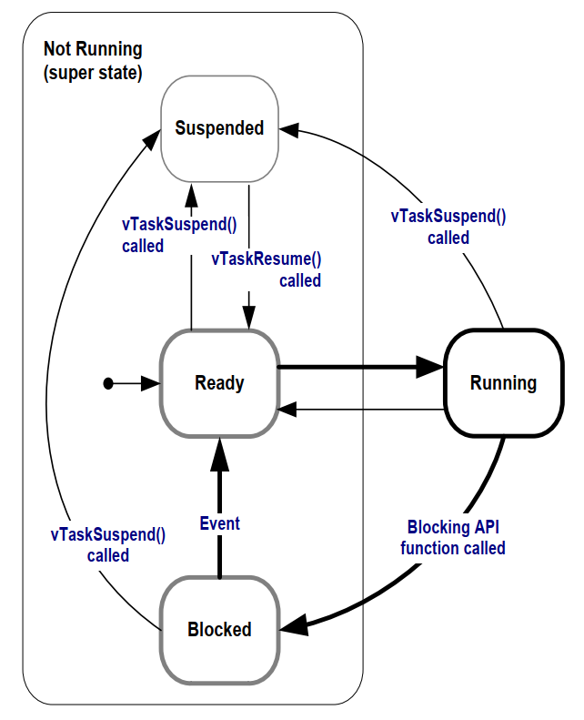
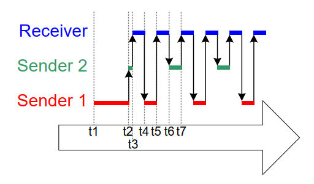
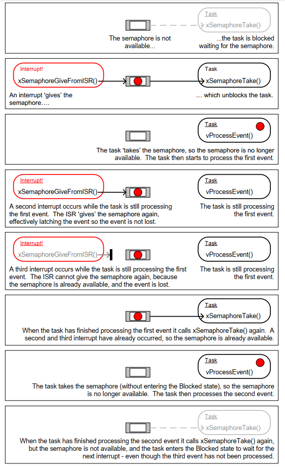
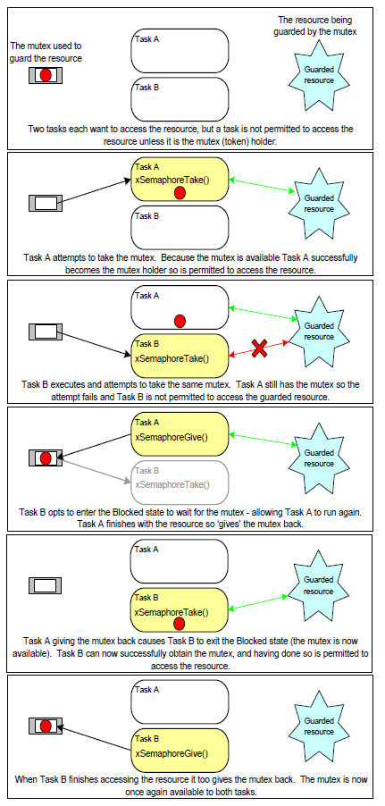
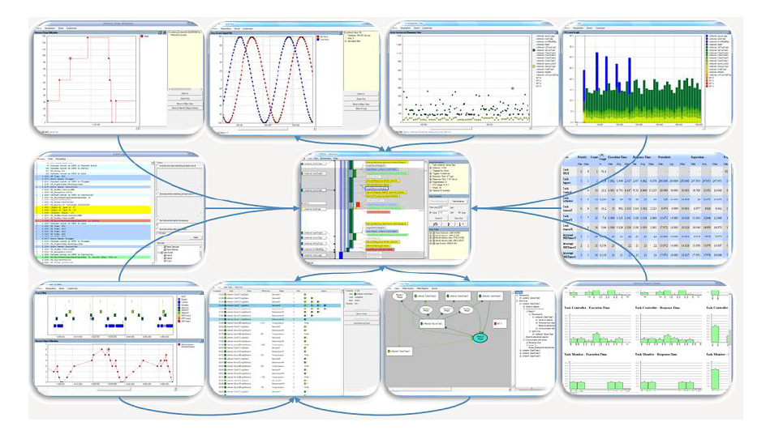
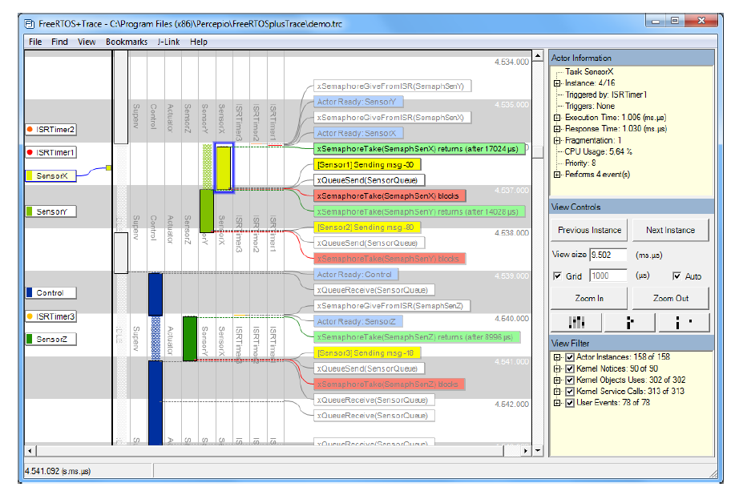
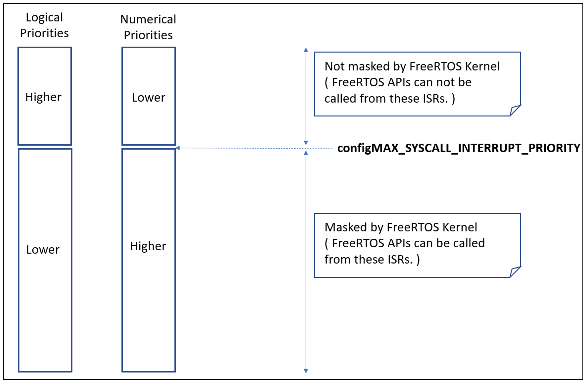

1 Preface
1.1 Multitasking in Small Embedded Systems
1.1.1 About the FreeRTOS Kernel
FreeRTOS is a collection of C libraries comprised of a real-time kernel and a set of modular libraries that implement complementary functionality.
Richard Barry originally developed FreeRTOS around 2003. Real-Time Engineers Ltd, Richard's company, continued FreeRTOS development in close partnership with the world's leading chip companies until Amazon Web Services (AWS) took stewardship of FreeRTOS 2016. Richard now continues his work on FreeRTOS as a senior principal engineer within the AWS IoT team. FreeRTOS is MIT licensed open source code, available for any purpose. You don't have to be an AWS customer to benefit from AWS's stewardship!
The FreeRTOS kernel is ideally suited to deeply embedded real-time applications that run on microcontrollers or small microprocessors. This type of application typically includes a mix of both hard and soft real-time requirements.
Soft real-time requirements state a time deadline—but breaching the deadline would not render the system useless. For example, responding to keystrokes too slowly might make a system seem annoyingly unresponsive without actually making it unusable.
Hard real-time requirements state a time deadline—and breaching the deadline would result in absolute failure of the system. For example, a driver's airbag has the potential to do more harm than good if it responded to crash sensor inputs too slowly.
The FreeRTOS kernel is a real-time kernel (or real-time scheduler) that enables applications built on FreeRTOS to meet their hard real-time requirements. It enables applications to be organized as a collection of independent threads of execution. For example, on a processor that has only one core, only a single thread of execution can execute at any one time. The kernel decides which thread to execute by examining the priority assigned to each thread by the application designer. In the simplest case, the application designer could assign higher priorities to threads that implement hard real-time requirements and lower priorities to threads that implement soft real-time requirements. Allocating priorities in that way would ensure hard real-time threads always execute ahead of soft real-time threads, but priority assignment decisions are not always that simplistic.
Do not be concerned if you do not fully understand the concepts in the previous paragraph yet. The following chapters provide a detailed explanation, with many examples, to help you understand how to use a real-time kernel, and FreeRTOS in particular.
1.1.2 Value Proposition
The unprecedented global success of the FreeRTOS kernel comes from its compelling value proposition; FreeRTOS is professionally developed, strictly quality controlled, robust, supported, does not contain any intellectual property ownership ambiguity, and is truly free to use in commercial applications without any requirement to expose your proprietary source code. Further, AWS's stewardship provides a global presence, expert security event response procedures, a large and diverse development team, expertise in formal verification, pen testing, memory safety proofs, and long-term support – all while maintaining FreeRTOS as a hardware, development tool, and cloud service-neutral open-source project. FreeRTOS development is transparent and community-driven in GitHub, and does not require any special tools or development practices.
You can take a product to market using FreeRTOS without even telling us, let alone paying any fees, and thousands of companies do just that. If at any time you would like to receive additional backup, or if your legal team requires additional written guarantees or indemnification, then our strategic partners provide simple low-cost commercial license options. Peace of mind comes with the knowledge that you can opt to take the commercial route whenever you choose.
1.1.3 A Note About Terminology
In FreeRTOS, each thread of execution is called a 'task'. There is no consensus on terminology within the embedded community, but I prefer 'task' to 'thread,' as thread can have a more specific meaning in some fields of application.
1.1.4 Why Use an RTOS?
There are many well-established techniques for writing good embedded software without using a multithreading kernel. If the system under development is simple, then these techniques might provide the most appropriate solution. Using a kernel would likely be preferable in more complex cases, but where the crossover point occurs will always be subjective.
As already described, task prioritization can help ensure an application meets its processing deadlines, but a kernel can bring other less obvious benefits. Some of these are listed very briefly below.
-
Abstracting away timing information
The RTOS is responsible for execution timing and provides a time-related API to the application. That allows the structure of the application code to be more straightforward and the overall code size to be smaller.
-
Maintainability/Extensibility
Abstracting away timing details results in fewer interdependencies between modules and allows the software to evolve in a controlled and predictable way. Also, the kernel is responsible for the timing, so application performance is less susceptible to changes in the underlying hardware.
-
Modularity
Tasks are independent modules, each of which should have a well-defined purpose.
-
Team development
Tasks should also have well-defined interfaces, allowing easier team development.
-
Easier testing
Tasks that are well-defined independent modules with clean interfaces are easier to test in isolation.
-
Code reuse
Code designed with greater modularity and fewer interdependencies is easier to reuse.
-
Improved efficiency
Application code that uses an RTOS can be completely event-driven. No processing time needs to be wasted by polling for events that have not occurred.
Countering the efficiency gained from being event driven is the need to process the RTOS tick interrupt and switch execution from one task to another. However, applications that don't use an RTOS normally include some form of tick interrupt anyway.
-
Idle time
The automatically created Idle task executes when there are no application tasks that require processing. The Idle task can measure spare processing capacity, perform background checks, or place the processor into a low-power mode.
-
Power Management
The efficiency gains that result from using an RTOS allow the processor to spend more time in a low power mode.
Power consumption can be decreased significantly by placing the processor into a low power state each time the Idle task runs. FreeRTOS also has a special tick-less mode. Using the tick-less mode allows the processor to enter a lower power mode than would otherwise be possible and remain in the low power mode for longer.
-
Flexible interrupt handling
Interrupt handlers can be kept very short by deferring processing to either a task created by the application writer or the automatically created RTOS daemon task (also known as the timer task).
-
Mixed processing requirements
Simple design patterns can achieve a mix of periodic, continuous, and event-driven processing within an application. In addition, hard and soft real-time requirements can be met by selecting appropriate task and interrupt priorities.
1.1.5 FreeRTOS Kernel Features
The FreeRTOS kernel has the following standard features:
- Pre-emptive or co-operative operation
- Optional time-slicing
- Very flexible task priority assignment
- Flexible, fast and light-weight task notification mechanisms
- Queues
- Binary semaphores
- Counting semaphores
- Mutexes
- Recursive mutexes
- Software timers
- Event groups
- Stream buffers
- Message buffers
- Co-routines (deprecated)
- Tick hook functions
- Idle hook functions
- Stack overflow checking
- Trace macros
- Task run-time statistics gathering
- Optional commercial licensing and support
- Full interrupt nesting model (for some architectures)
- A tick-less capability for extreme low power applications (for some architectures)
- Memory Protection Unit support for isolating tasks and increasing application safety (for some architectures)
- Software managed interrupt stack when appropriate (this can help save RAM)
- The ability to create RTOS objects using either statically or dynamically allocated memory
1.1.6 Licensing, and The FreeRTOS, OpenRTOS, and SafeRTOS Family
The FreeRTOS MIT open source license is designed to ensure:
-
FreeRTOS can be used in commercial applications.
-
FreeRTOS itself remains freely available to everybody.
-
FreeRTOS users retain ownership of their intellectual property.
See https://www.FreeRTOS.org/license for the latest open source license information.
OpenRTOS is a commercially licensed version of FreeRTOS provided under license from Amazon Web Services by a third party.
SafeRTOS shares the same usage model as FreeRTOS, but has been developed in accordance with the practices, procedures, and processes necessary to claim compliance with various internationally recognized safety related standards.
1.2 Included Source Files and Projects
1.2.1 Obtaining the Examples that Accompany this Book
The zip file available for download from https://www.FreeRTOS.org/Documentation/code contains all the source code, pre-configured project files, and instructions necessary to build and execute the examples presented in this book. Note the zip file will not necessarily contain the most recent version of FreeRTOS.
The screenshots included in this book show the examples executing in a Microsoft Windows environment, using the FreeRTOS Windows port. The project that uses the FreeRTOS Windows port is pre-configured to build using the free Community edition of Visual Studio, available from https://www.visualstudio.com/. Note that while the FreeRTOS Windows port provides a convenient evaluation, test, and development platform, it does not provide true real-time behavior.
Table of Contents
1 Preface
2 The FreeRTOS Kernel Distribution
- 2.1 Introduction
- 2.2 Understanding the FreeRTOS Distribution
- 2.3 Demo Applications
- 2.4 Creating a FreeRTOS Project
- 2.5 Data Types and Coding Style Guide
3 Heap Memory Management
- 3.1 Introduction
- 3.2 Example Memory Allocation Schemes
- 3.3 Heap Related Utility Functions and Macros
- 3.3.1 Defining the Heap Start Address
- 3.3.2 The xPortGetFreeHeapSize() API Function
- 3.3.3 The xPortGetMinimumEverFreeHeapSize() API Function
- 3.3.4 The vPortGetHeapStats() API Function
- 3.3.5 Collecting Per-task Heap Usage Statistics
- 3.3.6 Malloc Failed Hook Functions
- 3.3.7 Placing Task Stacks in Fast Memory
- 3.4 Using Static Memory Allocation
4 Task Management
- 4.1 Introduction
- 4.2 Task Functions
- 4.3 Top Level Task States
- 4.4 Task Creation
- 4.5 Task Priorities
- 4.6 Time Measurement and the Tick Interrupt
- 4.7 Expanding the Not Running State
- 4.8 The Idle Task and the Idle Task Hook
- 4.9 Changing the Priority of a Task
- 4.10 Deleting a Task
- 4.11 Thread Local Storage and Reentrancy
- 4.12 Scheduling Algorithms
5 Queue Management
- 5.1 Introduction
- 5.2 Characteristics of a Queue
- 5.3 Using a Queue
- 5.4 Receiving Data From Multiple Sources
- 5.5 Working with Large or Variable Sized Data
- 5.6 Receiving From Multiple Queues
- 5.7 Using a Queue to Create a Mailbox
6 Software Timer Management
- 6.1 Chapter Introduction and Scope
- 6.2 Software Timer Callback Functions
- 6.3 Attributes and States of a Software Timer
- 6.4 The Context of a Software Timer
- 6.5 Creating and Starting a Software Timer
- 6.6 The Timer ID
- 6.7 Changing the Period of a Timer
- 6.8 Resetting a Software Timer
7 Interrupt Management
- 7.1 Introduction
- 7.2 Using the FreeRTOS API from an ISR
- 7.3 Deferred Interrupt Processing
- 7.4 Binary Semaphores Used for Synchronization
- 7.5 Counting Semaphores
- 7.6 Deferring Work to the RTOS Daemon Task
- 7.7 Using Queues within an Interrupt Service Routine
- 7.8 Interrupt Nesting
8 Resource Management
- 8.1 Chapter Introduction and Scope
- 8.2 Critical Sections and Suspending the Scheduler
- 8.3 Mutexes (and Binary Semaphores)
- 8.4 Gatekeeper Tasks
9 Event Groups
- 9.1 Chapter Introduction and Scope
- 9.2 Characteristics of an Event Group
- 9.3 Event Management Using Event Groups
- 9.4 Task Synchronization Using an Event Group
10 Task Notifications
- 10.1 Introduction
- 10.2 Task Notifications; Benefits and Limitations
- 10.3 Using Task Notifications
- 10.3.1 Task Notification API Options
- 10.3.2 The xTaskNotifyGive() API Functions
- 10.3.3 The vTaskNotifyGiveFromISR() API Function
- 10.3.4 The ulTaskNotifyTake() API Function
- 10.3.5 The xTaskNotify() and xTaskNotifyFromISR() API Functions
- 10.3.6 The xTaskNotifyWait() API Function
- 10.3.7 Task Notifications Used in Peripheral Device Drivers: UART Example
- 10.3.8 Task Notifications Used in Peripheral Device Drivers: ADC Example
- 10.3.9 Task Notifications Used Directly Within an Application
11 Low Power Support
- 11.1 Power Saving Introduction
- 11.2 FreeRTOS Sleep Modes
- 11.3 Functions and Enabling Built-in Tickless Idle Functionality
- 11.4 Implementing portSUPPRESS_TICKS_AND_SLEEP() Macro
- 11.5 Idle Task Hook Function
12 Developer Support
- 12.1 Introduction
- 12.2 configASSERT()
- 12.3 Tracealyzer for FreeRTOS
- 12.4 Debug Related Hook (Callback) Functions
- 12.5 Viewing Run-time and Task State Information
- 12.5.1 Task Run-Time Statistics
- 12.5.2 The Run-Time Statistics Clock
- 12.5.3 Configuring an Application to Collect Run-Time Statistics
- 12.5.4 The uxTaskGetSystemState() API Function
- 12.5.5 The vTaskListTasks() Helper Function
- 12.5.6 The vTaskGetRunTimeStatistics() Helper Function
- 12.5.7 Generating and Displaying Run-Time Statistics, a Worked Example
- 12.6 Trace Hook Macros
13 Troubleshooting
- 13.1 Chapter Introduction and Scope
- 13.2 Interrupt Priorities
- 13.3 Stack Overflow
- 13.4 Use of printf() and sprintf()
- 13.5 Other Common Sources of Error
- 13.5.1 Symptom: Adding a simple task to a demo causes the demo to crash
- 13.5.2 Symptom: Using an API function within an interrupt causes the application to crash
- 13.5.3 Symptom: Sometimes the application crashes within an interrupt service routine
- 13.5.4 Symptom: The scheduler crashes when attempting to start the first task
- 13.5.5 Symptom: Interrupts are unexpectedly left disabled, or critical sections do not nest correctly
- 13.5.6 Symptom: The application crashes even before the scheduler is started
- 13.5.7 Symptom: Calling API functions while the scheduler is suspended, or from inside a critical section, causes the application to crash
- 13.6 Additional Debugging Steps
Examples:
- Example 4.1 Creating tasks
- Example 4.2 Using the task parameter
- Example 4.3 Experimenting with priorities
- Example 4.4 Using the Blocked state to create a delay
- Example 4.5 Converting the example tasks to use vTaskDelayUntil()
- Example 4.6 Combining blocking and non-blocking tasks
- Example 4.7 Defining an idle task hook function
- Example 4.8 Deleting tasks
- Example 5.1 Blocking when receiving from a queue
- Example 5.2 Blocking when sending to a queue, and sending structures on a queue
- Example 5.3 Using a Queue Set
- Example 6.1 Creating one-shot and auto-reload timers
- Example 6.2 Using the callback function parameter and the software timer ID
- Example 6.3 Resetting a software timer
- Example 7.1 Using a binary semaphore to synchronize a task with an interrupt
- Example 7.2 Using a counting semaphore to synchronize a task with an interrupt
- Example 7.3 Centralized deferred interrupt processing
- Example 7.4 Sending and receiving on a queue from within an interrupt
- Example 8.1 Rewriting vPrintString() to use a semaphore
- Example 8.2 The alternative implementation for print task
- Example 9.1 Experimenting with event groups
- Example 9.2 Synchronizing tasks
- Example 10.1 Using a task notification in place of a semaphore, method 1
- Example 10.2 Using a task notification in place of a semaphore, method 2
Figures:
- Figure 2.1 Top level directories within the FreeRTOS distribution
- Figure 2.2 Core FreeRTOS source files within the FreeRTOS directory tree
- Figure 2.3 Port specific source files within the FreeRTOS directory tree
- Figure 2.4 The demo directory hierarchy
- Figure 3.1 RAM being allocated from the heap_1 array each time a task is created
- Figure 3.2 RAM being allocated and freed from the heap_2 array as tasks are created and deleted
- Figure 3.3 RAM being allocated and freed from the heap_4 array
- Figure 3.4 Memory Map
- Figure 4.1 Top level task states and transitions
- Figure 4.2 The output produced when executing Example 4.1
- Figure 4.3 The actual execution pattern of the two Example 4.1 tasks
- Figure 4.4 The execution sequence expanded to show the tick interrupt executing
- Figure 4.5 Running both tasks at different priorities
- Figure 4.6 The execution pattern when one task has a higher priority than the...
- Figure 4.7 Full task state machine
- Figure 4.8 The output produced when Example 4.4 is executed
- Figure 4.9 The execution sequence when the tasks use vTaskDelay() in place of the null loop
- Figure 4.10 Bold lines indicate the state transitions performed by the tasks...
- Figure 4.11 The output produced when Example 4.6 is executed
- Figure 4.12 The execution pattern of Example 4.6
- Figure 4.13 The output produced when Example 4.7 is executed
- Figure 4.14 The sequence of task execution when running Example 4.8
- Figure 4.15 The output produced when Example 4.8 is executed
- Figure 4.16 The output produced when Example 4.9 is executed
- Figure 4.17 The execution sequence for Example 4.9
- Figure 4.18 Execution pattern highlighting task prioritization and preemption...
- Figure 4.19 Execution pattern highlighting task prioritization and time slicing...
- Figure 4.20 The execution pattern for the same scenario as shown in Figure 4.19...
- Figure 4.21 Execution pattern that demonstrates how tasks of equal priority can...
- Figure 4.22 Execution pattern demonstrating the behavior of the cooperative scheduler
- Figure 5.1 An example sequence of writes to, and reads from a queue
- Figure 5.2 The output produced when Example 5.1 is executed
- Figure 5.3 The sequence of execution produced by Example 5.1
- Figure 5.4 An example scenario where structures are sent on a queue
- Figure 5.5 The output produced by Example 5.2
- Figure 5.6 The sequence of execution produced by Example 5.2
- Figure 5.7 The output produced when Example 5.3 is executed
- Figure 6.1 The difference in behavior between one-shot and auto-reload software timers
- Figure 6.2 Auto-reload software timer states and transitions
- Figure 6.3 One-shot software timer states and transitions
- Figure 6.4 The timer command queue being used by a software timer API function to communicate with the RTOS daemon task
- Figure 6.5 The execution pattern when the priority of a task calling xTimerStart() is above the priority of the daemon task
- Figure 6.6 The execution pattern when the priority of a task calling xTimerStart() is below the priority of the daemon task
- Figure 6.7 The output produced when Example 6.1 is executed
- Figure 6.8 The output produced when Example 6.2 is executed
- Figure 6.9 Starting and resetting a software timer that has a period of 6 ticks
- Figure 6.10 The output produced when Example 6.3 is executed
- Figure 7.1 Completing interrupt processing in a high priority task
- Figure 7.2 Using a binary semaphore to implement deferred interrupt processing
- Figure 7.3 Using a binary semaphore to synchronize a task with an interrupt
- Figure 7.4 The output produced when Example 7.1 is executed
- Figure 7.5 The sequence of execution when Example 7.1 is executed
- Figure 7.6 The scenario when one interrupt occurs before the task has finished processing the first event
- Figure 7.7 The scenario when two interrupts occur before the task has finished processing the first event
- Figure 7.8 Using a counting semaphore to
- Figure 7.9 The output produced when Example 7.2 is executed
- Figure 7.10 The output produced when Example 7.3 is executed
- Figure 7.11 The sequence of execution when Example 7.3 is executed
- Figure 7.12 The output produced when Example 7.4 is executed
- Figure 7.13 The sequence of execution produced by Example 7.4
- Figure 7.14 Constants affecting interrupt nesting behavior
- Figure 7.15 How a priority of binary 101 is stored by a Cortex-M microcontroller that implements four priority bits
- Figure 8.1 Mutual exclusion implemented using a mutex
- Figure 8.2 The output produced when Example 8.1 is executed
- Figure 8.3 A possible sequence of execution for Example 8.1
- Figure 8.4 A worst case priority inversion scenario
- Figure 8.5 Priority inheritance minimizing the effect of priority inversion
- Figure 8.6 A possible sequence of execution when tasks that have the same priority use the same mutex
- Figure 8.7 A sequence of execution that could occur if two instances of the task shown by Listing 8.15 are created at the same priority
- Figure 8.8 The output produced when Example 8.2 is executed
- Figure 9.1 Event flag to bit number mapping in a variable of type EventBits_t
- Figure 9.2 An event group in which only bits 1, 4 and 7 are set, and all the other event flags are clear, making the event group
- Figure 9.3 The output produced when Example 9.1 is executed with xWaitForAllBits set to pdFALSE
- Figure 9.4 The output produced when Example 9.1 is executed with xWaitForAllBits set to pdTRUE
- Figure 9.5 The output produced when Example 9.2 is executed
- Figure 10.1 A communication object being used to send an event from one task to another
- Figure 10.2 A task notification used to send an event directly from one task to another
- Figure 10.3 The output produced when Example 7.1 is executed
- Figure 10.4 The sequence of execution when Example 10.1 is executed
- Figure 10.5 The output produced when Example 10.2 is executed
- Figure 10.6 The communication paths from the application tasks to the cloud server, and back again
- Figure 12.1 FreeRTOS-Trace includes more than 20 interconnected views
- Figure 12.2 FreeRTOS-Trace main trace view - one of more than 20 interconnected trace views
- Figure 12.3 FreeRTOS-Trace CPU load view - one of more than 20 interconnected trace views
- Figure 12.4 FreeRTOS-Trace response time view - one of more than 20 interconnected trace views
- Figure 12.5 FreeRTOS-Trace user event plot view - one of more than 20 interconnected trace views
- Figure 12.6 FreeRTOS-Trace kernel object history view - one of more than 20 interconnected trace views
- Figure 12.7 Example output generated by vTaskListTasks()
- Figure 12.8 Example output generated by vTaskGetRunTimeStatistics()
Listings:
- Listing 2.1 The template for a new main() function
- Listing 3.1 The vPortDefineHeapRegions() API function prototype
- Listing 3.2 The HeapRegion_t structure
- Listing 3.3 An array of HeapRegion_t structures that together describe the 3 regions of RAM in their entirety
- Listing 3.4 An array of HeapRegion_t structures that describe all of RAM2, all of RAM3, but only part of RAM1
- Listing 3.5 Using GCC syntax to declare the array that will be used by heap_4, and place the array in a memory section named .my_heap
- Listing 3.6 Using IAR syntax to declare the array that will be used by heap_4, and place the array at the absolute address 0x20000000
- Listing 3.7 The xPortGetFreeHeapSize() API function prototype
- Listing 3.8 The xPortGetMinimumEverFreeHeapSize() API function prototype
- Listing 3.9 The vPortGetHeapStatus() API function prototype
- Listing 3.10 The HeapStatus_t() structure
- Listing 3.11 The malloc failed hook function name and prototype
- Listing 3.12 Mapping the pvPortMallocStack() and vPortFreeStack() macros to an application defined memory allcator
- Listing 3.13 Typical implementation of vApplicationGetTimerTaskMemory
- Listing 3.14 Typical implementation of vApplicationGetIdleTaskMemory
- Listing 4.1 The task function prototype
- Listing 4.2 The structure of a typical task function
- Listing 4.3 The xTaskCreate() API function prototype
- Listing 4.4 Implementation of the first task used in Example 4.1
- Listing 4.5 Implementation of the second task used in Example 4.1
- Listing 4.6 Starting the Example 4.1 tasks
- Listing 4.7 Creating a task from within another task after the scheduler has started
- Listing 4.8 The single task function used to create two tasks in Example 4.2
- Listing 4.9 The main() function for Example 2
- Listing 4.10 Using the pdMS_TO_TICKS() macro to convert 200 milliseconds...
- Listing 4.11. Creating two tasks at different priorities
- Listing 4.12 The vTaskDelay() API function prototype
- Listing 4.13 The source code for the example task after replacing the null loop delay with a call...
- Listing 4.14 vTaskDelayUntil() API function prototype
- Listing 4.15 The implementation of the example task using vTaskDelayUntil()
- Listing 4.16 The continuous processing task used in Example 4.6
- Listing 4.17 The periodic task used in Example 4.6
- Listing 4.18 The idle task hook function name and prototype
- Listing 4.19 A very simple Idle hook function
- Listing 4.20 The source code for the example task now prints out the ulIdleCycleCount value
- Listing 4.21 The vTaskPrioritySet() API function prototype
- Listing 4.22 The uxTaskPriorityGet() API function prototype
- Listing 4.23 The implementation of Task 1 in Example 4.8
- Listing 4.24 The implementation of Task 2 in Example 4.8
- Listing 4.25 The implementation of main() for Example 4.8
- Listing 4.26 The vTaskDelete() API function prototype
- Listing 4.27 The implementation of main() for Example 4.9
- Listing 4.28 The implementation of Task 1 for Example 4.9
- Listing 4.29 The implementation of Task 2 for Example 4.9
- Listing 4.30 Function prototypes of the Thread Local Storage Pointer API functions
- Listing 5.1 The xQueueCreate() API function prototype
- Listing 5.2 The xQueueSendToFront() API function prototype
- Listing 5.3 The xQueueSendToBack() API function prototype
- Listing 5.4 The xQueueReceive() API function prototype
- Listing 5.5 The uxQueueMessagesWaiting() API function prototype
- Listing 5.6 Implementation of the sending task used in Example 5.1
- Listing 5.7 Implementation of the receiver task for Example 5.1
- Listing 5.8 The implementation of main() in Example 5.1
- Listing 5.9 The definition of the structure that is to be passed on a queue, plus the declaration of two variables for use by the example
- Listing 5.10 The implementation of the sending task for Example 5.2
- Listing 5.11 The definition of the receiving task for Example 5.2
- Listing 5.12 The implementation of main() for Example 5.2
- Listing 5.13 Creating a queue that holds pointers
- Listing 5.14 Using a queue to send a pointer to a buffer
- Listing 5.15 Using a queue to receive a pointer to a buffer
- Listing 5.16 The structure used to send events to the TCP/IP stack task in FreeRTOS-TCP
- Listing 5.17 Pseudo code showing how an IPStackEvent_t structure is used to send data received from the network to the TCP/IP task
- Listing 5.18 Pseudo code showing how an IPStackEvent_t structure is used to send the handle of a socket that is accepting a connection to the TCP/IP task
- Listing 5.19 Pseudo code showing how an IPStackEvent_t structure is used to send a network down event to the TCP/IP task
- Listing 5.20 Pseudo code showing how an IPStackEvent_t structure is received and processed
- Listing 5.21 The xQueueCreateSet() API function prototype
- Listing 5.22 The xQueueAddToSet() API function prototype
- Listing 5.23 The xQueueSelectFromSet() API function prototype
- Listing 5.24 Implementation of main() for Example 5.3
- Listing 5.25 The sending tasks used in Example 5.3
- Listing 5.26 The receive task used in Example 5.3
- Listing 5.27 Using a queue set that contains queues and semaphores
- Listing 5.28 A queue being created for use as a mailbox
- Listing 5.29 The xQueueOverwrite() API function prototype
- Listing 5.30 Using the xQueueOverwrite() API function
- Listing 5.31 The xQueuePeek() API function prototype
- Listing 5.32 Using the xQueuePeek() API function
- Listing 6.1 The software timer callback function prototype
- Listing 6.2 The xTimerDelete() API function prototype
- Listing 6.3 The xTimerCreate() API function prototype
- Listing 6.4 The xTimerStart() API function prototype
- Listing 6.5 Creating and starting the timers used in Example 6.1
- Listing 6.6 The callback function used by the one-shot timer in Example 6.1
- Listing 6.7 The callback function used by the auto-reload timer in Example 6.1
- Listing 6.8 The vTimerSetTimerID() API function prototype
- Listing 6.9 The pvTimerGetTimerID() API function prototype
- Listing 6.10 Creating the timers used in Example 6.2
- Listing 6.11 The timer callback function used in Example 6.2
- Listing 6.12 The xTimerChangePeriod() API function prototype
- Listing 6.13 Using xTimerChangePeriod()
- Listing 6.14 The xTimerReset() API function prototype
- Listing 6.15 The callback function for the one-shot timer used in Example 6.3
- Listing 6.16 The task used to reset the software timer in Example 6.3
- Listing 7.1 The portEND_SWITCHING_ISR() macros
- Listing 7.2 The portYIELD_FROM_ISR() macros
- Listing 7.3 The xSemaphoreCreateBinary() API function prototype
- Listing 7.4 The xSemaphoreTake() API function prototype
- Listing 7.5 The xSemaphoreGiveFromISR() API function prototype
- Listing 7.6 Implementation of the task that periodically generates a software interrupt in Example 7.1
- Listing 7.7 The implementation of the task to which the interrupt processing is deferred (the task that...
- Listing 7.8 The ISR for the software interrupt used in Example 7.1
- Listing 7.9 The implementation of main() for Example 7.1
- Listing 7.10 The recommended structure of a deferred interrupt processing task, using a UART receive...
- Listing 7.11 The xSemaphoreCreateCounting() API function prototype
- Listing 7.12 The call to xSemaphoreCreateCounting() used to create the counting semaphore in Example 7.2
- Listing 7.13 The implementation of the interrupt service routine used by Example 7.2
- Listing 7.14 The xTimerPendFunctionCallFromISR() API function prototype
- Listing 7.15 The prototype to which a function passed in the xFunctionToPend parameter of xTimerPendFunctionCallFromISR()...
- Listing 7.16 The software interrupt handler used in Example 7.3
- Listing 7.17 The function that performs the processing necessitated by the interrupt in Example 7.3
- Listing 7.18 The implementation of main() for Example 7.3
- Listing 7.19 The xQueueSendToFrontFromISR() API function prototype
- Listing 7.20 The xQueueSendToBackFromISR() API function prototype
- Listing 7.21 The implementation of the task that writes to the queue in Example 7.4
- Listing 7.22 The implementation of the interrupt service routine used by Example 7.4
- Listing 7.23 The task that prints out the strings received from the interrupt service routine in Example 7.4
- Listing 7.24 The main() function for Example 7.4
- Listing 8.1 An example read, modify, write sequence
- Listing 8.2 An example of a reentrant function
- Listing 8.3 An example of a function that is not reentrant
- Listing 8.4 Using a critical section to guard access to a register
- Listing 8.5 A possible implementation of vPrintString()
- Listing 8.6 Using a critical section in an interrupt service routine
- Listing 8.7 The vTaskSuspendAll() API function prototype
- Listing 8.8 The xTaskResumeAll() API function prototype
- Listing 8.9 The implementation of vPrintString()
- Listing 8.10 The xSemaphoreCreateMutex() API function prototype
- Listing 8.11 The implementation of prvNewPrintString()
- Listing 8.12 The implementation of prvPrintTask() for Example 8.1
- Listing 8.13 The implementation of main() for Example 8.1
- Listing 8.14 Creating and using a recursive mutex
- Listing 8.15 A task that uses a mutex in a tight loop
- Listing 8.16 Ensuring tasks that use a mutex in a loop receive a more equal amount of processing time...
- Listing 8.17 The name and prototype for a tick hook function
- Listing 8.18 The gatekeeper task
- Listing 8.19 The print task implementation for Example 8.2
- Listing 8.20 The tick hook implementation
- Listing 8.21 The implementation of main() for Example 8.2
- Listing 9.1 The xEventGroupCreate() API function prototype
- Listing 9.2. The xEventGroupSetBits() API function prototype
- Listing 9.3 The xEventGroupSetBitsFromISR() API function prototype
- Listing 9.4 The xEventGroupWaitBits() API function prototype
- Listing 9.5 The xEventGroupGetStaticBuffer() API function prototype
- Listing 9.6 Event bit definitions used in Example 9.1
- Listing 9.7 The task that sets two bits in the event group in Example 9.1
- Listing 9.8 The ISR that sets bit 2 in the event group in Example 9.1
- Listing 9.9 The task that blocks to wait for event bits to become set in Example 9.1
- Listing 9.10 Creating the event group and tasks in Example 9.1
- Listing 9.11 Pseudo code for two tasks that synchronize with each other to ensure a shared TCP socket...
- Listing 9.12 The xEventGroupSync() API function prototype
- Listing 9.13 The implementation of the task used in Example 9.2
- Listing 9.14 The main() function used in Example 9.2
- Listing 10.1 The xTaskNotifyGive() API function prototype
- Listing 10.2 The vTaskNotifyGiveFromISR() API function prototype
- Listing 10.3 The ulTaskNotifyTake() API function prototype
- Listing 10.4 The implementation of the task to which the interrupt processing is deferred (the task that...
- Listing 10.5 The implementation of the interrupt service routine used in Example 10.1
- Listing 10.6 The implementation of the task to which the interrupt processing is deferred (the task...
- Listing 10.7 The implementation of the interrupt service routine used in Example 10.2
- Listing 10.8 Prototypes for the xTaskNotify() and xTaskNotifyFromISR() API functions
- Listing 10.9 The xTaskNotifyWait() API function prototype
- Listing 10.10 Pseudo code demonstrating how a binary semaphore can be used in a driver library transmit...
- Listing 10.11 Pseudo code demonstrating how a task notification can be used in a driver library transmit...
- Listing 10.12 Pseudo code demonstrating how a task notification can be used in a driver library receive...
- Listing 10.13 Pseudo code demonstrating how a task notification can be used to pass a value to a task
- Listing 10.14 The structure and data type sent on a queue to the server task
- Listing 10.15 The Implementation of the Cloud Read API Function
- Listing 10.16 The Server Task Processing a Read Request
- Listing 10.17 The Implementation of the Cloud Write API Function
- Listing 10.18 The Server Task Processing a Send Request
- Listing 11.1 The prototype for the portSUPPRESS_TICKS_AND_SLEEP macro
- Listing 11.2 The vPortSuppressTicksAndSleep API function prototype
- Listing 11.3 The eTaskConfirmSleepModeStatus API function prototype
- Listing 11.4 The prototype for the configPRE_SLEEP_PROCESSING macro
- Listing 11.5 The prototype for the configPOST_SLEEP_PROCESSING macro
- Listing 11.6 An example of a user defined implementation of portSUPPRESS_TICKS_AND_SLEEP()
- Listing 11.7 The vApplicationIdleHook API function prototype
- Listing 12.1 Using the standard C assert() macro to check pxMyPointer is not NULL
- Listing 12.2 A simple configASSERT() definition useful when executing under the control of a debugger
- Listing 12.3 A configASSERT() definition that records the source code line that failed an assertion
- Listing 12.4 The uxTaskGetSystemState() API function prototype
- Listing 12.5 The TaskStatus_t structure
- Listing 12.6 The vTaskListTasks() API function prototype
- Listing 12.7 The vTaskList() API function prototype
- Listing 12.8 The vTaskGetRunTimeStatistics() API function prototype
- Listing 12.9 The vTaskGetRunTimeStats() API function prototype
- Listing 12.10 16-bit timer overflow interrupt handler used to count timer overflows
- Listing 12.11 Macros added to FreeRTOSConfig.h to enable the collection of run-time statistics
- Listing 12.12 The task that prints out the collected run-time statistics
- Listing 13.1 The uxTaskGetStackHighWaterMark() API function prototype
- Listing 13.2 The uxTaskGetStackHighWaterMark2() API function prototype
- Listing 13.3 The stack overflow hook function prototype
Tables:
- Table 1 FreeRTOS source files to include in the project
- Table 2 TickType_t data type and the configTICK_TYPE_WIDTH_IN_BITS configuration
- Table 3 Macro prefixes
- Table 4 Common macro definitions
- Table 5 The FreeRTOSConfig.h settings to configure the kernel scheduling algorithms
- Table 6 The Effect of the uxBitsToWaitFor and xWaitForAllBits Parameters
2 The FreeRTOS Kernel Distribution
2.1 Introduction
To help users orientate themselves with the FreeRTOS kernel files and directories, this chapter:
- Provides a top-level view of the FreeRTOS directory structure.
- Describes the source files required by any particular FreeRTOS project.
- Introduces the demo applications.
- Provides information on how to create a new FreeRTOS project.
The description here relates only to the official FreeRTOS distribution. The examples that come with this book use a slightly different organization.
2.2 Understanding the FreeRTOS Distribution
2.2.1 Definition: FreeRTOS Port
FreeRTOS can be built with approximately twenty different compilers and can run on more than forty different processor architectures. Each supported combination of compiler and processor is called a FreeRTOS port.
2.2.2 Building FreeRTOS
FreeRTOS is a library that provides multi-tasking capabilities to what would otherwise be a single-threaded, bare-metal application.
FreeRTOS is supplied as a set of C source files. Some source files are common to all ports, while others are specific to a port. Building the source files as part of your project makes the FreeRTOS API available to your application. A demo application that can be used as a reference is provided for each official FreeRTOS port. The demo application is pre-configured to build the correct source files and include the correct header files.
At the time of its creation, each demo application built 'out of the box' with no compiler errors or warnings. Please use the FreeRTOS support forums (https://forums.FreeRTOS.org) to let us know if subsequent changes to the build tools mean that this is no longer the case. Section 2.3 describes the demo applications.
2.2.3 FreeRTOSConfig.h
Constants defined in a header file called FreeRTOSConfig.h configure the kernel. Do not include FreeRTOSConfig.h directly in your source files! Instead, include FreeRTOS.h, which will include FreeRTOSConfig.h at the appropriate time.
FreeRTOSConfig.h is used to tailor the FreeRTOS kernel for use in a
specific application. For example, FreeRTOSConfig.h contains constants
such as configUSE_PREEMPTION which defines whether
FreeRTOS uses co-operative or pre-emptive scheduling1.
Section 4.13 describes scheduling algorithms.
FreeRTOSConfig.h tailors FreeRTOS for a specific application, so it should be located in a directory that is part of the application, not in a directory that contains the FreeRTOS source code.
The main FreeRTOS distribution contains a demo application for every FreeRTOS port, and every demo application has its own FreeRTOSConfig.h file. It is recommended to start with, then adapt, the FreeRTOSConfig.h used by the demo application provided for the FreeRTOS port you use rather than create the file from scratch.
The FreeRTOS reference manual and https://www.freertos.org/a00110.html describe the constants that appear in FreeRTOSConfig.h. It is not necessary to include all the constants in FreeRTOSConfig.h—many get a default value if omitted.
2.2.4 Official Distributions
Individual FreeRTOS libraries, including the kernel, are available from their own Github repository and as a zip file archive. The ability to obtain individual libraries is convenient when using FreeRTOS in production code. However, it is better to download the main FreeRTOS distribution to get started as that contains both libraries and example projects.
The main distribution contains source code for all the FreeRTOS libraries, all the FreeRTOS kernel ports, and project files for all the FreeRTOS demo applications. Do not be put off by the number of files! Applications only require a small subset.
Use https://github.com/FreeRTOS/FreeRTOS/releases/latest to download a zip file containing the latest distribution. Alternatively, use one of the following Git commands to clone the main distribution from GitHub, including individual libraries sub-moduled from their respective Git repositories:
git clone https://github.com/FreeRTOS/FreeRTOS.git --recurse-submodules
git clone git@github.com:FreeRTOS/FreeRTOS.git --recurse-submodules
Figure 2.1 shows the first and second-level directories of the FreeRTOS distribution:
FreeRTOS
│ │
│ ├─Source Contains the FreeRTOS kernel source files
│ │
│ └─Demo Contains pre-configured and port specific FreeRTOS kernel demo projects
│
FreeRTOS-Plus
│
├─Source Contains source code for other FreeRTOS and ecosystem libraries
│
└─Demo Contains demo projects for other FreeRTOS and ecosystem libraries
Figure 2.1 Top level directories within the FreeRTOS distribution
The distribution only contains one copy of the FreeRTOS kernel source files; all the demo projects expect to find the kernel source files in the FreeRTOS/Source directory, and may not build if the directory structure is changed.
2.2.5 FreeRTOS Source Files Common to All Ports
tasks.c and list.c implement the core FreeRTOS kernel functionality and are always required. They are located directly in the FreeRTOS/Source directory, as shown in Figure 2.2. The same directory also contains the following optional source files:
-
queue.c
queue.c provides both queue and semaphore services, as described later in this book. queue.c is nearly always required.
-
timers.c
timers.c provides software timer functionality, as described later in this book. It only needs to be built if the application uses software timers.
-
event_groups.c
event_groups.c provides event group functionality, as described later in this book. It only needs to be built if the application uses event groups.
-
stream_buffer.c
stream_buffer.c provides both stream buffer and message buffer functionality, as described later in this book. It only needs to be built if the application uses stream or message buffers.
-
croutine.c
croutine.c implements the FreeRTOS co-routine functionality. It only needs to be built if the application uses co-routines. Co-routines are intended for use on very small microcontrollers, are rarely used now. They are, therefore, no longer maintained, and their use is not recommended for new designs. Co-routines are not described in this book.
FreeRTOS
│
└─Source
│
├─tasks.c FreeRTOS source file - always required
├─list.c FreeRTOS source file - always required
├─queue.c FreeRTOS source file - nearly always required
├─timers.c FreeRTOS source file - optional
├─event_groups.c FreeRTOS source file – optional
├─stream_buffer.c FreeRTOS source file - optional
└─croutine.c FreeRTOS source file – optional and no longer maintained
Figure 2.2 Core FreeRTOS source files within the FreeRTOS directory tree
It is recognized that the file names used in the zip file distribution may cause namespace clashes, as many projects will already use files with the same names. Users can change the file names if necessary, but the names cannot change in the distribution, as doing so will break compatibility with existing users' projects as well as FreeRTOS-aware development tools.
2.2.6 FreeRTOS Source Files Specific to a Port
The FreeRTOS/Source/portable directory contains source files specific to a FreeRTOS port. The portable directory is arranged as a hierarchy, first by compiler, then by processor architecture. Figure 2.3 shows the hierarchy.
To run FreeRTOS on a processor with architecture 'architecture' using compiler 'compiler', in addition to the core FreeRTOS source files, you must also build the files located in the FreeRTOS/Source/portable/[compiler]/[architecture] directory.
As described in Chapter 3, Heap Memory Management, FreeRTOS also
considers heap memory allocation to be part of the portable layer. If
configSUPPORT_DYNAMIC_ALLOCATION is set to 0, then do not include a heap
memory allocation scheme in your project.
FreeRTOS provides example heap allocation schemes in the FreeRTOS/Source/portable/MemMang directory. If FreeRTOS is configured to use dynamic memory allocation, it is necessary to either include one of the heap implementation source files from that directory in your project, or provide your own implementation.
! Do not include more than one of the example heap allocation implementations in your project.
FreeRTOS
│
└─Source
│
└─portable Directory containing all port specific source files
│
├─MemMang Directory containing the alternative heap allocation source files
│
├─[compiler 1] Directory containing port files specific to compiler 1
│ │
│ ├─[architecture 1] Contains files for the compiler 1 architecture 1 port
│ ├─[architecture 2] Contains files for the compiler 1 architecture 2 port
│ └─[architecture 3] Contains files for the compiler 1 architecture 3 port
│
└─[compiler 2] Directory containing port files specific to compiler 2
│
├─[architecture 1] Contains files for the compiler 2 architecture 1 port
├─[architecture 2] Contains files for the compiler 2 architecture 2 port
└─[etc.]
Figure 2.3 Port specific source files within the FreeRTOS directory tree
2.2.7 Include Paths
FreeRTOS requires the inclusion of three directories in the compiler's include path. These are:
-
The path to the core FreeRTOS kernel header files, FreeRTOS/Source/include.
-
The path to the source files specific to the FreeRTOS port in use, FreeRTOS/Source/portable/[compiler]/[architecture].
-
The path to the correct FreeRTOSConfig.h header file.
2.2.8 Header Files
A source file that uses the FreeRTOS API must include FreeRTOS.h, followed by the header file that contains the prototype for the API function—either task.h, queue.h, semphr.h, timers.h, event_groups.h, stream_buffer.h, message_buffer.h or croutine.h. Do not explicitly include any other FreeRTOS header files—FreeRTOS.h automatically includes FreeRTOSConfig.h.
2.3 Demo Applications
Each FreeRTOS port comes with at least one demo application that, at the time of its creation, built 'out of the box' with no compiler errors or warnings. Please use the FreeRTOS support forums (https://forums.FreeRTOS.org) to let us know if subsequent changes to the build tools mean that is no longer the case.
Cross Platform Support: FreeRTOS is developed and tested on Windows, Linux and MacOS systems and with a variety of toolchains, both embedded and traditional. However, occasionally build errors can appear due to differences of version or a missed test. Please use the FreeRTOS support forum (https://forums.FreeRTOS.org) to alert us of any such errors.
Demo applications have several purposes:
- To provide an example of a working and pre-configured project, with the correct files included, and the correct compiler options set.
- To allow 'out of the box' experimentation with minimal setup or prior knowledge.
- To demonstrate how to use FreeRTOS APIs.
- As a base from which real applications can be created.
- To stress test the kernel's implementation.
Each demo project is located in a unique sub-directory under the FreeRTOS/Demo directory. The sub-directory's name indicates the port to which the demo project relates.
The FreeRTOS.org website contains a page for each demo application. The web page includes information on:
- How to locate the project file for the demo within the FreeRTOS directory structure.
- The hardware or emulator the project is configured to use.
- How to set up the hardware to run the demo.
- How to build the demo.
- The demo's expected behaviour.
All demo projects create a subset of the 'common demo tasks', the implementations of which are in the FreeRTOS/Demo/Common/Minimal directory. The common demo tasks exist to demonstrate how to use the FreeRTOS API and test FreeRTOS kernel ports—they do not implement any particular useful functionality.
Many demo projects can also be configured to create a simple 'blinky' style starter project that typically creates two RTOS tasks and one queue.
Every demo project includes a file called main.c that contains the
main() function, which creates the demo application tasks before starting
the FreeRTOS kernel. See the
comments within the individual main.c files for information specific to
that demo.
FreeRTOS
│
└─Demo Directory containing all the demo projects
│
├─[Demo x] Contains the project file that builds demo 'x'
├─[Demo y] Contains the project file that builds demo 'y'
├─[Demo z] Contains the project file that builds demo 'z'
└─Common Contains files that are built by all the demo applications
Figure 2.4 The demo directory hierarchy
2.4 Creating a FreeRTOS Project
2.4.1 Adapting One of the Supplied Demo Projects
Every FreeRTOS port comes with at least one pre-configured demo application. It is recommended to create new projects by adapting one of these existing projects to ensure the new project has the correct files included, the correct interrupt handlers installed, and the correct compiler options set.
To create a new application from an existing demo project:
-
Open the supplied demo project and ensure it builds and executes as expected.
-
Remove the source files that implement the demo tasks, which are files located in the Demo/Common directory.
-
Delete all the function calls within
main(), exceptprvSetupHardware()andvTaskStartScheduler(), as shown in Listing 2.1. -
Verify that the project still builds.
When you follow these steps you create a project that includes the correct FreeRTOS source files, but does not define any functionality.
int main( void )
{
/* Perform any hardware setup necessary. */
prvSetupHardware();
/* --- APPLICATION TASKS CAN BE CREATED HERE --- */
/* Start the created tasks running. */
vTaskStartScheduler();
/* Execution will only reach here if there was insufficient heap to
start the scheduler. */
for( ;; );
return 0;
}
Listing 2.1 The template for a new main() function
2.4.2 Creating a New Project from Scratch
As already mentioned, it is recommended to create new projects from an existing demo project. If this is not desirable, then use the following procedure to create a new project:
-
Using your chosen toolchain, create a new project that does not yet include any FreeRTOS source files.
-
Ensure the new project builds, downloads to your target hardware, and executes.
-
Only when you are sure you already have a working project, add the FreeRTOS source files detailed in Table 1 to the project.
-
Copy the
FreeRTOSConfig.hheader file used by the demo project and provided for the port in use into your new project directory. -
Add the following directories to the path the project will search to locate header files:
- FreeRTOS/Source/include
- FreeRTOS/Source/portable/[compiler]/[architecture] (where [compiler] and [architecture] are correct for your chosen port)
- The directory containing the
FreeRTOSConfig.hheader file
-
Copy the compiler settings from the relevant demo project.
-
Install any FreeRTOS interrupt handlers that might be necessary. Use the web page that describes the port in use and the demo project provided for the port in use as a reference.
| File | Location |
|---|---|
| tasks.c | FreeRTOS/Source |
| queue.c | FreeRTOS/Source |
| list.c | FreeRTOS/Source |
| timers.c | FreeRTOS/Source |
| event_groups.c | FreeRTOS/Source |
| stream_buffer.c | FreeRTOS/Source |
| All C and assembler files | FreeRTOS/Source/portable/[compiler]/[architecture] |
| heap_n.c | FreeRTOS/Source/portable/MemMang, where n is either 1, 2, 3, 4 or 5 |
Table 1 FreeRTOS source files to include in the project
Note on heap memory:
If configSUPPORT_DYNAMIC_ALLOCATION is 0 then do not include a heap memory
allocation scheme in your project. Else include a heap memory allocation scheme
in your project, either one of the heap_n.c files, or one provided by
yourself. Refer to Chapter 3, Heap Memory Management, for more information.
2.5 Data Types and Coding Style Guide
2.5.1 Data Types
Each port of FreeRTOS has a unique portmacro.h header file that contains
(amongst other things) definitions for two port-specific data types:
TickType_t and BaseType_t. The following list describes the macro or
typedef used and the actual type:
-
TickType_tFreeRTOS configures a periodic interrupt called the tick interrupt.
The number of tick interrupts that have occurred since the FreeRTOS application started is called the tick count. The tick count is used as a measure of time.
The time between two tick interrupts is called the tick period. Times are specified as multiples of tick periods.
TickType_tis the data type used to hold the tick count value, and to specify times.TickType_tcan be an unsigned 16-bit type, an unsigned 32-bit type, or an unsigned 64-bit type, depending on the setting ofconfigTICK_TYPE_WIDTH_IN_BITSin FreeRTOSConfig.h. The setting ofconfigTICK_TYPE_WIDTH_IN_BITSis architecture dependent. FreeRTOS ports will also check if this setting is valid.Using a 16-bit type can greatly improve efficiency on 8-bit and 16-bit architectures, but severely limits the maximum block time that can be specified in FreeRTOS API calls. There is no reason to use a 16-bit
TickType_ttype on a 32-bit or 64-bit architecture.Previous use of
configUSE_16_BIT_TICKShas been replaced byconfigTICK_TYPE_WIDTH_IN_BITSto support tick counts greater than 32-bits. New designs should useconfigTICK_TYPE_WIDTH_IN_BITSinstead ofconfigUSE_16_BIT_TICKS.
configTICK_TYPE_WIDTH_IN_BITS 8-bit architectures 16-bit architectures 32-bit architectures 64-bit architectures TICK_TYPE_WIDTH_16_BITS uint16_t uint16_t uint16_t N/A TICK_TYPE_WIDTH_32_BITS uint32_t uint32_t uint32_t N/A TICK_TYPE_WIDTH_64_BITS N/A N/A uint64_t uint64_t Table 2 TickType_t data type and the configTICK_TYPE_WIDTH_IN_BITS configuration
-
BaseType_tThis is always defined as the most efficient data type for the architecture. Typically, this is a 64-bit type on a 64-bit architecture, a 32-bit type on a 32-bit architecture, a 16-bit type on a 16-bit architecture, and an 8-bit type on an 8-bit architecture.
BaseType_tis generally used for return types that take only a very limited range of values, and forpdTRUE/pdFALSEtype Booleans.
List of port specific data types used by FreeRTOS
2.5.2 Variable Names
Variables are prefixed with their type: 'c' for char, 's' for int16_t
(short), 'l' for int32_t (long), and 'x' for BaseType_t and any other
non-standard types (structures, task handles, queue handles, etc.).
If a variable is unsigned, it is also prefixed with a 'u'. If a variable
is a pointer, it is also prefixed with a 'p'. For example, a variable of
type uint8_t will be prefixed with 'uc', and a variable of type pointer
to char (char *) will be prefixed with 'pc'.
2.5.3 Function Names
Functions are prefixed with both the type they return and the file they are defined within. For example:
- vTaskPrioritySet() returns a void and is defined within tasks.c.
- xQueueReceive() returns a variable of type BaseType_t and is defined within queue.c.
- pvTimerGetTimerID() returns a pointer to void and is defined within timers.c.
File scope (private) functions are prefixed with 'prv'.
2.5.4 Formatting
Tabs are used in some demo applications where one tab is always set to equal four spaces. The kernel no longer uses tabs.
2.5.5 Macro Names
Most macros are written in upper case, and prefixed with lower case letters that indicate where the macro is defined. Table 3 provides a list of prefixes.
| Prefix | Location of macro definition |
|---|---|
port (for example, portMAX_DELAY) | portable.h or portmacro.h |
task (for example, taskENTER_CRITICAL()) | task.h |
pd (for example, pdTRUE) | projdefs.h |
config (for example, configUSE_PREEMPTION) | FreeRTOSConfig.h |
err (for example, errQUEUE_FULL) | projdefs.h |
Table 3 Macro prefixes
Note that the semaphore API is written almost entirely as a set of macros, but follows the function naming convention, rather than the macro naming convention.
The macros defined in Table 4 are used throughout the FreeRTOS source code.
| Macro | Value |
|---|---|
pdTRUE | 1 |
pdFALSE | 0 |
pdPASS | 1 |
pdFAIL | 0 |
Table 4 Common macro definitions
2.5.6 Rationale for Excessive Type Casting
The FreeRTOS source code compiles with many different compilers, many of which differ in how and when they generate warnings. In particular, different compilers want casting used in different ways. As a result, the FreeRTOS source code contains more type casting than would normally be warranted.
3 Heap Memory Management
3.1 Introduction
3.1.1 Prerequisites
Being a competent C programmer is a prerequisite for using FreeRTOS, so this chapter assumes the reader is familiar with concepts such as:
- The different compiling and linking phases of building a C project.
- What the stack and heap are.
- The standard C library
malloc()andfree()functions.
3.1.2 Scope
This chapter covers:
- When FreeRTOS allocates RAM.
- The five example memory allocation schemes supplied with FreeRTOS.
- Which memory allocation scheme to select.
3.1.3 Switching Between Static and Dynamic Memory Allocation
The following chapters introduce kernel objects such as tasks, queues, semaphores, and event groups. The RAM required to hold these objects can be allocated statically at compile-time or dynamically at run time. Dynamic allocation reduces design and planning effort, simplifies the API, and minimizes the RAM footprint. Static allocation is more deterministic, removes the need to handle memory allocation failures, and removes the risk of heap fragmentation (where the heap has enough free memory but not in one usable contiguous block).
The FreeRTOS API functions that create kernel objects using statically
allocated memory are only available when configSUPPORT_STATIC_ALLOCATION
is set to 1 in FreeRTOSConfig.h. The FreeRTOS API functions that create
kernel objects using dynamically allocated memory are only available
when configSUPPORT_DYNAMIC_ALLOCATION is either set to 1 or left
undefined in FreeRTOSConfig.h. It is valid to have both constants set to
1 simultaneously.
More information concerning configSUPPORT_STATIC_ALLOCATION is in
section 3.4 Using Static Memory Allocation.
3.1.4 Using Dynamic Memory Allocation
Dynamic memory allocation is a C programming concept, not a concept
specific to either FreeRTOS or multitasking. It is relevant to FreeRTOS
because kernel objects can optionally be created using dynamically
allocated memory, and the general-purpose C library malloc() and free()
functions may not be suitable for one or more of the following reasons:
- They are not always available on small embedded systems.
- Their implementation can be relatively large, taking up valuable code space.
- They are rarely thread-safe.
- They are not deterministic; the amount of time taken to execute the functions will differ from call to call.
- They can suffer from fragmentation (where the heap has enough free memory but not in one usable contiguous block).
- They can complicate the linker configuration.
- They can be the source of difficult to debug errors if the heap space is allowed to grow into memory used by other variables.
3.1.5 Options for Dynamic Memory Allocation
Early versions of FreeRTOS used a memory pools allocation scheme, where pools of different size memory blocks are pre-allocated at compile-time, then returned by the memory allocation functions. Although block allocation is common in real-time systems, it was removed from FreeRTOS because its inefficient use of RAM in really small embedded systems led to many support requests.
FreeRTOS now treats memory allocation as part of the portable layer (instead of part of the core codebase). This is because different embedded systems have different dynamic memory allocation and timing requirements, so a single dynamic memory allocation algorithm will only ever be appropriate for a subset of applications. Also, removing dynamic memory allocation from the core codebase enables application writers to provide their own specific implementations when appropriate.
When FreeRTOS requires RAM it calls pvPortMalloc() instead of malloc().
Likewise, when FreeRTOS frees previously allocated RAM it calls
vPortFree() instead of free(). pvPortMalloc() has the same prototype as
the standard C library malloc() function, and vPortFree() has the same
prototype as the standard C library free() function.
pvPortMalloc() and vPortFree() are public functions, so they can also be
called from application code.
FreeRTOS comes with five example implementations of pvPortMalloc() and
vPortFree(), which are all documented in this chapter. FreeRTOS
applications can use one of the example implementations or provide their
own.
The five examples are defined in the heap_1.c, heap_2.c, heap_3.c, heap_4.c and heap_5.c source files respectively, all of which are located in the FreeRTOS/Source/portable/MemMang directory.
3.2 Example Memory Allocation Schemes
3.2.1 Heap_1
It is common for small, dedicated embedded systems to only create tasks and other kernel objects before starting the FreeRTOS scheduler. When this is the case, memory only gets (dynamically) allocated by the kernel before the application starts to perform any real-time functionality, and the memory remains allocated for the application's lifetime. This means the chosen allocation scheme does not have to consider the more complex memory allocation issues, such as determinism and fragmentation, and can instead prioritise attributes such as code size and simplicity.
Heap_1.c implements a very basic version of pvPortMalloc(), and does not
implement vPortFree(). Applications that never delete a task or other
kernel objects have the potential to use heap_1. Some commercially
critical and safety-critical systems that would otherwise prohibit the
use of dynamic memory allocation also have the potential to use heap_1.
Critical systems often prohibit dynamic memory allocation because of the
uncertainties associated with non-determinism, memory fragmentation, and
failed allocations. Heap_1 is always deterministic and cannot fragment
memory.
Heap_1's implementation of pvPortMalloc() simply subdivides a simple
uint8_t array called the FreeRTOS heap into smaller blocks each time
it's called. The FreeRTOSConfig.h constant configTOTAL_HEAP_SIZE sets
the size of the array in bytes. Implementing the heap as a statically
allocated array makes FreeRTOS appear to consume a lot of RAM because
the heap becomes part of the FreeRTOS data.
Each dynamically allocated task results in two calls to pvPortMalloc().
The first allocates a task control block (TCB), and the second the
task's stack. Figure 3.1 demonstrates how heap_1 subdivides the simple
array as tasks get created.
Referring to Figure 3.1:
-
A shows the array before creating any tasks—the entire array is free.
-
B shows the array after creating one task.
-
C shows the array after creating three tasks.

Figure 3.1 RAM being allocated from the heap_1 array each time a task is created
3.2.2 Heap_2
Heap_2 is superseded by heap_4, which includes enhanced functionality. Heap_2 is kept in the FreeRTOS distribution for backward compatibility and is not recommended for new designs.
Heap_2.c also works by subdividing an array dimensioned by the
configTOTAL_HEAP_SIZE constant. It uses a best-fit algorithm to allocate
memory, and, unlike heap_1, it does implement vPortFree(). Again,
implementing the heap as a statically allocated array makes FreeRTOS
appear to consume a lot of RAM because the heap becomes part of the
FreeRTOS data.
The best-fit algorithm ensures that pvPortMalloc() uses the free block
of memory that is closest in size to the number of bytes requested. For
example, consider the scenario where:
- The heap contains three blocks of free memory that are 5 bytes, 25 bytes, and 100 bytes, respectively.
pvPortMalloc()requests 20 bytes of RAM.
The smallest free block of RAM into which the requested number of bytes
fits is the 25-byte block, so pvPortMalloc() splits the 25-byte block
into one block of 20 bytes and one block of 5 bytes before returning
a pointer to the 20-byte block1. The new 5-byte block remains available
for future calls to pvPortMalloc().
This is an oversimplification, because heap_2 stores information on the block sizes within the heap area, so the sum of the two split blocks will actually be less than 25.
Unlike heap_4, heap_2 does not combine adjacent free blocks into a single larger block, so it is more susceptible to fragmentation than heap_4. However, fragmentation is not an issue if the allocated and subsequently freed blocks are always the same size.

Figure 3.2 RAM being allocated and freed from the heap_2 array as tasks are created and deleted
Figure 3.2 demonstrates how the best-fit algorithm works when a task is created, deleted, and created again. Referring to Figure 3.2:
-
A shows the array after allocating three tasks. A large free block remains at the top of the array.
-
B shows the array after deleting one of the tasks. The large free block at the top of the array remains. There are now also two smaller free blocks that previously held the TCB and stack of the deleted task.
-
C shows the situation after creating another task. Creating the task resulted in two calls to
pvPortMalloc()from within thexTaskCreate()API function, one to allocate a new TCB and the other to allocate the task stack. Section 3.4 of this book describesxTaskCreate().Every TCB is the same size, so the best-fit algorithm reuses the block of RAM that held the TCB of the deleted task to hold the TCB of the created task.
If the size of the stack allocated to the newly created task is the same size as that allocated to the previously deleted task, then the best-fit algorithm reuses the block of RAM that held the stack of the deleted task to hold the stack of the created task.
The larger unallocated block at the top of the array remains untouched.
Heap_2 is not deterministic but is faster than most standard library
implementations of malloc() and free().
3.2.3 Heap_3
Heap_3.c uses the standard library malloc() and free() functions, so the
linker configuration defines the heap size, and the
configTOTAL_HEAP_SIZE constant is not used.
Heap_3 makes malloc() and free() thread-safe by temporarily suspending
the FreeRTOS scheduler for the duration of their execution. Chapter 8,
Resource Management, covers thread safety and scheduler suspension.
3.2.4 Heap_4
Like heap_1 and heap_2, heap_4 works by subdividing an array into
smaller blocks. As before, the array is statically allocated and
dimensioned by configTOTAL_HEAP_SIZE, which makes FreeRTOS appear to use
a lot of RAM as the heap becomes part of the FreeRTOS data.
Heap_4 uses a first-fit algorithm to allocate memory. Unlike heap_2, heap_4 combines (coalesces) adjacent free blocks of memory into a single larger block, which minimizes the risk of memory fragmentation.
The first fit algorithm ensures pvPortMalloc() uses the first free block
of memory that is large enough to hold the number of bytes requested.
For example, consider the scenario where:
- The heap contains three blocks of free memory that, in the order in which they appear in the array, are 5 bytes, 200 bytes, and 100 bytes, respectively.
pvPortMalloc()requests 20 bytes of RAM.
The first free block of RAM that the requested number of bytes fits is
the 200-byte block, so pvPortMalloc() splits the 200-byte block into one
block of 20 bytes and one of 180 bytes2, before returning a pointer
to the 20-byte block. The new 180-byte block remains available to future
calls to pvPortMalloc().
This is an oversimplification, because heap_4 stores information on the block sizes within the heap area, so the sum of the two split blocks will actually be less than 200 bytes.
Heap_4 combines (coalesces) adjacent free blocks into a single larger block, minimizing the risk of fragmentation, and making it suitable for applications that repeatedly allocate and free different-sized blocks of RAM.

Figure 3.3 RAM being allocated and freed from the heap_4 array
Figure 3.3 demonstrates how the heap_4 first-fit algorithm with memory coalescence works. Referring to Figure 3.3:
-
A shows the array after creating three tasks. A large free block remains at the top of the array.
-
B shows the array after deleting one of the tasks. The large free block at the top of the array remains. There is now another free block where the TCB and stack of the deleted task used to be. Unlike in the heap_2 example, heap_4 merges the two memory blocks that previously held the TCB and stack of the deleted task, respectively, into a larger single free block.
-
C shows the situation after creating a FreeRTOS queue. Section 5.3 of this book describes the
xQueueCreate()API function used to allocate queues dynamically.xQueueCreate()callspvPortMalloc()to allocate the RAM used by the queue. As heap_4 uses a first-fit algorithm,pvPortMalloc()allocates RAM from the first free RAM block that is large enough to hold the queue, which in Figure 3.3, was the RAM freed by deleting the task. The queue does not consume all the RAM in the free block, so the block is split into two, and the unused portion remains available to future calls topvPortMalloc(). -
D shows the situation after calling
pvPortMalloc()directly from application code, rather than indirectly by calling a FreeRTOS API function. The user allocated block was small enough to fit in the first free block, which was the block between the memory allocated to the queue, and the memory allocated to the TCB following it.The memory freed by deleting the task has now split into three separate blocks; the first block holds the queue, the second block holds the user allocated memory, and the third block remains free.
-
E shows the situation after deleting the queue, which automatically frees the memory allocated to the deleted queue. There is now free memory on either side of the user allocated block.
-
F shows the situation after freeing the user allocated memory. The memory previously used by the user allocated block has been combined with the free memory on either side to create a larger single free block.
Heap_4 is not deterministic but is faster than most standard library
implementations of malloc() and free().
3.2.5 Heap_5
Heap_5 uses the same allocation algorithm as heap_4. Unlike heap_4, which is limited to allocating memory from a single array, heap_5 can combine memory from multiple separated memory spaces into a single heap. Heap_5 is useful when the RAM provided by the system on which FreeRTOS is running does not appear as a single contiguous (without space) block in the system's memory map.
3.2.6 Initialising heap_5: The vPortDefineHeapRegions() API Function
vPortDefineHeapRegions() initialises heap_5 by specifying the start
address and size of each separate memory area that makes up the heap
managed by heap_5. Heap_5 is the only provided heap allocation scheme
that requires explicit initialisation and can't be used until after the
call to vPortDefineHeapRegions(). That means kernel objects, such as
tasks, queues, and semaphores, cannot be created dynamically until after
the call to vPortDefineHeapRegions().
void vPortDefineHeapRegions( const HeapRegion_t * const pxHeapRegions );
Listing 3.1 The vPortDefineHeapRegions() API function prototype
vPortDefineHeapRegions() takes an array of HeapRegion_t structures as
its only parameter. Each structure defines the start address and size of
a memory block that will become part of the heap—the whole array of
structures defines the entire heap space.
typedef struct HeapRegion
{
/* The start address of a block of memory that will be part of the heap.*/
uint8_t *pucStartAddress;
/* The size of the block of memory in bytes. */
size_t xSizeInBytes;
} HeapRegion_t;
Listing 3.2 The HeapRegion_t structure
Parameters:
-
pxHeapRegionsA pointer to the start of an array of
HeapRegion_tstructures. Each structure defines the start address and size of a memory block that will become part of the heap.The
HeapRegion_tstructures in the array must be ordered by start address; theHeapRegion_tstructure that describes the memory area with the lowest start address must be the first structure in the array, and theHeapRegion_tstructure that describes the memory area with the highest start address must be the last structure in the array.Mark the end of the array with a
HeapRegion_tstructure that has itspucStartAddressmember set toNULL.
By way of example, consider the hypothetical memory map shown in Figure 3.4 A which contains three separate blocks of RAM: RAM1, RAM2 and RAM3. It is assumed executable code is placed in read-only memory, which is not shown.

Figure 3.4 Memory Map
Listing 3.3 shows an array of HeapRegion_t structures that together
describe the three blocks of RAM in their entirety.
/* Define the start address and size of the three RAM regions. */
#define RAM1_START_ADDRESS ( ( uint8_t * ) 0x00010000 )
#define RAM1_SIZE ( 64 * 1024 )
#define RAM2_START_ADDRESS ( ( uint8_t * ) 0x00020000 )
#define RAM2_SIZE ( 32 * 1024 )
#define RAM3_START_ADDRESS ( ( uint8_t * ) 0x00030000 )
#define RAM3_SIZE ( 32 * 1024 )
/* Create an array of HeapRegion_t definitions, with an index for each
of the three RAM regions, and terminate the array with a HeapRegion_t
structure containing a NULL address. The HeapRegion_t structures must
appear in start address order, with the structure that contains the
lowest start address appearing first. */
const HeapRegion_t xHeapRegions[] =
{
{ RAM1_START_ADDRESS, RAM1_SIZE },
{ RAM2_START_ADDRESS, RAM2_SIZE },
{ RAM3_START_ADDRESS, RAM3_SIZE },
{ NULL, 0 } /* Marks the end of the array. */
};
int main( void )
{
/* Initialize heap_5. */
vPortDefineHeapRegions( xHeapRegions );
/* Add application code here. */
}
Listing 3.3 An array of HeapRegion_t structures that together describe the 3 regions of RAM in their entirety
Although Listing 3.3 correctly describes the RAM, it does not demonstrate a usable example because it allocates all the RAM to the heap, leaving no RAM free for use by other variables.
The linking phase of the build process allocates a RAM address to each variable. The RAM available for use by the linker is normally described by a linker configuration file, such as a linker script. In Figure 3.4 B it is assumed the linker script included information on RAM1, but did not include information on RAM2 or RAM3. As a result, the linker placed variables in RAM1, leaving only the portion of RAM1 above address 0x0001nnnn available for use by heap_5. The actual value of 0x0001nnnn depends on the combined size of all the variables included in the application. The linker has left all of RAM2 and all of RAM3 unused, leaving the whole of RAM2 and the whole of RAM3 available for use by heap_5.
The code shown in Listing 3.3 would cause the RAM allocated to heap_5
below address 0x0001nnnn to overlap the RAM used to hold variables.
If you set the start address of the first HeapRegion_t structure within the
xHeapRegions[] array to 0x0001nnnn, rather than a start address of
0x00010000, the heap will not overlap with RAM used by the linker.
However, that is not a recommended solution because:
- The start address might not be easy to determine.
- The amount of RAM used by the linker might change in future builds,
which would make an update to the start address used in the
HeapRegion_tstructure necessary. - The build tools will not know, and therefore cannot warn the application writer, if the RAM used by the linker and the RAM used by heap_5 overlap.
Listing 3.4 demonstrates a more convenient and maintainable example. It
declares an array called ucHeap. ucHeap is a normal variable, so it
becomes part of the data allocated to RAM1 by the linker. The first
HeapRegion_t structure in the xHeapRegions array describes the start
address and size of ucHeap, so ucHeap becomes part of the memory managed
by heap_5. The size of ucHeap can be increased until the RAM used by the
linker consumes all of RAM1, as shown in Figure 3.4 C.
/* Define the start address and size of the two RAM regions not used by
the linker. */
#define RAM2_START_ADDRESS ( ( uint8_t * ) 0x00020000 )
#define RAM2_SIZE ( 32 * 1024 )
#define RAM3_START_ADDRESS ( ( uint8_t * ) 0x00030000 )
#define RAM3_SIZE ( 32 * 1024 )
/* Declare an array that will be part of the heap used by heap_5. The
array will be placed in RAM1 by the linker. */
#define RAM1_HEAP_SIZE ( 30 * 1024 )
static uint8_t ucHeap[ RAM1_HEAP_SIZE ];
/* Create an array of HeapRegion_t definitions. Whereas in Listing 3.3 the
first entry described all of RAM1, so heap_5 will have used all of
RAM1, this time the first entry only describes the ucHeap array, so
heap_5 will only use the part of RAM1 that contains the ucHeap array.
The HeapRegion_t structures must still appear in start address order,
with the structure that contains the lowest start address appearing first. */
const HeapRegion_t xHeapRegions[] =
{
{ ucHeap, RAM1_HEAP_SIZE },
{ RAM2_START_ADDRESS, RAM2_SIZE },
{ RAM3_START_ADDRESS, RAM3_SIZE },
{ NULL, 0 } /* Marks the end of the array. */
};
Listing 3.4 An array of HeapRegion_t structures that describe all of RAM2, all of RAM3, but only part of RAM1
The advantages of the technique demonstrated in Listing 3.4 include:
- It is not necessary to use a hard-coded start address.
- The address used in the
HeapRegion_tstructure will be set automatically by the linker, so it will always be correct, even if the amount of RAM used by the linker changes in future builds. - It is impossible for RAM allocated to heap_5 to overlap data placed into RAM1 by the linker.
- The application will not link if
ucHeapis too big.
3.3 Heap Related Utility Functions and Macros
3.3.1 Defining the Heap Start Address
Heap_1, heap_2 and heap_4 allocate memory from a statically allocated
array dimensioned by configTOTAL_HEAP_SIZE. This section refers to these
allocation schemes collectively as heap_n.
Sometimes the heap needs to be placed at a specific memory address. For
example, the stack allocated to a dynamically created task comes from
the heap, so it might be necessary to locate the heap in fast internal
memory rather than slow external memory. (See the sub-section Placing
Task Stacks in Fast Memory below for another method of allocating task
stacks in fast memory). The configAPPLICATION_ALLOCATED_HEAP
compile-time configuration constant enables the application to declare
the array in place of the declaration that would otherwise be in the
heap_n.c source file. Declaring the array in the application code
enables the application writer to specify its start address.
If configAPPLICATION_ALLOCATED_HEAP is set to 1 in FreeRTOSConfig.h,
the application that uses FreeRTOS must allocate a uint8_t array
called ucHeap and dimensioned by the configTOTAL_HEAP_SIZE constant.
The syntax required to place a variable at a specific memory address is dependent on the compiler in use, so refer to your compiler's documentation. Examples for two compilers follow:
- Listing 3.5 shows the syntax required by the GCC compiler to declare
the array and place the array in a memory section called
.my_heap. - Listing 3.6 shows the syntax required by the IAR compiler to declare the array and place the array at the absolute memory address 0x20000000.
uint8_t ucHeap[ configTOTAL_HEAP_SIZE ] __attribute__ ( ( section( ".my_heap" ) ) );
Listing 3.5 Using GCC syntax to declare the array that will be used by heap_4, and place the array in a memory section named .my_heap
uint8_t ucHeap[ configTOTAL_HEAP_SIZE ] @ 0x20000000;
Listing 3.6 Using IAR syntax to declare the array that will be used by heap_4, and place the array at the absolute address 0x20000000
3.3.2 The xPortGetFreeHeapSize() API Function
The xPortGetFreeHeapSize() API function returns the number of free bytes
in the heap at the time the function is called. It does not provide
information on heap fragmentation.
xPortGetFreeHeapSize() is not implemented for heap_3.
size_t xPortGetFreeHeapSize( void );
Listing 3.7 The xPortGetFreeHeapSize() API function prototype
Return value:
xPortGetFreeHeapSize()returns the number of bytes that remain unallocated in the heap at the time it is called.
3.3.3 The xPortGetMinimumEverFreeHeapSize() API Function
The xPortGetMinimumEverFreeHeapSize() API function returns the minimum
number of unallocated bytes that have ever existed in the heap since the
FreeRTOS application started executing.
The value returned by xPortGetMinimumEverFreeHeapSize() indicates how
close the application has ever come to running out of heap space. For
example, if xPortGetMinimumEverFreeHeapSize() returns 200, then, at some
time since the application started executing, it came within 200 bytes
of running out of heap space.
xPortGetMinimumEverFreeHeapSize() can also be used to optimise the heap
size. For example, if xPortGetMinimumEverFreeHeapSize() returns 2000
after executing the code that you know has the highest heap usage,
configTOTAL_HEAP_SIZE can be reduced by up to 2000 bytes.
xPortGetMinimumEverFreeHeapSize() is only implemented in heap_4 and heap_5.
size_t xPortGetMinimumEverFreeHeapSize( void );
Listing 3.8 The xPortGetMinimumEverFreeHeapSize() API function prototype
Return value:
xPortGetMinimumEverFreeHeapSize()returns the minimum number of unallocated bytes that existed in the heap since the FreeRTOS application started executing.
3.3.4 The vPortGetHeapStats() API Function
Heap_4 and heap_5 implement vPortGetHeapStats(), which completes the
HeapStats_t structure pass by reference as the function's only parameter.
Listing 3.9 shows the vPortGetHeapStats() function prototype. Listing 3.10
shows the HeapStats_t structure members.
void vPortGetHeapStats( HeapStats_t *xHeapStats );
Listing 3.9 The vPortGetHeapStatus() API function prototype
/* Prototype of the vPortGetHeapStats() function. */
void vPortGetHeapStats( HeapStats_t *xHeapStats );
/* Definition of the HeapStats_t structure. All sizes specified in bytes. */
typedef struct xHeapStats
{
/* The total heap size currently available - this is the sum of all the
free blocks, not the largest available block. */
size_t xAvailableHeapSpaceInBytes;
/* The size of the largest free block within the heap at the time
vPortGetHeapStats() is called. */
size_t xSizeOfLargestFreeBlockInBytes;
/* The size of the smallest free block within the heap at the time
vPortGetHeapStats() is called. */
size_t xSizeOfSmallestFreeBlockInBytes;
/* The number of free memory blocks within the heap at the time
vPortGetHeapStats() is called. */
size_t xNumberOfFreeBlocks;
/* The minimum amount of total free memory (sum of all free blocks)
there has been in the heap since the system booted. */
size_t xMinimumEverFreeBytesRemaining;
/* The number of calls to pvPortMalloc() that have returned a valid
memory block. */
size_t xNumberOfSuccessfulAllocations;
/* The number of calls to vPortFree() that has successfully freed a
block of memory. */
size_t xNumberOfSuccessfulFrees;
} HeapStats_t;
Listing 3.10 The HeapStatus_t() structure
3.3.5 Collecting Per-task Heap Usage Statistics
The vTaskGetInfo() API function, documented in section TBD-RB of this
book, populates a TaskStatus_t structure with information about a task.
If the configTRACK_TASK_MEMORY_ALLOCATIONS compile-time constant is set
to 1 in FreeRTOSConfig.h, the structure includes the following additional
information:
- The number of times the task called
pvPortMalloc(). - The number of times the task called
vPortFree(). - The number of heap bytes allocated by the task that have not yet
been freed by any task at the time
vTaskGetInfo()was called. - The maximum amount of heap memory allocated by the task at any given time since the task started.
3.3.6 Malloc Failed Hook Functions
Like the standard library malloc() function, pvPortMalloc() returns NULL
if it cannot allocate the requested amount of RAM. The malloc failed hook
(or callback) is an application-provided function that gets called if
pvPortMalloc() returns NULL. You must set configUSE_MALLOC_FAILED_HOOK to
1 in FreeRTOSConfig.h in order for the callback to occur. If the malloc failed
hook gets called inside a FreeRTOS API function that uses dynamic memory
allocation to create a kernel object, the object is not created.
If configUSE_MALLOC_FAILED_HOOK is set to 1 in FreeRTOSConfig.h, then
the application must provide a malloc failed hook function with the name
and prototype shown in Listing 3.11. The application can implement the
function in any way appropriate for the application. Many of the
provided FreeRTOS demo applications treat an allocation failure as a
fatal error, but that is not the best practice for production systems,
which should gracefully recover from allocation failures.
void vApplicationMallocFailedHook( void );
Listing 3.11 The malloc failed hook function name and prototype
3.3.7 Placing Task Stacks in Fast Memory
Because stacks are written to and read from at a high rate, they should
be placed in fast memory, but that might not be where you want the heap to
reside. FreeRTOS uses the pvPortMallocStack() and vPortFreeStack()
macros to optionally enable stacks that are allocated within the FreeRTOS API
code to have their own memory allocator. If you want the stack to come
from the heap managed by pvPortMalloc() then leave pvPortMallocStack()
and vPortFreeStack() undefined as they default to calling
pvPortMalloc() and vPortFree(), respectively. Otherwise, define the
macros to call application-provided functions as shown in Listing 3.12.
/* Functions provided by the application writer than allocate and free
memory from a fast area of RAM. */
void *pvMallocFastMemory( size_t xWantedSize );
void vPortFreeFastMemory( void *pvBlockToFree );
/* Add the following to FreeRTOSConfig.h to map the pvPortMallocStack()
and vPortFreeStack() macros to the functions that use fast memory. */
#define pvPortMallocStack( x ) pvMallocFastMemory( x )
#define vPortFreeStack( x ) vPortFreeFastMemory( x )
Listing 3.12 Mapping the pvPortMallocStack() and vPortFreeStack() macros to an application defined memory allcator
3.4 Using Static Memory Allocation
Section 3.1.4 lists some of the disadvantages that come with dynamic memory allocation. To avoid those issues, static memory allocation allows the developer to explicity create every memory block needed by the application. This has the following advantages:
- All required memory is known at compile time.
- All memory is deterministic.
There are other advantages, but with these advantages come a few complications. The main complication is the addition of a few additional user functions to manage some kernel memory, and the second complication is the need to ensure all static memory is declared in a suitable scope.
3.4.1 Enabling Static Memory Allocation
Static memory allocation is enabled by setting configSUPPORT_STATIC_ALLOCATION to 1 in FreeRTOSConfig.h. When this
configuration is enabled, the kernel enables all the static versions of the kernel functions. These are:
xTaskCreateStaticxEventGroupCreateStaticxEventGroupGetStaticBufferxQueueGenericCreateStaticxQueueGenericGetStaticBuffersxQueueCreateMutexStatic- if
configUSE_MUTEXESis 1
- if
xQueueCreateCountingSemaphoreStatic- if
configUSE_COUNTING_SEMAPHORESis 1
- if
xStreamBufferGenericCreateStaticxStreamBufferGetStaticBuffersxTimerCreateStatic- if
configUSE_TIMERSis 1
- if
xTimerGetStaticBuffer- if
configUSE_TIMERSis 1
- if
These functions will be explained in the appropriate chapters in this book.
3.4.2 Static Internal Kernel Memory
When the static memory allocator is enabled, the idle task and the timer task (if enabled) will use static memory supplied by user functions. These user functions are:
vApplicationGetTimerTaskMemory- if
configUSE_TIMERSis 1
- if
vApplicationGetIdleTaskMemory
3.4.2.1 vApplicationGetTimerTaskMemory
If configSUPPORT_STATIC_ALLOCATION and configUSE_TIMERS are both enabled, the kernel will call vApplicationGetTimerTaskMemory()
to allow the application to create and return a memory buffer for the timer task TCB and the timer task stack. The function will
also return the size of the timer task stack. A suggested implementation of the timer task memory function is shown in listing 3.13.
void vApplicationGetTimerTaskMemory( StaticTask_t **ppxTimerTaskTCBBuffer,
StackType_t **ppxTimerTaskStackBuffer,
uint32_t *pulTimerTaskStackSize )
{
/* If the buffers to be provided to the Timer task are declared inside this
function then they must be declared static - otherwise they will be allocated on
the stack and hence would not exists after this function exits. */
static StaticTask_t xTimerTaskTCB;
static StackType_t uxTimerTaskStack[ configMINIMAL_STACK_SIZE ];
/* Pass out a pointer to the StaticTask_t structure in which the Timer task's
state will be stored. */
*ppxTimerTaskTCBBuffer = &xTimerTaskTCB;
/* Pass out the array that will be used as the Timer task's stack. */
*ppxTimerTaskStackBuffer = uxTimerTaskStack;
/* Pass out the stack size of the array pointed to by *ppxTimerTaskStackBuffer.
Note the stack size is a count of StackType_t */
*pulTimerTaskStackSize = sizeof(uxTimerTaskStack) / sizeof(*uxTimerTaskStack);
}
Listing 3.13 Typical implementation of vApplicationGetTimerTaskMemory
Since there is only a single timer task in any system including SMP, a valid solution to the timer task memory problem
is to allocate static buffers in the vApplicationGetTimeTaskMemory() function and return the buffer pointers to the kernel.
3.4.2.2 vApplicationGetIdleTaskMemory
The idle task is run when a core runs out of scheduled work. The idle task performs some housekeeping and can also trigger
the user's vTaskIdleHook() if it is enabled. In a symetric multiprocessing system (SMP) there are also non-housekeeping
idle tasks for each of the remaining cores, but these are statically allocated internally to configMINIMUM_STACK_SIZE bytes.
The vApplicationGetIdleTaskMemory function is called to allow the application to create the needed buffers for the "main"
idle task. Listing 3.14 shows a typical implementation of the vApplicationIdleTaskMemory() function using static local
variables to create the needed buffers.
void vApplicationGetIdleTaskMemory( StaticTask_t **ppxIdleTaskTCBBuffer,
StackType_t **ppxIdleTaskStackBuffer,
uint32_t *pulIdleTaskStackSize )
{
static StaticTask_t xIdleTaskTCB;
static StackType_t uxIdleTaskStack[ configMINIMAL_STACK_SIZE ];
*ppxIdleTaskTCBBuffer = &xIdleTaskTCB;
*ppxIdleTaskStackBuffer = uxIdleTaskStack;
*pulIdleTaskStackSize = configMINIMAL_STACK_SIZE;
}
Listing 3.14 Typical implementation of vApplicationGetIdleTaskMemory
4 Task Management
4.1 Introduction
4.1.1 Scope
This chapter covers:
- How FreeRTOS allocates processing time to each task in an application.
- How FreeRTOS chooses which task should execute at any given time.
- How the relative priority of each task affects system behavior.
- The states that a task can exist in.
This chapter also discusses:
- How to implement tasks.
- How to create one or more instances of a task.
- How to use the task parameter.
- How to change the priority of a task that has already been created.
- How to delete a task.
- How to implement periodic processing using a task. (A later chapter describes how to do the same using software timers.)
- When the idle task will execute and how it can be used.
The concepts presented in this chapter are fundamental to understanding how to use FreeRTOS and how FreeRTOS applications behave. Therefore, this is the most detailed chapter in the book.
4.2 Task Functions
Tasks are implemented as C functions. Tasks must implement the expected function prototype shown in Listing 4.1. which takes a void pointer parameter and returns void.
void vATaskFunction( void * pvParameters );
Listing 4.1 The task function prototype
Each task is a small program in its own right. It has an entry point, will normally run forever in an infinite loop, and does not exit. Listing 4.2 shows the structure of a typical task.
A FreeRTOS task must not be allowed to return from the function that implements it in any way. It must not contain a 'return' statement and must not be allowed to execute past the end of its implementing function. If a task is no longer required, it should be explicitly deleted as demonstrated in Listing 4.2.
A single task function definition can be used to create any number of tasks where each created task is a separate execution instance. Each instance has its own stack and thus its own copy of any automatic (stack) variables defined within the task itself.
void vATaskFunction( void * pvParameters )
{
/*
* Stack-allocated variables can be declared normally when inside a function.
* Each instance of a task created using this example function will have its
* own separate instance of lStackVariable allocated on the task's stack.
*/
long lStackVariable = 0;
/*
* In contrast to stack allocated variables, variables declared with the `static`
* keyword are allocated to a specific location in memory by the linker.
* This means that all tasks calling vATaskFunction will share the same
* instance of lStaticVariable.
*/
static long lStaticVariable = 0;
for( ;; )
{
/* The code to implement the task functionality will go here. */
}
/*
* If the task implementation ever exits the above loop, then the task
* must be deleted before reaching the end of its implementing function.
* When NULL is passed as a parameter to the vTaskDelete() API function,
* this indicates that the task to be deleted is the calling (this) task.
*/
vTaskDelete( NULL );
}
Listing 4.2 The structure of a typical task function
4.3 Top Level Task States
An application may consist of many tasks. If the processor running the application includes a single core, then only one task may be executing at any given time. This implies that a task may exist in one of two states: Running and Not Running. This simplistic model is considered first. Later in this chapter we describe the several sub-states of the Not Running state.
A task is in the Running state when the processor is executing that task's code. When a task is in the Not Running state, the task is paused and its state has been saved so that it may resume execution the next time the scheduler decides it should enter the Running state. When a task resumes execution, it does so from the instruction it was about to execute before it left the Running state.

Figure 4.1 Top level task states and transitions
A task transitioned from the Not Running state to the Running state is said to have been "switched in" or "swapped in". Conversely, a task transitioned from the Running state to the Not Running state is said to have been "switched out" or "swapped out". The FreeRTOS scheduler is the only entity that can switch a task in and out of the Running state.
4.4 Task Creation
Six API functions may be used to create tasks:
xTaskCreate(),
xTaskCreateStatic(),
xTaskCreateRestricted(),
xTaskCreateRestrictedStatic(),
xTaskCreateAffinitySet(), and
xTaskCreateStaticAffinitySet()
Each task requires two blocks of RAM: one to hold its Task Control Block (TCB) and one to store its stack. FreeRTOS API functions with "Static" in their names use pre-allocated blocks of RAM passed into the functions as parameters. Conversely, API functions without "Static" in their names allocate the required RAM dynamically at runtime from the system heap.
Some FreeRTOS ports support tasks running in a "restricted" or "unprivileged" mode. FreeRTOS API functions with "Restricted" in their names create tasks that execute with limited access to the system's memory. API functions without "Restricted" in their names create tasks that execute in "privileged mode" and have access to the system's entire memory map.
FreeRTOS ports that support Symmetric Multi Processing (SMP) allow different tasks to run simultaneously on multiple cores of the same CPU. For these ports, you may specify which core a task will run on by using functions with "Affinity" in the name.
The FreeRTOS task creation API functions are quite complex. Most examples in this
document use xTaskCreate() because it is the simplest of these functions.
4.4.1 The xTaskCreate() API Function
Listing 4.3 shows the xTaskCreate() API function prototype.
xTaskCreateStatic() has two additional parameters that point to the
memory pre-allocated to hold the task's data structure and stack,
respectively. Section 2.5: Data Types and Coding Style Guide
describes the data types and naming conventions used.
BaseType_t xTaskCreate( TaskFunction_t pvTaskCode,
const char * const pcName,
configSTACK_DEPTH_TYPE usStackDepth,
void * pvParameters,
UBaseType_t uxPriority,
TaskHandle_t * pxCreatedTask );
Listing 4.3 The xTaskCreate() API function prototype
xTaskCreate() Parameters and return value:
-
pvTaskCodeTasks are simply C functions that never exit and, as such, are normally implemented as an infinite loop. The
pvTaskCodeparameter is simply a pointer to the function that implements the task (in effect, just the function's name). -
pcNameA descriptive name for the task. FreeRTOS does not use this in any way and it is included purely as a debugging aid. Identifying a task by a human-readable name is much simpler than identifying it by its handle.
The application-defined constant
configMAX_TASK_NAME_LENdefines the maximum length a task name can be, including the NULL terminator. Supplying a longer string results in the string being truncated. -
usStackDepthSpecifies the size of the stack to allocate for use by the task. Use
xTaskCreateStatic()instead ofxTaskCreate()to use pre-allocated memory instead of dynamically allocated memory.Note the value specifies the number of words the stack can hold, not the number of bytes. For example, if the stack is 32-bits wide and
usStackDepthis 128, thenxTaskCreate()allocates 512 bytes of stack space (128 * 4 bytes).configSTACK_DEPTH_TYPEis a macro that allows the application writer to specify the data type used to hold stack sizes.configSTACK_DEPTH_TYPEdefaults touint16_tif left undefined, so #defineconfigSTACK_DEPTH_TYPEtounsigned longorsize_tinFreeRTOSConfig.hif the stack depth multiplied by the stack width is greater than 65535 (the largest possible 16-bit number).Section 13.3 Stack Overflow, describes a practical method of choosing an optimal stack size.
-
pvParametersFunctions that implement tasks accept a single void pointer (
void *) parameter.pvParametersis the value passed into the task using that parameter. -
uxPriorityDefines the task's priority. 0 is the lowest priority and
(configMAX_PRIORITIES – 1)is the highest priority. Section 4.5 describes the user definedconfigMAX_PRIORITIESconstant.If a
uxPrioritygreater than(configMAX_PRIORITIES – 1)is defined, it will be capped to(configMAX_PRIORITIES – 1). -
pxCreatedTaskPointer to a location to store a handle to the created task. This handle may be used in future API calls to, for example, change the task's priority or delete the task.
pxCreatedTaskis an optional parameter and may be set to NULL if the task's handle is not required. -
Return values
There are two possible return values:
-
pdPASSThis indicates the task was created successfully.
-
pdFAILThis indicates there was not enough heap memory available to create the task. Chapter 3 provides more information on heap memory management.
-
Example 4.1 Creating tasks
The following example demonstrates the steps needed to create two simple tasks
and then start the newly created tasks. The tasks simply print out a string
periodically by using a crude busy loop to create the period delay. Both
tasks are created at the same priority and are identical except for the
string they print out—see Listing 4.4 and Listing 4.5 for their respective
implementations. See chapter 8 for warnings about using printf() in
tasks.
void vTask1( void * pvParameters )
{
/* ulCount is declared volatile to ensure it is not optimized out. */
volatile unsigned long ulCount;
for( ;; )
{
/* Print out the name of the current task task. */
vPrintLine( "Task 1 is running" );
/* Delay for a period. */
for( ulCount = 0; ulCount < mainDELAY_LOOP_COUNT; ulCount++ )
{
/*
* This loop is just a very crude delay implementation. There is
* nothing to do in here. Later examples will replace this crude
* loop with a proper delay/sleep function.
*/
}
}
}
Listing 4.4 Implementation of the first task used in Example 4.1
void vTask2( void * pvParameters )
{
/* ulCount is declared volatile to ensure it is not optimized out. */
volatile unsigned long ulCount;
/* As per most tasks, this task is implemented in an infinite loop. */
for( ;; )
{
/* Print out the name of this task. */
vPrintLine( "Task 2 is running" );
/* Delay for a period. */
for( ulCount = 0; ulCount < mainDELAY_LOOP_COUNT; ulCount++ )
{
/*
* This loop is just a very crude delay implementation. There is
* nothing to do in here. Later examples will replace this crude
* loop with a proper delay/sleep function.
*/
}
}
}
Listing 4.5 Implementation of the second task used in Example 4.1
The main() function creates the tasks before starting the scheduler—see Listing 4.6 for its implementation.
int main( void )
{
/*
* Variables declared here may no longer exist after starting the FreeRTOS
* scheduler. Do not attempt to access variables declared on the stack used
* by main() from tasks.
*/
/*
* Create one of the two tasks. Note that a real application should check
* the return value of the xTaskCreate() call to ensure the task was
* created successfully.
*/
xTaskCreate( vTask1, /* Pointer to the function that implements the task.*/
"Task 1",/* Text name for the task. */
1000, /* Stack depth in words. */
NULL, /* This example does not use the task parameter. */
1, /* This task will run at priority 1. */
NULL ); /* This example does not use the task handle. */
/* Create the other task in exactly the same way and at the same priority.*/
xTaskCreate( vTask2, "Task 2", 1000, NULL, 1, NULL );
/* Start the scheduler so the tasks start executing. */
vTaskStartScheduler();
/*
* If all is well main() will not reach here because the scheduler will now
* be running the created tasks. If main() does reach here then there was
* not enough heap memory to create either the idle or timer tasks
* (described later in this book). Chapter 3 provides more information on
* heap memory management.
*/
for( ;; );
}
Listing 4.6 Starting the Example 4.1 tasks
Executing the example produces the output shown in Figure 4.2.
C:\Temp>rtosdemo
Task 1 is running
Task 2 is running
Task 1 is running
Task 2 is running
Task 1 is running
Task 2 is running
Task 1 is running
Task 2 is running
Task 1 is running
Task 2 is running
Task 1 is running
Task 2 is running
Task 1 is running
Task 2 is running
Figure 4.2 The output produced when executing Example 4.11
The screen shot shows each task printing out its message exactly once before the next task executes. This is an artificial scenario that results from using the FreeRTOS Windows simulator. The Windows simulator is not truly real time. Also, writing to the Windows console takes a relatively long time and results in a chain of Windows system calls. Executing the same code on a genuine embedded target with a fast and non-blocking print function may result in each task printing its string many times before being switched out to allow the other task to run.
Figure 4.2 shows the two tasks appearing to execute simultaneously; however, both tasks execute on the same processor core, so that cannot be the case. In reality, both tasks are rapidly entering and exiting the Running state. Both tasks are running at the same priority and so share time on the same processor core. Figure 4.3 shows their actual execution pattern.
The arrow along the bottom of Figure 4.3 shows time passing from time t1 onwards. The colored lines show which task is executing at each point in time—for example, Task 1 is executing between times t1 and t2.
Only one task can exist in the Running state at any one time. So, as one task enters the Running state (the task is switched in), the other enters the Not Running state (the task is switched out).

Figure 4.3 The actual execution pattern of the two Example 4.1 tasks
Example 4.1 created both tasks from within main(), prior to starting the
scheduler. It is also possible to create a task from within another
task. For example, Task 2 could have been created from within Task 1, as
shown by Listing 4.7.
void vTask1( void * pvParameters )
{
const char *pcTaskName = "Task 1 is running\r\n";
volatile unsigned long ul; /* volatile to ensure ul is not optimized away. */
/*
* If this task code is executing then the scheduler must already have
* been started. Create the other task before entering the infinite loop.
*/
xTaskCreate( vTask2, "Task 2", 1000, NULL, 1, NULL );
for( ;; )
{
/* Print out the name of this task. */
vPrintLine( pcTaskName );
/* Delay for a period. */
for( ul = 0; ul < mainDELAY_LOOP_COUNT; ul++ )
{
/*
* This loop is just a very crude delay implementation. There is
* nothing to do in here. Later examples will replace this crude
* loop with a proper delay/sleep function.
*/
}
}
}
Listing 4.7 Creating a task from within another task after the scheduler has started
Example 4.2 Using the task parameter
The two tasks created in Example 4.1 are almost identical, the only difference between them is the text string they print out. If you create two instances of a single task implementation, and use the task parameter to pass the string into each instance, this would remove the duplication.
Example 4.2 replaces the two task functions used in Example 4.1 with a
single task function called vTaskFunction(), as shown in Listing 4.8.
Note how the task parameter is cast to a char * to obtain the string
the task should print out.
void vTaskFunction( void * pvParameters )
{
char *pcTaskName;
volatile unsigned long ul; /* volatile to ensure ul is not optimized away. */
/*
* The string to print out is passed in via the parameter. Cast this to a
* character pointer.
*/
pcTaskName = ( char * ) pvParameters;
/* As per most tasks, this task is implemented in an infinite loop. */
for( ;; )
{
/* Print out the name of this task. */
vPrintLine( pcTaskName );
/* Delay for a period. */
for( ul = 0; ul < mainDELAY_LOOP_COUNT; ul++ )
{
/*
* This loop is just a very crude delay implementation. There is
* nothing to do in here. Later exercises will replace this crude
* loop with a proper delay/sleep function.
*/
}
}
}
Listing 4.8 The single task function used to create two tasks in Example 4.2
Listing 4.9 creates two instances of the task implemented by
vTaskFunction(), using the task's parameter to pass a different string
into each. Both tasks execute independently under the control of the
FreeRTOS scheduler and with their own stack, and so with their own copies of
the pcTaskName and ul variables.
/*
* Define the strings that will be passed in as the task parameters. These are
* defined const and not on the stack used by main() to ensure they remain
* valid when the tasks are executing.
*/
static const char * pcTextForTask1 = "Task 1 is running";
static const char * pcTextForTask2 = "Task 2 is running";
int main( void )
{
/*
* Variables declared here may no longer exist after starting the FreeRTOS
* scheduler. Do not attempt to access variables declared on the stack used
* by main() from tasks.
*/
/* Create one of the two tasks. */
xTaskCreate( vTaskFunction, /* Pointer to the function that
implements the task. */
"Task 1", /* Text name for the task. This is to
facilitate debugging only. */
1000, /* Stack depth - small microcontrollers
will use much less stack than this.*/
( void * ) pcTextForTask1, /* Pass the text to be printed into
the task using the task parameter. */
1, /* This task will run at priority 1. */
NULL ); /* The task handle is not used in
this example. */
/*
* Create the other task in exactly the same way. Note this time that
* multiple tasks are being created from the SAME task implementation
* (vTaskFunction). Only the value passed in the parameter is different.
* Two instances of the same task definition are being created.
*/
xTaskCreate( vTaskFunction,
"Task 2",
1000,
( void * ) pcTextForTask2,
1,
NULL );
/* Start the scheduler so the tasks start executing. */
vTaskStartScheduler();
/*
* If all is well main() will not reach here because the scheduler will
* now be running the created tasks. If main() does reach here then there
* was not enough heap memory to create either the idle or timer tasks
* (described later in this book). Chapter 3 provides more information on
* heap memory management.
*/
for( ;; )
{
}
}
Listing 4.9 The main() function for Example 2
The output from Example 4.2 is exactly as per that shown for example 1 in Figure 4.2.
4.5 Task Priorities
The FreeRTOS scheduler always ensures the highest priority task that can run is the task selected to enter the Running state. Tasks of equal priority are transitioned into and out of the Running state in turn.
The uxPriority parameter of the API function used to create the task
gives the task its initial priority. The vTaskPrioritySet() API function
changes a task's priority after its creation.
The application-defined configMAX_PRIORITIES compile-time configuration
constant sets the number of available priorities. Low numeric priority
values denote low-priority tasks, with priority 0 being the lowest
priority possible—so valid priorities range from 0 to
(configMAX_PRIORITIES – 1). Any number of tasks can share the same
priority.
The FreeRTOS scheduler has two implementations of the algorithm used to
select the Running state task and the maximum allowable value for
configMAX_PRIORITIES depends on the implementation used:
4.5.1 Generic Scheduler
The generic scheduler is written in C and can be used with all FreeRTOS
architecture ports. It does not impose an upper limit on configMAX_PRIORITEIS.
In general, it is advisable to minimize configMAX_PRIORITIES because more
values require more RAM and will result in a longer worst-case execution time.
4.5.2 Architecture-Optimized Scheduler
Architecture optimized implementations are written in architecture-specific
assembly code and are more performant than the generic c implementation, and the
worst-case execution time is the same for all configMAX_PRIORITIES values.
The architecture optimized implementation imposes a maximum value for
configMAX_PRIORITIES of 32 on 32-bit architectures and 64 on 64-bit
architectures. As with the generic method, it is advisable to keep
configMAX_PRIORITIES at the lowest value practical because higher
values require more RAM.
Set configUSE_PORT_optimized_TASK_SELECTION to 1 in FreeRTOSConfig.h to
use the architecture optimized implementation, or 0 to use the generic
implementation. Not all FreeRTOS ports have an architecture optimized
implementation. Those that do default
configUSE_PORT_optimized_TASK_SELECTION to 1 if it is left undefined.
Those that do not, default configUSE_PORT_optimized_TASK_SELECTION to 0
if it is left undefined.
4.6 Time Measurement and the Tick Interrupt
Section 4.12, Scheduling Algorithms, describes an optional feature called 'time slicing'. Time slicing was used in the examples presented so far, and is the behavior observed in the output they produced. In the examples, both tasks were created at the same priority, and both tasks were always able to run. Therefore, each task executed for a 'time slice', entering the Running state at the start of a time slice, and exiting the Running state at the end of a time slice. In Figure 4.3, the time between t1 and t2 equals a single time slice.
The scheduler executes at the end of each time slice to select the next
task to run2. A periodic interrupt, called the 'tick interrupt', is
used for this purpose. The configTICK_RATE_HZ compile-time configuration
constant sets the frequency of the tick interrupt, and so also the
length of each time slice. For example, setting configTICK_RATE_HZ to
100 (Hz) results in each time slice lasting 10 milliseconds. The time
between two tick interrupts is called the 'tick period'—so one time
slice equals one tick period.
It is important to note that the end of a time slice is not the only place that the scheduler can select a new task to run. As we will demonstrate throughout this book, the scheduler will also select a new task to run immediately after the currently executing task enters the Blocked state, or when an interrupt moves a higher priority task into the Ready state.
Figure 4.4 expands on Figure 4.3 to also show the execution of the scheduler. In Figure 4.4, the top line shows when the scheduler is executing, and the thin arrows show the sequence of execution from a task to the tick interrupt, then from the tick interrupt back to a different task.
The optimal value for configTICK_RATE_HZ depends on the application,
although a value of 100 is typical.

Figure 4.4 The execution sequence expanded to show the tick interrupt executing
FreeRTOS API calls specify time in multiples of tick periods, often
referred to simply as 'ticks'. The pdMS_TO_TICKS() macro converts a time
specified in milliseconds into a time specified in ticks. The resolution
available depends on the defined tick frequency, and pdMS_TO_TICKS()
cannot be used if the tick frequency is above 1KHz (if
configTICK_RATE_HZ is greater than 1000). Listing 4.10 shows how to use
pdMS_TO_TICKS() to convert a time specified as 200 milliseconds into an
equivalent time specified in ticks.
/*
* pdMS_TO_TICKS() takes a time in milliseconds as its only parameter,
* and evaluates to the equivalent time in tick periods. This example shows
* xTimeInTicks being set to the number of tick periods that are equivalent
* to 200 milliseconds.
*/
TickType_t xTimeInTicks = pdMS_TO_TICKS( 200 );
Listing 4.10 Using the pdMS_TO_TICKS() macro to convert 200 milliseconds into an equivalent time in tick periods
Using pdMS_TO_TICKS() to specify times in milliseconds, rather than
directly as ticks, ensures times specified within the application do not
change if the tick frequency is changed.
The 'tick count' is the total number of tick interrupts that have occurred since the scheduler started, assuming the tick count has not overflowed. User applications do not have to consider overflows when specifying delay periods, as FreeRTOS manages time consistency internally.
Section 4.12: Scheduling Algorithms describes configuration constants which affect when the scheduler will select a new task to run and when a tick interrupt will execute.
Example 4.3 Experimenting with priorities
The scheduler will always ensure the highest priority task that can run is the task selected to enter the Running state. The examples so far created two tasks at the same priority, so both entered and exited the Running state in turn. This example looks at what happens when the tasks have different priorities. Listing 4.11 shows the code used to create the tasks, the first with priority 1, and the second with priority 2. The single function that implements both tasks has not changed; it still periodically prints a string, using a null loop to create a delay.
/*
* Define the strings that will be passed in as the task parameters.
* These are defined const and not on the stack to ensure they remain valid
* when the tasks are executing.
*/
static const char * pcTextForTask1 = "Task 1 is running";
static const char * pcTextForTask2 = "Task 2 is running";
int main( void )
{
/* Create the first task with a priority of 1. */
xTaskCreate( vTaskFunction, /* Task Function */
"Task 1", /* Task Name */
1000, /* Task Stack Depth */
( void * ) pcTextForTask1, /* Task Parameter */
1, /* Task Priority */
NULL );
/* Create the second task at a higher priority of 2. */
xTaskCreate( vTaskFunction, /* Task Function */
"Task 2", /* Task Name */
1000, /* Task Stack Depth */
( void * ) pcTextForTask2, /* Task Parameter */
2, /* Task Priority */
NULL );
/* Start the scheduler so the tasks start executing. */
vTaskStartScheduler();
/* Will not reach here. */
return 0;
}
Listing 4.11 Creating two tasks at different priorities
Figure 4.5 shows the output produced by Example 4.3.
The scheduler will always select the highest priority task that can run. Task 2 has a higher priority than Task 1 and can always run; therefore, the scheduler always selects Task 2, and Task 1 never executes. Task 1 is said to be 'starved' of processing time by Task 2—it can't print its string because it is never in the Running state.
C:\Temp>rtosdemo
Task 2 is running
Task 2 is running
Task 2 is running
Task 2 is running
Task 2 is running
Task 2 is running
Task 2 is running
Task 2 is running
Task 2 is running
Task 2 is running
Task 2 is running
Task 2 is running
Task 2 is running
Task 2 is running
Task 2 is running
Figure 4.5 Running both tasks at different priorities
Task 2 can always run because it never has to wait for anything—it is either cycling around a null loop or printing to the terminal.

Figure 4.6 The execution pattern when one task has a higher priority than the
other from Example 4.3
4.7 Expanding the Not Running State
So far, the created tasks have always had processing to perform and have never had to wait for anything—and since they never had to wait for anything, they were always able to enter the Running state. Such 'continuous processing' tasks have limited usefulness because they can only be created at the very lowest priority. If they run at any other priority, they will prevent tasks of lower priority from ever running at all.
To make these tasks useful, they must be re-written to be event-driven. An event-driven task only has work (processing) to perform after an event triggers it and cannot enter the Running state before that time. The scheduler always selects the highest priority task that can run. If a high-priority task cannot be selected because it is waiting for an event, the scheduler must, instead, select a lower-priority task that can run. Therefore, writing event-driven tasks means tasks can be created at different priorities without the highest priority tasks starving all the lower priority tasks of processing time.
4.7.1 The Blocked State
A task waiting for an event is said to be in the 'Blocked' state, a sub-state of the Not Running state.
Tasks can enter the Blocked state to wait for two different types of events:
-
Temporal (time-related) events— these events occur either when a delay period expires or an absolute time is reached. For example, a task may enter the Blocked state to wait for 10 milliseconds to pass.
-
Synchronization events— these events originate from another task or interrupt. For example, a task may enter the Blocked state to wait for data to arrive on a queue. Synchronization events cover a broad range of event types.
FreeRTOS queues, binary semaphores, counting semaphores, mutexes, recursive mutexes, event groups, stream buffers, message buffers, and direct to task notifications can all create synchronization events. Later chapters cover most of these features.
A task can block on a synchronization event with a timeout, effectively blocking on both types of event simultaneously. For example, a task may choose to wait for a maximum of 10 milliseconds for data to arrive on a queue. The task will leave the Blocked state if data arrives within 10 milliseconds or if 10 milliseconds pass without data arriving.
4.7.2 The Suspended State
Suspended is also a sub-state of Not Running. Tasks in the Suspended
state are not available to the scheduler. The only way to enter the
Suspended state is through a call to the vTaskSuspend() API function,
and the only way out is through a call to the vTaskResume() or
xTaskResumeFromISR() API functions. Most applications do not use the
Suspended state.
4.7.3 The Ready State
Tasks that are in the Not Running state and are not Blocked or Suspended are said to be in the Ready state. They can run, and are therefore 'ready' to run, but are not currently in the Running state.
4.7.4 Completing the State Transition Diagram
Figure 4.7 expands on the simplified state diagram to include all of the Not Running sub-states described in this section. The tasks created in the examples so far have not used the Blocked or Suspended states. They have only transitioned between the Ready state and the Running state as shown by the bold lines in Figure 4.7.

Figure 4.7 Full task state machine
Example 4.4 *Using the Blocked state to create a delay
All the tasks created in the examples presented so far have been 'periodic'—they have delayed for a period and then printed out their string, before delaying once more, and so on. The delay has been generated very crudely using a null loop—the task polled an incrementing loop counter until it reached a fixed value. Example 4.3 clearly demonstrated the disadvantage of this method. The higher priority task remained in the Running state while it executed the null loop, 'starving' the lower priority task of any processing time.
There are several other disadvantages to any form of polling, not least
of which is its inefficiency. During polling, the task does not really
have any work to do, but it still uses the maximum processing time, and so
wastes processor cycles. Example 4.4 corrects this behavior by replacing
the polling null loop with a call to the vTaskDelay() API function, whose
prototype is shown in Listing 4.12. The new task definition is
shown in Listing 4.13. Note that the vTaskDelay() API function is
available only when INCLUDE_vTaskDelay is set to 1 in FreeRTOSConfig.h.
vTaskDelay() places the calling task into the Blocked state for a fixed
number of tick interrupts. The task does not use any processing time
while it is in the Blocked state, so the task only uses processing time
when there is actually work to be done.
void vTaskDelay( TickType_t xTicksToDelay );
Listing 4.12 The vTaskDelay() API function prototype
vTaskDelay parameters:
-
xTicksToDelayThe number of tick interrupts that the calling task will remain in the Blocked state before being transitioned back into the Ready state.
For example, if a task called
vTaskDelay( 100 )when the tick count was 10,000, then it would immediately enter the Blocked state, and remain in the Blocked state until the tick count reached 10,100.The macro
pdMS_TO_TICKS()can be used to convert a time specified in milliseconds into a time specified in ticks. For example, callingvTaskDelay( pdMS_TO_TICKS( 100 ) )results in the calling task remaining in the Blocked state for 100 milliseconds.
void vTaskFunction( void * pvParameters )
{
char * pcTaskName;
const TickType_t xDelay250ms = pdMS_TO_TICKS( 250 );
/*
* The string to print out is passed in via the parameter. Cast this to a
* character pointer.
*/
pcTaskName = ( char * ) pvParameters;
/* As per most tasks, this task is implemented in an infinite loop. */
for( ;; )
{
/* Print out the name of this task. */
vPrintLine( pcTaskName );
/*
* Delay for a period. This time a call to vTaskDelay() is used which
* places the task into the Blocked state until the delay period has
* expired. The parameter takes a time specified in 'ticks', and the
* pdMS_TO_TICKS() macro is used (where the xDelay250ms constant is
* declared) to convert 250 milliseconds into an equivalent time in
* ticks.
*/
vTaskDelay( xDelay250ms );
}
}
Listing 4.13 The source code for the example task after replacing the null loop delay with a call to vTaskDelay()
Even though the two tasks are still being created at different priorities, both will now run. The output of Example 4.4, which is shown in Figure 4.8, confirms the expected behavior.
C:\Temp>rtosdemo
Task 2 is running
Task 1 is running
Task 2 is running
Task 1 is running
Task 2 is running
Task 1 is running
Task 2 is running
Task 1 is running
Task 2 is running
Task 1 is running
Task 2 is running
Task 1 is running
Task 2 is running
Task 1 is running
Task 2 is running
Task 1 is running
Figure 4.8 The output produced when Example 4.4 is executed
The execution sequence shown in Figure 4.9 explains why both tasks run, even though they are created at different priorities. The execution of the scheduler itself is omitted for simplicity.
The idle task is created automatically when the scheduler is started, to ensure there is always at least one task that can run (at least one task in the Ready state). Section 4.8: The Idle Task and the Idle Task Hook describes the Idle task in more detail.

Figure 4.9 The execution sequence when the tasks use vTaskDelay() in place of
the null loop
Only the implementation of the two tasks has changed, not their functionality. Comparing Figure 4.9 with Figure 4.4 demonstrates clearly that this functionality is being achieved in a much more efficient manner.
Figure 4.4 shows the execution pattern when the tasks use a null loop to create a delay and so are always able to run. As a result, they use one hundred percent of the available processor time between them. Figure 4.9 shows the execution pattern when the tasks enter the Blocked state for the entirety of their delay period. They use processor time only when they actually have work that needs to be performed (in this case simply a message to be printed out), and as a result only use a tiny fraction of the available processing time.
In the scenario shown in Figure 4.9, each time the tasks leave the Blocked state they execute for a fraction of a tick period before re-entering the Blocked state. Most of the time there are no application tasks that can run (no application tasks in the Ready state) and, therefore, no application tasks that can be selected to enter the Running state. While this is the case, the idle task runs. The amount of processing time allocated to the idle is a measure of the spare processing capacity in the system. Using an RTOS can significantly increase the spare processing capacity simply by allowing an application to be completely event driven.
The bold lines in Figure 4.10 show the transitions performed by the tasks in Example 4.4, with each task now transitioning through the Blocked state before being returned to the Ready state.

Figure 4.10 Bold lines indicate the state transitions performed by the tasks
in Example 4.4
4.7.5 The vTaskDelayUntil() API Function
vTaskDelayUntil() is similar to vTaskDelay(). As just demonstrated, the
vTaskDelay() parameter specifies the number of tick interrupts that
should occur between a task calling vTaskDelay(), and the same task once
again transitioning out of the Blocked state. The length of time the
task remains in the blocked state is specified by the vTaskDelay()
parameter, but the time at which the task leaves the blocked state is
relative to the time at which vTaskDelay() was called.
The parameters to vTaskDelayUntil() specify, instead, the exact tick
count value at which the calling task should be moved from the Blocked
state into the Ready state. vTaskDelayUntil() is the API function to use
when a fixed execution period is required (where you want your task to
execute periodically with a fixed frequency), as the time at which the
calling task is unblocked is absolute, rather than relative to when the
function was called (as is the case with vTaskDelay()).
void vTaskDelayUntil( TickType_t * pxPreviousWakeTime,
TickType_t xTimeIncrement );
Listing 4.14 vTaskDelayUntil() API function prototype
vTaskDelayUntil() parameters
-
pxPreviousWakeTimeThis parameter is named on the assumption that
vTaskDelayUntil()is being used to implement a task that executes periodically and with a fixed frequency. In this case,pxPreviousWakeTimeholds the time at which the task last left the Blocked state (was 'woken' up). This time is used as a reference point to calculate the time at which the task should next leave the Blocked state.The variable pointed to by
pxPreviousWakeTimeis updated automatically in thevTaskDelayUntil()function; it would not normally be modified by the application code, but must be initialized to the current tick count before its first use. Listing 4.15 demonstrates how to initialise the variable. -
xTimeIncrementThis parameter is also named on the assumption that
vTaskDelayUntil()is being used to implement a task that executes periodically and with a fixed frequency that is set by thexTimeIncrementvalue.xTimeIncrementis specified in 'ticks'. The macropdMS_TO_TICKS()can be used to convert a time specified in milliseconds into a time specified in ticks.
Example 4.5 Converting the example tasks to use vTaskDelayUntil()
The two tasks created in Example 4.4 are periodic tasks, but using
vTaskDelay() does not guarantee that the frequency at which they run is
fixed, as the time at which the tasks leave the Blocked state is
relative to when they call vTaskDelay(). Converting the tasks to use
vTaskDelayUntil() instead of vTaskDelay() solves this potential problem.
void vTaskFunction( void * pvParameters )
{
char * pcTaskName;
TickType_t xLastWakeTime;
/*
* The string to print out is passed in via the parameter. Cast this to a
* character pointer.
*/
pcTaskName = ( char * ) pvParameters;
/*
* The xLastWakeTime variable needs to be initialized with the current tick
* count. Note that this is the only time the variable is written to
* explicitly. After this xLastWakeTime is automatically updated within
* vTaskDelayUntil().
*/
xLastWakeTime = xTaskGetTickCount();
/* As per most tasks, this task is implemented in an infinite loop. */
for( ;; )
{
/* Print out the name of this task. */
vPrintLine( pcTaskName );
/*
* This task should execute every 250 milliseconds exactly. As per
* the vTaskDelay() function, time is measured in ticks, and the
* pdMS_TO_TICKS() macro is used to convert milliseconds into ticks.
* xLastWakeTime is automatically updated within vTaskDelayUntil(), so
* is not explicitly updated by the task.
*/
vTaskDelayUntil( &xLastWakeTime, pdMS_TO_TICKS( 250 ) );
}
}
Listing 4.15 The implementation of the example task using vTaskDelayUntil()
The output produced by Example 4.5 is exactly as per that shown for Example 4.4 in Figure 4.8.
Example 4.6 Combining blocking and non-blocking tasks
The previous examples examined the behavior of both polling and blocking tasks in isolation. This example re-enforces what we have already said regarding the expected system behavior and demonstrates the execution sequence when the two schemes are combined, as follows:
-
Two tasks are created at priority 1. These do nothing other than continuously print out a string.
These tasks never make API function calls that could cause them to enter the Blocked state, so are always in either the Ready or the Running state. Tasks of this nature are called 'continuous processing' tasks, as they always have work to do (albeit rather trivial work, in this case). Listing 4.16 shows the source code for the continuous processing tasks.
-
A third task is then created at priority 2, which is above the priority of the other two tasks. The third task also just prints out a string, but this time periodically, so it uses the
vTaskDelayUntil()API function to place itself into the Blocked state between each print iteration.
Listing 4.17 shows the source code of the periodic task.
void vContinuousProcessingTask( void * pvParameters )
{
char * pcTaskName;
/*
* The string to print out is passed in via the parameter. Cast this to a
* character pointer.
*/
pcTaskName = ( char * ) pvParameters;
/* As per most tasks, this task is implemented in an infinite loop. */
for( ;; )
{
/*
* Print out the name of this task. This task just does this repeatedly
* without ever blocking or delaying.
*/
vPrintLine( pcTaskName );
}
}
Listing 4.16 The continuous processing task used in Example 4.6
void vPeriodicTask( void * pvParameters )
{
TickType_t xLastWakeTime;
const TickType_t xDelay3ms = pdMS_TO_TICKS( 3 );
/*
* The xLastWakeTime variable needs to be initialized with the current tick
* count. Note that this is the only time the variable is explicitly
* written to. After this xLastWakeTime is managed automatically by the
* vTaskDelayUntil() API function.
*/
xLastWakeTime = xTaskGetTickCount();
/* As per most tasks, this task is implemented in an infinite loop. */
for( ;; )
{
/* Print out the name of this task. */
vPrintLine( "Periodic task is running" );
/*
* The task should execute every 3 milliseconds exactly – see the
* declaration of xDelay3ms in this function.
*/
vTaskDelayUntil( &xLastWakeTime, xDelay3ms );
}
}
Listing 4.17 The periodic task used in Example 4.6
Figure 4.11 shows the output produced by Example 4.6, with an explanation of the observed behavior given by the execution sequence shown in Figure 4.12.
Continuous task 2 running
Continuous task 2 running
Periodic task is running
Continuous task 1 running
Continuous task 1 running
Continuous task 1 running
Continuous task 1 running
Continuous task 1 running
Continuous task 2 running
Continuous task 2 running
Continuous task 2 running
Continuous task 2 running
Continuous task 2 running
Continuous task 1 running
Continuous task 1 running
Continuous task 1 running
Continuous task 1 running
Continuous task 1 running
Continuous task 1 running
Continuous task 1 running
Continuous task 1 running
Continuous task 1 running
Periodic task is running
Continuous task 2 running
Continuous task 2 running
Figure 4.11 The output produced when Example 4.6 is executed

Figure 4.12 The execution pattern of Example 4.6
4.8 The Idle Task and the Idle Task Hook
The tasks created in Example 4.4 spend most of their time in the Blocked state. While in this state, they are not able to run, so they cannot be selected by the scheduler.
There must always be at least one task that can enter the Running
state3. To ensure this is the case, the scheduler automatically
creates an Idle task when vTaskStartScheduler() is called. The idle task
does very little more than sit in a loop, so, like the tasks in the first
examples, it is always able to run.
This is the case even when the special low power features of FreeRTOS are being used, in which case the microcontroller on which FreeRTOS is executing will be placed into a low power mode if none of the tasks created by the application are able to execute.
The idle task has the lowest possible priority (priority zero), to
ensure it never prevents a higher priority application task from
entering the Running state. However, there is nothing to prevent
application designers from creating tasks at, and therefore that share, the idle
task priority, if desired. The configIDLE_SHOULD_YIELD compile time
configuration constant in FreeRTOSConfig.h can be used to prevent the
Idle task from consuming processing time that would be more productively
allocated to applications tasks that also have a priority of 0. Section
4.12, Scheduling Algorithms, describes configIDLE_SHOULD_YIELD.
Running at the lowest priority ensures the Idle task is transitioned out of the Running state as soon as a higher priority task enters the Ready state. This can be seen at time tn in Figure 4.9, where the Idle task is immediately swapped out to allow Task 2 to execute at the instant Task 2 leaves the Blocked state. Task 2 is said to have preempted the idle task. Preemption occurs automatically, and without the knowledge of the task being preempted.
Note: If a task uses the
vTaskDelete()API function to delete itself then it is essential that the Idle task is not starved of processing time. This is because the Idle task is responsible for cleaning up kernel resources used by tasks that deleted themselves.
4.8.1 Idle Task Hook Functions
It is possible to add application specific functionality directly into the idle task through the use of an idle hook (or idle callback) function, which is a function that is called automatically by the idle task once per iteration of the idle task loop.
Common uses for the Idle task hook include:
-
Executing low priority, background, or continuous processing functionality without the RAM overhead of creating application tasks for the purpose.
-
Measuring the amount of spare processing capacity. (The idle task will run only when all higher priority application tasks have no work to perform; so measuring the amount of processing time allocated to the idle task provides a clear indication of spare processing time.)
-
Placing the processor into a low power mode, providing an easy and automatic method of saving power whenever there is no application processing to be performed (although the achievable power saving is less than that achieved by tick-less idle mode).
4.8.2 Limitations on the Implementation of Idle Task Hook Functions
Idle task hook functions must adhere to the following rules.
-
An Idle task hook function must never attempt to block or suspend itself.
Note: Blocking the idle task in any way could cause a scenario where no tasks are available to enter the Running state.
-
If an application task uses the
vTaskDelete()API function to delete itself, then the Idle task hook must always return to its caller within a reasonable time period. This is because the Idle task is responsible for cleaning up kernel resources allocated to tasks that delete themselves. If the idle task remains permanently in the Idle hook function, then this clean-up cannot occur.
Idle task hook functions must have the name and prototype shown in Listing 4.18.
void vApplicationIdleHook( void );
Listing 4.18 The idle task hook function name and prototype
Example 4.7 *Defining an idle task hook function
The use of blocking vTaskDelay() API calls in Example 4.4 created a lot of
idle time, that is, time when the Idle task executes because both application
tasks are in the Blocked state. Example 4.7 makes use of this idle time
through the addition of an Idle hook function, the source for which is
shown in Listing 4.19.
/* Declare a variable that will be incremented by the hook function. */
volatile unsigned long ulIdleCycleCount = 0UL;
/*
* Idle hook functions MUST be called vApplicationIdleHook(), take no
* parameters, and return void.
*/
void vApplicationIdleHook( void )
{
/* This hook function does nothing but increment a counter. */
ulIdleCycleCount++;
}
Listing 4.19 A very simple Idle hook function
configUSE_IDLE_HOOK must be set to 1 in FreeRTOSConfig.h for the idle hook function
to get called.
The function that implements the created tasks is modified slightly to
print out the ulIdleCycleCount value, as shown in Listing 4.20.
void vTaskFunction( void * pvParameters )
{
char * pcTaskName;
const TickType_t xDelay250ms = pdMS_TO_TICKS( 250 );
/*
* The string to print out is passed in via the parameter. Cast this to
* a character pointer.
*/
pcTaskName = ( char * ) pvParameters;
/* As per most tasks, this task is implemented in an infinite loop. */
for( ;; )
{
/*
* Print out the name of this task AND the number of times
* ulIdleCycleCount has been incremented.
*/
vPrintLineAndNumber( pcTaskName, ulIdleCycleCount );
/* Delay for a period of 250 milliseconds. */
vTaskDelay( xDelay250ms );
}
}
Listing 4.20 The source code for the example task now prints out the ulIdleCycleCount value
Figure 4.13 shows the output produced by Example 4.7. It can be seen that the idle task hook function executes approximately 4 million times between each iteration of the application tasks (the number of iterations depends on the hardware speed).
C:\Temp>rtosdemo
Task 2 is running
ulIdleCycleCount = 0
Task 1 is running
ulIdleCycleCount = 0
Task 2 is running
ulIdleCycleCount = 3869504
Task 1 is running
ulIdleCycleCount = 3869504
Task 2 is running
ulIdleCycleCount = 8564623
Task 1 is running
ulIdleCycleCount = 8564623
Task 2 is running
ulIdleCycleCount = 13181489
Task 1 is running
ulIdleCycleCount = 13181489
Task 2 is running
ulIdleCycleCount = 17838406
Task 1 is running
ulIdleCycleCount = 17838406
Task 2 is running
Figure 4.13 The output produced when Example 4.7 is executed
4.9 Changing the Priority of a Task
4.9.1 The vTaskPrioritySet() API Function
The vTaskPrioritySet() API function changes the priority of a task after
the scheduler has been started. The vTaskPrioritySet() API function is
only available when INCLUDE_vTaskPrioritySet is set to 1 in
FreeRTOSConfig.h.
void vTaskPrioritySet( TaskHandle_t xTask,
UBaseType_t uxNewPriority );
Listing 4.21 The vTaskPrioritySet() API function prototype
vTaskPrioritySet() parameters
-
pxTaskThe handle of the task whose priority is being modified (the subject task). See the
pxCreatedTaskparameter of thexTaskCreate()API function, or the return value of thexTaskCreateStatic()API function, for information on obtaining handles to tasks.A task can change its own priority by passing NULL in place of a valid task handle.
-
uxNewPriorityThe priority to which the subject task is to be set. This is capped automatically to the maximum available priority of
(configMAX_PRIORITIES – 1), whereconfigMAX_PRIORITIESis a compile time constant set in the FreeRTOSConfig.h header file.
4.9.2 The uxTaskPriorityGet() API Function
The uxTaskPriorityGet() API function returns the priority of a task. The
uxTaskPriorityGet() API function is only available when
INCLUDE_uxTaskPriorityGet is set to 1 in FreeRTOSConfig.h.
UBaseType_t uxTaskPriorityGet( TaskHandle_t xTask );
Listing 4.22 The uxTaskPriorityGet() API function prototype
uxTaskPriorityGet() parameters and return value
-
pxTaskThe handle of the task whose priority is being queried (the subject task). See the
pxCreatedTaskparameter of thexTaskCreate()API function for information on how to obtain handles to tasks.A task can query its own priority by passing NULL in place of a valid task handle.
-
Return value
The priority currently assigned to the task being queried.
Example 4.8 Changing task priorities
The scheduler always selects the highest Ready state task as the task to
enter the Running state. Example 4.8 demonstrates this by using the
vTaskPrioritySet() API function to change the priority of two tasks
relative to each other.
Example 4.8 creates two tasks at two different priorities. Neither task makes any API function calls that could cause it to enter the Blocked state, so both are always in either the Ready state or the Running state. Therefore, the task with the highest relative priority will always be the task selected by the scheduler to be in the Running state.
Example 4.8 behaves as follows:
-
Task 1 (Listing 4.23) is created with the highest priority, so it is guaranteed to run first. Task 1 prints out a couple of strings before raising the priority of Task 2 (Listing 4.24) above its own priority.
-
Task 2 starts to run (enters the Running state) as soon as it has the highest relative priority. Only one task can be in the Running state at any one time, so when Task 2 is in the Running state, Task 1 is in the Ready state.
-
Task 2 prints out a message before setting its own priority back down to below that of Task 1.
-
When Task 2 sets its priority back down, then Task 1 is once again the highest priority task, so Task 1 re-enters the Running state, forcing Task 2 back into the Ready state.
void vTask1( void * pvParameters )
{
UBaseType_t uxPriority;
/*
* This task will always run before Task 2 as it is created with the higher
* priority. Neither Task 1 nor Task 2 ever block so both will always be in
* either the Running or the Ready state.
*/
/*
* Query the priority at which this task is running - passing in NULL means
* "return the calling task's priority".
*/
uxPriority = uxTaskPriorityGet( NULL );
for( ;; )
{
/* Print out the name of this task. */
vPrintLine( "Task 1 is running" );
/*
* Setting the Task 2 priority above the Task 1 priority will cause
* Task 2 to immediately start running (as then Task 2 will have the
* higher priority of the two created tasks). Note the use of the
* handle to task 2 (xTask2Handle) in the call to vTaskPrioritySet().
* Listing 4.25 shows how the handle was obtained.
*/
vPrintLine( "About to raise the Task 2 priority" );
vTaskPrioritySet( xTask2Handle, ( uxPriority + 1 ) );
/*
* Task 1 will only run when it has a priority higher than Task 2.
* Therefore, for this task to reach this point, Task 2 must already
* have executed and set its priority back down to below the priority
* of this task.
*/
}
}
Listing 4.23 The implementation of Task 1 in Example 4.8
void vTask2( void * pvParameters )
{
UBaseType_t uxPriority;
/*
* Task 1 will always run before this task as Task 1 is created with the
* higher priority. Neither Task 1 nor Task 2 ever block so will always be
* in either the Running or the Ready state.
*
* Query the priority at which this task is running - passing in NULL means
* "return the calling task's priority".
*/
uxPriority = uxTaskPriorityGet( NULL );
for( ;; )
{
/*
* For this task to reach this point Task 1 must have already run and
* set the priority of this task higher than its own.
*/
/* Print out the name of this task. */
vPrintLine( "Task 2 is running" );
/*
* Set the priority of this task back down to its original value.
* Passing in NULL as the task handle means "change the priority of the
* calling task". Setting the priority below that of Task 1 will cause
* Task 1 to immediately start running again – preempting this task.
*/
vPrintLine( "About to lower the Task 2 priority" );
vTaskPrioritySet( NULL, ( uxPriority - 2 ) );
}
}
Listing 4.24 The implementation of Task 2 in Example 4.8
Each task can both query and set its own priority by using NULL in place of a valid task handle. A task handle is only required when a task wishes to reference a task other than itself, such as when Task 1 changes the priority of Task 2. To allow Task 1 to do this, the Task 2 handle is obtained and saved when Task 2 is created, as highlighted in the comments in Listing 4.25.
/* Declare a variable that is used to hold the handle of Task 2. */
TaskHandle_t xTask2Handle = NULL;
int main( void )
{
/*
* Create the first task at priority 2. The task parameter is not used
* and set to NULL. The task handle is also not used so is also set to
* NULL.
*/
xTaskCreate( vTask1, "Task 1", 1000, NULL, 2, NULL );
/* The task is created at priority 2 ______^. */
/*
* Create the second task at priority 1 - which is lower than the priority
* given to Task 1. Again the task parameter is not used so is set to NULL-
* BUT this time the task handle is required so the address of xTask2Handle
* is passed in the last parameter.
*/
xTaskCreate( vTask2, "Task 2", 1000, NULL, 1, &xTask2Handle );
/* The task handle is the last parameter _____^^^^^^^^^^^^^ */
/* Start the scheduler so the tasks start executing. */
vTaskStartScheduler();
/*
* If all is well main() will not reach here because the scheduler will
* now be running the created tasks. If main() does reach here then there
* was not enough heap memory to create either the idle or timer tasks
* (described later in this book). Chapter 2 provides more information on
* heap memory management.
*/
for( ;; )
{
}
}
Listing 4.25 The implementation of main() for Example 4.8
Figure 4.14 demonstrates the sequence in which the tasks in Example 4.8 execute, and the resultant output is shown in Figure 4.15.

Figure 4.14 The sequence of task execution when running Example 4.8
Task1 is running
About to raise the Task2 priority
Task2 is running
About to lower the Task2 priority
Task1 is running
About to raise the Task2 priority
Task2 is running
About to lower the Task2 priority
Task1 is running
About to raise the Task2 priority
Task2 is running
About to lower the Task2 priority
Task1 is running
Figure 4.15 The output produced when Example 4.8 is executed
4.10 Deleting a Task
4.10.1 The vTaskDelete() API Function
The vTaskDelete() API function deletes a task. The vTaskDelete() API
function is only available when INCLUDE_vTaskDelete is set to 1 in
FreeRTOSConfig.h.
It is not good practice to continuously create and delete tasks at run time, so consider other design options, such as re-using tasks, if you find yourself needing this function.
Deleted tasks no longer exist and cannot enter the Running state again.
If a task that was created using dynamic memory allocation later deletes itself, the Idle task is responsible for freeing the memory allocated for use, such as the deleted task's data structure and stack. So it is important that applications do not completely starve the Idle task of all processing time when this is the case.
Note: Only memory allocated to a task by the kernel itself is freed automatically when the task is deleted. Any memory or other resource that was allocated during the implementation of the task must be freed explicitly if it is no longer needed.
void vTaskDelete( TaskHandle_t xTaskToDelete );
Listing 4.26 The vTaskDelete() API function prototype
vTaskDelete() parameters
-
pxTaskToDeleteThe handle of the task that is to be deleted (the subject task). See the
pxCreatedTaskparameter of thexTaskCreate()API function, and the return value of thexTaskCreateStatic()API function, for information on obtaining handles to tasks.A task can delete itself by passing NULL in place of a valid task handle.
Example 4.9 Deleting tasks
This is a very simple example that behaves as follows.
-
Task 1 is created by
main()with priority 1. When it runs, it creates Task 2 at priority 2. Task 2 is now the highest priority task, so it starts to execute immediately. Listing 4.27 shows the source code formain(). Listing 4.28 shows the source code for Task 1. -
Task 2 does nothing other than delete itself. It could delete itself by passing NULL to
vTaskDelete()but instead, for demonstration purposes, it uses its own task handle. Listing 4.29 shows the source code for Task 2. -
When Task 2 has been deleted, Task 1 is again the highest priority task, so it continues executing—at which point it calls
vTaskDelay()to block for a short period. -
The Idle task executes while Task 1 is in the blocked state and frees the memory that was allocated to the now deleted Task 2.
-
When Task 1 leaves the blocked state it again becomes the highest priority Ready state task and so preempts the Idle task. When it enters the Running state it creates Task 2 again, and so it goes on.
int main( void )
{
/* Create the first task at priority 1. */
xTaskCreate( vTask1, "Task 1", 1000, NULL, 1, NULL );
/* Start the scheduler so the task starts executing. */
vTaskStartScheduler();
/* main() should never reach here as the scheduler has been started. */
for( ;; )
{
}
}
Listing 4.27 The implementation of main() for Example 4.9
TaskHandle_t xTask2Handle = NULL;
void vTask1( void * pvParameters )
{
const TickType_t xDelay100ms = pdMS_TO_TICKS( 100UL );
for( ;; )
{
/* Print out the name of this task. */
vPrintLine( "Task 1 is running" );
/*
* Create task 2 at a higher priority.
* Pass the address of xTask2Handle as the pxCreatedTask parameter so
* that xTaskCreate write the resulting task handle to that variable.
*/
xTaskCreate( vTask2, "Task 2", 1000, NULL, 2, &xTask2Handle );
/*
* Task 2 has/had the higher priority. For Task 1 to reach here, Task 2
* must have already executed and deleted itself.
*/
vTaskDelay( xDelay100ms );
}
}
Listing 4.28 The implementation of Task 1 for Example 4.9
void vTask2( void * pvParameters )
{
/*
* Task 2 immediately deletes itself upon starting.
* To do this it could call vTaskDelete() using NULL as the parameter.
* For demonstration purposes, it instead calls vTaskDelete() with its own
* task handle.
*/
vPrintLine( "Task 2 is running and about to delete itself" );
vTaskDelete( xTask2Handle );
}
Listing 4.29 The implementation of Task 2 for Example 4.9
C:\Temp>rtosdemo
Task1 is running
Task2 is running and about to delete itself
Task1 is running
Task2 is running and about to delete itself
Task1 is running
Task2 is running and about to delete itself
Task1 is running
Task2 is running and about to delete itself
Task1 is running
Task2 is running and about to delete itself
Task1 is running
Task2 is running and about to delete itself
Task1 is running
Task2 is running and about to delete itself
Task1 is running
Task2 is running and about to delete itself
Figure 4.16 The output produced when Example 4.9 is executed

Figure 4.17 The execution sequence for Example 4.9
4.11 Thread Local Storage and Reentrancy
Thread Local Storage allows an application developer to store arbitrary data in the Task Control Block of each task. This feature is most commonly used to store data which would normally be stored in a global variable by non-reentrant functions.
A reentrant function is a function which can safely run from multiple threads without any side effects. When non-reentrant functions are used in a multi-threaded environment without thread local storage, special care must be taken to check the out of band results of these function calls from within a critical section. Excessive use of critical sections degrades RTOS performance, so Thread Local Storage is often preferred over the use of critical sections.
By far the most common use of Thread Local Storage is the errno global used
in the ISO C standard used by the C standard library and POSIX systems.
The errno global is used to provide an extended result or error code for
common standard library functions such as strtof and strtol.
4.11.1 C Runtime Thread Local Storage Implementations
Most embedded libc implementations provide APIs to ensure that non-reentrant functions can work correctly in a multi-threaded environment. FreeRTOS includes support for the reentrancy APIs of two commonly used open-source libraries: newlib and picolibc. These pre-built C Runtime Thread Local Storage implementations can be enabled by by defining the respective macro listed below in their project's FreeRTOSConfig.h file.
4.11.2 Custom C Runtime Thread Local Storage
Application developers may implement thread local storage by defining the following macros in their FreeRTOSConfig.h file:
-
Define
configUSE_C_RUNTIME_TLS_SUPPORTto 1 to enable C Runtime Thread Local Storage support. -
Define
configTLS_BLOCK_TYPEto the c type which should be used for storing C Runtime Thread Local Storage data. -
Define
configINIT_TLS_BLOCKto the c code which should be run when initializing the C Runtime Thread Local Storage block. -
Define
configSET_TLS_BLOCKto the c code which should be run when switching in a new task -
Define
configDEINIT_TLS_BLOCKto the c code which should be run when de-initializing the C Runtime Thread Local Storage block.
4.11.3 Application Thread Local Storage
In addition to C Runtime Thread Local Storage, application developers may also
define a set of application specific pointers to be included in the task control
block. This feature is enabled by setting configNUM_THREAD_LOCAL_STORAGE_POINTERS
to a non-zero number in the project's FreeRTOSConfig.h file.
The vTaskSetThreadLocalStoragePointer and pvTaskGetThreadLocalStoragePointer
functions defined in Listing 4.30 may be used respectively to set and get the
value of each thread local storage pointer at runtime.
void * pvTaskGetThreadLocalStoragePointer( TaskHandle_t xTaskToQuery,
BaseType_t xIndex )
void vTaskSetThreadLocalStoragePointer( TaskHandle_t xTaskToSet,
BaseType_t xIndex,
void * pvValue );
Listing 4.30 Function prototypes of the Thread Local Storage Pointer API functions
4.12 Scheduling Algorithms
4.12.1 A Recap of Task States and Events
The task that is actually running (using processing time) is in the Running state. On a single core processor there can only be one task in the Running state at any given time. It is also possible to run FreeRTOS on more than one core (asymmetric multiprocessing, or AMP), or have FreeRTOS schedule tasks across multiple cores (symmetric multiprocessing, or SMP). Neither of those scenarios are described here.
Tasks that are not actually running, but are not in either the Blocked state or the Suspended state, are in the Ready state. Tasks in the Ready state are available to be selected by the scheduler as the task to enter the Running state. The scheduler will always choose the highest priority Ready state task to enter the Running state.
Tasks can wait in the Blocked state for an event and they are automatically moved back to the Ready state when the event occurs. Temporal events occur at a particular time, for example, when a block time expires, and are normally used to implement periodic or timeout behavior. Synchronization events occur when a task or interrupt service routine sends information using a task notification, queue, event group, message buffer, stream buffer, or one of the many types of semaphore. They are generally used to signal asynchronous activity, such as data arriving at a peripheral.
4.12.2 Selecting the Scheduling Algorithm
The scheduling algorithm is the software routine that decides which Ready state task to transition into the Running state.
All the examples so far have used the same scheduling algorithm, but the
algorithm can be changed using the configUSE_PREEMPTION and
configUSE_TIME_SLICING configuration constants. Both constants are
defined in FreeRTOSConfig.h.
A third configuration constant, configUSE_TICKLESS_IDLE, also affects
the scheduling algorithm, as its use can result in the tick interrupt
being turned off completely for extended periods.
configUSE_TICKLESS_IDLE is an advanced option provided specifically for
use in applications that must minimize their power consumption.
The descriptions provided in this section assume configUSE_TICKLESS_IDLE
is set to 0, which is the default setting if the constant is left
undefined.
In all possible single core configurations the FreeRTOS scheduler selects tasks that share a priority in turn. This 'take it in turn' policy is often referred to as 'Round Robin Scheduling'. A Round Robin scheduling algorithm does not guarantee time is shared equally between tasks of equal priority, only that Ready state tasks of equal priority enter the Running state in turn.
| Scheduling Algorithm | Prioritized | configUSE_PREEMPTION | configUSE_TIME_SLICING |
|---|---|---|---|
| Preemptive With Time Slicing | Yes | 1 | 1 |
| Preemptive Without Time Slicing | Yes | 1 | 0 |
| Co-Operative | No | 0 | Any |
Table 5 The FreeRTOSConfig.h settings to configure the kernel scheduling algorithms
4.12.3 Prioritized Preemptive Scheduling with Time Slicing
The configuration shown in the Table 5 sets the FreeRTOS scheduler to use a scheduling algorithm called 'Fixed Priority Preemptive Scheduling with Time Slicing', which is the scheduling algorithm used by most small RTOS applications, and the algorithm used by all the examples presented in this book so far. The next table provides a description of the terminology used in the algorithm's name.
An explanation of the terms used to describe the scheduling policy:
-
Fixed Priority
Scheduling algorithms described as 'Fixed Priority' do not change the priority assigned to the tasks being scheduled, but also do not prevent the tasks themselves from changing their own priority or that of other tasks.
-
Preemptive
Preemptive scheduling algorithms will immediately 'preempt' the Running state task if a task that has a priority higher than the Running state task enters the Ready state. Being preempted means being involuntarily moved out of the Running state and into the Ready state (without explicitly yielding or blocking) to allow a different task to enter the Running state. Task preemption can occur at any time, not just in the RTOS tick interrupt.
-
Time Slicing
Time slicing is used to share processing time between tasks of equal priority, even when the tasks do not explicitly yield or enter the Blocked state. Scheduling algorithms described as using Time Slicing select a new task to enter the Running state at the end of each time slice if there are other Ready state tasks that have the same priority as the Running task. A time slice is equal to the time between two RTOS tick interrupts.
Figure 4.18 and Figure 4.19 demonstrate how tasks are scheduled when a fixed priority preemptive scheduling with time slicing algorithm is used. Figure 4.18 shows the sequence in which tasks are selected to enter the Running state when all the tasks in an application have a unique priority. Figure 4.19 shows the sequence in which tasks are selected to enter the Running state when two tasks in an application share a priority.

Figure 4.18 Execution pattern highlighting task prioritization and preemption
in a hypothetical application in which each task has been assigned a unique
priority
Referring to Figure 4.18:
-
Idle Task
The idle task is running at the lowest priority, so it gets preempted every time a higher priority task enters the Ready state, for example, at times t3, t5 and t9.
-
Task 3
Task 3 is an event-driven task that executes with a relatively low priority, but above the Idle priority. It spends most of its time in the Blocked state waiting for its event of interest, transitioning from the Blocked state to the Ready state each time the event occurs. All FreeRTOS inter-task communication mechanisms (task notifications, queues, semaphores, event groups, etc.) can be used to signal events and unblock tasks in this way.
Events occur at times t3 and t5, and also somewhere between t9 and t12. The events occurring at times t3 and t5 are processed immediately because, at these times, Task 3 is the highest priority task that is able to run. The event that occurs somewhere between times t9 and t12 is not processed until t12 because, until then, the higher priority tasks Task 1 and Task 2 are still executing. It is only at time t12 that both Task 1 and Task 2 are in the Blocked state, making Task 3 the highest priority Ready state task.
-
Task 2
Task 2 is a periodic task that executes at a priority above the priority of Task 3, but below the priority of Task 1. The task's period interval means Task 2 wants to execute at times t1, t6, and t9.
At time t6, Task 3 is in the Running state, but Task 2 has the higher relative priority so preempts Task 3 and starts executing immediately. Task 2 completes its processing and re-enters the Blocked state at time t7, at which point Task 3 can re-enter the Running state to complete its processing. Task 3 itself Blocks at time t8.
-
Task 1
Task 1 is also an event-driven task. It executes with the highest priority of all, so can preempt any other task in the system. The only Task 1 event shown occurs at time t10, at which time Task 1 preempts Task 2. Task 2 can complete its processing only after Task 1 has re-entered the Blocked state at time t11.

Figure 4.19 Execution pattern highlighting task prioritization and time slicing
in a hypothetical application in which two tasks run at the same priority
Referring to Figure 4.19:
-
The Idle Task and Task 2
The Idle task and Task 2 are both continuous processing tasks, and both have a priority of 0 (the lowest possible priority). The scheduler only allocates processing time to the priority 0 tasks when there are no higher priority tasks that are able to run, and shares the time that is allocated to the priority 0 tasks by time slicing. A new time slice starts on each tick interrupt, which in Figure 4.19 occurs at times t1, t2, t3, t4, t5, t8, t9, t10 and t11.
The Idle task and Task 2 enter the Running state in turn, which can result in both tasks being in the Running state for part of the same time slice, as happens between time t5 and time t8.
-
Task 1
The priority of Task 1 is higher than the Idle priority. Task 1 is an event driven task that spends most of its time in the Blocked state waiting for its event of interest, transitioning from the Blocked state to the Ready state each time the event occurs.
The event of interest occurs at time t6. At t6 Task 1 becomes the highest priority task that is able to run, and therefore Task 1 preempts the Idle task part way through a time slice. Processing of the event completes at time t7, at which point Task 1 re-enters the Blocked state.
Figure 4.19 shows the Idle task sharing processing time with a task
created by the application writer. Allocating that much processing time
to the Idle task might not be desirable if the Idle priority tasks
created by the application writer have work to do, but the Idle task
does not. The configIDLE_SHOULD_YIELD compile time configuration
constant can be used to change how the Idle task is scheduled:
-
If
configIDLE_SHOULD_YIELDis set to 0 then the Idle task remains in the Running state for the entirety of its time slice, unless it is preempted by a higher priority task. -
If
configIDLE_SHOULD_YIELDis set to 1 then the Idle task yields (voluntarily gives up whatever remains of its allocated time slice) on each iteration of its loop if there are other Idle priority tasks in the Ready state.
The execution pattern shown in Figure 4.19 is what would be observed when
configIDLE_SHOULD_YIELD is set to 0. The execution pattern shown in
Figure 4.20 is what would be observed in the same scenario when
configIDLE_SHOULD_YIELD is set to 1.

Figure 4.20 The execution pattern for the same scenario as shown in Figure 4.19,
but this time with configIDLE_SHOULD_YIELD set to 1
Figure 4.20 also shows that when configIDLE_SHOULD_YIELD is set to 1, the
task selected to enter the Running state after the Idle task does not
execute for an entire time slice, but instead executes for whatever
remains of the time slice during which the Idle task yielded.
4.12.4 Prioritized Preemptive Scheduling without Time Slicing
Prioritized Preemptive Scheduling without time slicing maintains the same task selection and preemption algorithms as described in the previous section, but does not use time slicing to share processing time between tasks of equal priority.
The Table 5 shows the FreeRTOSConfig.h settings that configure the FreeRTOS scheduler to use prioritized preemptive scheduling without time slicing.
As was demonstrated in Figure 4.19, if time slicing is used, and there is more than one ready state task at the highest priority that is able to run, then the scheduler selects a new task to enter the Running state during each RTOS tick interrupt (a tick interrupt marking the end of a time slice). If time slicing is not used, then the scheduler only selects a new task to enter the Running state when either:
-
A higher priority task enters the Ready state.
-
The task in the Running state enters the Blocked or Suspended state.
There are fewer task context switches when time slicing is not used than when time slicing is used. Therefore, turning time slicing off results in a reduction in the scheduler's processing overhead. However, turning time slicing off can also result in tasks of equal priority receiving greatly different amounts of processing time, a scenario demonstrated by Figure 4.21. For this reason, running the scheduler without time slicing is considered an advanced technique that should only be used by experienced users.

Figure 4.21 Execution pattern that demonstrates how tasks of equal priority can
receive hugely different amounts of processing time when time slicing is not used
Referring to Figure 4.21, which assumes configIDLE_SHOULD_YIELD is set to 0:
-
Tick Interrupts
Tick interrupts occur at times t1, t2, t3, t4, t5, t8, t11, t12 and t13.
-
Task 1
Task 1 is a high priority event driven task that spends most of its time in the Blocked state waiting for its event of interest. Task 1 transitions from the Blocked state to the Ready state (and subsequently, as it is the highest priority Ready state task, on into the Running state) each time the event occurs. Figure 4.21 shows Task 1 processing an event between times t6 and t7, then again between times t9 and t10.
-
The Idle Task and Task 2
The Idle task and Task 2 are both continuous processing tasks, and both have a priority of 0 (the idle priority). Continuous processing tasks do not enter the Blocked state.
Time slicing is not being used, so an idle priority task that is in the Running state will remain in the Running state until it is preempted by the higher priority Task 1.
In Figure 4.21 the Idle task starts running at time t1, and remains in the Running state until it is preempted by Task 1 at time t6, which is more than four complete tick periods after it entered the Running state.
Task 2 starts running at time t7, which is when Task 1 re-enters the Blocked state to wait for another event. Task 2 remains in the Running state until it too is preempted by Task 1 at time t9, which is less than one tick period after it entered the Running state.
At time t10 the Idle task re-enters the Running state, despite having already received more than four times more processing time than Task 2.
4.12.5 Cooperative Scheduling
This book focuses on preemptive scheduling, but FreeRTOS can also use cooperative scheduling. The Table 5 shows the FreeRTOSConfig.h settings that configure the FreeRTOS scheduler to use cooperative scheduling.
When using the cooperative scheduler (and therefore assuming
application-provided interrupt service routines do not explicitly
request context switches) a context switch only occurs when the Running
state task enters the Blocked state, or the Running state task explicitly
yields (manually requests a re-schedule) by calling taskYIELD(). Tasks
are never preempted, so time slicing cannot be used.
Figure 4.22 demonstrates the behavior of the cooperative scheduler. The horizontal dashed lines in Figure 4.22 show when a task is in the Ready state.

Figure 4.22 Execution pattern demonstrating the behavior of the cooperative scheduler
Referring to Figure 4.22:
-
Task 1
Task 1 has the highest priority. It starts in the Blocked state, waiting for a semaphore.
At time t3, an interrupt gives the semaphore, causing Task 1 to leave the Blocked state and enter the Ready state (giving semaphores from interrupts is covered in Chapter 6).
At time t3, Task 1 is the highest priority Ready state task, and if the preemptive scheduler had been used Task 1 would become the Running state task. However, as the cooperative scheduler is being used, Task 1 remains in the Ready state until time t4, which is when the Running state task calls
taskYIELD(). -
Task 2
The priority of Task 2 is between that of Task 1 and Task 3. It starts in the Blocked state, waiting for a message that is sent to it by Task 3 at time t2.
At time t2, Task 2 is the highest priority Ready state task, and if the preemptive scheduler had been used Task 2 would become the Running state task. However, as the cooperative scheduler is being used, Task 2 remains in the Ready state until the Running state task either enters the Blocked state or calls
taskYIELD().The Running state task calls
taskYIELD()at time t4, but by then Task 1 is the highest priority Ready state task, so Task 2 does not actually become the Running state task until Task 1 re-enters the Blocked state at time t5.At time t6, Task 2 re-enters the Blocked state to wait for the next message, at which point Task 3 is once again the highest priority Ready state task.
In a multi-tasking application the application writer must take care that a resource is not accessed by more than one task simultaneously, as simultaneous access could corrupt the resource. As an example, consider the following scenario in which the accessed resource is a UART (serial port). Two tasks write strings to the UART; Task 1 writes "abcdefghijklmnop", and Task 2 writes "123456789":
-
Task 1 is in the Running state and starts to write its string. It writes "abcdefg" to the UART, but leaves the Running state before writing any further characters.
-
Task 2 enters the Running state and writes "123456789" to the UART, before leaving the Running state.
-
Task 1 re-enters the Running state and writes the remaining characters of its string to the UART.
In that scenario, what is actually written to the UART is "abcdefg123456789hijklmnop". The string written by Task 1 has not been written to the UART in an unbroken sequence as intended, but instead it has been corrupted, because the string written to the UART by Task 2 appears within it.
Using the cooperative scheduler normally makes it easier to avoid problems caused by simultaneous access than when using the preemptive scheduler4:
Methods of safely sharing resources between tasks are covered later in this book. Resources provided by FreeRTOS itself, such as queues and semaphores, are always safe to share between tasks.
-
When you use the preemptive scheduler the Running state task can be preempted at any time, including when a resource it is sharing with another task is in an inconsistent state. As just demonstrated by the UART example, leaving a resource in an inconsistent state can result in data corruption.
-
When you use the cooperative scheduler you control when a switch to another task occurs. You can, therefore, ensure a switch to another task does not occur while a resource is in an inconsistent state.
-
In the above UART example, you can ensure Task 1 does not leave the Running state until after writing its entire string to the UART and, in doing so, remove the possibility of the string being corrupted by the activities of another task.
As demonstrated in Figure 4.22, using the cooperative scheduler makes systems less responsive than when using the preemptive scheduler:
-
When using the preemptive scheduler, the scheduler starts running a task immediately when the task becomes the highest priority Ready state task. This is often essential in real-time systems which must respond to high priority events within a defined time period.
-
When using the cooperative scheduler, a switch to a task that has become the highest priority Ready state task is not performed until the Running state task enters the Blocked state or calls
taskYIELD().
5 Queue Management
5.1 Introduction
'Queues' provide a task-to-task, task-to-interrupt, and interrupt-to-task communication mechanism.
5.1.1 Scope
This chapter covers:
- How to create a queue.
- How a queue manages the data it contains.
- How to send data to a queue.
- How to receive data from a queue.
- What it means to block on a queue.
- How to block on multiple queues.
- How to overwrite data in a queue.
- How to clear a queue.
- The effect of task priorities when writing to and reading from a queue.
This chapter only covers task-to-task communication. Chapter 7 covers task-to-interrupt and interrupt-to-task communication.
5.2 Characteristics of a Queue
5.2.1 Data Storage
A queue can hold a finite number of fixed size data items1. The maximum number of items a queue can hold is called its 'length'. Both the length and the size of each data item are set when the queue is created.
FreeRTOS message buffers, described in chapter TBD, provide a lighter weight alternative to queues that hold variable length messages.
Queues are normally used as First In First Out (FIFO) buffers, where data is written to the end (tail) of the queue and removed from the front (head) of the queue. Figure 5.1 demonstrates data being written to and read from a queue that is being used as a FIFO. It is also possible to write to the front of a queue, and to overwrite data that is already at the front of a queue.

Figure 5.1 An example sequence of writes to, and reads from a queue
There are two ways in which queue behaviour can be implemented:
-
Queue by copy
Queuing by copy means the data sent to the queue is copied byte for byte into the queue.
-
Queue by reference
Queuing by reference means the queue only holds pointers to the data sent to the queue, not the data itself.
FreeRTOS uses the queue by copy method because it is both more powerful and simpler to use than queueing by reference because:
-
Queuing by copy does not prevent the queue from also being used to queue by reference. For example, when the size of the data being queued makes it impractical to copy the data into the queue, then a pointer to the data can be copied into the queue instead.
-
A stack variable can be sent directly to a queue, even though the variable will not exist after the function in which it is declared has exited.
-
Data can be sent to a queue without first allocating a buffer to hold the data—you then copy the data into the allocated buffer and queue a reference to the buffer.
-
The sending task can immediately re-use the variable or buffer that was sent to the queue.
-
The sending task and the receiving task are completely de-coupled; an application designer does not need to concern themself with which task 'owns' the data, or which task is responsible for releasing the data.
-
The RTOS takes complete responsibility for allocating the memory used to store data.
-
Memory protected systems restrict access to RAM, in which case queueing by reference can only be accomplished if the sending and receiving tasks can both access the referenced data. Queuing by copy allows data to pass across memory protection boundaries.
5.2.2 Access by Multiple Tasks
Queues are objects in their own right and can be accessed by any task or ISR that knows of their existence. Any number of tasks can write to the same queue, and any number of tasks can read from the same queue. In practice, it is very common for a queue to have multiple writers, but much less common for a queue to have multiple readers.
5.2.3 Blocking on Queue Reads
When a task attempts to read from a queue, it can optionally specify a 'block' time. This is the time the task is kept in the Blocked state to wait for data to become available from the queue, if the queue is already empty. A task that is in the Blocked state waiting for data to become available from a queue is automatically moved to the Ready state when another task or interrupt places data into the queue. The task will also be moved automatically from the Blocked state to the Ready state if the specified block time expires before data becomes available.
Queues can have multiple readers, so it is possible for a single queue to have more than one task blocked on it waiting for data. When this is the case, only one task is unblocked when data becomes available. The task that is unblocked is always the highest priority task that is waiting for data. If two or more blocked tasks have equal priority, then the task that is unblocked is the one that has been waiting the longest.
5.2.4 Blocking on Queue Writes
Just as it can when reading from a queue, a task can optionally specify a block time when writing to a queue. In this case, the block time is the maximum time the task will be held in the Blocked state to wait for space to become available on the queue, should the queue already be full.
Queues can have multiple writers, so it is possible for a full queue to have more than one task blocked on it waiting to complete a send operation. When this is the case, only one task is unblocked when space on the queue becomes available. The task that is unblocked is always the highest priority task that is waiting for space. If two or more blocked tasks have equal priority, then the task that is unblocked is the one that has been waiting the longest.
5.2.5 Blocking on Multiple Queues
Queues can be grouped into sets, allowing a task to enter the Blocked state to wait for data to become available on any of the queues in the set. Section 5.6, Receiving From Multiple Queues, demonstrates queue sets.
5.2.6 Creating Queues: Statically Allocated and Dynamically Allocated Queues
Queues are referenced by handles, which are variables of type
QueueHandle_t. A queue must be explicitly created before it can be used.
Two API functions create queues: xQueueCreate(), xQueueCreateStatic().
Each queue requires two blocks of RAM, the first to hold its data
structure, and the second to hold queued data. xQueueCreate() allocates
the required RAM from the heap (dynamically). xQueueCreateStatic() uses
pre-allocated RAM passed into the function as parameters.
5.3 Using a Queue
5.3.1 The xQueueCreate() API Function
Listing 5.1 shows the xQueueCreate() function prototype.
xQueueCreateStatic() has two additional parameters that point to the
memory pre-allocated to hold the queue's data structure and data storage
area, respectively.
QueueHandle_t xQueueCreate( UBaseType_t uxQueueLength, UBaseType_t uxItemSize );
Listing 5.1 The xQueueCreate() API function prototype
xQueueCreate() parameters and return value:
-
uxQueueLengthThe maximum number of items that the queue being created can hold at any one time.
-
uxItemSizeThe size in bytes of each data item that can be stored in the queue.
-
Return value
If NULL is returned, then the queue cannot be created because there is insufficient heap memory available for FreeRTOS to allocate the queue data structures and storage area. Chapter 2 provides more information on the FreeRTOS heap.
If a non-NULL value is returned then the queue was created successfully and the returned value is the handle to the created queue.
xQueueReset() is an API function that restores a previously created queue
to its original empty state.
5.3.2 The xQueueSendToBack() and xQueueSendToFront() API Functions
As might be expected, xQueueSendToBack() sends data to the back (tail)
of a queue, and xQueueSendToFront() sends data to the front (head) of a
queue.
xQueueSend() is equivalent to, and exactly the same as,
xQueueSendToBack().
Note: Never call
xQueueSendToFront()orxQueueSendToBack()from an interrupt service routine. The interrupt-safe versionsxQueueSendToFrontFromISR()andxQueueSendToBackFromISR()should be used in their place. These are described in Chapter 7.
BaseType_t xQueueSendToFront( QueueHandle_t xQueue,
const void * pvItemToQueue,
TickType_t xTicksToWait );
Listing 5.2 The xQueueSendToFront() API function prototype
BaseType_t xQueueSendToBack( QueueHandle_t xQueue,
const void * pvItemToQueue,
TickType_t xTicksToWait );
Listing 5.3 The xQueueSendToBack() API function prototype
xQueueSendToFront() and xQueueSendToBack() function parameters and return value
-
xQueueThe handle of the queue to which the data is being sent (written). The queue handle will have been returned from the call to
xQueueCreate()orxQueueCreateStatic()which are used to create the queue. -
pvItemToQueueA pointer to the data to be copied into the queue.
The size of each item the queue can hold is set when the queue is created, so that many bytes are copied from
pvItemToQueueinto the queue storage area. -
xTicksToWaitThe maximum amount of time the task should remain in the Blocked state to wait for space to become available on the queue, should the queue already be full.
Both
xQueueSendToFront()andxQueueSendToBack()will return immediately ifxTicksToWaitis zero and the queue is already full.The block time is specified in tick periods, so the absolute time it represents is dependent on the tick frequency. The macro
pdMS_TO_TICKS()can be used to convert a time specified in milliseconds into a time specified in ticks.Setting
xTicksToWaittoportMAX_DELAYwill cause the task to wait indefinitely (without timing out), providedINCLUDE_vTaskSuspendis set to 1 in FreeRTOSConfig.h. -
Return value
There are two possible return values:
-
pdPASSpdPASSis returned when data was successfully sent to the queue.If a block time was specified (
xTicksToWaitwas not zero), then it is possible the calling task was placed into the Blocked state to wait for space to become available in the queue before the function returned, but data was successfully written to the queue before the block time expired. -
errQUEUE_FULL(same value aspdFAIL)errQUEUE_FULLis returned if data could not be written to the queue because the queue was already full.If a block time was specified (
xTicksToWaitwas not zero) then the calling task will have been placed into the Blocked state to wait for another task or interrupt to make space in the queue, but the specified block time expired before that happened.
-
5.3.3 The xQueueReceive() API Function
xQueueReceive() receives (reads) an item from a queue. The received item
is removed from the queue.
Note: Never call
xQueueReceive()from an interrupt service routine. The interrupt-safexQueueReceiveFromISR()API function is described in Chapter 7.
BaseType_t xQueueReceive( QueueHandle_t xQueue,
void * const pvBuffer,
TickType_t xTicksToWait );
Listing 5.4 The xQueueReceive() API function prototype
xQueueReceive() function parameters and return values
-
xQueueThe handle of the queue from which the data is being received (read). The queue handle will have been returned from the call to
xQueueCreate()orxQueueCreateStatic()used to create the queue. -
pvBufferA pointer to the memory into which the received data will be copied.
The size of each data item that the queue holds is set when the queue is created. The memory pointed to by
pvBuffermust be at least large enough to hold that many bytes. -
xTicksToWaitThe maximum amount of time the task should remain in the Blocked state to wait for data to become available on the queue, if the queue is already be empty.
If
xTicksToWaitis zero, thenxQueueReceive()will return immediately if the queue is already empty.The block time is specified in tick periods, so the absolute time it represents is dependent on the tick frequency. The macro
pdMS_TO_TICKS()can be used to convert a time specified in milliseconds into a time specified in ticks.Setting
xTicksToWaittoportMAX_DELAYwill cause the task to wait indefinitely (without timing out) providedINCLUDE_vTaskSuspendis set to 1 in FreeRTOSConfig.h. -
Return value
There are two possible return values:
-
pdPASSpdPASSis returned when data was successfully read from the queue.If a block time was specified (
xTicksToWaitwas not zero), then it is possible the calling task was placed into the Blocked state to wait for data to become available on the queue, but data was successfully read from the queue before the block time expired. -
errQUEUE_EMPTY(same value aspdFAIL)errQUEUE_EMPTYis returned if data cannot be read from the queue because the queue is already empty.If a block time was specified (
xTicksToWaitwas not zero,) then the calling task will have been placed into the Blocked state to wait for another task or interrupt to send data to the queue, but the block time expired before that happened.
-
5.3.4 The uxQueueMessagesWaiting() API Function
uxQueueMessagesWaiting() queries the number of items currently in a queue.
Note: Never call
uxQueueMessagesWaiting()from an interrupt service routine. The interrupt-safeuxQueueMessagesWaitingFromISR()should be used in its place.
UBaseType_t uxQueueMessagesWaiting( QueueHandle_t xQueue );
Listing 5.5 The uxQueueMessagesWaiting() API function prototype
uxQueueMessagesWaiting() function parameters and return value
-
xQueueThe handle of the queue being queried. The queue handle will have been returned from the call to
xQueueCreate()orxQueueCreateStatic()which are used to create the queue. -
Return value
The number of items currently in the queue being queried. If zero is returned, then the queue is empty.
Example 5.1 Blocking when receiving from a queue
This example demonstrates creating a queue, sending data to the queue
from multiple tasks, and receiving data from the queue. The queue is
created to hold data items of type int32_t. The tasks that send to the
queue do not specify a block time, whereas the task that receives from
the queue does.
The tasks that send to the queue have a lower priority than the task that receives from the queue. This means the queue should never contain more than one item because, as soon as data is sent to the queue the receiving task will unblock, pre-empt the sending task (because it has a higher priority), and remove the data, leaving the queue empty once again.
The example creates two instances of the task shown in Listing 5.6, one that continuously writes the value 100 to the queue, and another that continuously writes the value 200 to the same queue. The task parameter is used to pass these values into each task instance.
static void vSenderTask( void *pvParameters )
{
int32_t lValueToSend;
BaseType_t xStatus;
/* Two instances of this task are created so the value that is sent to
the queue is passed in via the task parameter - this way each instance
can use a different value. The queue was created to hold values of type
int32_t, so cast the parameter to the required type. */
lValueToSend = ( int32_t ) pvParameters;
/* As per most tasks, this task is implemented within an infinite loop. */
for( ;; )
{
/* Send the value to the queue.
The first parameter is the queue to which data is being sent. The
queue was created before the scheduler was started, so before this
task started to execute.
The second parameter is the address of the data to be sent, in this
case the address of lValueToSend.
The third parameter is the Block time – the time the task should be
kept in the Blocked state to wait for space to become available on
the queue should the queue already be full. In this case a block
time is not specified because the queue should never contain more
than one item, and therefore never be full. */
xStatus = xQueueSendToBack( xQueue, &lValueToSend, 0 );
if( xStatus != pdPASS )
{
/* The send operation could not complete because the queue was full-
this must be an error as the queue should never contain more than
one item! */
vPrintString( "Could not send to the queue.\r\n" );
}
}
}
Listing 5.6 Implementation of the sending task used in Example 5.1
Listing 5.7 shows the implementation of the task that receives data from the queue. The receiving task specifies a block time of 100 milliseconds, then enters the Blocked state to wait for data to become available. It leaves the Blocked state when either data is available on the queue, or 100 milliseconds passes without data becoming available. In this example, there are two tasks continuously writing to the queue so the 100 milliseconds timeout never expires.
static void vReceiverTask( void *pvParameters )
{
/* Declare the variable that will hold the values received from the
queue. */
int32_t lReceivedValue;
BaseType_t xStatus;
const TickType_t xTicksToWait = pdMS_TO_TICKS( 100 );
/* This task is also defined within an infinite loop. */
for( ;; )
{
/* This call should always find the queue empty because this task will
immediately remove any data that is written to the queue. */
if( uxQueueMessagesWaiting( xQueue ) != 0 )
{
vPrintString( "Queue should have been empty!\r\n" );
}
/* Receive data from the queue.
The first parameter is the queue from which data is to be received.
The queue is created before the scheduler is started, and therefore
before this task runs for the first time.
The second parameter is the buffer into which the received data will
be placed. In this case the buffer is simply the address of a
variable that has the required size to hold the received data.
The last parameter is the block time – the maximum amount of time
that the task will remain in the Blocked state to wait for data to
be available should the queue already be empty. */
xStatus = xQueueReceive( xQueue, &lReceivedValue, xTicksToWait );
if( xStatus == pdPASS )
{
/* Data was successfully received from the queue, print out the
received value. */
vPrintStringAndNumber( "Received = ", lReceivedValue );
}
else
{
/* Data was not received from the queue even after waiting for
100ms. This must be an error as the sending tasks are free
running and will be continuously writing to the queue. */
vPrintString( "Could not receive from the queue.\r\n" );
}
}
}
Listing 5.7 Implementation of the receiver task for Example 5.1
Listing 5.8 contains the definition of the main() function. This simply
creates the queue and the three tasks before starting the scheduler. The
queue is created to hold a maximum of five int32_t values, even though
the relative task priorities mean the queue will never hold more than
one item at a time.
/* Declare a variable of type QueueHandle_t. This is used to store the
handle to the queue that is accessed by all three tasks. */
QueueHandle_t xQueue;
int main( void )
{
/* The queue is created to hold a maximum of 5 values, each of which is
large enough to hold a variable of type int32_t. */
xQueue = xQueueCreate( 5, sizeof( int32_t ) );
if( xQueue != NULL )
{
/* Create two instances of the task that will send to the queue. The
task parameter is used to pass the value that the task will write
to the queue, so one task will continuously write 100 to the queue
while the other task will continuously write 200 to the queue. Both
tasks are created at priority 1. */
xTaskCreate( vSenderTask, "Sender1", 1000, ( void * ) 100, 1, NULL );
xTaskCreate( vSenderTask, "Sender2", 1000, ( void * ) 200, 1, NULL );
/* Create the task that will read from the queue. The task is created
with priority 2, so above the priority of the sender tasks. */
xTaskCreate( vReceiverTask, "Receiver", 1000, NULL, 2, NULL );
/* Start the scheduler so the created tasks start executing. */
vTaskStartScheduler();
}
else
{
/* The queue could not be created. */
}
/* If all is well then main() will never reach here as the scheduler will
now be running the tasks. If main() does reach here then it is likely
that there was insufficient FreeRTOS heap memory available for the idle
task to be created. Chapter 3 provides more information on heap memory
management. */
for( ;; );
}
Listing 5.8 The implementation of main() in Example 5.1
Figure 5.2 shows the output produced by Example 5.1.

Figure 5.2 The output produced when Example 5.1 is executed
Figure 5.3 demonstrates the sequence of execution.

Figure 5.3 The sequence of execution produced by Example 5.1
5.4 Receiving Data From Multiple Sources
It is common in FreeRTOS designs for a task to receive data from more than one source. The receiving task needs to know where the data came from to determine what to do with it. An easy design pattern to achieve that uses a single queue to transfer structures that contain both the data value and data source, as demonstrated in Figure 5.4.

Figure 5.4 An example scenario where structures are sent on a queue
Referring to Figure 5.4:
-
The created queue holds structures of type
Data_t. The structure allows both a data value and an enumerated type indicating what the data means to be sent to the queue in one message. -
A central Controller task performs the primary system function. This has to react to inputs and changes to the system state communicated to it on the queue.
-
A CAN bus task is used to encapsulate the CAN bus interfacing functionality. When the CAN bus task has received and decoded a message, it sends the already decoded message to the Controller task in a
Data_tstructure. TheeDataIDmember of the transferred structure tells the Controller task what the data is. In the case shown here, it is a motor speed value. ThelDataValuemember of the transferred structure tells the Controller task the actual motor speed value. -
A Human Machine Interface (HMI) task is used to encapsulate all the HMI functionality. The machine operator can probably input commands and query values in a number of ways that have to be detected and interpreted within the HMI task. When a new command is input, the HMI task sends the command to the Controller task in a
Data_tstructure. TheeDataIDmember of the transferred structure tells the Controller task what the data is. In the case shown here, it is a new set point value. ThelDataValuemember of the transferred structure tells the Controller task the actual set point value.
Chapter (RB-TBD) shows how to extend this design pattern such that the controller task can reply directly to the task that queued a structure.
Example 5.2 Blocking when sending to a queue, and sending structures on a queue
Example 5.2 is similar to Example 5.1, but with reversed task priorities, so the receiving task has a lower priority than the sending tasks. Also, the created queue holds structures rather than integers.
Listing 5.9 shows the definition of the structure used by Example 5.2.
/* Define an enumerated type used to identify the source of the data. */
typedef enum
{
eSender1,
eSender2
} DataSource_t;
/* Define the structure type that will be passed on the queue. */
typedef struct
{
uint8_t ucValue;
DataSource_t eDataSource;
} Data_t;
/* Declare two variables of type Data_t that will be passed on the queue. */
static const Data_t xStructsToSend[ 2 ] =
{
{ 100, eSender1 }, /* Used by Sender1. */
{ 200, eSender2 } /* Used by Sender2. */
};
Listing 5.9 The definition of the structure that is to be passed on a queue, plus the declaration of two variables for use by the example
In Example 5.1, the receiving task has the highest priority, so the queue never contains more than one item. This happens because the receiving task pre-empts the sending tasks as soon as data is placed into the queue. In Example 5.2, the sending tasks have the higher priority, so the queue will normally be full. This is because, as soon as the receiving task removes an item from the queue, it is pre-empted by one of the sending tasks which then immediately re-fills the queue. The sending task then re-enters the Blocked state to wait for space to become available on the queue again.
Listing 5.10 shows the implementation of the sending task. The sending task specifies a block time of 100 milliseconds, so it enters the Blocked state to wait for space to become available each time the queue becomes full. It leaves the Blocked state when either space is available on the queue, or 100 milliseconds passes without space becoming available. In this example, the receiving tasks continuously make space in the queue, so the 100 milliseconds timeout never expires.
static void vSenderTask( void *pvParameters )
{
BaseType_t xStatus;
const TickType_t xTicksToWait = pdMS_TO_TICKS( 100 );
/* As per most tasks, this task is implemented within an infinite loop. */
for( ;; )
{
/* Send to the queue.
The second parameter is the address of the structure being sent. The
address is passed in as the task parameter so pvParameters is used
directly.
The third parameter is the Block time - the time the task should be
kept in the Blocked state to wait for space to become available on
the queue if the queue is already full. A block time is specified
because the sending tasks have a higher priority than the receiving
task so the queue is expected to become full. The receiving task
will remove items from the queue when both sending tasks are in the
Blocked state. */
xStatus = xQueueSendToBack( xQueue, pvParameters, xTicksToWait );
if( xStatus != pdPASS )
{
/* The send operation could not complete, even after waiting for
100ms. This must be an error as the receiving task should make
space in the queue as soon as both sending tasks are in the
Blocked state. */
vPrintString( "Could not send to the queue.\r\n" );
}
}
}
Listing 5.10 The implementation of the sending task for Example 5.2
The receiving task has the lowest priority so it only runs only when both sending tasks are in the Blocked state. The sending tasks only enter the Blocked state when the queue is full, so the receiving task will only execute when the queue is already full. Therefore, it always expects to receive data even when it does not specify a block time.
Listing 5.11 shows the implementation of the receiving task.
static void vReceiverTask( void *pvParameters )
{
/* Declare the structure that will hold the values received from the
queue. */
Data_t xReceivedStructure;
BaseType_t xStatus;
/* This task is also defined within an infinite loop. */
for( ;; )
{
/* Because it has the lowest priority this task will only run when the
sending tasks are in the Blocked state. The sending tasks will only
enter the Blocked state when the queue is full so this task always
expects the number of items in the queue to be equal to the queue
length, which is 3 in this case. */
if( uxQueueMessagesWaiting( xQueue ) != 3 )
{
vPrintString( "Queue should have been full!\r\n" );
}
/* Receive from the queue.
The second parameter is the buffer into which the received data will
be placed. In this case the buffer is simply the address of a
variable that has the required size to hold the received structure.
The last parameter is the block time - the maximum amount of time
that the task will remain in the Blocked state to wait for data to
be available if the queue is already empty. In this case a block
time is not necessary because this task will only run when the
queue is full. */
xStatus = xQueueReceive( xQueue, &xReceivedStructure, 0 );
if( xStatus == pdPASS )
{
/* Data was successfully received from the queue, print out the
received value and the source of the value. */
if( xReceivedStructure.eDataSource == eSender1 )
{
vPrintStringAndNumber( "From Sender 1 = ",
xReceivedStructure.ucValue );
}
else
{
vPrintStringAndNumber( "From Sender 2 = ",
xReceivedStructure.ucValue );
}
}
else
{
/* Nothing was received from the queue. This must be an error as
this task should only run when the queue is full. */
vPrintString( "Could not receive from the queue.\r\n" );
}
}
}
Listing 5.11 The definition of the receiving task for Example 5.2
main() changes only slightly from the previous example. The queue is
created to hold three Data_t structures, and the priorities of the
sending and receiving tasks are reversed. Listing 5.12 shows the
implementation of main().
int main( void )
{
/* The queue is created to hold a maximum of 3 structures of type Data_t. */
xQueue = xQueueCreate( 3, sizeof( Data_t ) );
if( xQueue != NULL )
{
/* Create two instances of the task that will write to the queue. The
parameter is used to pass the structure that the task will write to
the queue, so one task will continuously send xStructsToSend[ 0 ]
to the queue while the other task will continuously send
xStructsToSend[ 1 ]. Both tasks are created at priority 2, which is
above the priority of the receiver. */
xTaskCreate( vSenderTask, "Sender1", 1000, &( xStructsToSend[ 0 ] ),
2, NULL );
xTaskCreate( vSenderTask, "Sender2", 1000, &( xStructsToSend[ 1 ] ),
2, NULL );
/* Create the task that will read from the queue. The task is created
with priority 1, so below the priority of the sender tasks. */
xTaskCreate( vReceiverTask, "Receiver", 1000, NULL, 1, NULL );
/* Start the scheduler so the created tasks start executing. */
vTaskStartScheduler();
}
else
{
/* The queue could not be created. */
}
/* If all is well then main() will never reach here as the scheduler will
now be running the tasks. If main() does reach here then it is likely
that there was insufficient heap memory available for the idle task to
be created. Chapter 3 provides more information on heap memory
management. */
for( ;; );
}
Listing 5.12 The implementation of main() for Example 5.2
Figure 5.5 shows the output produced by Example 5.2.

Figure 5.5 The output produced by Example 5.2
Figure 5.6 demonstrates the sequence of execution that results from having the priority of the sending tasks above the priority of the receiving task. Given below is a further explanation of Figure 5.6, and description on why the first four messages originate from the same task.

Figure 5.6 The sequence of execution produced by Example 5.2
Key to Figure 5.6
-
t1
Task Sender 1 executes and sends 3 data items to the queue.
-
t2
The queue is full so Sender 1 enters the Blocked state to wait for its next send to complete. Task Sender 2 is now the highest priority task that can run, so it enters the Running state.
-
t3
Task Sender 2 finds the queue is already full, so it enters the Blocked state to wait for its first send to complete. Task Receiver is now the highest priority task that can run, so it enters the Running state.
-
t4
Two tasks that have a priority higher than the receiving task's priority are waiting for space to become available on the queue, resulting in task Receiver being pre-empted as soon as it has removed one item from the queue. Tasks Sender 1 and Sender 2 have the same priority, so the scheduler selects the task that has been waiting the longest as the task that will enter the Running state—in this case that is task Sender 1.
-
t5
Task Sender 1 sends another data item to the queue. There was only one space in the queue, so task Sender 1 enters the Blocked state to wait for its next send to complete. Task Receiver is again the highest priority task that can run so it enters the Running state.
Task Sender 1 has now sent four items to the queue, and task Sender 2 is still waiting to send its first item to the queue.
-
t6
Two tasks that have a priority higher than the receiving task's priority are waiting for space to become available on the queue, so task Receiver is pre-empted as soon as it has removed one item from the queue. This time Sender 2 has been waiting longer than Sender 1, so Sender 2 enters the Running state.
-
t7
Task Sender 2 sends a data item to the queue. There was only one space in the queue so Sender 2 enters the Blocked state to wait for its next send to complete. Both tasks Sender 1 and Sender 2 are waiting for space to become available on the queue, so task Receiver is the only task that can enter the Running state.
5.5 Working with Large or Variable Sized Data
5.5.1 Queuing Pointers
If the size of the data stored in the queue is large, then it is preferable to use the queue to transfer pointers to the data, rather than copy the data itself into and out of the queue byte by byte. Transferring pointers is more efficient in both processing time and the amount of RAM required to create the queue. However, when queuing pointers, extreme care must be taken to ensure that:
-
The owner of the RAM being pointed to is clearly defined.
When sharing memory between tasks via a pointer, it is essential to ensure both tasks do not modify the memory contents simultaneously, or take any other action that could cause the memory contents to be invalid or inconsistent. Ideally, only the sending task should be permitted to access the memory before the pointer is sent to the queue, and only the receiving task should be permitted to access the memory after the pointer has been received from the queue.
-
The RAM being pointed to remains valid.
If the memory being pointed to was allocated dynamically, or obtained from a pool of pre-allocated buffers, then exactly one task should be responsible for freeing the memory. No tasks should attempt to access the memory after it has been freed.
A pointer should never be used to access data that has been allocated on a task stack. The data will not be valid after the stack frame has changed.
By way of example, Listings 5.13, 5.14 and 5.15 demonstrate how to use a queue to send a pointer to a buffer from one task to another:
-
Listing 5.13 creates a queue that can hold up to 5 pointers.
-
Listing 5.14 allocates a buffer, writes a string to the buffer, then sends a pointer to the buffer to the queue.
-
Listing 5.15 receives a pointer to a buffer from the queue, then prints the string contained in the buffer.
/* Declare a variable of type QueueHandle_t to hold the handle of the
queue being created. */
QueueHandle_t xPointerQueue;
/* Create a queue that can hold a maximum of 5 pointers, in this case
character pointers. */
xPointerQueue = xQueueCreate( 5, sizeof( char * ) );
Listing 5.13 Creating a queue that holds pointers
/* A task that obtains a buffer, writes a string to the buffer, then
sends the address of the buffer to the queue created in Listing 5.13. */
void vStringSendingTask( void *pvParameters )
{
char *pcStringToSend;
const size_t xMaxStringLength = 50;
BaseType_t xStringNumber = 0;
for( ;; )
{
/* Obtain a buffer that is at least xMaxStringLength characters big.
The implementation of prvGetBuffer() is not shown – it might obtain
the buffer from a pool of pre-allocated buffers, or just allocate
the buffer dynamically. */
pcStringToSend = ( char * ) prvGetBuffer( xMaxStringLength );
/* Write a string into the buffer. */
snprintf( pcStringToSend, xMaxStringLength, "String number %d\r\n",
xStringNumber );
/* Increment the counter so the string is different on each iteration
of this task. */
xStringNumber++;
/* Send the address of the buffer to the queue that was created in
Listing 5.13. The address of the buffer is stored in the
pcStringToSend variable.*/
xQueueSend( xPointerQueue, /* The handle of the queue. */
&pcStringToSend, /* The address of the pointer that points
to the buffer. */
portMAX_DELAY );
}
}
Listing 5.14 Using a queue to send a pointer to a buffer
/* A task that receives the address of a buffer from the queue created
in Listing 5.13, and written to in Listing 5.14. The buffer contains a
string, which is printed out. */
void vStringReceivingTask( void *pvParameters )
{
char *pcReceivedString;
for( ;; )
{
/* Receive the address of a buffer. */
xQueueReceive( xPointerQueue, /* The handle of the queue. */
&pcReceivedString, /* Store the buffer's address in
pcReceivedString. */
portMAX_DELAY );
/* The buffer holds a string, print it out. */
vPrintString( pcReceivedString );
/* The buffer is not required any more - release it so it can be freed,
or re-used. */
prvReleaseBuffer( pcReceivedString );
}
}
Listing 5.15 Using a queue to receive a pointer to a buffer
5.5.2 Using a Queue to Send Different Types and Lengths of Data2
FreeRTOS message buffers are a lighter weight alternative to queues that hold variable length data.
Previous sections of this book demonstrated two powerful design patterns; sending structures to a queue, and sending pointers to a queue. Combining those techniques allows a task to use a single queue to receive any data type from any data source. The implementation of the FreeRTOS+TCP TCP/IP stack provides a practical example of how this is achieved.
The TCP/IP stack, which runs in its own task, must process events from
many different sources. Different event types are associated with
different types and lengths of data. IPStackEvent_t structures describe
all events that occur outside of the TCP/IP task, and are sent to the
TCP/IP task on a queue. Listing 5.16 shows the IPStackEvent_t structure.
The pvData member of the IPStackEvent_t structure is a pointer that can
be used to hold a value directly, or point to a buffer.
/* A subset of the enumerated types used in the TCP/IP stack to
identify events. */
typedef enum
{
eNetworkDownEvent = 0, /* The network interface has been lost, or needs
(re)connecting. */
eNetworkRxEvent, /* A packet has been received from the network. */
eTCPAcceptEvent, /* FreeRTOS_accept() called to accept or wait for a
new client. */
/* Other event types appear here but are not shown in this listing. */
} eIPEvent_t;
/* The structure that describes events, and is sent on a queue to the
TCP/IP task. */
typedef struct IP_TASK_COMMANDS
{
/* An enumerated type that identifies the event. See the eIPEvent_t
definition above. */
eIPEvent_t eEventType;
/* A generic pointer that can hold a value, or point to a buffer. */
void *pvData;
} IPStackEvent_t;
Listing 5.16 The structure used to send events to the TCP/IP stack task in FreeRTOS+TCP
Example TCP/IP events, and their associated data, include:
-
eNetworkRxEvent: A packet of data was received from the network.The network interface sends data received events to the TCP/IP task using a structure of type
IPStackEvent_t. The structure'seEventTypemember is set toeNetworkRxEvent, and the structure'spvDatamember is used to point to the buffer that contains the received data. Listing 59 shows a pseudo code example.void vSendRxDataToTheTCPTask( NetworkBufferDescriptor_t *pxRxedData ) { IPStackEvent_t xEventStruct; /* Complete the IPStackEvent_t structure. The received data is stored in pxRxedData. */ xEventStruct.eEventType = eNetworkRxEvent; xEventStruct.pvData = ( void * ) pxRxedData; /* Send the IPStackEvent_t structure to the TCP/IP task. */ xSendEventStructToIPTask( &xEventStruct ); }Listing 5.17 Pseudo code showing how an IPStackEvent_t structure is used to send data received from the network to the TCP/IP task
-
eTCPAcceptEvent: A socket is to accept, or wait for, a connection from a client.The task that called
FreeRTOS_accept()sends accept events to the TCP/IP task using a structure of typeIPStackEvent_t. The structure'seEventTypemember is set toeTCPAcceptEvent, and the structure'spvDatamember is set to the handle of the socket that is accepting a connection. Listing 5.18 shows a pseudo code example.void vSendAcceptRequestToTheTCPTask( Socket_t xSocket ) { IPStackEvent_t xEventStruct; /* Complete the IPStackEvent_t structure. */ xEventStruct.eEventType = eTCPAcceptEvent; xEventStruct.pvData = ( void * ) xSocket; /* Send the IPStackEvent_t structure to the TCP/IP task. */ xSendEventStructToIPTask( &xEventStruct ); }Listing 5.18 Pseudo code showing how an IPStackEvent_t structure is used to send the handle of a socket that is accepting a connection to the TCP/IP task
-
eNetworkDownEvent: The network needs connecting, or re-connecting.The network interface sends network down events to the TCP/IP task using a structure of type
IPStackEvent_t. The structure'seEventTypemember is set toeNetworkDownEvent. Network down events are not associated with any data, so the structure'spvDatamember is not used. Listing 5.19 shows a pseudo code example.void vSendNetworkDownEventToTheTCPTask( Socket_t xSocket ) { IPStackEvent_t xEventStruct; /* Complete the IPStackEvent_t structure. */ xEventStruct.eEventType = eNetworkDownEvent; xEventStruct.pvData = NULL; /* Not used, but set to NULL for completeness. */ /* Send the IPStackEvent_t structure to the TCP/IP task. */ xSendEventStructToIPTask( &xEventStruct ); }Listing 5.19 Pseudo code showing how an IPStackEvent_t structure is used to send a network down event to the TCP/IP task
Listing 5.20 shows the code that receives and processes these events within the TCP/IP task. It can be seen that the
eEventTypemember of theIPStackEvent_tstructures received from the queue is used to determine how thepvDatamember is to be interpreted.IPStackEvent_t xReceivedEvent; /* Block on the network event queue until either an event is received, or xNextIPSleep ticks pass without an event being received. eEventType is set to eNoEvent in case the call to xQueueReceive() returns because it timed out, rather than because an event was received. */ xReceivedEvent.eEventType = eNoEvent; xQueueReceive( xNetworkEventQueue, &xReceivedEvent, xNextIPSleep ); /* Which event was received, if any? */ switch( xReceivedEvent.eEventType ) { case eNetworkDownEvent : /* Attempt to (re)establish a connection. This event is not associated with any data. */ prvProcessNetworkDownEvent(); break; case eNetworkRxEvent: /* The network interface has received a new packet. A pointer to the received data is stored in the pvData member of the received IPStackEvent_t structure. Process the received data. */ prvHandleEthernetPacket( ( NetworkBufferDescriptor_t * ) ( xReceivedEvent.pvData ) ); break; case eTCPAcceptEvent: /* The FreeRTOS_accept() API function was called. The handle of the socket that is accepting a connection is stored in the pvData member of the received IPStackEvent_t structure. */ xSocket = ( FreeRTOS_Socket_t * ) ( xReceivedEvent.pvData ); xTCPCheckNewClient( xSocket ); break; /* Other event types are processed in the same way, but are not shown here. */ }Listing 5.20 Pseudo code showing how an IPStackEvent_t structure is received and processed
5.6 Receiving From Multiple Queues
5.6.1 Queue Sets
Often application designs require a single task to receive data of different sizes, data with different meanings, and data from different sources. The previous section demonstrated how to do this in a neat and efficient way using a single queue that receives structures. However, sometimes an application's designer is working with constraints that limit their design choices, necessitating the use of a separate queue for some data sources. For example, third party code being integrated into a design might assume the presence of a dedicated queue. In such cases a 'queue set' can be used.
Queue sets allow a task to receive data from more than one queue without the task polling each queue in turn to determine which, if any, contains data.
A design that uses a queue set to receive data from multiple sources is less neat, and less efficient, than a design that achieves the same functionality using a single queue that receives structures. For that reason, it is recommended to only use queue sets if design constraints make their use absolutely necessary.
The following sections describe how to use a queue set by:
-
Creating a queue set.
-
Adding queues to the set.
Semaphores can also be added to a queue set. Semaphores are described later in this book.
-
Reading from the queue set to determine which queues within the set contain data.
When a queue that is a member of a set receives data, the handle of the receiving queue is sent to the queue set, and returned when a task calls a function that reads from the queue set. Therefore, if a queue handle is returned from a queue set, then the queue referenced by the handle is known to contain data, and the task can then read from that queue directly.
Note: If a queue is a member of a queue set then you must read from the queue each time its handle is received from the queue set, and you must not read from the queue before its handle is received from the queue set.
Queue set functionality is enabled by setting the configUSE_QUEUE_SETS
compile time configuration constant to 1 in FreeRTOSConfig.h.
5.6.2 The xQueueCreateSet() API Function
A queue set must be explicitly created before it can be used. At the
time of writing there is no implementation of xQueueCreateSetStatic().
However queue sets are themselves queues, so it is possible to create a
set using pre-allocated memory by using a specially crafted call to
xQueueCreateStatic().
Queues sets are referenced by handles, which are variables of type
QueueSetHandle_t. The xQueueCreateSet() API function creates a queue set
and returns a QueueSetHandle_t that references the created queue set.
QueueSetHandle_t xQueueCreateSet( const UBaseType_t uxEventQueueLength);
Listing 5.21 The xQueueCreateSet() API function prototype
xQueueCreateSet() parameters and return value
-
uxEventQueueLengthWhen a queue that is a member of a queue set receives data, the handle of the receiving queue is sent to the queue set.
uxEventQueueLengthdefines the maximum number of queue handles the queue set being created can hold at any one time.Queue handles are only sent to a queue set when a queue within the set receives data. A queue cannot receive data if it is full, so no queue handles can be sent to the queue set if all the queues in the set are full. Therefore, the maximum number of items the queue set will ever have to hold at one time is the sum of the lengths of every queue in the set.
As an example, if there are three empty queues in the set, and each queue has a length of five, then in total the queues in the set can receive fifteen items (three queues multiplied by five items each) before all the queues in the set are full. In that example
uxEventQueueLengthmust be set to fifteen to guarantee the queue set can receive every item sent to it.Semaphores can also be added to a queue set. Semaphores are covered later in this book. For the purposes of calculating the necessary
uxEventQueueLength, the length of a binary semaphore is one, the length of a mutex is one, and the length of a counting semaphore is given by the semaphore's maximum count value.As another example, if a queue set will contain a queue that has a length of three, and a binary semaphore (which has a length of one),
uxEventQueueLengthmust be set to four (three plus one). -
Return Value
If NULL is returned, then the queue set cannot be created because there is insufficient heap memory available for FreeRTOS to allocate the queue set data structures and storage area. Chapter 3 provides more information on the FreeRTOS heap.
If a non-NULL value is returned then the queue set was created successfully and the returned value is the handle to the created queue set.
5.6.3 The xQueueAddToSet() API Function
xQueueAddToSet() adds a queue or semaphore to a queue set. Semaphores
are described later in this book.
BaseType_t xQueueAddToSet( QueueSetMemberHandle_t xQueueOrSemaphore,
QueueSetHandle_t xQueueSet );
Listing 5.22 The xQueueAddToSet() API function prototype
xQueueAddToSet() parameters and return value
-
xQueueOrSemaphoreThe handle of the queue or semaphore that is being added to the queue set.
Queue handles and semaphore handles can both be cast to the
QueueSetMemberHandle_ttype. -
xQueueSetThe handle of the queue set to which the queue or semaphore is being added.
-
Return Value
There are two possible return values:
-
pdPASSThis indicates the queue set was created successfully.
-
pdFAILThis indicates the queue or semaphore could not be added to the queue set.
Queues and binary semaphores can only be added to a set when they are empty. Counting semaphores can only be added to a set when their count is zero. Queues and semaphores can only be a member of one set at a time.
-
5.6.4 The xQueueSelectFromSet() API Function
xQueueSelectFromSet() reads a queue handle from the queue set.
When a queue or semaphore that is a member of a set receives data, the
handle of the receiving queue or semaphore is sent to the queue set, and
returned when a task calls xQueueSelectFromSet(). If a handle is
returned from a call to xQueueSelectFromSet() then the queue or
semaphore referenced by the handle is known to contain data and the
calling task must then read from the queue or semaphore directly.
Note: Do not read data from a queue or semaphore that is a member of a set unless the handle of the queue or semaphore has first been returned from a call to
xQueueSelectFromSet(). Only read one item from a queue or semaphore each time the queue handle or semaphore handle is returned from a call toxQueueSelectFromSet().
QueueSetMemberHandle_t xQueueSelectFromSet( QueueSetHandle_t xQueueSet,
const TickType_t xTicksToWait );
Listing 5.23 The xQueueSelectFromSet() API function prototype
xQueueSelectFromSet() parameters and return value
-
xQueueSetThe handle of the queue set from which a queue handle or semaphore handle is being received (read). The queue set handle will have been returned from the call to
xQueueCreateSet()used to create the queue set. -
xTicksToWaitThe maximum amount of time the calling task should remain in the Blocked state to wait to receive a queue or semaphore handle from the queue set, if all the queues and semaphore in the set are empty.
If
xTicksToWaitis zero thenxQueueSelectFromSet()will return immediately if all the queues and semaphores in the set are empty.The block time is specified in tick periods, so the absolute time it represents is dependent on the tick frequency. The macro
pdMS_TO_TICKS()can be used to convert a time specified in milliseconds to a time specified in ticks.Setting
xTicksToWaittoportMAX_DELAYwill cause the task to wait indefinitely (without timing out) providedINCLUDE_vTaskSuspendis set to 1 in FreeRTOSConfig.h. -
Return Value
A return value that is not NULL will be the handle of a queue or semaphore that is known to contain data. If a block time was specified (
xTicksToWaitwas not zero), then it is possible the calling task was placed into the Blocked state to wait for data to become available from a queue or semaphore in the set, but a handle was successfully read from the queue set before the block time expired. Handles are returned as aQueueSetMemberHandle_ttype, which can be cast to either aQueueHandle_ttype orSemaphoreHandle_ttype.If the return value is NULL then a handle could not be read from the queue set. If a block time was specified (
xTicksToWaitwas not zero) then the calling task was placed in the Blocked state to wait for another task or interrupt to send data to a queue or semaphore in the set, but the block time expired before that happened.
Example 5.3 *Using a Queue Set
This example creates two sending tasks and one receiving task. The sending tasks send data to the receiving task on two separate queues, one queue for each task. The two queues are added to a queue set, and the receiving task reads from the queue set to determine which of the two queues contain data.
The tasks, queues, and the queue set are all created in main()—see
Listing 5.24 for its implementation.
/* Declare two variables of type QueueHandle_t. Both queues are added
to the same queue set. */
static QueueHandle_t xQueue1 = NULL, xQueue2 = NULL;
/* Declare a variable of type QueueSetHandle_t. This is the queue set
to which the two queues are added. */
static QueueSetHandle_t xQueueSet = NULL;
int main( void )
{
/* Create the two queues, both of which send character pointers. The
priority of the receiving task is above the priority of the sending
tasks, so the queues will never have more than one item in them at
any one time*/
xQueue1 = xQueueCreate( 1, sizeof( char * ) );
xQueue2 = xQueueCreate( 1, sizeof( char * ) );
/* Create the queue set. Two queues will be added to the set, each of
which can contain 1 item, so the maximum number of queue handles the
queue set will ever have to hold at one time is 2 (2 queues multiplied
by 1 item per queue). */
xQueueSet = xQueueCreateSet( 1 * 2 );
/* Add the two queues to the set. */
xQueueAddToSet( xQueue1, xQueueSet );
xQueueAddToSet( xQueue2, xQueueSet );
/* Create the tasks that send to the queues. */
xTaskCreate( vSenderTask1, "Sender1", 1000, NULL, 1, NULL );
xTaskCreate( vSenderTask2, "Sender2", 1000, NULL, 1, NULL );
/* Create the task that reads from the queue set to determine which of
the two queues contain data. */
xTaskCreate( vReceiverTask, "Receiver", 1000, NULL, 2, NULL );
/* Start the scheduler so the created tasks start executing. */
vTaskStartScheduler();
/* As normal, vTaskStartScheduler() should not return, so the following
lines will never execute. */
for( ;; );
return 0;
}
Listing 5.24 Implementation of main() for Example 5.3
The first sending task uses xQueue1 to send a character pointer to the
receiving task every 100 milliseconds. The second sending task uses
xQueue2 to send a character pointer to the receiving task every 200
milliseconds. The character pointers point to a string that identifies
the sending task. Listing 5.25 shows the implementation of both tasks.
void vSenderTask1( void *pvParameters )
{
const TickType_t xBlockTime = pdMS_TO_TICKS( 100 );
const char * const pcMessage = "Message from vSenderTask1\r\n";
/* As per most tasks, this task is implemented within an infinite loop. */
for( ;; )
{
/* Block for 100ms. */
vTaskDelay( xBlockTime );
/* Send this task's string to xQueue1. It is not necessary to use a
block time, even though the queue can only hold one item. This is
because the priority of the task that reads from the queue is
higher than the priority of this task; as soon as this task writes
to the queue it will be pre-empted by the task that reads from the
queue, so the queue will already be empty again by the time the
call to xQueueSend() returns. The block time is set to 0. */
xQueueSend( xQueue1, &pcMessage, 0 );
}
}
/*-----------------------------------------------------------*/
void vSenderTask2( void *pvParameters )
{
const TickType_t xBlockTime = pdMS_TO_TICKS( 200 );
const char * const pcMessage = "Message from vSenderTask2\r\n";
/* As per most tasks, this task is implemented within an infinite loop. */
for( ;; )
{
/* Block for 200ms. */
vTaskDelay( xBlockTime );
/* Send this task's string to xQueue2. It is not necessary to use a
block time, even though the queue can only hold one item. This is
because the priority of the task that reads from the queue is
higher than the priority of this task; as soon as this task writes
to the queue it will be pre-empted by the task that reads from the
queue, so the queue will already be empty again by the time the
call to xQueueSend() returns. The block time is set to 0. */
xQueueSend( xQueue2, &pcMessage, 0 );
}
}
Listing 5.25 The sending tasks used in Example 5.3
The queues written to by the sending tasks are members of the same queue
set. Each time a task sends to one of the queues, the handle of the
queue is sent to the queue set. The receiving task calls
xQueueSelectFromSet() to read the queue handles from the queue set.
After the receiving task receives a queue handle from the set, it knows
the queue referenced by the received handle contains data, so it reads the
data from the queue directly. The data it reads from the queue is a
pointer to a string, which the receiving task prints out.
If a call to xQueueSelectFromSet() times out, it returns NULL. In Example
5.3, xQueueSelectFromSet() is called with an indefinite block time, so it
will never time out, and can only return a valid queue handle.
Therefore, the receiving task does not need to check to see if
xQueueSelectFromSet() returned NULL before using the returned value.
xQueueSelectFromSet() only returns a queue handle if the queue
referenced by the handle contains data, so it is not necessary to use a
block time when reading from the queue.
Listing 5.26 shows the implementation of the receive task.
void vReceiverTask( void *pvParameters )
{
QueueHandle_t xQueueThatContainsData;
char *pcReceivedString;
/* As per most tasks, this task is implemented within an infinite loop. */
for( ;; )
{
/* Block on the queue set to wait for one of the queues in the set to
contain data. Cast the QueueSetMemberHandle_t value returned from
xQueueSelectFromSet() to a QueueHandle_t, as it is known all the
members of the set are queues (the queue set does not contain any
semaphores). */
xQueueThatContainsData = ( QueueHandle_t ) xQueueSelectFromSet(
xQueueSet, portMAX_DELAY );
/* An indefinite block time was used when reading from the queue set,
so xQueueSelectFromSet() will not have returned unless one of the
queues in the set contained data, and xQueueThatContainsData cannot
be NULL. Read from the queue. It is not necessary to specify a
block time because it is known the queue contains data. The block
time is set to 0. */
xQueueReceive( xQueueThatContainsData, &pcReceivedString, 0 );
/* Print the string received from the queue. */
vPrintString( pcReceivedString );
}
}
Listing 5.26 The receive task used in Example 5.3
Figure 5.7 shows the output produced by Example 5.3. It can be seen that
the receiving task receives strings from both sending tasks. The block
time used by vSenderTask1() is half of the block time used by
vSenderTask2(), which causes the strings sent by vSenderTask1() to print out
twice as often as those sent by vSenderTask2().

Figure 5.7 The output produced when Example 5.3 is executed
5.6.5 More Realistic Queue Set Use Cases
Example 5.3 demonstrated a very simplistic case; the queue set only
contained queues, and the two queues it contained were both used to send
a character pointer. In a real application, a queue set might contain
both queues and semaphores, and the queues might not all hold the same
data type. When this is the case, it is necessary to test the value
returned by xQueueSelectFromSet(), before using the returned value.
Listing 5.27 demonstrates how to use the value returned from
xQueueSelectFromSet() when the set has the following members:
- A binary semaphore.
- A queue from which character pointers are read.
- A queue from which
uint32_tvalues are read.
Listing 5.27 assumes the queues and semaphore have already been created and added to the queue set.
/* The handle of the queue from which character pointers are received. */
QueueHandle_t xCharPointerQueue;
/* The handle of the queue from which uint32_t values are received. */
QueueHandle_t xUint32tQueue;
/* The handle of the binary semaphore. */
SemaphoreHandle_t xBinarySemaphore;
/* The queue set to which the two queues and the binary semaphore belong. */
QueueSetHandle_t xQueueSet;
void vAMoreRealisticReceiverTask( void *pvParameters )
{
QueueSetMemberHandle_t xHandle;
char *pcReceivedString;
uint32_t ulRecievedValue;
const TickType_t xDelay100ms = pdMS_TO_TICKS( 100 );
for( ;; )
{
/* Block on the queue set for a maximum of 100ms to wait for one of the
members of the set to contain data. */
xHandle = xQueueSelectFromSet( xQueueSet, xDelay100ms );
/* Test the value returned from xQueueSelectFromSet(). If the returned
value is NULL then the call to xQueueSelectFromSet() timed out. If
the returned value is not NULL then the returned value will be the
handle of one of the set's members. The QueueSetMemberHandle_t
value can be cast to either a QueueHandle_t or a SemaphoreHandle_t.
Whether an explicit cast is required depends on the compiler. */
if( xHandle == NULL )
{
/* The call to xQueueSelectFromSet() timed out. */
}
else if( xHandle == ( QueueSetMemberHandle_t ) xCharPointerQueue )
{
/* The call to xQueueSelectFromSet() returned the handle of the
queue that receives character pointers. Read from the queue.
The queue is known to contain data, so a block time of 0 is
used. */
xQueueReceive( xCharPointerQueue, &pcReceivedString, 0 );
/* The received character pointer can be processed here... */
}
else if( xHandle == ( QueueSetMemberHandle_t ) xUint32tQueue )
{
/* The call to xQueueSelectFromSet() returned the handle of the
queue that receives uint32_t types. Read from the queue. The
queue is known to contain data, so a block time of 0 is used. */
xQueueReceive(xUint32tQueue, &ulRecievedValue, 0 );
/* The received value can be processed here... */
}
else if( xHandle == ( QueueSetMemberHandle_t ) xBinarySemaphore )
{
/* The call to xQueueSelectFromSet() returned the handle of the
binary semaphore. Take the semaphore now. The semaphore is
known to be available so a block time of 0 is used. */
xSemaphoreTake( xBinarySemaphore, 0 );
/* Whatever processing is necessary when the semaphore is taken
can be performed here... */
}
}
}
Listing 5.27 Using a queue set that contains queues and semaphores
5.7 Using a Queue to Create a Mailbox
There is no consensus on terminology within the embedded community, and 'mailbox' will mean different things in different RTOSes. In this book, the term mailbox is used to refer to a queue that has a length of one. A queue may be described as a mailbox because of the way it is used in the application, rather than because it has a functional difference to a queue:
-
A queue is used to send data from one task to another task, or from an interrupt service routine to a task. The sender places an item in the queue, and the receiver removes the item from the queue. The data passes through the queue from the sender to the receiver.
-
A mailbox is used to hold data that can be read by any task, or any interrupt service routine. The data does not pass through the mailbox, but instead remains in the mailbox until it is overwritten. The sender overwrites the value in the mailbox. The receiver reads the value from the mailbox, but does not remove the value from the mailbox.
This chapter describes two queue API functions that enable a queue to be used as a mailbox.
Listing 5.28 shows how a queue is created for use as a mailbox.
/* A mailbox can hold a fixed size data item. The size of the data item is set
when the mailbox (queue) is created. In this example the mailbox is created
to hold an Example_t structure. Example_t includes a time stamp to allow the
data held in the mailbox to note the time at which the mailbox was last
updated. The time stamp used in this example is for demonstration purposes
only - a mailbox can hold any data the application writer wants, and the
data does not need to include a time stamp. */
typedef struct xExampleStructure
{
TickType_t xTimeStamp;
uint32_t ulValue;
} Example_t;
/* A mailbox is a queue, so its handle is stored in a variable of type
QueueHandle_t. */
QueueHandle_t xMailbox;
void vAFunction( void )
{
/* Create the queue that is going to be used as a mailbox. The queue has
a length of 1 to allow it to be used with the xQueueOverwrite() API
function, which is described below. */
xMailbox = xQueueCreate( 1, sizeof( Example_t ) );
}
Listing 5.28 A queue being created for use as a mailbox
5.7.1 The xQueueOverwrite() API Function
Like the xQueueSendToBack() API function, the xQueueOverwrite() API
function sends data to a queue. Unlike xQueueSendToBack(), if the queue
is already full, then xQueueOverwrite() overwrites data that is already
in the queue.
xQueueOverwrite() must only be used with queues that have a length of
one. The overwrite mode will always write to the front of the queue and
update the front of queue pointer, but it will not update the messages
waiting. If configASSERT is defined, an assert will occur if the queue
has a length > 1.
Note: Never call
xQueueOverwrite()from an interrupt service routine. The interrupt-safe versionxQueueOverwriteFromISR()should be used in its place.
BaseType_t xQueueOverwrite( QueueHandle_t xQueue, const void * pvItemToQueue );
Listing 5.29 The xQueueOverwrite() API function prototype
xQueueOverwrite() parameters and return value
-
xQueueThe handle of the queue to which the data is being sent (written). The queue handle will have been returned from the call to
xQueueCreate()orxQueueCreateStatic()used to create the queue. -
pvItemToQueueA pointer to the data to be copied into the queue.
The size of each item that the queue can hold is set when the queue is created, so this many bytes will be copied from
pvItemToQueueinto the queue storage area. -
Return value
xQueueOverwrite()writes to the queue even when the queue is full, sopdPASSis the only possible return value.
Listing 5.30 shows how xQueueOverwrite() is used to write to the mailbox
(queue) created in Listing 5.28.
void vUpdateMailbox( uint32_t ulNewValue )
{
/* Example_t was defined in Listing 5.28. */
Example_t xData;
/* Write the new data into the Example_t structure.*/
xData.ulValue = ulNewValue;
/* Use the RTOS tick count as the time stamp stored in the Example_t
structure. */
xData.xTimeStamp = xTaskGetTickCount();
/* Send the structure to the mailbox - overwriting any data that is
already in the mailbox. */
xQueueOverwrite( xMailbox, &xData );
}
Listing 5.30 Using the xQueueOverwrite() API function
5.7.2 The xQueuePeek() API Function
xQueuePeek() receives (reads) an item from a queue without removing
the item from the queue. xQueuePeek() receives data from the head of the
queue without modifying the data stored in the queue, or the order in
which data is stored in the queue.
Note: Never call
xQueuePeek()from an interrupt service routine. The interrupt-safe versionxQueuePeekFromISR()should be used in its place.
xQueuePeek() has the same function parameters and return value as
xQueueReceive().
BaseType_t xQueuePeek( QueueHandle_t xQueue,
void * const pvBuffer,
TickType_t xTicksToWait );
Listing 5.31 The xQueuePeek() API function prototype
Listing 5.32 shows xQueuePeek() being used to receive the item posted to
the mailbox (queue) in Listing 5.30.
BaseType_t vReadMailbox( Example_t *pxData )
{
TickType_t xPreviousTimeStamp;
BaseType_t xDataUpdated;
/* This function updates an Example_t structure with the latest value
received from the mailbox. Record the time stamp already contained in
*pxData before it gets overwritten by the new data. */
xPreviousTimeStamp = pxData->xTimeStamp;
/* Update the Example_t structure pointed to by pxData with the data
contained in the mailbox. If xQueueReceive() was used here then the
mailbox would be left empty, and the data could not then be read by
any other tasks. Using xQueuePeek() instead of xQueueReceive() ensures
the data remains in the mailbox.
A block time is specified, so the calling task will be placed in the
Blocked state to wait for the mailbox to contain data should the mailbox
be empty. An infinite block time is used, so it is not necessary to
check the value returned from xQueuePeek(), as xQueuePeek() will only
return when data is available. */
xQueuePeek( xMailbox, pxData, portMAX_DELAY );
/* Return pdTRUE if the value read from the mailbox has been updated since
this function was last called. Otherwise return pdFALSE. */
if( pxData->xTimeStamp > xPreviousTimeStamp )
{
xDataUpdated = pdTRUE;
}
else
{
xDataUpdated = pdFALSE;
}
return xDataUpdated;
}
Listing 5.32 Using the xQueuePeek() API function
6 Software Timer Management
6.1 Chapter Introduction and Scope
Software timers are used to schedule the execution of a function at a set time in the future, or periodically with a fixed frequency. The function executed by the software timer is called the software timer's callback function.
Software timers are implemented by, and are under the control of, the FreeRTOS kernel. They do not require hardware support, and are not related to hardware timers or hardware counters.
Note that, in line with the FreeRTOS philosophy of using innovative design to ensure maximum efficiency, software timers do not use any processing time unless a software timer callback function is actually executing.
Software timer functionality is optional. To include software timer functionality:
-
Build the FreeRTOS source file FreeRTOS/Source/timers.c as part of your project.
-
Define the constants detailed below in the application's FreeRTOSConfig.h header file :
-
configUSE_TIMERSSet
configUSE_TIMERSto 1 in FreeRTOSConfig.h. -
configTIMER_TASK_PRIORITYSets the priority of the timer service task between 0 and (
configMAX_PRIORITIES- 1 ). -
configTIMER_QUEUE_LENGTHSets the maximum number of unprocessed commands that the timer command queue can hold at any one time.
-
configTIMER_TASK_STACK_DEPTHSets the size of the stack (in words, not bytes) allocated to the timer service task.
6.1.1 Scope
This chapter covers:
- The characteristics of a software timer compared to the characteristics of a task.
- The RTOS daemon task.
- The timer command queue.
- The difference between a one shot software timer and a periodic software timer.
- How to create, start, reset and change the period of a software timer.
6.2 Software Timer Callback Functions
Software timer callback functions are implemented as C functions. The only thing special about them is their prototype, which must return void, and take a handle to a software timer as its only parameter. The callback function prototype is demonstrated by Listing 6.1.
void ATimerCallback( TimerHandle_t xTimer );
Listing 6.1 The software timer callback function prototype
Software timer callback functions execute from start to finish, and exit in the normal way. They should be kept short, and must not enter the Blocked state.
Note: As will be seen, software timer callback functions execute in the context of a task that is created automatically when the FreeRTOS scheduler is started. Therefore, it is essential that software timer callback functions never call FreeRTOS API functions that will result in the calling task entering the Blocked state. It is ok to call functions such as
xQueueReceive(), but only if the function'sxTicksToWaitparameter (which specifies the function's block time) is set to 0. It is not ok to call functions such asvTaskDelay(), as callingvTaskDelay()will always place the calling task into the Blocked state.
6.3 Attributes and States of a Software Timer
6.3.1 Period of a Software Timer
A software timer's 'period' is the time between the software timer being started, and the software timer's callback function executing.
6.3.2 One-shot and Auto-reload Timers
There are two types of software timer:
-
One-shot timers
Once started, a one-shot timer will execute its callback function once only. A one-shot timer can be restarted manually, but will not restart itself.
-
Auto-reload timers
Once started, an auto-reload timer will re-start itself each time it expires, resulting in periodic execution of its callback function.
Figure 6.1 shows the difference in behavior between a one-shot timer and an auto-reload timer. The dashed vertical lines mark the times at which a tick interrupt occurs.

Figure 6.1 The difference in behavior between one-shot and auto-reload software timers
Referring to Figure 6.1:
-
Timer 1
Timer 1 is a one-shot timer that has a period of 6 ticks. It is started at time t1, so its callback function executes 6 ticks later, at time t7. As timer 1 is a one-shot timer, its callback function does not execute again.
-
Timer 2
Timer 2 is an auto-reload timer that has a period of 5 ticks. It is started at time t1, so its callback function executes every 5 ticks after time t1. In Figure 6.1 this is at times t6, t11 and t16.
6.3.3 Software Timer States
A software timer can be in one of the following two states:
-
Dormant
A Dormant software timer exists, and can be referenced by its handle, but is not running, so its callback functions will not execute.
-
Running
A Running software timer will execute its callback function after a time equal to its period has elapsed since the software timer entered the Running state, or since the software timer was last reset.
Figure 6.2 and Figure 6.3 show the possible transitions between the Dormant and Running states for an auto-reload timer and a one-shot timer respectively. The key difference between the two diagrams is the state entered after the timer has expired; the auto-reload timer executes its callback function then re-enters the Running state, the one-shot timer executes its callback function then enters the Dormant state.

Figure 6.2 Auto-reload software timer states and transitions

Figure 6.3 One-shot software timer states and transitions
The xTimerDelete() API function deletes a timer. A timer can be deleted
at any time. The function prototype is demonstrated by Listing 6.2.
BaseType_t xTimerDelete( TimerHandle_t xTimer, TickType_t xTicksToWait );
Listing 6.2 The xTimerDelete() API function prototype
xTimerDelete() parameters and return value
-
xTimerThe handle of the timer being deleted.
-
xTicksToWaitSpecifies the time, in ticks, that the calling task should be held in the Blocked state to wait for the delete command to be successfully sent to the timer command queue, should the queue already be full when xTimerDelete() was called. xTicksToWait is ignored if xTimerDelete() is called before the scheduler is started.
-
Return value
There are two possible return values:
-
pdPASSpdPASSwill be returned if the command was successfully sent to the timer command queue. -
pdFAILpdFAILwill be returned if the delete command could not be sent to the timer command queue even after xBlockTime ticks had passed.
-
6.4 The Context of a Software Timer
6.4.1 The RTOS Daemon (Timer Service) Task
All software timer callback functions execute in the context of the same RTOS daemon (or 'timer service') task1.
The task used to be called the 'timer service task', because originally it was only used to execute software timer callback functions. Now the same task is used for other purposes too, so it is known by the more generic name of the 'RTOS daemon task'.
The daemon task is a standard FreeRTOS task that is created
automatically when the scheduler is started. Its priority and stack size
are set by the configTIMER_TASK_PRIORITY and
configTIMER_TASK_STACK_DEPTH compile time configuration constants
respectively. Both constants are defined within FreeRTOSConfig.h.
Software timer callback functions must not call FreeRTOS API functions that will result in the calling task entering the Blocked state, as to do so will result in the daemon task entering the Blocked state.
6.4.2 The Timer Command Queue
Software timer API functions send commands from the calling task to the daemon task on a queue called the 'timer command queue'. This is shown in Figure 6.4. Examples of commands include 'start a timer', 'stop a timer' and 'reset a timer'.
The timer command queue is a standard FreeRTOS queue that is created
automatically when the scheduler is started. The length of the timer
command queue is set by the configTIMER_QUEUE_LENGTH compile time
configuration constant in FreeRTOSConfig.h.

Figure 6.4 The timer command queue being used by a software timer API function to communicate with the RTOS daemon task
6.4.3 Daemon Task Scheduling
The daemon task is scheduled like any other FreeRTOS task; it will only
process commands, or execute timer callback functions, when it is the
highest priority task that is able to run. Figure 6.5 and Figure 6.6
demonstrate how the configTIMER_TASK_PRIORITY setting affects the
execution pattern.
Figure 6.5 shows the execution pattern when the priority of the daemon
task is below the priority of a task that calls the xTimerStart() API
function.

Figure 6.5 The execution pattern when the priority of a task calling xTimerStart() is above the priority of the daemon task
Referring to Figure 6.5, in which the priority of Task 1 is higher than the priority of the daemon task, and the priority of the daemon task is higher than the priority of the Idle task:
-
At time t1
Task 1 is in the Running state, and the daemon task is in the Blocked state.
The daemon task will leave the Blocked state if a command is sent to the timer command queue, in which case it will process the command, or if a software timer expires, in which case it will execute the software timer's callback function.
-
At time t2
Task 1 calls
xTimerStart().xTimerStart()sends a command to the timer command queue, causing the daemon task to leave the Blocked state. The priority of Task 1 is higher than the priority of the daemon task, so the daemon task does not pre-empt Task 1.Task 1 is still in the Running state, and the daemon task has left the Blocked state and entered the Ready state.
-
At time t3
Task 1 completes executing the
xTimerStart()API function. Task 1 executedxTimerStart()from the start of the function to the end of the function, without leaving the Running state. -
At time t4
Task 1 calls an API function that results in it entering the Blocked state. The daemon task is now the highest priority task in the Ready state, so the scheduler selects the daemon task as the task to enter the Running state. The daemon task then starts to process the command sent to the timer command queue by Task 1.
Note: The time at which the software timer being started will expire is calculated from the time the 'start a timer' command was sent to the timer command queue—it is not calculated from the time the daemon task received the 'start a timer' command from the timer command queue.
-
At time t5
The daemon task has completed processing the command sent to it by Task 1, and attempts to receive more data from the timer command queue. The timer command queue is empty, so the daemon task re-enters the Blocked state. The daemon task will leave the Blocked state again if a command is sent to the timer command queue, or if a software timer expires.
The Idle task is now the highest priority task in the Ready state, so the scheduler selects the Idle task as the task to enter the Running state.
Figure 6.6 shows a similar scenario to that shown by Figure 6.5, but this
time the priority of the daemon task is above the priority of the task
that calls xTimerStart().

Figure 6.6 The execution pattern when the priority of a task calling xTimerStart() is below the priority of the daemon task
Referring to Figure 6.6, in which the priority of the daemon task is higher than the priority of Task 1, and the priority of the Task 1 is higher than the priority of the Idle task:
-
At time t1
As before, Task 1 is in the Running state, and the daemon task is in the Blocked state.
-
At time t2
Task 1 calls
xTimerStart().xTimerStart()sends a command to the timer command queue, causing the daemon task to leave the Blocked state. The priority of the daemon task is higher than the priority of Task 1, so the scheduler selects the daemon task as the task to enter the Running state.Task 1 was pre-empted by the daemon task before it had completed executing the
xTimerStart()function, and is now in the Ready state.The daemon task starts to process the command sent to the timer command queue by Task 1.
-
At time t3
The daemon task has completed processing the command sent to it by Task 1, and attempts to receive more data from the timer command queue. The timer command queue is empty, so the daemon task re-enters the Blocked state.
Task 1 is now the highest priority task in the Ready state, so the scheduler selects Task 1 as the task to enter the Running state.
-
At time t4
Task 1 was pre-empted by the daemon task before it had completed executing the
xTimerStart()function, and only exits (returns from)xTimerStart()after it has re-entered the Running state. -
At time t5
Task 1 calls an API function that results in it entering the Blocked state. The Idle task is now the highest priority task in the Ready state, so the scheduler selects the Idle task as the task to enter the Running state.
In the scenario shown by Figure 6.5, time passed between Task 1 sending a command to the timer command queue, and the daemon task receiving and processing the command. In the scenario shown by Figure 6.6, the daemon task had received and processed the command sent to it by Task 1 before Task 1 returned from the function that sent the command.
Commands sent to the timer command queue contain a time stamp. The time stamp is used to account for any time that passes between a command being sent by an application task, and the same command being processed by the daemon task. For example, if a 'start a timer' command is sent to start a timer that has a period of 10 ticks, the time stamp is used to ensure the timer being started expires 10 ticks after the command was sent, not 10 ticks after the command was processed by the daemon task.
6.5 Creating and Starting a Software Timer
6.5.1 The xTimerCreate() API Function
FreeRTOS also includes the xTimerCreateStatic() function, which
allocates the memory required to create a timer statically at compile
time: A software timer must be explicitly created before it can be used.
Software timers are referenced by variables of type TimerHandle_t.
xTimerCreate() is used to create a software timer and returns a
TimerHandle_t to reference the software timer it creates. Software
timers are created in the Dormant state.
Software timers can be created before the scheduler is running, or from a task after the scheduler has been started.
Section 2.5: Data Types and Coding Style Guide describes the data types and naming conventions used.
TimerHandle_t xTimerCreate( const char * const pcTimerName,
const TickType_t xTimerPeriodInTicks,
const BaseType_t xAutoReload,
void * const pvTimerID,
TimerCallbackFunction_t pxCallbackFunction );
Listing 6.3 The xTimerCreate() API function prototype
xTimerCreate() parameters and return value
-
pcTimerNameA descriptive name for the timer. This is not used by FreeRTOS in any way. It is included purely as a debugging aid. Identifying a timer by a human readable name is much simpler than attempting to identify it by its handle.
-
xTimerPeriodInTicksThe timer's period specified in ticks. The
pdMS_TO_TICKS()macro can be used to convert a time specified in milliseconds into a time specified in ticks. Cannot be 0. -
xAutoReloadSet
xAutoReloadtopdTRUEto create an auto-reload timer. SetxAutoReloadtopdFALSEto create a one-shot timer. -
pvTimerIDEach software timer has an ID value. The ID is a void pointer, and can be used by the application writer for any purpose. The ID is particularly useful when the same callback function is used by more than one software timer, as it can be used to provide timer specific storage. Use of a timer's ID is demonstrated in an example in this chapter.
pvTimerIDsets an initial value for the ID of the task being created. -
pxCallbackFunctionSoftware timer callback functions are simply C functions that conform to the prototype shown in Listing 6.1. The
pxCallbackFunctionparameter is a pointer to the function (in effect, just the function name) to use as the callback function for the software timer being created. -
Return value
If NULL is returned, then the software timer cannot be created because there is insufficient heap memory available for FreeRTOS to allocate the necessary data structure.
If a non-NULL value is returned it indicates that the software timer has been created successfully. The returned value is the handle of the created timer.
Chapter 3 provides more information on heap memory management.
6.5.2 The xTimerStart() API Function
xTimerStart() is used to start a software timer that is in the Dormant
state, or reset (re-start) a software timer that is in the Running
state. xTimerStop() is used to stop a software timer that is in the
Running state. Stopping a software timer is the same as transitioning
the timer into the Dormant state.
xTimerStart() can be called before the scheduler is started, but when
this is done, the software timer will not actually start until the time
at which the scheduler starts.
Note: Never call
xTimerStart()from an interrupt service routine. The interrupt-safe versionxTimerStartFromISR()should be used in its place.
BaseType_t xTimerStart( TimerHandle_t xTimer, TickType_t xTicksToWait );
Listing 6.4 The xTimerStart() API function prototype
xTimerStart() parameters and return value
-
xTimerThe handle of the software timer being started or reset. The handle will have been returned from the call to
xTimerCreate()used to create the software timer. -
xTicksToWaitxTimerStart()uses the timer command queue to send the 'start a timer' command to the daemon task.xTicksToWaitspecifies the maximum amount of time the calling task should remain in the Blocked state to wait for space to become available on the timer command queue, should the queue already be full.xTimerStart()will return immediately ifxTicksToWaitis zero and the timer command queue is already full.The block time is specified in tick periods, so the absolute time it represents is dependent on the tick frequency. The macro
pdMS_TO_TICKS()can be used to convert a time specified in milliseconds into a time specified in ticks.If
INCLUDE_vTaskSuspendis set to 1 inFreeRTOSConfig.hthen settingxTicksToWaittoportMAX_DELAYwill result in the calling task remaining in the Blocked state indefinitely (without a timeout) to wait for space to become available in the timer command queue.If
xTimerStart()is called before the scheduler has been started then the value ofxTicksToWaitis ignored, andxTimerStart()behaves as ifxTicksToWaithad been set to zero. -
Return value
There are two possible return values:
-
pdPASSpdPASSwill be returned only if the 'start a timer' command was successfully sent to the timer command queue.If the priority of the daemon task is above the priority of the task that called
xTimerStart(), then the scheduler will ensure the start command is processed beforexTimerStart()returns. This is because the daemon task will pre-empt the task that calledxTimerStart()as soon as there is data in the timer command queue.If a block time was specified (
xTicksToWaitwas not zero), then it is possible the calling task was placed into the Blocked state to wait for space to become available in the timer command queue before the function returned, but data was successfully written to the timer command queue before the block time expired. -
pdFAILpdFAILwill be returned if the 'start a timer' command could not be written to the timer command queue because the queue was already full.If a block time was specified (
xTicksToWaitwas not zero) then the calling task will have been placed into the Blocked state to wait for the daemon task to make room in the timer command queue, but the specified block time expired before that happened.
-
Example 6.1 Creating one-shot and auto-reload timers
This example creates and starts a one-shot timer and an auto-reload timer—as shown in Listing 6.5.
/* The periods assigned to the one-shot and auto-reload timers are 3.333
second and half a second respectively. */
#define mainONE_SHOT_TIMER_PERIOD pdMS_TO_TICKS( 3333 )
#define mainAUTO_RELOAD_TIMER_PERIOD pdMS_TO_TICKS( 500 )
int main( void )
{
TimerHandle_t xAutoReloadTimer, xOneShotTimer;
BaseType_t xTimer1Started, xTimer2Started;
/* Create the one shot timer, storing the handle to the created timer in
xOneShotTimer. */
xOneShotTimer = xTimerCreate(
/* Text name for the software timer - not used by FreeRTOS. */
"OneShot",
/* The software timer's period in ticks. */
mainONE_SHOT_TIMER_PERIOD,
/* Setting uxAutoRealod to pdFALSE creates a one-shot software timer. */
pdFALSE,
/* This example does not use the timer id. */
0,
/* Callback function to be used by the software timer being created. */
prvOneShotTimerCallback );
/* Create the auto-reload timer, storing the handle to the created timer
in xAutoReloadTimer. */
xAutoReloadTimer = xTimerCreate(
/* Text name for the software timer - not used by FreeRTOS. */
"AutoReload",
/* The software timer's period in ticks. */
mainAUTO_RELOAD_TIMER_PERIOD,
/* Setting uxAutoRealod to pdTRUE creates an auto-reload timer. */
pdTRUE,
/* This example does not use the timer id. */
0,
/* Callback function to be used by the software timer being created. */
prvAutoReloadTimerCallback );
/* Check the software timers were created. */
if( ( xOneShotTimer != NULL ) && ( xAutoReloadTimer != NULL ) )
{
/* Start the software timers, using a block time of 0 (no block time).
The scheduler has not been started yet so any block time specified
here would be ignored anyway. */
xTimer1Started = xTimerStart( xOneShotTimer, 0 );
xTimer2Started = xTimerStart( xAutoReloadTimer, 0 );
/* The implementation of xTimerStart() uses the timer command queue,
and xTimerStart() will fail if the timer command queue gets full.
The timer service task does not get created until the scheduler is
started, so all commands sent to the command queue will stay in the
queue until after the scheduler has been started. Check both calls
to xTimerStart() passed. */
if( ( xTimer1Started == pdPASS ) && ( xTimer2Started == pdPASS ) )
{
/* Start the scheduler. */
vTaskStartScheduler();
}
}
/* As always, this line should not be reached. */
for( ;; );
}
Listing 6.5 Creating and starting the timers used in Example 6.1
The timers' callback functions just print a message each time they are called. The implementation of the one-shot timer callback function is shown in Listing 6.6. The implementation of the auto-reload timer callback function is shown in Listing 6.7.
static void prvOneShotTimerCallback( TimerHandle_t xTimer )
{
TickType_t xTimeNow;
/* Obtain the current tick count. */
xTimeNow = xTaskGetTickCount();
/* Output a string to show the time at which the callback was executed. */
vPrintStringAndNumber( "One-shot timer callback executing", xTimeNow );
/* File scope variable. */
ulCallCount++;
}
Listing 6.6 The callback function used by the one-shot timer in Example 6.1
static void prvAutoReloadTimerCallback( TimerHandle_t xTimer )
{
TickType_t xTimeNow;
/* Obtain the current tick count. */
xTimeNow = xTaskGetTickCount();
/* Output a string to show the time at which the callback was executed. */
vPrintStringAndNumber( "Auto-reload timer callback executing", xTimeNow);
ulCallCount++;
}
Listing 6.7 The callback function used by the auto-reload timer in Example 6.1
Executing this example produces the output shown in Figure 6.7. Figure 6.7
shows the auto-reload timer's callback function executing with a fixed
period of 500 ticks (mainAUTO_RELOAD_TIMER_PERIOD is set to 500 in
Listing 6.5), and the one-shot timer's callback function executing only
once, when the tick count is 3333 (mainONE_SHOT_TIMER_PERIOD is set to
3333 in Listing 6.5).

Figure 6.7 The output produced when Example 6.1 is executed
6.6 The Timer ID
Each software timer has an ID, which is a tag value that can be used by
the application writer for any purpose. The ID is stored in a void
pointer (void *), so it can store an integer value directly, point to any
other object, or be used as a function pointer.
An initial value is assigned to the ID when the software timer is
created, after which the ID can be updated using the vTimerSetTimerID()
API function, and queried using the pvTimerGetTimerID() API function.
Unlike other software timer API functions, vTimerSetTimerID() and
pvTimerGetTimerID() access the software timer directly—they do not send
a command to the timer command queue.
6.6.1 The vTimerSetTimerID() API Function
void vTimerSetTimerID( const TimerHandle_t xTimer, void *pvNewID );
Listing 6.8 The vTimerSetTimerID() API function prototype
vTimerSetTimerID() parameters
-
xTimerThe handle of the software timer being updated with a new ID value. The handle will have been returned from the call to
xTimerCreate()used to create the software timer. -
pvNewIDThe value to which the software timer's ID will be set.
6.6.2 The pvTimerGetTimerID() API Function
void *pvTimerGetTimerID( const TimerHandle_t xTimer );
Listing 6.9 The pvTimerGetTimerID() API function prototype
pvTimerGetTimerID() parameters and return value
-
xTimerThe handle of the software timer being queried. The handle will have been returned from the call to
xTimerCreate()used to create the software timer. -
Return value
The ID of the software timer being queried.
Example 6.2 Using the callback function parameter and the software timer ID
The same callback function can be assigned to more than one software timer. When that is done, the callback function parameter is used to determine which software timer expired.
Example 6.1 used two separate callback functions; one callback function was used by the one-shot timer, and the other callback function was used by the auto-reload timer. Example 6.2 creates similar functionality to that created by Example 6.1, but assigns a single callback function to both software timers.
The main() function used by Example 6.2 is almost identical to the main()
function used in Example 6.1. The only difference is where the software
timers are created. This difference is shown in Listing 6.10, where
prvTimerCallback() is used as the callback function for both timers.
/* Create the one shot timer software timer, storing the handle in
xOneShotTimer. */
xOneShotTimer = xTimerCreate( "OneShot",
mainONE_SHOT_TIMER_PERIOD,
pdFALSE,
/* The timer's ID is initialized to NULL. */
NULL,
/* prvTimerCallback() is used by both timers. */
prvTimerCallback );
/* Create the auto-reload software timer, storing the handle in
xAutoReloadTimer */
xAutoReloadTimer = xTimerCreate( "AutoReload",
mainAUTO_RELOAD_TIMER_PERIOD,
pdTRUE,
/* The timer's ID is initialized to NULL. */
NULL,
/* prvTimerCallback() is used by both timers. */
prvTimerCallback );
Listing 6.10 Creating the timers used in Example 6.2
prvTimerCallback() will execute when either timer expires. The
implementation of prvTimerCallback() uses the function's parameter to
determine if it was called because the one-shot timer expired, or
because the auto-reload timer expired.
prvTimerCallback() also demonstrates how to use the software timer ID as
timer specific storage; each software timer keeps a count of the number
of times it has expired in its own ID, and the auto-reload timer uses
the count to stop itself the fifth time it executes.
The implementation of prvTimerCallback() is shown in Listing 6.9.
static void prvTimerCallback( TimerHandle_t xTimer )
{
TickType_t xTimeNow;
uint32_t ulExecutionCount;
/* A count of the number of times this software timer has expired is
stored in the timer's ID. Obtain the ID, increment it, then save it as
the new ID value. The ID is a void pointer, so is cast to a uint32_t. */
ulExecutionCount = ( uint32_t ) pvTimerGetTimerID( xTimer );
ulExecutionCount++;
vTimerSetTimerID( xTimer, ( void * ) ulExecutionCount );
/* Obtain the current tick count. */
xTimeNow = xTaskGetTickCount();
/* The handle of the one-shot timer was stored in xOneShotTimer when the
timer was created. Compare the handle passed into this function with
xOneShotTimer to determine if it was the one-shot or auto-reload timer
that expired, then output a string to show the time at which the
callback was executed. */
if( xTimer == xOneShotTimer )
{
vPrintStringAndNumber( "One-shot timer callback executing", xTimeNow );
}
else
{
/* xTimer did not equal xOneShotTimer, so it must have been the
auto-reload timer that expired. */
vPrintStringAndNumber( "Auto-reload timer callback executing", xTimeNow);
if( ulExecutionCount == 5 )
{
/* Stop the auto-reload timer after it has executed 5 times. This
callback function executes in the context of the RTOS daemon
task so must not call any functions that might place the daemon
task into the Blocked state. Therefore a block time of 0 is
used. */
xTimerStop( xTimer, 0 );
}
}
}
Listing 6.11 The timer callback function used in Example 6.2
The output produced by Example 6.2 is shown in Figure 6.8. It can be seen that the auto-reload timer only executes five times.

Figure 6.8 The output produced when Example 6.2 is executed
6.7 Changing the Period of a Timer
Every official FreeRTOS port is provided with one or more example projects. Most example projects are self-checking, and an LED is used to give visual feedback of the project's status; if the self-checks have always passed then the LED is toggled slowly, if a self-check has ever failed then the LED is toggled quickly.
Some example projects perform the self-checks in a task, and use the
vTaskDelay() function to control the rate at which the LED toggles.
Other example projects perform the self-checks in a software timer
callback function, and use the timer's period to control the rate at
which the LED toggles.
6.7.1 The xTimerChangePeriod() API Function
The period of a software timer is changed using the xTimerChangePeriod() function.
If xTimerChangePeriod() is used to change the period of a timer that is
already running, then the timer will use the new period value to
recalculate its expiry time. The recalculated expiry time is relative to
when xTimerChangePeriod() was called, not relative to when the timer was
originally started.
If xTimerChangePeriod() is used to change the period of a timer that is
in the Dormant state (a timer that is not running), then the timer will
calculate an expiry time, and transition to the Running state (the timer
will start running).
Note: Never call
xTimerChangePeriod()from an interrupt service routine. The interrupt-safe versionxTimerChangePeriodFromISR()should be used in its place.
BaseType_t xTimerChangePeriod( TimerHandle_t xTimer,
TickType_t xNewPeriod,
TickType_t xTicksToWait );
Listing 6.12 The xTimerChangePeriod() API function prototype
xTimerChangePeriod() parameters and return value
-
xTimerThe handle of the software timer being updated with a new period value. The handle will have been returned from the call to
xTimerCreate()used to create the software timer. -
xTimerPeriodInTicksThe new period for the software timer, specified in ticks. The
pdMS_TO_TICKS()macro can be used to convert a time specified in milliseconds into a time specified in ticks. -
xTicksToWaitxTimerChangePeriod()uses the timer command queue to send the 'change period' command to the daemon task.xTicksToWaitspecifies the maximum amount of time the calling task should remain in the Blocked state to wait for space to become available on the timer command queue, if the queue is already full.xTimerChangePeriod()will return immediately ifxTicksToWaitis zero and the timer command queue is already full.The macro
pdMS_TO_TICKS()can be used to convert a time specified in milliseconds into a time specified in ticks.If
INCLUDE_vTaskSuspendis set to 1 in FreeRTOSConfig.h, then settingxTicksToWaittoportMAX_DELAYwill result in the calling task remaining in the Blocked state indefinitely (without a timeout) to wait for space to become available in the timer command queue.If
xTimerChangePeriod()is called before the scheduler has been started, then the value ofxTicksToWaitis ignored, andxTimerChangePeriod()behaves as ifxTicksToWaithad been set to zero. -
Returned value
There are two possible return values:
-
pdPASSpdPASSwill be returned only if data was successfully sent to the timer command queue.If a block time was specified (
xTicksToWaitwas not zero), then it is possible the calling task was placed into the Blocked state to wait for space to become available in the timer command queue before the function returned, but data was successfully written to the timer command queue before the block time expired. -
pdFAILpdFAILwill be returned if the 'change period' command could not be written to the timer command queue because the queue was already full.If a block time was specified (
xTicksToWaitwas not zero) then the calling task will have been placed into the Blocked state to wait for the daemon task to make room in the queue, but the specified block time expired before that happened.
-
Listing 6.13 shows how the FreeRTOS examples that include self-checking
functionality in a software timer callback function use
xTimerChangePeriod() to increase the rate at which an LED toggles if a
self-check fails. The software timer that performs the self-checks is
referred to as the 'check timer'.
/* The check timer is created with a period of 3000 milliseconds, resulting
in the LED toggling every 3 seconds. If the self-checking functionality
detects an unexpected state, then the check timer's period is changed to
just 200 milliseconds, resulting in a much faster toggle rate. */
const TickType_t xHealthyTimerPeriod = pdMS_TO_TICKS( 3000 );
const TickType_t xErrorTimerPeriod = pdMS_TO_TICKS( 200 );
/* The callback function used by the check timer. */
static void prvCheckTimerCallbackFunction( TimerHandle_t xTimer )
{
static BaseType_t xErrorDetected = pdFALSE;
if( xErrorDetected == pdFALSE )
{
/* No errors have yet been detected. Run the self-checking function
again. The function asks each task created by the example to report
its own status, and also checks that all the tasks are actually
still running (and so able to report their status correctly). */
if( CheckTasksAreRunningWithoutError() == pdFAIL )
{
/* One or more tasks reported an unexpected status. An error might
have occurred. Reduce the check timer's period to increase the
rate at which this callback function executes, and in so doing
also increase the rate at which the LED is toggled. This
callback function is executing in the context of the RTOS daemon
task, so a block time of 0 is used to ensure the Daemon task
never enters the Blocked state. */
xTimerChangePeriod(
xTimer, /* The timer being updated */
xErrorTimerPeriod, /* The new period for the timer */
0 ); /* Do not block when sending this command */
}
/* Latch that an error has already been detected. */
xErrorDetected = pdTRUE;
}
/* Toggle the LED. The rate at which the LED toggles will depend on how
often this function is called, which is determined by the period of the
check timer. The timer's period will have been reduced from 3000ms to
just 200ms if CheckTasksAreRunningWithoutError() has ever returned
pdFAIL. */
ToggleLED();
}
Listing 6.13 Using xTimerChangePeriod()
6.8 Resetting a Software Timer
Resetting a software timer means to re-start the timer; the timer's expiry time is recalculated to be relative to when the timer was reset, rather than when the timer was originally started. This is demonstrated by Figure 6.9, which shows a timer that has a period of 6 being started, then reset twice, before eventually expiring and executing its callback function.

Figure 6.9 Starting and resetting a software timer that has a period of 6 ticks
Referring to Figure 6.9:
-
Timer 1 is started at time t1. It has a period of 6, so the time at which it will execute its callback function is originally calculated to be t7, which is 6 ticks after it was started.
-
Timer 1 is reset before time t7 is reached, so before it had expired and executed its callback function. Timer 1 is reset at time t5, so the time at which it will execute its callback function is re-calculated to be t11, which is 6 ticks after it was reset.
-
Timer 1 is reset again before time t11, so again before it had expired and executed its callback function. Timer 1 is reset at time t9, so the time at which it will execute its callback function is re-calculated to be t15, which is 6 ticks after it was last reset.
-
Timer 1 is not reset again, so it expires at time t15, and its callback function is executed accordingly.
6.8.1 The xTimerReset() API Function
A timer is reset using the xTimerReset() API function.
xTimerReset() can also be used to start a timer that is in the Dormant state.
Note: Never call
xTimerReset()from an interrupt service routine. The interrupt-safe versionxTimerResetFromISR()should be used in its place.
BaseType_t xTimerReset( TimerHandle_t xTimer, TickType_t xTicksToWait );
Listing 6.14 The xTimerReset() API function prototype
xTimerReset() parameters and return value
-
xTimerThe handle of the software timer being reset or started. The handle will have been returned from the call to
xTimerCreate()used to create the software timer. -
xTicksToWaitxTimerChangePeriod()uses the timer command queue to send the 'reset' command to the daemon task.xTicksToWaitspecifies the maximum amount of time the calling task should remain in the Blocked state to wait for space to become available on the timer command queue, if the queue is already full.xTimerReset()will return immediately ifxTicksToWaitis zero and the timer command queue is already full.If
INCLUDE_vTaskSuspendis set to 1 inFreeRTOSConfig.hthen settingxTicksToWaittoportMAX_DELAYwill result in the calling task remaining in the Blocked state indefinitely (without a timeout) to wait for space to become available in the timer command queue. -
Returned value
There are two possible return values:
-
pdPASSpdPASSwill be returned only if data was successfully sent to the timer command queue.If a block time was specified (
xTicksToWaitwas not zero), then it is possible the calling task was placed into the Blocked state to wait for space to become available in the timer command queue before the function returned, but data was successfully written to the timer command queue before the block time expired.pdFAILpdFAILwill be returned if the 'reset' command could not be written to the timer command queue because the queue was already full.If a block time was specified (
xTicksToWaitwas not zero) then the calling task will have been placed into the Blocked state to wait for the daemon task to make room in the queue, but the specified block time expired before that happened.
-
Example 6.3 Resetting a software timer
This example simulates the behavior of the backlight on a cell phone. The backlight:
-
Turns on when a key is pressed.
-
Remains on provided further keys are pressed within a certain time period.
-
Automatically turns off if no key presses are made within a certain time period.
A one-shot software timer is used to implement this behavior:
-
The [simulated] backlight is turned on when a key is pressed, and turned off in the software timer's callback function.
-
The software timer is reset each time a key is pressed.
-
The time period during which a key must be pressed to prevent the backlight being turned off is therefore equal to the period of the software timer; if the software timer is not reset by a key press before the timer expires, then the timer's callback function executes, and the backlight is turned off.
The xSimulatedBacklightOn variable holds the backlight state.
xSimulatedBacklightOn is set to pdTRUE to indicate the backlight is on,
and pdFALSE to indicate the backlight is off.
The software timer callback function is shown in Listing 6.15.
static void prvBacklightTimerCallback( TimerHandle_t xTimer )
{
TickType_t xTimeNow = xTaskGetTickCount();
/* The backlight timer expired, turn the backlight off. */
xSimulatedBacklightOn = pdFALSE;
/* Print the time at which the backlight was turned off. */
vPrintStringAndNumber(
"Timer expired, turning backlight OFF at time\t\t", xTimeNow );
}
Listing 6.15 The callback function for the one-shot timer used in Example 6.3
Example 6.3 creates a task to poll the keyboard2. The task is shown in Listing 6.16, but for the reasons described in the next paragraph, Listing 6.16 is not intended to be representative of an optimal design.
Printing to the Windows console, and reading keys from the Windows console, both result in the execution of Windows system calls. Windows system calls, including use of the Windows console, disks, or TCP/IP stack, can adversely affect the behavior of the FreeRTOS Windows port, and should normally be avoided.*
Using FreeRTOS allows your application to be event driven. Event driven
designs use processing time very efficiently, because processing time is
only used if an event has occurred, and processing time is not wasted
polling for events that have not occurred. Example 6.3 could not be made
event driven because it is not practical to process keyboard interrupts
when using the FreeRTOS Windows port, so the much less efficient polling
technique had to be used instead. If Listing 6.16 was an interrupt service
routine, then xTimerResetFromISR() would be used in place of
xTimerReset().
static void vKeyHitTask( void *pvParameters )
{
const TickType_t xShortDelay = pdMS_TO_TICKS( 50 );
TickType_t xTimeNow;
vPrintString( "Press a key to turn the backlight on.\r\n" );
/* Ideally an application would be event driven, and use an interrupt to
process key presses. It is not practical to use keyboard interrupts
when using the FreeRTOS Windows port, so this task is used to poll for
a key press. */
for( ;; )
{
/* Has a key been pressed? */
if( _kbhit() != 0 )
{
/* A key has been pressed. Record the time. */
xTimeNow = xTaskGetTickCount();
if( xSimulatedBacklightOn == pdFALSE )
{
/* The backlight was off, so turn it on and print the time at
which it was turned on. */
xSimulatedBacklightOn = pdTRUE;
vPrintStringAndNumber(
"Key pressed, turning backlight ON at time\t\t",
xTimeNow );
}
else
{
/* The backlight was already on, so print a message to say the
timer is about to be reset and the time at which it was
reset. */
vPrintStringAndNumber(
"Key pressed, resetting software timer at time\t\t",
xTimeNow );
}
/* Reset the software timer. If the backlight was previously off,
then this call will start the timer. If the backlight was
previously on, then this call will restart the timer. A real
application may read key presses in an interrupt. If this
function was an interrupt service routine then
xTimerResetFromISR() must be used instead of xTimerReset(). */
xTimerReset( xBacklightTimer, xShortDelay );
/* Read and discard the key that was pressed – it is not required
by this simple example. */
( void ) _getch();
}
}
}
Listing 6.16 The task used to reset the software timer in Example 6.3
The output produced when Example 6.3 is executed is shown in Figure 6.10. With reference to Figure 6.10:
-
The first key press occurred when the tick count was 812. At that time the backlight was turned on, and the one-shot timer was started.
-
Further key presses occurred when the tick count was 1813, 3114, 4015 and 5016. All of these key presses resulted in the timer being reset before the timer had expired.
-
The timer expired when the tick count was 10016. At that time the backlight was turned off.

Figure 6.10 The output produced when Example 6.3 is executed
It can be seen in Figure 6.10 that the timer had a period of 5000 ticks; the backlight was turned off exactly 5000 ticks after a key was last pressed, so 5000 ticks after the timer was last reset.
7 Interrupt Management
7.1 Introduction
7.1.1 Events
Embedded real-time systems have to take actions in response to events that originate from the environment. For example, a packet arriving on an Ethernet peripheral (the event) might require passing it to a TCP/IP stack for processing (the action). Non-trivial systems will have to service events that originate from multiple sources, all of which will have different processing overhead and response time requirements. In each case, a judgment has to be made as to the best event processing implementation strategy:
-
How should the event be detected? Interrupts are normally used, but inputs can also be polled.
-
When interrupts are used, how much processing should be performed inside the interrupt service routine (ISR), and how much outside? It is normally desirable to keep each ISR as short as possible.
-
How are events communicated to the main (non-ISR) code, and how can this code be structured to best accommodate processing of potentially asynchronous occurrences?
FreeRTOS does not impose any specific event processing strategy on the application designer, but does provide features that allow the chosen strategy to be implemented in a simple and maintainable way.
It is important to draw a distinction between the priority of a task, and the priority of an interrupt:
-
A task is a software feature that is unrelated to the hardware on which FreeRTOS is running. The priority of a task is assigned in software by the application writer, and a software algorithm (the scheduler) decides which task will be placed in the Running state.
-
Although written in software, an interrupt service routine is a hardware feature because the hardware controls which interrupt service routine will run, and when it will run. Tasks will only run when there are no ISRs running, so the lowest priority interrupt will interrupt the highest priority task, and there is no way for a task to pre-empt an ISR.
All architectures on which FreeRTOS will run are capable of processing interrupts, but details relating to interrupt entry, and interrupt priority assignment, vary between architectures.
7.1.2 Scope
This chapter covers:
- Which FreeRTOS API functions can be used from within an interrupt service routine.
- Methods of deferring interrupt processing to a task.
- How to create and use binary semaphores and counting semaphores.
- The differences between binary and counting semaphores.
- How to use a queue to pass data into and out of an interrupt service routine.
- The interrupt nesting model available with some FreeRTOS ports.
7.2 Using the FreeRTOS API from an ISR
7.2.1 The Interrupt Safe API
Often it is necessary to use the functionality provided by a FreeRTOS API function from an interrupt service routine (ISR), but many FreeRTOS API functions perform actions that are not valid inside an ISR. The most notable of these is placing the task that called the API function into the Blocked state— if an API function is called from an ISR, then it is not being called from a task, so there is no calling task that can be placed into the Blocked state. FreeRTOS solves this problem by providing two versions of some API functions; one version for use from tasks, and one version for use from ISRs. Functions intended for use from ISRs have "FromISR" appended to their name.
Note: Never call a FreeRTOS API function that does not have "FromISR" in its name from an ISR.
7.2.2 The Benefits of Using a Separate Interrupt Safe API
Having a separate API for use in interrupts allows task code to be more efficient, ISR code to be more efficient, and interrupt entry to be simpler. To see why, consider the alternative solution, which would have been to provide a single version of each API function that could be called from both a task and an ISR. If the same version of an API function could be called from both a task and an ISR then:
-
The API functions would need additional logic to determine if they had been called from a task or an ISR. The additional logic would introduce new paths through the function, making the functions longer, more complex, and harder to test.
-
Some API function parameters would be obsolete when the function was called from a task, while others would be obsolete when the function was called from an ISR.
-
Each FreeRTOS port would need to provide a mechanism for determining the execution context (task or ISR).
-
Architectures on which it is not easy to determine the execution context (task or ISR) would require additional, wasteful, more complex to use, and non-standard interrupt entry code that allowed the execution context to be provided by software.
7.2.3 The Disadvantages of Using a Separate, Interrupt Safe API
Having two versions of some API functions allows both tasks and ISRs to be more efficient, but introduces a new problem; sometimes it is necessary to call a function that is not part of the FreeRTOS API, but makes use of the FreeRTOS API, from both a task and an ISR.
This is normally only a problem when integrating third party code, as that is the only time when the software's design is out of the control of the application writer. If this does become an issue, then the problem can be overcome using one of the following techniques:
-
Defer interrupt processing to a task1, so the API function is only ever called from the context of a task.
-
If you are using a FreeRTOS port that supports interrupt nesting, then use the version of the API function that ends in "FromISR", as that version can be called from tasks and ISRs. (The reverse is not true, API functions that do not end in "FromISR" must not be called from an ISR.)
-
Third party code normally includes an RTOS abstraction layer that can be implemented to test the context from which the function is being called (task or interrupt), and then call the API function that is appropriate for the context.
Deferred interrupt processing is covered in the next section of this book.
7.2.4 The xHigherPriorityTaskWoken Parameter
This section introduces the concept of the xHigherPriorityTaskWoken
parameter. Do not be concerned if you do not fully understand this
section yet, as practical examples are provided in following sections.
If a context switch is performed by an interrupt, then the task running when the interrupt exits might be different than the task that was running when the interrupt was entered—the interrupt will have interrupted one task, but returned to a different task.
Some FreeRTOS API functions can move a task from the Blocked state to
the Ready state. This has already been seen with functions such as
xQueueSendToBack(), which will unblock a task if there was a task
waiting in the Blocked state for data to become available on the subject
queue.
If the priority of a task that is unblocked by a FreeRTOS API function is higher than the priority of the task in the Running state, then, in accordance with the FreeRTOS scheduling policy, a switch to the higher priority task should occur. When the switch to the higher priority task actually occurs is dependent on the context from which the API function is called:
-
If the API function was called from a task:
If
configUSE_PREEMPTIONis set to 1 in FreeRTOSConfig.h then the switch to the higher priority task occurs automatically within the API function, in other words, before the API function has exited. This has already been seen in Figure 6.6, where a write to the timer command queue resulted in a switch to the RTOS daemon task before the function that wrote to the command queue had exited. -
If the API function was called from an interrupt:
A switch to a higher priority task will not occur automatically inside an interrupt. Instead, a variable is set to inform the application writer that a context switch should be performed. Interrupt safe API functions (those that end in "FromISR") have a pointer parameter called
pxHigherPriorityTaskWokenthat is used for this purpose.If a context switch should be performed, then the interrupt safe API function will set
*pxHigherPriorityTaskWokentopdTRUE. To be able to detect this has happened, the variable pointed to bypxHigherPriorityTaskWokenmust be initialized topdFALSEbefore it is used for the first time.If the application writer opts not to request a context switch from the ISR, then the higher priority task will remain in the Ready state until the next time the scheduler runs, which in the worst case will be during the next tick interrupt.
FreeRTOS API functions can only set
*pxHighPriorityTaskWokentopdTRUE. If an ISR calls more than one FreeRTOS API function, then the same variable can be passed as thepxHigherPriorityTaskWokenparameter in each API function call, and the variable only needs to be initialized topdFALSEbefore it is used for the first time.
There are several reasons why context switches do not occur automatically inside the interrupt safe version of an API function:
-
Avoiding unnecessary context switches
An interrupt may execute more than once before it is necessary for a task to perform any processing. For example, consider a scenario where a task processes a string that was received by an interrupt driven UART; it would be wasteful for the UART ISR to switch to the task each time a character was received because the task would only have processing to perform after the complete string had been received.
-
Control over the execution sequence
Interrupts can occur sporadically, and at unpredictable times. Expert FreeRTOS users may want to temporarily avoid an unpredictable switch to a different task at specific points in their application, although this can also be achieved using the FreeRTOS scheduler locking mechanism.
-
Portability
It is the simplest mechanism that can be used across all FreeRTOS ports.
-
Efficiency
Ports that target smaller processor architectures only allow a context switch to be requested at the very end of an ISR, and removing that restriction would require additional and more complex code. It also allows more than one call to a FreeRTOS API function within the same ISR without generating more than one request for a context switch within the same ISR.
-
Execution in the RTOS tick interrupt
As will be seen later in this book, it is possible to add application code into the RTOS tick interrupt. The result of attempting a context switch inside the tick interrupt is dependent on the FreeRTOS port in use. At best, it will result in an unnecessary call to the scheduler.
Use of the pxHigherPriorityTaskWoken parameter is optional. If it is not
required, then set pxHigherPriorityTaskWoken to NULL.
7.2.5 The portYIELD_FROM_ISR() and portEND_SWITCHING_ISR() Macros
This section introduces the macros that are used to request a context switch from an ISR. Do not be concerned if you do not fully understand this section yet, as practical examples are provided in following sections.
taskYIELD() is a macro that can be called in a task to request a context
switch. portYIELD_FROM_ISR() and portEND_SWITCHING_ISR() are both
interrupt safe versions of taskYIELD(). portYIELD_FROM_ISR() and
portEND_SWITCHING_ISR() are both used in the same way, and do the same
thing2. Some FreeRTOS ports only provide one of the two macros.
Newer FreeRTOS ports provide both macros. The examples in this book use
portYIELD_FROM_ISR().
Historically, portEND_SWITCHING_ISR() was the name used in
FreeRTOS ports that required interrupt handlers to use an assembly
code wrapper, and portYIELD_FROM_ISR() was the name used in FreeRTOS
ports that allowed the entire interrupt handler to be written in C.
portEND_SWITCHING_ISR( xHigherPriorityTaskWoken );
Listing 7.1 The portEND_SWITCHING_ISR() macros
portYIELD_FROM_ISR( xHigherPriorityTaskWoken );
Listing 7.2 The portYIELD_FROM_ISR() macros
The xHigherPriorityTaskWoken parameter passed out of an interrupt safe
API function can be used directly as the parameter in a call to
portYIELD_FROM_ISR().
If the portYIELD_FROM_ISR() xHigherPriorityTaskWoken parameter is
pdFALSE (zero), then a context switch is not requested, and the macro
has no effect. If the portYIELD_FROM_ISR() xHigherPriorityTaskWoken
parameter is not pdFALSE, then a context switch is requested, and the
task in the Running state might change. The interrupt will always return
to the task in the Running state, even if the task in the Running state
changed while the interrupt was executing.
Most FreeRTOS ports allow portYIELD_FROM_ISR() to be called anywhere
within an ISR. A few FreeRTOS ports (predominantly those for smaller
architectures), only allow portYIELD_FROM_ISR() to be called at the very
end of an ISR.
7.3 Deferred Interrupt Processing
It is normally considered best practice to keep ISRs as short as possible. Reasons for this include:
-
Even if tasks have been assigned a very high priority, they will only run if no interrupts are being serviced by the hardware.
-
ISRs can disrupt (add 'jitter' to) both the start time, and the execution time, of a task.
-
Depending on the architecture on which FreeRTOS is running, it might not be possible to accept any new interrupts, or at least a subset of new interrupts, while an ISR is executing.
-
The application writer needs to consider the consequences of, and guard against, resources such as variables, peripherals, and memory buffers being accessed by a task and an ISR at the same time.
-
Some FreeRTOS ports allow interrupts to nest, but interrupt nesting can increase complexity and reduce predictability. The shorter an interrupt is, the less likely it is to nest.
An interrupt service routine must record the cause of the interrupt, and clear the interrupt. Any other processing necessitated by the interrupt can often be performed in a task, allowing the interrupt service routine to exit as quickly as is practical. This is called 'deferred interrupt processing', because the processing necessitated by the interrupt is 'deferred' from the ISR to a task.
Deferring interrupt processing to a task also allows the application writer to prioritize the processing relative to other tasks in the application, and use all the FreeRTOS API functions.
If the priority of the task to which interrupt processing is deferred is above the priority of any other task, then the processing will be performed immediately, just as if the processing had been performed in the ISR itself. This scenario is shown in Figure 7.1, in which Task 1 is a normal application task, and Task 2 is the task to which interrupt processing is deferred.

Figure 7.1 Completing interrupt processing in a high priority task
In Figure 7.1, interrupt processing starts at time t2, and effectively ends at time t4, but only the period between times t2 and t3 is spent in the ISR. If deferred interrupt processing had not been used then the entire period between times t2 and t4 would have been spent in the ISR.
There is no absolute rule as to when it is best to perform all processing necessitated by an interrupt in the ISR, and when it is best to defer part of the processing to a task. Deferring processing to a task is most useful when:
-
The processing necessitated by the interrupt is not trivial. For example, if the interrupt is just storing the result of an analog to digital conversion, then it is almost certain this is best performed inside the ISR, but if result of the conversion must also be passed through a software filter, then it may be best to execute the filter in a task.
-
It is convenient for the interrupt processing to perform an action that cannot be performed inside an ISR, such as write to a console, or allocate memory.
-
The interrupt processing is not deterministic—meaning it is not known in advance how long the processing will take.
The following sections describe and demonstrate the concepts introduced in this chapter so far, including FreeRTOS features that can be used to implement deferred interrupt processing.
7.4 Binary Semaphores Used for Synchronization
The interrupt safe version of the Binary Semaphore API can be used to unblock a task each time a particular interrupt occurs, effectively synchronizing the task with the interrupt. This allows the majority of the interrupt event processing to be implemented within the synchronized task, with only a very fast and short portion remaining directly in the ISR. As described in the previous section, the binary semaphore is used to 'defer' interrupt processing to a task3.
It is more efficient to unblock a task from an interrupt using a direct to task notification than it is using a binary semaphore. Direct to task notifications are not covered until Chapter 10, Task Notifications.
As previously demonstrated in Figure 7.1, if the interrupt processing is
particularly time critical, then the priority of the deferred processing
task can be set to ensure the task always pre-empts the other tasks in
the system. The ISR can then be implemented to include a call to
portYIELD_FROM_ISR(), ensuring the ISR returns directly to the task to
which interrupt processing is being deferred. This has the effect of
ensuring the entire event processing executes contiguously (without a
break) in time, just as if it had all been implemented within the ISR
itself. Figure 7.2 repeats the scenario shown in Figure 7.1, but with the
text updated to describe how the execution of the deferred processing
task can be controlled using a semaphore.

Figure 7.2 Using a binary semaphore to implement deferred interrupt processing
The deferred processing task uses a blocking 'take' call to a semaphore as a means of entering the Blocked state to wait for the event to occur. When the event occurs, the ISR uses a 'give' operation on the same semaphore to unblock the task so that the required event processing can proceed.
'Taking a semaphore' and 'giving a semaphore' are concepts that have
different meanings depending on their usage scenario. In this interrupt
synchronization scenario, the binary semaphore can be considered
conceptually as a queue with a length of one. The queue can contain a
maximum of one item at any time, so is always either empty or full
(hence, binary). By calling xSemaphoreTake(), the task to which
interrupt processing is deferred effectively attempts to read from the
queue with a block time, causing the task to enter the Blocked state if
the queue is empty. When the event occurs, the ISR uses the
xSemaphoreGiveFromISR() function to place a token (the semaphore) into
the queue, making the queue full. This causes the task to exit the
Blocked state and remove the token, leaving the queue empty once more.
When the task has completed its processing, it once more attempts to
read from the queue and, finding the queue empty, re-enters the Blocked
state to wait for the next event. This sequence is demonstrated in
Figure 7.3.
Figure 7.3 shows the interrupt 'giving' the semaphore, even though it has not first 'taken' it, and the task 'taking' the semaphore, but never giving it back. This is why the scenario is described as being conceptually similar to writing to and reading from a queue. It often causes confusion as it does not follow the same rules as other semaphore usage scenarios, where a task that takes a semaphore must always give it back—such as the scenarios described in Chapter 8, Resource Management.

Figure 7.3 Using a binary semaphore to synchronize a task with an interrupt
7.4.1 The xSemaphoreCreateBinary() API Function
FreeRTOS also includes the xSemaphoreCreateBinaryStatic()
function, which allocates the memory required to create a binary
semaphore statically at compile time: Handles to all the various types
of FreeRTOS semaphore are stored in a variable of type
SemaphoreHandle_t.
Before a semaphore can be used, it must be created. To create a binary
semaphore, use the xSemaphoreCreateBinary() API function4.
Some Semaphore API functions are actually macros, not functions. For simplicity, they are all referred to as functions throughout this book.
SemaphoreHandle_t xSemaphoreCreateBinary( void );
Listing 7.3 The xSemaphoreCreateBinary() API function prototype
xSemaphoreCreateBinary() Return Value
-
Return value
If NULL is returned, then the semaphore cannot be created because there is insufficient heap memory available for FreeRTOS to allocate the semaphore data structures.
If a non-NULL value is returned, it indicates that the semaphore has been created successfully. The returned value should be stored as the handle to the created semaphore.
7.4.2 The xSemaphoreTake() API Function
'Taking' a semaphore means to 'obtain' or 'receive' the semaphore. The semaphore can be taken only if it is available.
All the various types of FreeRTOS semaphore, except recursive mutexes,
can be 'taken' using the xSemaphoreTake() function.
xSemaphoreTake() must not be used from an interrupt service routine.
BaseType_t xSemaphoreTake( SemaphoreHandle_t xSemaphore, TickType_t xTicksToWait );
Listing 7.4 The xSemaphoreTake() API function prototype
xSemaphoreTake() parameters and return value
-
xSemaphoreThe semaphore being 'taken'.
A semaphore is referenced by a variable of type
SemaphoreHandle_t. It must be explicitly created before it can be used. -
xTicksToWaitThe maximum amount of time the task should remain in the Blocked state to wait for the semaphore if it is not already available.
If
xTicksToWaitis zero, thenxSemaphoreTake()will return immediately if the semaphore is not available.The block time is specified in tick periods, so the absolute time it represents is dependent on the tick frequency. The macro
pdMS_TO_TICKS()can be used to convert a time specified in milliseconds to a time specified in ticks.Setting
xTicksToWaittoportMAX_DELAYwill cause the task to wait indefinitely (without a timeout) ifINCLUDE_vTaskSuspendis set to 1 in FreeRTOSConfig.h. -
Return value
There are two possible return values:
-
pdPASSpdPASSis returned only if the call toxSemaphoreTake()was successful in obtaining the semaphore.If a block time was specified (
xTicksToWaitwas not zero), then it is possible that the calling task was placed into the Blocked state to wait for the semaphore if it was not immediately available, but the semaphore became available before the block time expired. -
pdFALSEThe semaphore is not available.
If a block time was specified (
xTicksToWaitwas not zero), then the calling task will have been placed into the Blocked state to wait for the semaphore to become available, but the block time expired before this happened.
-
7.4.3 The xSemaphoreGiveFromISR() API Function
Binary and counting semaphores5 can be 'given' using the
xSemaphoreGiveFromISR() function.
Counting semaphores are described in a later section of this book.
xSemaphoreGiveFromISR() is the interrupt safe version of
xSemaphoreGive(), so has the pxHigherPriorityTaskWoken parameter that
was described at the start of this chapter.
BaseType_t xSemaphoreGiveFromISR( SemaphoreHandle_t xSemaphore,
BaseType_t *pxHigherPriorityTaskWoken );
Listing 7.5 The xSemaphoreGiveFromISR() API function prototype
xSemaphoreGiveFromISR() parameters and return value
-
xSemaphoreThe semaphore being 'given'.
A semaphore is referenced by a variable of type
SemaphoreHandle_t, and must be explicitly created before being used. -
pxHigherPriorityTaskWokenIt is possible that a single semaphore will have one or more tasks blocked on it waiting for the semaphore to become available. Calling
xSemaphoreGiveFromISR()can make the semaphore available, and so cause a task that was waiting for the semaphore to leave the Blocked state. If callingxSemaphoreGiveFromISR()causes a task to leave the Blocked state, and the unblocked task has a priority higher than the currently executing task (the task that was interrupted), then, internally,xSemaphoreGiveFromISR()will set*pxHigherPriorityTaskWokentopdTRUE.If
xSemaphoreGiveFromISR()sets this value topdTRUE, then normally a context switch should be performed before the interrupt is exited. This will ensure that the interrupt returns directly to the highest priority Ready state task. -
Return value
There are two possible return values:
-
pdPASSpdPASSwill be returned only if the call toxSemaphoreGiveFromISR()is successful. -
pdFAILIf a semaphore is already available, it cannot be given, and
xSemaphoreGiveFromISR()will returnpdFAIL.
-
Example 7.1 Using a binary semaphore to synchronize a task with an interrupt
This example uses a binary semaphore to unblock a task from an interrupt service routine, effectively synchronizing the task with the interrupt.
A simple periodic task is used to generate a software interrupt every 500 milliseconds. A software interrupt is used for convenience because of the complexity of hooking into a real interrupt in some target environments. Listing 7.6 shows the implementation of the periodic task. Note that the task prints out a string both before and after the interrupt is generated. This allows the sequence of execution to be observed in the output produced when the example is executed.
/* The number of the software interrupt used in this example. The code
shown is from the Windows project, where numbers 0 to 2 are used by the
FreeRTOS Windows port itself, so 3 is the first number available to the
application. */
#define mainINTERRUPT_NUMBER 3
static void vPeriodicTask( void *pvParameters )
{
const TickType_t xDelay500ms = pdMS_TO_TICKS( 500UL );
/* As per most tasks, this task is implemented within an infinite loop. */
for( ;; )
{
/* Block until it is time to generate the software interrupt again. */
vTaskDelay( xDelay500ms );
/* Generate the interrupt, printing a message both before and after
the interrupt has been generated, so the sequence of execution is
evident from the output.
The syntax used to generate a software interrupt is dependent on
the FreeRTOS port being used. The syntax used below can only be
used with the FreeRTOS Windows port, in which such interrupts are
only simulated. */
vPrintString( "Periodic task - About to generate an interrupt.\r\n" );
vPortGenerateSimulatedInterrupt( mainINTERRUPT_NUMBER );
vPrintString( "Periodic task - Interrupt generated.\r\n\r\n\r\n" );
}
}
Listing 7.6 Implementation of the task that periodically generates a software interrupt in Example 7.1
Listing 7.7 shows the implementation of the task to which the interrupt processing is deferred—the task that is synchronized with the software interrupt through the use of a binary semaphore. Again, a string is printed out on each iteration of the task, so the sequence in which the task and the interrupt execute is evident from the output produced when the example is executed.
It should be noted that, while the code shown in Listing 7.7 is adequate for Example 7.1, where interrupts are generated by software, it is not adequate for scenarios where interrupts are generated by hardware peripherals. A following sub-section describes how the structure of the code needs to be changed to make it suitable for use with hardware generated interrupts.
static void vHandlerTask( void *pvParameters )
{
/* As per most tasks, this task is implemented within an infinite loop. */
for( ;; )
{
/* Use the semaphore to wait for the event. The semaphore was created
before the scheduler was started, so before this task ran for the
first time. The task blocks indefinitely, meaning this function
call will only return once the semaphore has been successfully
obtained - so there is no need to check the value returned by
xSemaphoreTake(). */
xSemaphoreTake( xBinarySemaphore, portMAX_DELAY );
/* To get here the event must have occurred. Process the event (in
this Case, just print out a message). */
vPrintString( "Handler task - Processing event.\r\n" );
}
}
Listing 7.7 The implementation of the task to which the interrupt processing is deferred (the task that synchronizes with the interrupt) in Example 7.1
Listing 7.8 shows the ISR. This does very little other than 'give' the semaphore to unblock the task to which interrupt processing is deferred.
Note how the xHigherPriorityTaskWoken variable is used. It is set to
pdFALSE before calling xSemaphoreGiveFromISR(), then used as the
parameter when portYIELD_FROM_ISR() is called. A context switch will be
requested inside the portYIELD_FROM_ISR() macro if
xHigherPriorityTaskWoken equals pdTRUE.
The prototype of the ISR, and the macro called to force a context switch, are both correct for the FreeRTOS Windows port, and may be different for other FreeRTOS ports. Refer to the port specific documentation pages on the FreeRTOS.org website, and the examples provided in the FreeRTOS download, to find the syntax required for the port you are using.
Unlike most architectures on which FreeRTOS runs, the FreeRTOS Windows
port requires an ISR to return a value. The implementation of the
portYIELD_FROM_ISR() macro provided with the Windows port includes the
return statement, so Listing 7.8 does not show a value being returned
explicitly.
static uint32_t ulExampleInterruptHandler( void )
{
BaseType_t xHigherPriorityTaskWoken;
/* The xHigherPriorityTaskWoken parameter must be initialized to
pdFALSE as it will get set to pdTRUE inside the interrupt safe
API function if a context switch is required. */
xHigherPriorityTaskWoken = pdFALSE;
/* 'Give' the semaphore to unblock the task, passing in the address of
xHigherPriorityTaskWoken as the interrupt safe API function's
pxHigherPriorityTaskWoken parameter. */
xSemaphoreGiveFromISR( xBinarySemaphore, &xHigherPriorityTaskWoken );
/* Pass the xHigherPriorityTaskWoken value into portYIELD_FROM_ISR().
If xHigherPriorityTaskWoken was set to pdTRUE inside
xSemaphoreGiveFromISR() then calling portYIELD_FROM_ISR() will request
a context switch. If xHigherPriorityTaskWoken is still pdFALSE then
calling portYIELD_FROM_ISR() will have no effect. Unlike most FreeRTOS
ports, the Windows port requires the ISR to return a value - the return
statement is inside the Windows version of portYIELD_FROM_ISR(). */
portYIELD_FROM_ISR( xHigherPriorityTaskWoken );
}
Listing 7.8 The ISR for the software interrupt used in Example 7.1
The main() function creates the binary semaphore, creates the tasks,
installs the interrupt handler, and starts the scheduler. The
implementation is shown in Listing 7.9.
The syntax of the function called to install an interrupt handler is specific to the FreeRTOS Windows port, and may be different for other FreeRTOS ports. Refer to the port specific documentation pages on the FreeRTOS.org website, and the examples provided in the FreeRTOS download, to find the syntax required for the port you are using.
int main( void )
{
/* Before a semaphore is used it must be explicitly created. In this
example a binary semaphore is created. */
xBinarySemaphore = xSemaphoreCreateBinary();
/* Check the semaphore was created successfully. */
if( xBinarySemaphore != NULL )
{
/* Create the 'handler' task, which is the task to which interrupt
processing is deferred. This is the task that will be synchronized
with the interrupt. The handler task is created with a high priority
to ensure it runs immediately after the interrupt exits. In this
case a priority of 3 is chosen. */
xTaskCreate( vHandlerTask, "Handler", 1000, NULL, 3, NULL );
/* Create the task that will periodically generate a software
interrupt. This is created with a priority below the handler task
to ensure it will get preempted each time the handler task exits
the Blocked state. */
xTaskCreate( vPeriodicTask, "Periodic", 1000, NULL, 1, NULL );
/* Install the handler for the software interrupt. The syntax necessary
to do this is dependent on the FreeRTOS port being used. The syntax
shown here can only be used with the FreeRTOS windows port, where
such interrupts are only simulated. */
vPortSetInterruptHandler( mainINTERRUPT_NUMBER,
ulExampleInterruptHandler );
/* Start the scheduler so the created tasks start executing. */
vTaskStartScheduler();
}
/* As normal, the following line should never be reached. */
for( ;; );
}
Listing 7.9 The implementation of main() for Example 7.1
Example 7.1 produces the output shown in Figure 7.4. As expected,
vHandlerTask() enters the Running state as soon as the interrupt is
generated, so the output from the task splits the output produced by the
periodic task. Further explanation is provided in Figure 7.5.

Figure 7.4 The output produced when Example 7.1 is executed

Figure 7.5 The sequence of execution when Example 7.1 is executed
7.4.4 Improving the Implementation of the Task Used in Example 7.1
Example 7.1 used a binary semaphore to synchronize a task with an interrupt. The execution sequence was as follows:
-
The interrupt occurred.
-
The ISR executed and 'gave' the semaphore to unblock the task.
-
The task executed immediately after the ISR, and 'took' the semaphore.
-
The task processed the event, then attempted to 'take' the semaphore again—entering the Blocked state because the semaphore was not yet available (another interrupt had not yet occurred).
The structure of the task used in Example 7.1 is adequate only if interrupts occur at a relatively low frequency. To understand why, consider what would happen if a second, and then a third, interrupt had occurred before the task had completed its processing of the first interrupt:
-
When the second ISR executed, the semaphore would be empty, so the ISR would give the semaphore, and the task would process the second event immediately after it had completed processing the first event. That scenario is shown in Figure 7.6.
-
When the third ISR executed, the semaphore would already be available, preventing the ISR giving the semaphore again, so the task would not know the third event had occurred. That scenario is shown in Figure 7.7.

Figure 7.6 The scenario when one interrupt occurs before the task has finished processing the first event

Figure 7.7 The scenario when two interrupts occur before the task has finished processing the first event
The deferred interrupt handling task used in Example 7.1, and shown in
Listing 7.7, is structured so that it only processes one event between
each call to xSemaphoreTake(). That was adequate for Example 7.1, because
the interrupts that generated the events were triggered by software, and
occurred at a predictable time. In real applications, interrupts are
generated by hardware, and occur at unpredictable times. Therefore, to
minimize the chance of an interrupt being missed, the deferred interrupt
handling task must be structured so that it processes all the events
that are already available between each call to xSemaphoreTake()6.
This is demonstrated by Listing 7.10, which shows how a deferred interrupt
handler for a UART could be structured. In Listing 7.10, it is assumed the
UART generates a receive interrupt each time a character is received,
and that the UART places received characters into a hardware FIFO (a
hardware buffer).
Alternatively, a counting semaphore, or a direct to task notification, can be used to count events. Counting semaphores are described in the next section. Direct to task notifications are described in Chapter 9, Task Notifications. Direct to task notifications are the preferred method as they are the most efficient in both run time and RAM usage.
The deferred interrupt handling task used in Example 7.1 had one other
weakness; it did not use a timeout when it called xSemaphoreTake().
Instead, the task passed portMAX_DELAY as the xSemaphoreTake()
xTicksToWait parameter, which results in the task waiting indefinitely
(without a timeout) for the semaphore to be available. Indefinite
timeouts are often used in example code because their use simplifies the
structure of the example, and therefore makes the example easier to
understand. However, indefinite timeouts are normally bad practice in
real applications, because they make it difficult to recover from an
error. As an example, consider the scenario where a task is waiting for
an interrupt to give a semaphore, but an error state in the hardware is
preventing the interrupt from being generated:
-
If the task is waiting without a timeout, it will not know about the error state, and will wait forever.
-
If the task is waiting with a timeout, then
xSemaphoreTake()will returnpdFAILwhen the timeout expires, and the task can then detect and clear the error the next time it executes. This scenario is also demonstrated in Listing 7.10.
static void vUARTReceiveHandlerTask( void *pvParameters )
{
/* xMaxExpectedBlockTime holds the maximum time expected between two
interrupts. */
const TickType_t xMaxExpectedBlockTime = pdMS_TO_TICKS( 500 );
/* As per most tasks, this task is implemented within an infinite loop. */
for( ;; )
{
/* The semaphore is 'given' by the UART's receive (Rx) interrupt.
Wait a maximum of xMaxExpectedBlockTime ticks for the next
interrupt. */
if( xSemaphoreTake( xBinarySemaphore, xMaxExpectedBlockTime ) == pdPASS)
{
/* The semaphore was obtained. Process ALL pending Rx events before
calling xSemaphoreTake() again. Each Rx event will have placed a
character in the UART's receive FIFO, and UART_RxCount() is
assumed to return the number of characters in the FIFO. */
while( UART_RxCount() > 0 )
{
/* UART_ProcessNextRxEvent() is assumed to process one Rx
character, reducing the number of characters in the FIFO
by 1. */
UART_ProcessNextRxEvent();
}
/* No more Rx events are pending (there are no more characters in
the FIFO), so loop back and call xSemaphoreTake() to wait for
the next interrupt. Any interrupts occurring between this point
in the code and the call to xSemaphoreTake() will be latched in
the semaphore, so will not be lost. */
}
else
{
/* An event was not received within the expected time. Check for,
and if necessary clear, any error conditions in the UART that
might be preventing the UART from generating any more
interrupts. */
UART_ClearErrors();
}
}
}
Listing 7.10 The recommended structure of a deferred interrupt processing task, using a UART receive handler as an example
7.5 Counting Semaphores
Just as binary semaphores can be thought of as queues that have a length
of one, counting semaphores can be thought of as queues that have a
length of more than one. Tasks are not interested in the data that is
stored in the queue—just the number of items in the queue.
configUSE_COUNTING_SEMAPHORES must be set to 1 in FreeRTOSConfig.h for
counting semaphores to be available.
Each time a counting semaphore is 'given', another space in its queue is used. The number of items in the queue is the semaphore's 'count' value.
Counting semaphores are typically used for two things:
-
Counting events7
In this scenario, an event handler will 'give' a semaphore each time an event occurs, causing the semaphore's count value to be incremented on each 'give'. A task will 'take' a semaphore each time it processes an event, causing the semaphore's count value to be decremented on each 'take'. The count value is the difference between the number of events that have occurred and the number that have been processed. This mechanism is shown in Figure 7.8.
Counting semaphores that are used to count events are created with an initial count value of zero.
7It is more efficient to count events using a direct to task notification than it is using a counting semaphore. Direct to task notifications are not covered until Chapter 9.
-
Resource management.
In this scenario, the count value indicates the number of resources available. To obtain control of a resource, a task must first obtain a semaphore, which decrements the semaphore's count value. When the count value reaches zero, there are no free resources. When a task finishes with the resource, it 'gives' the semaphore back, which increments the semaphore's count value.
Counting semaphores that are used to manage resources are created so that their initial count value equals the number of resources that are available. Chapter 7 covers using semaphores to manage resources.

Figure 7.8 Using a counting semaphore to 'count' events
7.5.1 The xSemaphoreCreateCounting() API Function
FreeRTOS also includes the xSemaphoreCreateCountingStatic()
function, which allocates the memory required to create a counting
semaphore statically at compile time: Handles to all the various types
of FreeRTOS semaphores are stored in a variable of type SemaphoreHandle_t.
Before a semaphore can be used, it must be created. To create a counting
semaphore, use the xSemaphoreCreateCounting() API function.
SemaphoreHandle_t xSemaphoreCreateCounting( UBaseType_t uxMaxCount,
UBaseType_t uxInitialCount );
Listing 7.11 The xSemaphoreCreateCounting() API function prototype
xSemaphoreCreateCounting() parameters and return value
-
uxMaxCountThe maximum value to which the semaphore will count. To continue the queue analogy, the
uxMaxCountvalue is effectively the length of the queue.When the semaphore is to be used to count or latch events,
uxMaxCountis the maximum number of events that can be latched.When the semaphore is to be used to manage access to a collection of resources,
uxMaxCountshould be set to the total number of resources that are available. -
uxInitialCountThe initial count value of the semaphore after it has been created.
When the semaphore is to be used to count or latch events,
uxInitialCountshould be set to zero (because when the semaphore is created we assume no events have occurred yet).When the semaphore is to be used to manage access to a collection of resources,
uxInitialCountshould be set to equaluxMaxCount(because when the semaphore is created we assume all the resources are available). -
Return value
If NULL is returned, the semaphore cannot be created because there is insufficient heap memory available for FreeRTOS to allocate the semaphore data structures. Chapter 3 provides more information on heap memory management.
If a non-NULL value is returned, it indicates that the semaphore has been created successfully. The returned value should be stored as the handle to the created semaphore.
Example 7.2 Using a counting semaphore to synchronize a task with an interrupt
Example 7.2 improves on the Example 7.1 implementation by using a counting
semaphore in place of the binary semaphore. main() is changed to include
a call to xSemaphoreCreateCounting() in place of the call to
xSemaphoreCreateBinary(). The new API call is shown in Listing 7.12.
/* Before a semaphore is used it must be explicitly created. In this example a
counting semaphore is created. The semaphore is created to have a maximum
count value of 10, and an initial count value of 0. */
xCountingSemaphore = xSemaphoreCreateCounting( 10, 0 );
Listing 7.12 The call to xSemaphoreCreateCounting() used to create the counting semaphore in Example 7.2
To simulate multiple events occurring at high frequency, the interrupt service routine is changed to 'give' the semaphore more than once per interrupt. Each event is latched in the semaphore's count value. The modified interrupt service routine is shown in Listing 7.13.
static uint32_t ulExampleInterruptHandler( void )
{
BaseType_t xHigherPriorityTaskWoken;
/* The xHigherPriorityTaskWoken parameter must be initialized to pdFALSE
as it will get set to pdTRUE inside the interrupt safe API function if
a context switch is required. */
xHigherPriorityTaskWoken = pdFALSE;
/* 'Give' the semaphore multiple times. The first will unblock the deferred
interrupt handling task, the following 'gives' are to demonstrate that
the semaphore latches the events to allow the task to which interrupts
are deferred to process them in turn, without events getting lost. This
simulates multiple interrupts being received by the processor, even
though in this case the events are simulated within a single interrupt
occurrence. */
xSemaphoreGiveFromISR( xCountingSemaphore, &xHigherPriorityTaskWoken );
xSemaphoreGiveFromISR( xCountingSemaphore, &xHigherPriorityTaskWoken );
xSemaphoreGiveFromISR( xCountingSemaphore, &xHigherPriorityTaskWoken );
/* Pass the xHigherPriorityTaskWoken value into portYIELD_FROM_ISR().
If xHigherPriorityTaskWoken was set to pdTRUE inside
xSemaphoreGiveFromISR() then calling portYIELD_FROM_ISR() will request
a context switch. If xHigherPriorityTaskWoken is still pdFALSE then
calling portYIELD_FROM_ISR() will have no effect. Unlike most FreeRTOS
ports, the Windows port requires the ISR to return a value - the return
statement is inside the Windows version of portYIELD_FROM_ISR(). */
portYIELD_FROM_ISR( xHigherPriorityTaskWoken );
}
Listing 7.13 The implementation of the interrupt service routine used by Example 7.2
All the other functions remain unmodified from those used in Example 7.1.
The output produced when Example 7.2 is executed is shown in Figure 7.9. As can be seen, the task to which interrupt handling is deferred processes all three (simulated) events each time an interrupt is generated. The events are latched into the count value of the semaphore, allowing the task to process them in turn.

Figure 7.9 The output produced when Example 7.2 is executed
7.6 Deferring Work to the RTOS Daemon Task
The deferred interrupt handling examples presented so far have required
the application writer to create a task for each interrupt that uses the
deferred processing technique. It is also possible to use the
xTimerPendFunctionCallFromISR()8 API function to defer interrupt
processing to the RTOS daemon task, which removes the need to create a
separate task for each interrupt. Deferring interrupt processing to the
daemon task is called 'centralized deferred interrupt processing'.
The daemon task was originally
called the timer service task because it was originally only used to
execute software timer callback functions. Hence,
xTimerPendFunctionCall() is implemented in timers.c, and, in
accordance with the convention of prefixing a function's name with
the name of the file in which the function is implemented, the
function's name is prefixed with 'Timer'.
Chapter 6 described how software timer-related FreeRTOS API functions
send commands to the daemon task on the timer command queue. The
xTimerPendFunctionCall() and xTimerPendFunctionCallFromISR() API
functions use the same timer command queue to send an 'execute function'
command to the daemon task. The function sent to the daemon task is then
executed in the context of the daemon task.
Advantages of centralized deferred interrupt processing include:
-
Lower resource usage
It removes the need to create a separate task for each deferred interrupt.
-
Simplified user model
The deferred interrupt handling function is a standard C function.
Disadvantages of centralized deferred interrupt processing include:
-
Less flexibility
It is not possible to set the priority of each deferred interrupt handling task separately. Each deferred interrupt handling function executes at the priority of the daemon task. As described in Chapter 6, the priority of the daemon task is set by the
configTIMER_TASK_PRIORITYcompile time configuration constant within FreeRTOSConfig.h. -
Less determinism
xTimerPendFunctionCallFromISR()sends a command to the back of the timer command queue. Commands that were already in the timer command queue will be processed by the daemon task before the 'execute function' command sent to the queue byxTimerPendFunctionCallFromISR().
Different interrupts have different timing constraints, so it is common to use both methods of deferring interrupt processing within the same application.
7.6.1 The xTimerPendFunctionCallFromISR() API Function
xTimerPendFunctionCallFromISR() is the interrupt safe version of
xTimerPendFunctionCall(). Both API functions allow a function provided
by the application writer to be executed by, and therefore in the
context of, the RTOS daemon task. Both the function to be executed, and
the value of the function's input parameters, are sent to the daemon
task on the timer command queue. When the function actually executes is
therefore dependent on the priority of the daemon task relative to other
tasks in the application.
BaseType_t xTimerPendFunctionCallFromISR( PendedFunction_t
xFunctionToPend,
void *pvParameter1,
uint32_t ulParameter2,
BaseType_t *pxHigherPriorityTaskWoken );
Listing 7.14 The xTimerPendFunctionCallFromISR() API function prototype
void vPendableFunction( void *pvParameter1, uint32_t ulParameter2 );
Listing 7.15 The prototype to which a function passed in the xFunctionToPend parameter of xTimerPendFunctionCallFromISR() must conform
xTimerPendFunctionCallFromISR() parameters and return value
-
xFunctionToPendA pointer to the function that will be executed in the daemon task (in effect, just the function name). The prototype of the function must be the same as that shown in Listing 7.15.
-
pvParameter1The value that will be passed into the function that is executed by the daemon task as that function's
pvParameter1parameter. The parameter has avoid *type to allow it to be used to pass any data type. For example, integer types can be directly cast to avoid *, alternatively thevoid *can be used to point to a structure. -
ulParameter2The value that will be passed into the function that is executed by the daemon task as that function's
ulParameter2parameter. -
pxHigherPriorityTaskWokenxTimerPendFunctionCallFromISR()writes to the timer command queue. If the RTOS daemon task was in the Blocked state to wait for data to become available on the timer command queue, then writing to the timer command queue will cause the daemon task to leave the Blocked state. If the priority of the daemon task is higher than the priority of the currently executing task (the task that was interrupted), then, internally,xTimerPendFunctionCallFromISR()will set*pxHigherPriorityTaskWokentopdTRUE.If
xTimerPendFunctionCallFromISR()sets this value topdTRUE, then a context switch must be performed before the interrupt is exited. This will ensure that the interrupt returns directly to the daemon task, as the daemon task will be the highest priority Ready state task. -
Return value
There are two possible return values:
-
pdPASSpdPASSwill be returned if the 'execute function' command was written to the timer command queue. -
pdFAILpdFAILwill be returned if the 'execute function' command could not be written to the timer command queue because the timer command queue was already full. Chapter 6 describes how to set the length of the timer command queue.
-
Example 7.3 Centralized deferred interrupt processing
Example 7.3 provides similar functionality to Example 7.1, but without using a semaphore, and without creating a task specifically to perform the processing necessitated by the interrupt. Instead, the processing is performed by the RTOS daemon task.
The interrupt service routine used by Example 7.3 is shown in Listing 7.16.
It calls xTimerPendFunctionCallFromISR() to pass a pointer to a
function called vDeferredHandlingFunction() to the daemon task. The
deferred interrupt processing is performed by the
vDeferredHandlingFunction() function.
The interrupt service routine increments a variable called
ulParameterValue each time it executes. ulParameterValue is used as the
value of ulParameter2 in the call to xTimerPendFunctionCallFromISR(), so it
will also be used as the value of ulParameter2 in the call to
vDeferredHandlingFunction() when vDeferredHandlingFunction() is executed
by the daemon task. The function's other parameter, pvParameter1, is not
used in this example.
static uint32_t ulExampleInterruptHandler( void )
{
static uint32_t ulParameterValue = 0;
BaseType_t xHigherPriorityTaskWoken;
/* The xHigherPriorityTaskWoken parameter must be initialized to pdFALSE
as it will get set to pdTRUE inside the interrupt safe API function if
a context switch is required. */
xHigherPriorityTaskWoken = pdFALSE;
/* Send a pointer to the interrupt's deferred handling function to the
daemon task. The deferred handling function's pvParameter1 parameter
is not used so just set to NULL. The deferred handling function's
ulParameter2 parameter is used to pass a number that is incremented by
one each time this interrupt handler executes. */
xTimerPendFunctionCallFromISR( vDeferredHandlingFunction, /* Function to execute */
NULL, /* Not used */
ulParameterValue, /* Incrementing value. */
&xHigherPriorityTaskWoken );
ulParameterValue++;
/* Pass the xHigherPriorityTaskWoken value into portYIELD_FROM_ISR(). If
xHigherPriorityTaskWoken was set to pdTRUE inside
xTimerPendFunctionCallFromISR() then calling portYIELD_FROM_ISR() will
request a context switch. If xHigherPriorityTaskWoken is still pdFALSE
then calling portYIELD_FROM_ISR() will have no effect. Unlike most
FreeRTOS ports, the Windows port requires the ISR to return a value -
the return statement is inside the Windows version
of portYIELD_FROM_ISR(). */
portYIELD_FROM_ISR( xHigherPriorityTaskWoken );
}
Listing 7.16 The software interrupt handler used in Example 7.3
The implementation of vDeferredHandlingFunction() is shown in Listing
7.17. It prints out a fixed string, and the value of its ulParameter2
parameter.
vDeferredHandlingFunction() must have the prototype shown in Listing
7.15, even though, in this example, only one of its parameters is
actually used.
static void vDeferredHandlingFunction( void *pvParameter1, uint32_t ulParameter2 )
{
/* Process the event - in this case just print out a message and the value
of ulParameter2. pvParameter1 is not used in this example. */
vPrintStringAndNumber( "Handler function - Processing event ", ulParameter2 );
}
Listing 7.17 The function that performs the processing necessitated by the interrupt in Example 7.3
The main() function used by Example 7.3 is shown in Listing 7.18. It is
simpler than the main() function used by Example 7.1 because it does not
create either a semaphore or a task to perform the deferred interrupt
processing.
vPeriodicTask() is the task that periodically generates software
interrupts. It is created with a priority below the priority of the
daemon task to ensure it is pre-empted by the daemon task as soon as the
daemon task leaves the Blocked state.
int main( void )
{
/* The task that generates the software interrupt is created at a priority
below the priority of the daemon task. The priority of the daemon task
is set by the configTIMER_TASK_PRIORITY compile time configuration
constant in FreeRTOSConfig.h. */
const UBaseType_t ulPeriodicTaskPriority = configTIMER_TASK_PRIORITY - 1;
/* Create the task that will periodically generate a software interrupt. */
xTaskCreate( vPeriodicTask, "Periodic", 1000, NULL, ulPeriodicTaskPriority,
NULL );
/* Install the handler for the software interrupt. The syntax necessary to
do this is dependent on the FreeRTOS port being used. The syntax shown
here can only be used with the FreeRTOS windows port, where such
interrupts are only simulated. */
vPortSetInterruptHandler( mainINTERRUPT_NUMBER, ulExampleInterruptHandler );
/* Start the scheduler so the created task starts executing. */
vTaskStartScheduler();
/* As normal, the following line should never be reached. */
for( ;; );
}
Listing 7.18 The implementation of main() for Example 7.3
Example 7.3 produces the output shown in Figure 7.10. The priority of the
daemon task is higher than the priority of the task that generates the
software interrupt, so vDeferredHandlingFunction() is executed by the
daemon task as soon as the interrupt is generated. That results in the
message output by vDeferredHandlingFunction() appear in between the
two messages output by the periodic task, just as it did when a
semaphore was used to unblock a dedicated deferred interrupt processing
task. Further explanation is provided in Figure 7.11.

Figure 7.10 The output produced when Example 7.3 is executed

Figure 7.11 The sequence of execution when Example 7.3 is executed
7.7 Using Queues within an Interrupt Service Routine
Binary and counting semaphores are used to communicate events. Queues are used to communicate events and to transfer data.
xQueueSendToFrontFromISR() is the version of xQueueSendToFront() that is
safe to use in an interrupt service routine, xQueueSendToBackFromISR()
is the version of xQueueSendToBack() that is safe to use in an interrupt
service routine, and xQueueReceiveFromISR() is the version of
xQueueReceive() that is safe to use in an interrupt service routine.
7.7.1 The xQueueSendToFrontFromISR() and xQueueSendToBackFromISR() API Functions
BaseType_t xQueueSendToFrontFromISR( QueueHandle_t xQueue,
const void *pvItemToQueue
BaseType_t *pxHigherPriorityTaskWoken );
Listing 7.19 The xQueueSendToFrontFromISR() API function prototype
BaseType_t xQueueSendToBackFromISR( QueueHandle_t xQueue,
const void *pvItemToQueue
BaseType_t *pxHigherPriorityTaskWoken );
Listing 7.20 The xQueueSendToBackFromISR() API function prototype
xQueueSendFromISR() and xQueueSendToBackFromISR() are functionally equivalent.
xQueueSendToFrontFromISR() and xQueueSendToBackFromISR() parameters and return values
-
xQueueThe handle of the queue to which the data is being sent (written). The queue handle will have been returned from the call to
xQueueCreate()used to create the queue. -
pvItemToQueueA pointer to the item that is to be placed on the queue.
The size of each item the queue will hold was defined when the queue was created, so this many bytes will be copied from
pvItemToQueueinto the queue storage area. -
pxHigherPriorityTaskWokenIt is possible that a single queue will have one or more tasks blocked on it, waiting for data to become available. Calling
xQueueSendToFrontFromISR()orxQueueSendToBackFromISR()can make data available, and so cause such a task to leave the Blocked state. If calling the API function causes a task to leave the Blocked state, and the unblocked task has a priority higher than the currently executing task (the task that was interrupted), then, internally, the API function will set*pxHigherPriorityTaskWokentopdTRUE.If
xQueueSendToFrontFromISR()orxQueueSendToBackFromISR()sets this value topdTRUE, then a context switch should be performed before the interrupt is exited. This will ensure that the interrupt returns directly to the highest priority Ready state task. -
Return value
There are two possible return values:
-
pdPASSpdPASSis returned only if data has been sent successfully to the queue. -
`errQUEUE_FULL
errQUEUE_FULLis returned if data cannot be sent to the queue because the queue is already full.
-
7.7.2 Considerations When Using a Queue From an ISR
Queues provide an easy and convenient way of passing data from an interrupt to a task, but it is not efficient to use a queue if data is arriving at a high frequency.
Many of the demo applications in the FreeRTOS download include a simple UART driver that uses a queue to pass characters out of the UART's receive ISR. In those demos a queue is used for two reasons: to demonstrate queues being used from an ISR, and to deliberately load the system in order to test the FreeRTOS port. The ISRs that use a queue in this manner are definitely not intended to represent an efficient design, and unless the data is arriving slowly, it is recommended that production code does not copy this technique. More efficient techniques, that are suitable for production code, include:
-
Using Direct Memory Access (DMA) hardware to receive and buffer characters. This method has practically no software overhead. A direct to task notification9 can then be used to unblock the task that will process the buffer only after a break in transmission has been detected.
9Direct to task notifications provide the most efficient method of unblocking a task from an ISR. Direct to task notifications are covered in Chapter 9, Task Notifications.
-
Copying each received character into a thread safe RAM buffer10. Again, a direct to task notification can be used to unblock the task that will process the buffer after a complete message has been received, or after a break in transmission has been detected.
10The 'Stream Buffer', provided as part of FreeRTOS+TCP (https://www.FreeRTOS.org/tcp), can be used for this purpose.
-
Processing the received characters directly within the ISR, then using a queue to send just the result of processing the data (rather than the raw data) to a task. This was previously demonstrated by Figure 5.4.
Example 7.4 Sending and receiving on a queue from within an interrupt
This example demonstrates xQueueSendToBackFromISR() and
xQueueReceiveFromISR() being used within the same interrupt. As before,
for convenience the interrupt is generated by software.
A periodic task is created that sends five numbers to a queue every 200 milliseconds. It generates a software interrupt only after all five values have been sent. The task implementation is shown in Listing 7.21.
static void vIntegerGenerator( void *pvParameters )
{
TickType_t xLastExecutionTime;
uint32_t ulValueToSend = 0;
int i;
/* Initialize the variable used by the call to vTaskDelayUntil(). */
xLastExecutionTime = xTaskGetTickCount();
for( ;; )
{
/* This is a periodic task. Block until it is time to run again. The
task will execute every 200ms. */
vTaskDelayUntil( &xLastExecutionTime, pdMS_TO_TICKS( 200 ) );
/* Send five numbers to the queue, each value one higher than the
previous value. The numbers are read from the queue by the interrupt
service routine. The interrupt service routine always empties the
queue, so this task is guaranteed to be able to write all five
values without needing to specify a block time. */
for( i = 0; i < 5; i++ )
{
xQueueSendToBack( xIntegerQueue, &ulValueToSend, 0 );
ulValueToSend++;
}
/* Generate the interrupt so the interrupt service routine can read the
values from the queue. The syntax used to generate a software
interrupt is dependent on the FreeRTOS port being used. The syntax
used below can only be used with the FreeRTOS Windows port, in which
such interrupts are only simulated. */
vPrintString( "Generator task - About to generate an interrupt.\r\n" );
vPortGenerateSimulatedInterrupt( mainINTERRUPT_NUMBER );
vPrintString( "Generator task - Interrupt generated.\r\n\r\n\r\n" );
}
}
Listing 7.21 The implementation of the task that writes to the queue in Example 7.4
The interrupt service routine calls xQueueReceiveFromISR() repeatedly
until all the values written to the queue by the periodic task have been
read out, and the queue is left empty. The last two bits of each
received value are used as an index into an array of strings. A pointer
to the string at the corresponding index position is then sent to a
different queue using a call to xQueueSendFromISR(). The implementation
of the interrupt service routine is shown in Listing 7.22.
static uint32_t ulExampleInterruptHandler( void )
{
BaseType_t xHigherPriorityTaskWoken;
uint32_t ulReceivedNumber;
/* The strings are declared static const to ensure they are not allocated
on the interrupt service routine's stack, and so exist even when the
interrupt service routine is not executing. */
static const char *pcStrings[] =
{
"String 0\r\n",
"String 1\r\n",
"String 2\r\n",
"String 3\r\n"
};
/* As always, xHigherPriorityTaskWoken is initialized to pdFALSE to be
able to detect it getting set to pdTRUE inside an interrupt safe API
function. Note that as an interrupt safe API function can only set
xHigherPriorityTaskWoken to pdTRUE, it is safe to use the same
xHigherPriorityTaskWoken variable in both the call to
xQueueReceiveFromISR() and the call to xQueueSendToBackFromISR(). */
xHigherPriorityTaskWoken = pdFALSE;
/* Read from the queue until the queue is empty. */
while( xQueueReceiveFromISR( xIntegerQueue,
&ulReceivedNumber,
&xHigherPriorityTaskWoken ) != errQUEUE_EMPTY )
{
/* Truncate the received value to the last two bits (values 0 to 3
inclusive), then use the truncated value as an index into the
pcStrings[] array to select a string (char *) to send on the other
queue. */
ulReceivedNumber &= 0x03;
xQueueSendToBackFromISR( xStringQueue,
&pcStrings[ ulReceivedNumber ],
&xHigherPriorityTaskWoken );
}
/* If receiving from xIntegerQueue caused a task to leave the Blocked
state, and if the priority of the task that left the Blocked state is
higher than the priority of the task in the Running state, then
xHigherPriorityTaskWoken will have been set to pdTRUE inside
xQueueReceiveFromISR().
If sending to xStringQueue caused a task to leave the Blocked state, and
if the priority of the task that left the Blocked state is higher than
the priority of the task in the Running state, then
xHigherPriorityTaskWoken will have been set to pdTRUE inside
xQueueSendToBackFromISR().
xHigherPriorityTaskWoken is used as the parameter to portYIELD_FROM_ISR().
If xHigherPriorityTaskWoken equals pdTRUE then calling portYIELD_FROM_ISR()
will request a context switch. If xHigherPriorityTaskWoken is still
pdFALSE then calling portYIELD_FROM_ISR() will have no effect.
The implementation of portYIELD_FROM_ISR() used by the Windows port
includes a return statement, which is why this function does not
explicitly return a value. */
portYIELD_FROM_ISR( xHigherPriorityTaskWoken );
}
Listing 7.22 The implementation of the interrupt service routine used by Example 7.4
The task that receives the character pointers from the interrupt service routine blocks on the queue until a message arrives, printing out each string as it is received. Its implementation is shown in Listing 7.23.
static void vStringPrinter( void *pvParameters )
{
char *pcString;
for( ;; )
{
/* Block on the queue to wait for data to arrive. */
xQueueReceive( xStringQueue, &pcString, portMAX_DELAY );
/* Print out the string received. */
vPrintString( pcString );
}
}
Listing 7.23 The task that prints out the strings received from the interrupt service routine in Example 7.4
As normal, main() creates the required queues and tasks before starting
the scheduler. Its implementation is shown in Listing 7.24.
int main( void )
{
/* Before a queue can be used it must first be created. Create both queues
used by this example. One queue can hold variables of type uint32_t, the
other queue can hold variables of type char*. Both queues can hold a
maximum of 10 items. A real application should check the return values
to ensure the queues have been successfully created. */
xIntegerQueue = xQueueCreate( 10, sizeof( uint32_t ) );
xStringQueue = xQueueCreate( 10, sizeof( char * ) );
/* Create the task that uses a queue to pass integers to the interrupt
service routine. The task is created at priority 1. */
xTaskCreate( vIntegerGenerator, "IntGen", 1000, NULL, 1, NULL );
/* Create the task that prints out the strings sent to it from the
interrupt service routine. This task is created at the higher
priority of 2. */
xTaskCreate( vStringPrinter, "String", 1000, NULL, 2, NULL );
/* Install the handler for the software interrupt. The syntax necessary to
do this is dependent on the FreeRTOS port being used. The syntax shown
here can only be used with the FreeRTOS Windows port, where such
interrupts are only simulated. */
vPortSetInterruptHandler( mainINTERRUPT_NUMBER, ulExampleInterruptHandler );
/* Start the scheduler so the created tasks start executing. */
vTaskStartScheduler();
/* If all is well then main() will never reach here as the scheduler will
now be running the tasks. If main() does reach here then it is likely
that there was insufficient heap memory available for the idle task
to be created. Chapter 2 provides more information on heap memory
management. */
for( ;; );
}
Listing 7.24 The main() function for Example 7.4
The output produced when Example 7.4 is executed is shown in Figure 7.12. As can be seen, the interrupt receives all five integers, and produces five strings in response. More explanation is given in Figure 7.13.

Figure 7.12 The output produced when Example 7.4 is executed

Figure 7.13 The sequence of execution produced by Example 7.4
7.8 Interrupt Nesting
It is common for confusion to arise between task priorities and interrupt priorities. This section discusses interrupt priorities, which are the priorities at which interrupt service routines (ISRs) execute relative to each other. The priority assigned to a task is in no way related to the priority assigned to an interrupt. Hardware decides when an ISR will execute, whereas software decides when a task will execute. An ISR executed in response to a hardware interrupt will interrupt a task, but a task cannot pre-empt an ISR.
Ports that support interrupt nesting require one or both of the
constants detailed below to be defined in FreeRTOSConfig.h.
configMAX_SYSCALL_INTERRUPT_PRIORITY and
configMAX_API_CALL_INTERRUPT_PRIORITY both define the same property.
Older FreeRTOS ports use configMAX_SYSCALL_INTERRUPT_PRIORITY, and newer
FreeRTOS ports use configMAX_API_CALL_INTERRUPT_PRIORITY.
Constants that control interrupt nesting
-
configMAX_SYSCALL_INTERRUPT_PRIORITYorconfigMAX_API_CALL_INTERRUPT_PRIORITYSets the highest interrupt priority from which interrupt-safe FreeRTOS API functions can be called.
-
configKERNEL_INTERRUPT_PRIORITYSets the interrupt priority used by the tick interrupt, and must always be set to the lowest possible interrupt priority.
If the FreeRTOS port in use does not also use the
configMAX_SYSCALL_INTERRUPT_PRIORITYconstant, then any interrupt that uses interrupt-safe FreeRTOS API functions must also execute at the priority defined byconfigKERNEL_INTERRUPT_PRIORITY.
Each interrupt source has a numeric priority, and a logical priority:
-
Numeric priority
The numeric priority is simply the number assigned to the interrupt priority. For example, if an interrupt is assigned a priority of 7, then its numeric priority is 7. Likewise, if an interrupt is assigned a priority of 200, then its numeric priority is 200.
-
Logical priority
An interrupt's logical priority describes that interrupt's precedence over other interrupts.
If two interrupts of differing priority occur at the same time, then the processor will execute the ISR for whichever of the two interrupts has the higher logical priority before it executes the ISR for whichever of the two interrupts has the lower logical priority.
An interrupt can interrupt (nest with) any interrupt that has a lower logical priority, but an interrupt cannot interrupt (nest with) any interrupt that has an equal or higher logical priority.
The relationship between an interrupt's numeric priority and logical priority is dependent on the processor architecture; on some processors, the higher the numeric priority assigned to an interrupt the higher that interrupt's logical priority will be, while on other processor architectures the higher the numeric priority assigned to an interrupt the lower that interrupt's logical priority will be.
A full interrupt nesting model is created by setting
configMAX_SYSCALL_INTERRUPT_PRIORITY to a higher logical interrupt
priority than configKERNEL_INTERRUPT_PRIORITY. This is demonstrated in
Figure 7.14, which shows a scenario where:
- The processor has seven unique interrupt priorities.
- Interrupts assigned a numeric priority of 7 have a higher logical priority than interrupts assigned a numeric priority of 1.
configKERNEL_INTERRUPT_PRIORITYis set to one.configMAX_SYSCALL_INTERRUPT_PRIORITYis set to three.

Figure 7.14 Constants affecting interrupt nesting behavior
Referring to Figure 7.14:
-
Interrupts that use priorities 1 to 3, inclusive, are prevented from executing while the kernel or the application is inside a critical section. ISRs running at these priorities can use interrupt-safe FreeRTOS API functions. Critical sections are described in Chapter 7.
-
Interrupts that use priority 4, or above, are not affected by critical sections, so nothing the scheduler does will prevent these interrupts from executing immediately—within the limitations of the hardware itself. ISRs executing at these priorities cannot use any FreeRTOS API functions.
-
Typically, functionality that requires very strict timing accuracy (motor control, for example) would use a priority above
configMAX_SYSCALL_INTERRUPT_PRIORITYto ensure the scheduler does not introduce jitter into the interrupt response time.
7.8.1 A Note to ARM Cortex-M11 and ARM GIC Users
This section only partially applies to Cortex-M0 and Cortex-M0+ cores.
Interrupt configuration on Cortex-M processors is confusing, and prone
to error. To assist your development, the FreeRTOS Cortex-M ports
automatically check the interrupt configuration, but only if
configASSERT() is defined. configASSERT() is described in section 11.2.
The ARM Cortex cores, and ARM Generic Interrupt Controllers (GICs), use numerically low priority numbers to represent logically high priority interrupts. This can seem counter-intuitive, and is easy to forget. If you wish to assign an interrupt a logically low priority, then it must be assigned a numerically high value. If you wish to assign an interrupt a logically high priority, then it must be assigned a numerically low value.
The Cortex-M interrupt controller allows a maximum of eight bits to be used to specify each interrupt priority, making 255 the lowest possible priority. Zero is the highest priority. However, Cortex-M microcontrollers normally only implement a subset of the eight possible bits. The number of bits actually implemented is dependent on the microcontroller family.
When only a subset of the eight possible bits has been implemented, it is only the most significant bits of the byte that can be used—leaving the least significant bits unimplemented. Unimplemented bits can take any value, but it is normal to set them to 1. This is demonstrated by Figure 7.15, which shows how a priority of binary 101 is stored in a Cortex-M microcontroller that implements four priority bits.

Figure 7.15 How a priority of binary 101 is stored by a Cortex-M microcontroller that implements four priority bits
In Figure 7.15 the binary value 101 has been shifted into the most significant four bits because the least significant four bits are not implemented. The unimplemented bits have been set to 1.
Some library functions expect priority values to be specified after they have been shifted up into the implemented (most significant) bits. When using such a function, the priority shown in Figure 7.15 can be specified as decimal 95. Decimal 95 is binary 101 shifted up by four to make binary 101nnnn (where 'n' is an unimplemented bit), and with the unimplemented bits set to 1 to make binary 1011111.
Some library functions expect priority values to be specified before they have been shifted up into the implemented (most significant) bits. When using such a function the priority shown in Figure 7.15 must be specified as decimal 5. Decimal 5 is binary 101 without any shift.
configMAX_SYSCALL_INTERRUPT_PRIORITY and configKERNEL_INTERRUPT_PRIORITY
must be specified in a way that allows them to be written directly to
the Cortex-M registers, so after the priority values have been shifted
up into the implemented bits.
configKERNEL_INTERRUPT_PRIORITY must always be set to the lowest
possible interrupt priority. Unimplemented priority bits can be set to
1, so the constant can always be set to 255, no matter how many priority
bits are actually implemented.
Cortex-M interrupts will default to a priority of zero—the highest
possible priority. The implementation of the Cortex-M hardware does not
permit configMAX_SYSCALL_INTERRUPT_PRIORITY to be set to 0, so the
priority of an interrupt that uses the FreeRTOS API must never be left
at its default value.
8 Resource Management
8.1 Chapter Introduction and Scope
In a multitasking system there is potential for error if one task starts to access a resource, but does not complete its access before being transitioned out of the Running state. If the task leaves the resource in an inconsistent state, then access to the same resource by any other task or interrupt could result in data corruption, or other similar issue.
Following are some examples:
-
Accessing Peripherals
Consider the following scenario where two tasks attempt to write to an Liquid Crystal Display (LCD).
-
Task A executes and starts to write the string "Hello world" to the LCD.
-
Task A is pre-empted by Task B after outputting just the beginning of the string—"Hello w".
-
Task B writes "Abort, Retry, Fail?" to the LCD before entering the Blocked state.
-
Task A continues from the point at which it was pre-empted, and completes outputting the remaining characters of its string—"orld".
The LCD now displays the corrupted string "Hello wAbort, Retry, Fail?orld".
-
-
Read, Modify, Write Operations
Listing 8.1 shows a line of C code, and an example of how the C code would typically be translated into assembly code. It can be seen that the value of PORTA is first read from memory into a register, modified within the register, and then written back to memory. This is called a read, modify, write operation.
/* The C code being compiled. */ PORTA |= 0x01; /* The assembly code produced when the C code is compiled. */ LOAD R1,[#PORTA] ; Read a value from PORTA into R1 MOVE R2,#0x01 ; Move the absolute constant 1 into R2 OR R1,R2 ; Bitwise OR R1 (PORTA) with R2 (constant 1) STORE R1,[#PORTA] ; Store the new value back to PORTAListing 8.1 An example read, modify, write sequence
This is a 'non-atomic' operation because it takes more than one instruction to complete, and can be interrupted. Consider the following scenario where two tasks attempt to update a memory mapped register called PORTA.
-
Task A loads the value of PORTA into a register—the read portion of the operation.
-
Task A is pre-empted by Task B before it completes the modify and write portions of the same operation.
-
Task B updates the value of PORTA, then enters the Blocked state.
-
Task A continues from the point at which it was pre-empted. It modifies the copy of the PORTA value that it already holds in a register, before writing the updated value back to PORTA.
In this scenario, Task A updates and writes back an out of date value for PORTA. Task B modifies PORTA after Task A takes a copy of the PORTA value, and before Task A writes its modified value back to the PORTA register. When Task A writes to PORTA, it overwrites the modification that has already been performed by Task B, effectively corrupting the PORTA register value.
This example uses a peripheral register, but the same principle applies when performing read, modify, write operations on variables.
-
-
Non-atomic Access to Variables
Updating multiple members of a structure, or updating a variable that is larger than the natural word size of the architecture (for example, updating a 32-bit variable on a 16-bit machine), are examples of non-atomic operations. If they are interrupted, they can result in data loss or corruption.
-
Function Reentrancy
A function is 'reentrant' if it is safe to call the function from more than one task, or from both tasks and interrupts. Reentrant functions are said to be 'thread safe' because they can be accessed from more than one thread of execution without the risk of data or logical operations becoming corrupted.
Each task maintains its own stack and its own set of processor (hardware) register values. If a function does not access any data other than data stored on the stack or held in a register, then the function is reentrant, and thread safe. Listing 8.2 is an example of a reentrant function. Listing 8.3 is an example of a function that is not reentrant.
If an application uses the newlib C Library, it must set
configUSE_NEWLIB_REENTRANTto 1 in FreeRTOSConfig.h to ensure that the Thread Local Storage required by newlib is allocated correctly.If an application uses the picolibc C Library, it must set
configUSE_PICOLIBC_TLSto 1 in FreeRTOSConfig.h to ensure that the Thread Local Storage required by picolibc is allocated correctly.If an application uses any other C library and it requires Thread Local Storage (TLS), it must set
configUSE_C_RUNTIME_TLS_SUPPORTto 1 in FreeRTOSConfig.h and must implement the following macros-configTLS_BLOCK_TYPE- Type of the per task TLS block.configINIT_TLS_BLOCK- Initialize per task TLS block.configSET_TLS_BLOCK- Update current TLS block. Called during context switch to ensure that the correct TLS block is used.configDEINIT_TLS_BLOCK- Free the TLS block.
/* A parameter is passed into the function. This will either be passed on the stack, or in a processor register. Either way is safe as each task or interrupt that calls the function maintains its own stack and its own set of register values, so each task or interrupt that calls the function will have its own copy of lVar1. */ long lAddOneHundred( long lVar1 ) { /* This function scope variable will also be allocated to the stack or a register, depending on the compiler and optimization level. Each task or interrupt that calls this function will have its own copy of lVar2. */ long lVar2; lVar2 = lVar1 + 100; return lVar2; }Listing 8.2 An example of a reentrant function
/* In this case lVar1 is a global variable, so every task that calls lNonsenseFunction will access the same single copy of the variable. */ long lVar1; long lNonsenseFunction( void ) { /* lState is static, so is not allocated on the stack. Each task that calls this function will access the same single copy of the variable. */ static long lState = 0; long lReturn; switch( lState ) { case 0 : lReturn = lVar1 + 10; lState = 1; break; case 1 : lReturn = lVar1 + 20; lState = 0; break; } }Listing 8.3 An example of a function that is not reentrant
8.1.1 Mutual Exclusion
To ensure data consistency is maintained at all times, access to a resource that is shared between tasks, or is shared between tasks and interrupts, must be managed using a 'mutual exclusion' technique. The goal is to ensure that, once a task starts to access a shared resource that is not re-entrant and not thread-safe, the same task has exclusive access to the resource until the resource has been returned to a consistent state.
FreeRTOS provides several features that can be used to implement mutual exclusion, but the best mutual exclusion method is to (whenever possible, as it is often not practical) design the application in such a way that resources are not shared, and each resource is accessed only from a single task.
8.1.2 Scope
This chapter covers:
- When and why resource management and control is necessary.
- What a critical section is.
- What mutual exclusion means.
- What it means to suspend the scheduler.
- How to use a mutex.
- How to create and use a gatekeeper task.
- What priority inversion is, and how priority inheritance can reduce (but not remove) its impact.
8.2 Critical Sections and Suspending the Scheduler
8.2.1 Basic Critical Sections
Basic critical sections are regions of code that are surrounded by calls
to the macros taskENTER_CRITICAL() and taskEXIT_CRITICAL(),
respectively. Critical sections are also known as critical regions.
taskENTER_CRITICAL() and taskEXIT_CRITICAL() do not take any parameters,
or return a value1. Their use is demonstrated in Listing 8.4.
A function-like macro does not really 'return a value' in the same way that a real function does. This book applies the term 'return a value' to macros when it is simplest to think of the macro as if it were a function.
/* Ensure access to the PORTA register cannot be interrupted by placing
it within a critical section. Enter the critical section. */
taskENTER_CRITICAL();
/* A switch to another task cannot occur between the call to
taskENTER_CRITICAL() and the call to taskEXIT_CRITICAL(). Interrupts may
still execute on FreeRTOS ports that allow interrupt nesting, but only
interrupts whose logical priority is above the value assigned to the
configMAX_SYSCALL_INTERRUPT_PRIORITY constant – and those interrupts are
not permitted to call FreeRTOS API functions. */
PORTA |= 0x01;
/* Access to PORTA has finished, so it is safe to exit the critical section. */
taskEXIT_CRITICAL();
Listing 8.4 Using a critical section to guard access to a register
The example projects that accompany this book use a function called
vPrintString() to write strings to standard out, which is the terminal
window when the FreeRTOS Windows port is used. vPrintString() is called
from many different tasks; so, in theory, its implementation could
protect access to standard out using a critical section, as shown in
Listing 8.5.
void vPrintString( const char *pcString )
{
/* Write the string to stdout, using a critical section as a crude method of
mutual exclusion. */
taskENTER_CRITICAL();
{
printf( "%s", pcString );
fflush( stdout );
}
taskEXIT_CRITICAL();
}
Listing 8.5 A possible implementation of vPrintString()
Critical sections implemented in this way are a very crude method of
providing mutual exclusion. They work by disabling interrupts, either
completely, or up to the interrupt priority set by
configMAX_SYSCALL_INTERRUPT_PRIORITY, depending on the FreeRTOS port
being used. Pre-emptive context switches can occur only from within an
interrupt, so, as long as interrupts remain disabled, the task that
called taskENTER_CRITICAL() is guaranteed to remain in the Running state
until the critical section is exited.
Basic critical sections must be kept very short, otherwise they will
adversely affect interrupt response times. Every call to
taskENTER_CRITICAL() must be closely paired with a call to
taskEXIT_CRITICAL(). For this reason, standard out (stdout, or the
stream where a computer writes its output data) should not be protected
using a critical section (as shown in Listing 8.5), because writing to
the terminal can be a relatively long operation. The examples in this
chapter explore alternative solutions.
It is safe for critical sections to become nested, because the kernel
keeps a count of the nesting depth. The critical section will be exited
only when the nesting depth returns to zero, which is when one call to
taskEXIT_CRITICAL() has been executed for every preceding call to
taskENTER_CRITICAL().
Calling taskENTER_CRITICAL() and taskEXIT_CRITICAL() is the only
legitimate way for a task to alter the interrupt enable state of the
processor on which FreeRTOS is running. Altering the interrupt enable
state by any other means will invalidate the macro's nesting count.
taskENTER_CRITICAL() and taskEXIT_CRITICAL() do not end in 'FromISR', so
must not be called from an interrupt service routine.
taskENTER_CRITICAL_FROM_ISR() is an interrupt safe version of
taskENTER_CRITICAL(), and taskEXIT_CRITICAL_FROM_ISR() is an interrupt
safe version of taskEXIT_CRITICAL(). The interrupt safe versions are
only provided for FreeRTOS ports that allow interrupts to nest—they
would be obsolete in ports that do not allow interrupts to nest.
taskENTER_CRITICAL_FROM_ISR() returns a value that must be passed into
the matching call to taskEXIT_CRITICAL_FROM_ISR(). This is demonstrated
in Listing 8.6.
void vAnInterruptServiceRoutine( void )
{
/* Declare a variable in which the return value from
taskENTER_CRITICAL_FROM_ISR() will be saved. */
UBaseType_t uxSavedInterruptStatus;
/* This part of the ISR can be interrupted by any higher priority
interrupt. */
/* Use taskENTER_CRITICAL_FROM_ISR() to protect a region of this ISR.
Save the value returned from taskENTER_CRITICAL_FROM_ISR() so it can
be passed into the matching call to taskEXIT_CRITICAL_FROM_ISR(). */
uxSavedInterruptStatus = taskENTER_CRITICAL_FROM_ISR();
/* This part of the ISR is between the call to
taskENTER_CRITICAL_FROM_ISR() and taskEXIT_CRITICAL_FROM_ISR(), so can
only be interrupted by interrupts that have a priority above that set
by the configMAX_SYSCALL_INTERRUPT_PRIORITY constant. */
/* Exit the critical section again by calling taskEXIT_CRITICAL_FROM_ISR(),
passing in the value returned by the matching call to
taskENTER_CRITICAL_FROM_ISR(). */
taskEXIT_CRITICAL_FROM_ISR( uxSavedInterruptStatus );
/* This part of the ISR can be interrupted by any higher priority
interrupt. */
}
Listing 8.6 Using a critical section in an interrupt service routine
It is wasteful to use more processing time executing the code that enters, and then subsequently exits, a critical section, than executing the code actually being protected by the critical section. Basic critical sections are very fast to enter, very fast to exit, and always deterministic, making their use ideal when the region of code being protected is very short.
8.2.2 Suspending (or Locking) the Scheduler
Critical sections can also be created by suspending the scheduler. Suspending the scheduler is sometimes also known as 'locking' the scheduler.
Basic critical sections protect a region of code from access by other tasks and by interrupts, but a critical section implemented by suspending the scheduler only protects a region of code from access by other tasks, because interrupts remain enabled.
A critical section that is too long to be implemented by simply disabling interrupts can, instead, be implemented by suspending the scheduler. However, interrupt activity while the scheduler is suspended can make resuming (or 'un-suspending') the scheduler a relatively long operation, so consideration must be given to which is the best method to use in each case.
8.2.3 The vTaskSuspendAll() API Function
void vTaskSuspendAll( void );
Listing 8.7 The vTaskSuspendAll() API function prototype
The scheduler is suspended by calling vTaskSuspendAll(). Suspending the
scheduler prevents a context switch from occurring, but leaves
interrupts enabled. If an interrupt requests a context switch while the
scheduler is suspended, then the request is held pending, and is
performed only when the scheduler is resumed (un-suspended).
FreeRTOS API functions must not be called while the scheduler is suspended.
8.2.4 The xTaskResumeAll() API Function
BaseType_t xTaskResumeAll( void );
Listing 8.8 The xTaskResumeAll() API function prototype
The scheduler is resumed (un-suspended) by calling xTaskResumeAll().
xTaskResumeAll() return value
-
Return value
Context switches that are requested while the scheduler is suspended are held pending and performed only as the scheduler is being resumed. If a pending context switch is performed before
xTaskResumeAll()returns, thenpdTRUEis returned. OtherwisepdFALSEis returned.
It is safe for calls to vTaskSuspendAll() and xTaskResumeAll() to become
nested, because the kernel keeps a count of the nesting depth. The
scheduler will be resumed only when the nesting depth returns to
zero—which is when one call to xTaskResumeAll() has been executed for
every preceding call to vTaskSuspendAll().
Listing 8.9 shows the actual implementation of vPrintString(), which
suspends the scheduler to protect access to the terminal output.
void vPrintString( const char *pcString )
{
/* Write the string to stdout, suspending the scheduler as a method of
mutual exclusion. */
vTaskSuspendScheduler();
{
printf( "%s", pcString );
fflush( stdout );
}
xTaskResumeScheduler();
}
Listing 8.9 The implementation of vPrintString()
8.3 Mutexes (and Binary Semaphores)
A Mutex is a special type of binary semaphore that is used to control
access to a resource that is shared between two or more tasks. The word
MUTEX originates from 'MUTual EXclusion'. configUSE_MUTEXES must be set
to 1 in FreeRTOSConfig.h for mutexes to be available.
When used in a mutual exclusion scenario, the mutex can be thought of as a token that is associated with the resource being shared. For a task to access the resource legitimately, it must first successfully 'take' the token (be the token holder). When the token holder has finished with the resource, it must 'give' the token back. Only when the token has been returned can another task successfully take the token, and then safely access the same shared resource. A task is not permitted to access the shared resource unless it holds the token. This mechanism is shown in Figure 8.1.
Even though mutexes and binary semaphores share many characteristics, the scenario shown in Figure 8.1 (where a mutex is used for mutual exclusion) is completely different to that shown in Figure 7.6 (where a binary semaphore is used for synchronization). The primary difference is what happens to the semaphore after it has been obtained:
- A semaphore that is used for mutual exclusion must always be returned.
- A semaphore that is used for synchronization is normally discarded and not returned.

Figure 8.1 Mutual exclusion implemented using a mutex
The mechanism works purely through the discipline of the application writer. There is no reason why a task cannot access the resource at any time, but each task 'agrees' not to do so, unless it is able to become the mutex holder.
8.3.1 The xSemaphoreCreateMutex() API Function
FreeRTOS also includes the xSemaphoreCreateMutexStatic()
function, which allocates the memory required to create a mutex
statically at compile time: A mutex is a type of semaphore. Handles to
all the various types of FreeRTOS semaphore are stored in a variable of
type SemaphoreHandle_t.
Before a mutex can be used, it must be created. To create a mutex type
semaphore, use the xSemaphoreCreateMutex() API function.
SemaphoreHandle_t xSemaphoreCreateMutex( void );
Listing 8.10 The xSemaphoreCreateMutex() API function prototype
xSemaphoreCreateMutex() return value
-
Return value
If NULL is returned, then the mutex could not be created because there is insufficient heap memory available for FreeRTOS to allocate the mutex data structures. Chapter 3 provides more information on heap memory management.
A non-NULL return value indicates that the mutex has been created successfully. The returned value should be stored as the handle to the created mutex.
Example 8.1 Rewriting vPrintString() to use a semaphore
This example creates a new version of vPrintString() called
prvNewPrintString(), then calls the new function from multiple tasks.
prvNewPrintString() is functionally identical to vPrintString(), but
controls access to standard out using a mutex, rather than by locking
the scheduler. The implementation of prvNewPrintString() is shown in
Listing 8.11.
static void prvNewPrintString( const char *pcString )
{
/* The mutex is created before the scheduler is started, so already exists
by the time this task executes.
Attempt to take the mutex, blocking indefinitely to wait for the mutex
if it is not available straight away. The call to xSemaphoreTake() will
only return when the mutex has been successfully obtained, so there is
no need to check the function return value. If any other delay period
was used then the code must check that xSemaphoreTake() returns pdTRUE
before accessing the shared resource (which in this case is standard
out). As noted earlier in this book, indefinite time outs are not
recommended for production code. */
xSemaphoreTake( xMutex, portMAX_DELAY );
{
/* The following line will only execute once the mutex has been
successfully obtained. Standard out can be accessed freely now as
only one task can have the mutex at any one time. */
printf( "%s", pcString );
fflush( stdout );
/* The mutex MUST be given back! */
}
xSemaphoreGive( xMutex );
}
Listing 8.11 The implementation of prvNewPrintString()
prvNewPrintString() is called repeatedly by two instances of a task
implemented by prvPrintTask(). A random delay time is used between each
call. The task parameter is used to pass a unique string into each
instance of the task. The implementation of prvPrintTask() is shown in
Listing 8.12.
static void prvPrintTask( void *pvParameters )
{
char *pcStringToPrint;
const TickType_t xMaxBlockTimeTicks = 0x20;
/* Two instances of this task are created. The string printed by the task
is passed into the task using the task's parameter. The parameter is
cast to the required type. */
pcStringToPrint = ( char * ) pvParameters;
for( ;; )
{
/* Print out the string using the newly defined function. */
prvNewPrintString( pcStringToPrint );
/* Wait a pseudo random time. Note that rand() is not necessarily
reentrant, but in this case it does not really matter as the code
does not care what value is returned. In a more secure application
a version of rand() that is known to be reentrant should be used -
or calls to rand() should be protected using a critical section. */
vTaskDelay( ( rand() % xMaxBlockTimeTicks ) );
}
}
Listing 8.12 The implementation of prvPrintTask() for Example 8.1
As normal, main() simply creates the mutex, creates the tasks, then
starts the scheduler. The implementation is shown in Listing 8.13.
The two instances of prvPrintTask() are created at different priorities,
so the lower priority task will sometimes be pre-empted by the higher
priority task. As a mutex is used to ensure each task gets mutually
exclusive access to the terminal, even when pre-emption occurs, the
strings that are displayed will be correct and in no way corrupted. The
frequency of pre-emption can be increased by reducing the maximum time
the tasks spend in the Blocked state, which is set by the
xMaxBlockTimeTicks constant.
Notes specific to using Example 8.1 with the FreeRTOS Windows port:
-
Calling
printf()generates a Windows system call. Windows system calls are outside the control of FreeRTOS, and can introduce instability. -
The way in which Windows system calls execute mean it is rare to see a corrupted string, even when the mutex is not used.
int main( void )
{
/* Before a semaphore is used it must be explicitly created. In this
example a mutex type semaphore is created. */
xMutex = xSemaphoreCreateMutex();
/* Check the semaphore was created successfully before creating the
tasks. */
if( xMutex != NULL )
{
/* Create two instances of the tasks that write to stdout. The string
they write is passed in to the task as the task's parameter. The
tasks are created at different priorities so some pre-emption will
occur. */
xTaskCreate( prvPrintTask, "Print1", 1000,
"Task 1 ***************************************\r\n",
1, NULL );
xTaskCreate( prvPrintTask, "Print2", 1000,
"Task 2 ---------------------------------------\r\n",
2, NULL );
/* Start the scheduler so the created tasks start executing. */
vTaskStartScheduler();
}
/* If all is well then main() will never reach here as the scheduler will
now be running the tasks. If main() does reach here then it is likely
that there was insufficient heap memory available for the idle task to
be created. Chapter 3 provides more information on heap memory
management. */
for( ;; );
}
Listing 8.13 The implementation of main() for Example 8.1
The output produced when Example 8.1 is executed is shown in Figure 8.2. A possible execution sequence is described in Figure 8.3.

Figure 8.2 The output produced when Example 8.1 is executed
Figure 8.2 shows that, as expected, there is no corruption in the strings that are displayed on the terminal. The random ordering is a result of the random delay periods used by the tasks.

Figure 8.3 A possible sequence of execution for Example 8.1
8.3.2 Priority Inversion
Figure 8.3 demonstrates one of the potential pitfalls of using a mutex to provide mutual exclusion. The sequence of execution depicted shows the higher priority Task 2 having to wait for the lower priority Task 1 to give up control of the mutex. A higher priority task being delayed by a lower priority task in this manner is called 'priority inversion'. This undesirable behavior would be exaggerated further if a medium priority task started to execute while the high priority task was waiting for the semaphore—the result would be a high priority task waiting for a low priority task—without the low priority task even being able to execute. This is most often referred to as unbounded priority inversion because the medium priority task could block the low and high priority tasks indefinitely. This worst case scenario is shown in Figure 8.4.

Figure 8.4 A worst case priority inversion scenario
Priority inversion can be a significant problem, but in small embedded systems it can often be avoided at system design time by considering how resources are accessed.
8.3.3 Priority Inheritance
FreeRTOS mutexes and binary semaphores are very similar—the difference being that mutexes include a basic 'priority inheritance' mechanism, whereas binary semaphores do not. Priority inheritance is a scheme that minimizes the negative effects of priority inversion. It does not 'fix' priority inversion, but merely lessens its impact by ensuring that the inversion is always time bounded. However, priority inheritance complicates system timing analysis, and it is not good practice to rely on it for correct system operation.
Priority inheritance works by temporarily raising the priority of the mutex holder to the priority of the highest priority task that is attempting to obtain the same mutex. The low priority task that holds the mutex 'inherits' the priority of the task waiting for the mutex. This is demonstrated by Figure 8.5. The priority of the mutex holder is reset automatically to its original value when it gives the mutex back.

Figure 8.5 Priority inheritance minimizing the effect of priority inversion
As just seen, priority inheritance functionality effects the priority of tasks that are using the mutex. For that reason, mutexes must not be used from interrupt service routines.
FreeRTOS implements a basic priority inheritance mechanism which was designed with optimizing both space and execution cycles in mind. A full priority inheritance mechanism requires significantly more data and processor cycles to determine inherited priority at any moment, especially when a task holds more than one mutex at a time.
Specific behaviors of the priority inheritance mechanism to keep in mind:
- A task can have its inherited priority raised further if it takes a mutex without first releasing mutexes it already holds.
- A task remains at its highest inherited priority until it has released all the mutexes it holds. This is regardless of the order the mutexes are released.
- A task will remain at the highest inherited priority if multiple mutexes are held regardless of tasks waiting on any of the held mutexes completing their wait (timing out).
8.3.4 Deadlock (or Deadly Embrace)
'Deadlock' is another potential pitfall of using mutexes for mutual exclusion. Deadlock is sometimes also known by the more dramatic name 'deadly embrace'.
Deadlock occurs when two tasks cannot proceed because they are both waiting for a resource that is held by the other. Consider the following scenario where Task A and Task B both need to acquire mutex X and mutex Y in order to perform an action:
-
Task A executes and successfully takes mutex X.
-
Task A is pre-empted by Task B.
-
Task B successfully takes mutex Y before attempting to also take mutex X—but mutex X is held by Task A so is not available to Task B. Task B opts to enter the Blocked state to wait for mutex X to be released.
-
Task A continues executing. It attempts to take mutex Y—but mutex Y is held by Task B, so is not available to Task A. Task A opts to enter the Blocked state to wait for mutex Y to be released.
At the end of this scenario, Task A is waiting for a mutex held by Task B, and Task B is waiting for a mutex held by Task A. Deadlock has occurred because neither task can proceed.
As with priority inversion, the best method of avoiding deadlock is to consider its potential at design time, and design the system to ensure that deadlock cannot occur. In particular, and as previously stated in this book, it is normally bad practice for a task to wait indefinitely (without a time out) to obtain a mutex. Instead, use a time out that is a little longer than the maximum time it is expected to have to wait for the mutex—then failure to obtain the mutex within that time will be a symptom of a design error, which might be a deadlock.
In practice, deadlock is not a big problem in small embedded systems, because the system designers can have a good understanding of the entire application, and so can identify and remove the areas where it could occur.
8.3.5 Recursive Mutexes
It is also possible for a task to deadlock with itself. This will happen if a task attempts to take the same mutex more than once, without first returning the mutex. Consider the following scenario:
-
A task successfully obtains a mutex.
-
While holding the mutex, the task calls a library function.
-
The implementation of the library function attempts to take the same mutex, and enters the Blocked state to wait for the mutex to become available.
At the end of this scenario the task is in the Blocked state to wait for the mutex to be returned, but the task is already the mutex holder. A deadlock has occurred because the task is in the Blocked state to wait for itself.
This type of deadlock can be avoided by using a recursive mutex in place of a standard mutex. A recursive mutex can be 'taken' more than once by the same task, and will be returned only after one call to 'give' the recursive mutex has been executed for every preceding call to 'take' the recursive mutex.
Standard mutexes and recursive mutexes are created and used in a similar way:
-
Standard mutexes are created using
xSemaphoreCreateMutex(). Recursive mutexes are created usingxSemaphoreCreateRecursiveMutex(). The two API functions have the same prototype. -
Standard mutexes are 'taken' using
xSemaphoreTake(). Recursive mutexes are 'taken' usingxSemaphoreTakeRecursive(). The two API functions have the same prototype. -
Standard mutexes are 'given' using
xSemaphoreGive(). Recursive mutexes are 'given' usingxSemaphoreGiveRecursive(). The two API functions have the same prototype.
Listing 8.14 demonstrates how to create and use a recursive mutex.
/* Recursive mutexes are variables of type SemaphoreHandle_t. */
SemaphoreHandle_t xRecursiveMutex;
/* The implementation of a task that creates and uses a recursive mutex. */
void vTaskFunction( void *pvParameters )
{
const TickType_t xMaxBlock20ms = pdMS_TO_TICKS( 20 );
/* Before a recursive mutex is used it must be explicitly created. */
xRecursiveMutex = xSemaphoreCreateRecursiveMutex();
/* Check the semaphore was created successfully. configASSERT() is
described in section 11.2. */
configASSERT( xRecursiveMutex );
/* As per most tasks, this task is implemented as an infinite loop. */
for( ;; )
{
/* ... */
/* Take the recursive mutex. */
if( xSemaphoreTakeRecursive( xRecursiveMutex, xMaxBlock20ms ) == pdPASS )
{
/* The recursive mutex was successfully obtained. The task can now
access the resource the mutex is protecting. At this point the
recursive call count (which is the number of nested calls to
xSemaphoreTakeRecursive()) is 1, as the recursive mutex has
only been taken once. */
/* While it already holds the recursive mutex, the task takes the
mutex again. In a real application, this is only likely to occur
inside a sub-function called by this task, as there is no
practical reason to knowingly take the same mutex more than
once. The calling task is already the mutex holder, so the
second call to xSemaphoreTakeRecursive() does nothing more than
increment the recursive call count to 2. */
xSemaphoreTakeRecursive( xRecursiveMutex, xMaxBlock20ms );
/* ... */
/* The task returns the mutex after it has finished accessing the
resource the mutex is protecting. At this point the recursive
call count is 2, so the first call to xSemaphoreGiveRecursive()
does not return the mutex. Instead, it simply decrements the
recursive call count back to 1. */
xSemaphoreGiveRecursive( xRecursiveMutex );
/* The next call to xSemaphoreGiveRecursive() decrements the
recursive call count to 0, so this time the recursive mutex is
returned. */
xSemaphoreGiveRecursive( xRecursiveMutex );
/* Now one call to xSemaphoreGiveRecursive() has been executed for
every proceeding call to xSemaphoreTakeRecursive(), so the task
is no longer the mutex holder. */
}
}
}
Listing 8.14 Creating and using a recursive mutex
8.3.6 Mutexes and Task Scheduling
If two tasks of different priority use the same mutex, then the FreeRTOS scheduling policy makes the order in which the tasks will execute clear; the highest priority task that is able to run will be selected as the task that enters the Running state. For example, if a high priority task is in the Blocked state to wait for a mutex that is held by a low priority task, then the high priority task will pre-empt the low priority task as soon as the low priority task returns the mutex. The high priority task will then become the mutex holder. This scenario has already been seen in Figure 8.5.
It is, however, common to make an incorrect assumption as to the order in which the tasks will execute when the tasks have the same priority. If Task 1 and Task 2 have the same priority, and Task 1 is in the Blocked state to wait for a mutex that is held by Task 2, then Task 1 will not pre-empt Task 2 when Task 2 'gives' the mutex. Instead, Task 2 will remain in the Running state, and Task 1 will simply move from the Blocked state to the Ready state. This scenario is shown in Figure 8.6, in which the vertical lines mark the times at which a tick interrupt occurs.

Figure 8.6 A possible sequence of execution when tasks that have the same priority use the same mutex
In the scenario shown in Figure 8.6, the FreeRTOS scheduler does not make Task 1 the Running state task as soon as the mutex is available because:
-
Task 1 and Task 2 have the same priority, so unless Task 2 enters the Blocked state, a switch to Task 1 should not occur until the next tick interrupt (assuming
configUSE_TIME_SLICINGis set to 1 in FreeRTOSConfig.h). -
If a task uses a mutex in a tight loop, and a context switch occurred each time the task 'gave' the mutex, then the task would only ever remain in the Running state for a short time. If two or more tasks used the same mutex in a tight loop, then processing time would be wasted by rapidly switching between the tasks.
If a mutex is used in a tight loop by more than one task, and the tasks that use the mutex have the same priority, then care must be taken to ensure the tasks receive an approximately equal amount of processing time. The reason the tasks might not receive an equal amount of processing time is demonstrated by Figure 8.7, which shows a sequence of execution that could occur if two instances of the task shown by Listing 8.15 are created at the same priority.
/* The implementation of a task that uses a mutex in a tight loop. The task
creates a text string in a local buffer, then writes the string to a display.
Access to the display is protected by a mutex. */
void vATask( void *pvParameter )
{
extern SemaphoreHandle_t xMutex;
char cTextBuffer[ 128 ];
for( ;; )
{
/* Generate the text string – this is a fast operation. */
vGenerateTextInALocalBuffer( cTextBuffer );
/* Obtain the mutex that is protecting access to the display. */
xSemaphoreTake( xMutex, portMAX_DELAY );
/* Write the generated text to the display–this is a slow operation. */
vCopyTextToFrameBuffer( cTextBuffer );
/* The text has been written to the display, so return the mutex. */
xSemaphoreGive( xMutex );
}
}
Listing 8.15 A task that uses a mutex in a tight loop
The comments in Listing 8.15 note that creating the string is a fast operation, and updating the display is a slow operation. Therefore, as the mutex is held while the display is being updated, the task will hold the mutex for the majority of its run time.
In Figure 8.7, the vertical lines mark the times at which a tick interrupt occurs.

Figure 8.7 A sequence of execution that could occur if two instances of the task shown by Listing 8.15 are created at the same priority
Step 7 in Figure 8.7 shows Task 1 re-entering the Blocked state—that
happens inside the xSemaphoreTake() API function.
Figure 8.7 demonstrates that Task 1 will be prevented from obtaining the mutex until the start of a time slice coincides with one of the short periods during which Task 2 is not the mutex holder.
The scenario shown in Figure 8.7 can be avoided by adding a call to
taskYIELD() after the call to xSemaphoreGive(). This is demonstrated in
Listing 8.16, where taskYIELD() is called if the tick count changed while
the task held the mutex.
void vFunction( void *pvParameter )
{
extern SemaphoreHandle_t xMutex;
char cTextBuffer[ 128 ];
TickType_t xTimeAtWhichMutexWasTaken;
for( ;; )
{
/* Generate the text string – this is a fast operation. */
vGenerateTextInALocalBuffer( cTextBuffer );
/* Obtain the mutex that is protecting access to the display. */
xSemaphoreTake( xMutex, portMAX_DELAY );
/* Record the time at which the mutex was taken. */
xTimeAtWhichMutexWasTaken = xTaskGetTickCount();
/* Write the generated text to the display–this is a slow operation. */
vCopyTextToFrameBuffer( cTextBuffer );
/* The text has been written to the display, so return the mutex. */
xSemaphoreGive( xMutex );
/* If taskYIELD() was called on each iteration then this task would
only ever remain in the Running state for a short period of time,
and processing time would be wasted by rapidly switching between
tasks. Therefore, only call taskYIELD() if the tick count changed
while the mutex was held. */
if( xTaskGetTickCount() != xTimeAtWhichMutexWasTaken )
{
taskYIELD();
}
}
}
Listing 8.16 Ensuring tasks that use a mutex in a loop receive a more equal amount of processing time, while also ensuring processing time is not wasted by switching between tasks too rapidly
8.4 Gatekeeper Tasks
Gatekeeper tasks provide a clean method of implementing mutual exclusion without the risk of priority inversion or deadlock.
A gatekeeper task is a task that has sole ownership of a resource. Only the gatekeeper task is allowed to access the resource directly—any other task needing to access the resource can do so only indirectly by using the services of the gatekeeper.
8.4.1 Re-writing vPrintString() to use a gatekeeper task
Example 8.2 provides another alternative implementation for
vPrintString(). This time, a gatekeeper task is used to manage access to
standard out. When a task wants to write a message to standard out, it
does not call a print function directly but, instead, sends the message
to the gatekeeper.
The gatekeeper task uses a FreeRTOS queue to serialize access to standard out. The internal implementation of the task does not have to consider mutual exclusion because it is the only task permitted to access standard out directly.
The gatekeeper task spends most of its time in the Blocked state, waiting for messages to arrive on the queue. When a message arrives, the gatekeeper simply writes the message to standard out, before returning to the Blocked state to wait for the next message. The implementation of the gatekeeper task is shown by Listing 8.18.
Interrupts can send to queues, so interrupt service routines can also safely use the services of the gatekeeper to write messages to the terminal. In this example, a tick hook function is used to write out a message every 200 ticks.
A tick hook (or tick callback) is a function that is called by the kernel during each tick interrupt. To use a tick hook function:
-
Set
configUSE_TICK_HOOKto 1 in FreeRTOSConfig.h. -
Provide the implementation of the hook function, using the exact function name and prototype shown in Listing 8.17.
void vApplicationTickHook( void );
Listing 8.17 The name and prototype for a tick hook function
Tick hook functions execute within the context of the tick interrupt, and so must be kept very short, must use only a moderate amount of stack space, and must not call any FreeRTOS API functions that do not end with 'FromISR()'.
The scheduler will always execute immediately after the tick hook
function, so interrupt safe FreeRTOS API functions called from the tick
hook do not need to use their pxHigherPriorityTaskWoken parameter, and
that parameter can be set to NULL.
static void prvStdioGatekeeperTask( void *pvParameters )
{
char *pcMessageToPrint;
/* This is the only task that is allowed to write to standard out. Any
other task wanting to write a string to the output does not access
standard out directly, but instead sends the string to this task. As
only this task accesses standard out there are no mutual exclusion or
serialization issues to consider within the implementation of the task
itself. */
for( ;; )
{
/* Wait for a message to arrive. An indefinite block time is specified
so there is no need to check the return value – the function will
only return when a message has been successfully received. */
xQueueReceive( xPrintQueue, &pcMessageToPrint, portMAX_DELAY );
/* Output the received string. */
printf( "%s", pcMessageToPrint );
fflush( stdout );
/* Loop back to wait for the next message. */
}
}
Listing 8.18 The gatekeeper task
Example 8.2 The alternative implementation for print task
The task that writes to the queue is shown in Listing 8.19. As before, two separate instances of the task are created, and the string the task writes to the queue is passed into the task using the task parameter.
static void prvPrintTask( void *pvParameters )
{
int iIndexToString;
const TickType_t xMaxBlockTimeTicks = 0x20;
/* Two instances of this task are created. The task parameter is used to
pass an index into an array of strings into the task. Cast this to the
required type. */
iIndexToString = ( int ) pvParameters;
for( ;; )
{
/* Print out the string, not directly, but instead by passing a pointer
to the string to the gatekeeper task via a queue. The queue is
created before the scheduler is started so will already exist by the
time this task executes for the first time. A block time is not
specified because there should always be space in the queue. */
xQueueSendToBack( xPrintQueue, &( pcStringsToPrint[ iIndexToString ]), 0 );
/* Wait a pseudo random time. Note that rand() is not necessarily
reentrant, but in this case it does not really matter as the code
does not care what value is returned. In a more secure application
a version of rand() that is known to be reentrant should be used -
or calls to rand() should be protected using a critical section. */
vTaskDelay( ( rand() % xMaxBlockTimeTicks ) );
}
}
Listing 8.19 The print task implementation for Example 8.2
The tick hook function counts the number of times it is called, sending its message to the gatekeeper task each time the count reaches 200. For demonstration purposes only, the tick hook writes to the front of the queue, and the tasks write to the back of the queue. The tick hook implementation is shown in Listing 8.20.
void vApplicationTickHook( void )
{
static int iCount = 0;
/* Print out a message every 200 ticks. The message is not written out
directly, but sent to the gatekeeper task. */
iCount++;
if( iCount >= 200 )
{
/* As xQueueSendToFrontFromISR() is being called from the tick hook, it
is not necessary to use the xHigherPriorityTaskWoken parameter (the
third parameter), and the parameter is set to NULL. */
xQueueSendToFrontFromISR( xPrintQueue,
&( pcStringsToPrint[ 2 ] ),
NULL );
/* Reset the count ready to print out the string again in 200 ticks
time. */
iCount = 0;
}
}
Listing 8.20 The tick hook implementation
As normal, main() creates the queues and tasks necessary to run the
example, then starts the scheduler. The implementation of main() is
shown in Listing 8.21.
/* Define the strings that the tasks and interrupt will print out via the
gatekeeper. */
static char *pcStringsToPrint[] =
{
"Task 1 ****************************************************\r\n",
"Task 2 ----------------------------------------------------\r\n",
"Message printed from the tick hook interrupt ##############\r\n"
};
/*-----------------------------------------------------------*/
/* Declare a variable of type QueueHandle_t. The queue is used to send messages
from the print tasks and the tick interrupt to the gatekeeper task. */
QueueHandle_t xPrintQueue;
/*-----------------------------------------------------------*/
int main( void )
{
/* Before a queue is used it must be explicitly created. The queue is
created to hold a maximum of 5 character pointers. */
xPrintQueue = xQueueCreate( 5, sizeof( char * ) );
/* Check the queue was created successfully. */
if( xPrintQueue != NULL )
{
/* Create two instances of the tasks that send messages to the
gatekeeper. The index to the string the task uses is passed to the
task via the task parameter (the 4th parameter to xTaskCreate()).
The tasks are created at different priorities so the higher priority
task will occasionally preempt the lower priority task. */
xTaskCreate( prvPrintTask, "Print1", 1000, ( void * ) 0, 1, NULL );
xTaskCreate( prvPrintTask, "Print2", 1000, ( void * ) 1, 2, NULL );
/* Create the gatekeeper task. This is the only task that is permitted
to directly access standard out. */
xTaskCreate( prvStdioGatekeeperTask, "Gatekeeper", 1000, NULL, 0, NULL );
/* Start the scheduler so the created tasks start executing. */
vTaskStartScheduler();
}
/* If all is well then main() will never reach here as the scheduler will
now be running the tasks. If main() does reach here then it is likely
that there was insufficient heap memory available for the idle task to
be created. Chapter 3 provides more information on heap memory
management. */
for( ;; );
}
Listing 8.21 The implementation of main() for Example 8.2
The output produced when Example 8.2 is executed is shown in Figure 8.8. As can be seen, the strings originating from the tasks, and the strings originating from the interrupt, all print out correctly with no corruption.

Figure 8.8 The output produced when Example 8.2 is executed
The gatekeeper task is assigned a lower priority than the print tasks—so messages sent to the gatekeeper remain in the queue until both print tasks are in the Blocked state. In some situations, it would be appropriate to assign the gatekeeper a higher priority, so messages get processed immediately—but doing so would be at the cost of the gatekeeper delaying lower priority tasks until it has completed accessing the protected resource.
9 Event Groups
9.1 Chapter Introduction and Scope
It has already been noted that real-time embedded systems have to take actions in response to events. Previous chapters have described features of FreeRTOS that allow events to be communicated to tasks. Examples of such features include semaphores and queues, both of which have the following properties:
-
They allow a task to wait in the Blocked state for a single event to occur.
-
They unblock a single task when the event occurs. The task that is unblocked is the highest priority task that was waiting for the event.
Event groups are another feature of FreeRTOS that allow events to be communicated to tasks. Unlike queues and semaphores:
-
Event groups allow a task to wait in the Blocked state for a combination of one of more events to occur.
-
Event groups unblock all the tasks that were waiting for the same event, or combination of events, when the event occurs.
These unique properties of event groups make them useful for synchronizing multiple tasks, broadcasting events to more than one task, allowing a task to wait in the Blocked state for any one of a set of events to occur, and allowing a task to wait in the Blocked state for multiple actions to complete.
Event groups also provide the opportunity to reduce the RAM used by an application as, often, it is possible to replace many binary semaphores with a single event group.
Event group functionality is optional. To include event group functionality, build the FreeRTOS source file event_groups.c as part of your project.
9.1.1 Scope
This chapter aims to give readers a good understanding of:
- Practical uses for event groups.
- The advantages and disadvantages of event groups relative to other FreeRTOS features.
- How to set bits in an event group.
- How to wait in the Blocked state for bits to become set in an event group.
- How to use an event group to synchronize a set of tasks.
9.2 Characteristics of an Event Group
9.2.1 Event Groups, Event Flags and Event Bits
An event 'flag' is a Boolean (1 or 0) value used to indicate if an event has occurred or not. An event 'group' is a set of event flags.
An event flag can only be 1 or 0, allowing the state of an event flag to
be stored in a single bit, and the state of all the event flags in an
event group to be stored in a single variable; the state of each event
flag in an event group is represented by a single bit in a variable of
type EventBits_t. For that reason, event flags are also known as event
'bits'. If a bit is set to 1 in the EventBits_t variable, then the event
represented by that bit has occurred. If a bit is set to 0 in the
EventBits_t variable, then the event represented by that bit has not
occurred.
Figure 9.1 shows how individual event flags are mapped to individual bits
in a variable of type EventBits_t.

Figure 9.1 Event flag to bit number mapping in a variable of type EventBits_t
As an example, if the value of an event group is 0x92 (binary 1001 0010)
then only event bits 1, 4 and 7 are set, so only the events represented
by bits 1, 4 and 7 have occurred. Figure 9.2 shows a variable of type
EventBits_t that has event bits 1, 4 and 7 set, and all the other event
bits clear, giving the event group a value of 0x92.

Figure 9.2 An event group in which only bits 1, 4 and 7 are set, and all the other event flags are clear, making the event group's value 0x92
It is up to the application writer to assign a meaning to individual bits within an event group. For example, the application writer might create an event group, then:
-
Define bit 0 within the event group to mean "a message has been received from the network".
-
Define bit 1 within the event group to mean "a message is ready to be sent onto the network".
-
Define bit 2 within the event group to mean "abort the current network connection".
9.2.2 More About the EventBits_t Data Type
The number of event bits in an event group is dependent on the
configTICK_TYPE_WIDTH_IN_BITS compile time configuration constant in
FreeRTOSConfig.h1:
configTICK_TYPE_WIDTH_IN_BITS configures the type used to hold the RTOS
tick count, so would seem unrelated to the event groups feature. Its
effect on the EventBits_t type is a consequence of FreeRTOS's
internal implementation, and desirable as it is to set configTICK_TYPE_WIDTH_IN_BITS
to TICK_TYPE_WIDTH_16_BITS, this should be done only when FreeRTOS is executing on an
architecture that can handle 16-bit types more efficiently than
32-bit types.
-
If
configTICK_TYPE_WIDTH_IN_BITSisTICK_TYPE_WIDTH_16_BITS, then each event group contains 8 usable event bits. -
If
configTICK_TYPE_WIDTH_IN_BITSisTICK_TYPE_WIDTH_32_BITS, then each event group contains 24 usable event bits. -
If
configTICK_TYPE_WIDTH_IN_BITSisTICK_TYPE_WIDTH_64_BITS, then each event group contains 56 usable event bits.
9.2.3 Access by Multiple Tasks
Event groups are objects in their own right that can be accessed by any task or ISR that knows of their existence. Any number of tasks can set bits in the same event group, and any number of tasks can read bits from the same event group.
9.2.4 A Practical Example of Using an Event Group
The implementation of the FreeRTOS+TCP TCP/IP stack provides a practical example of how an event group can be used to simultaneously simplify a design, and minimize resource usage.
A TCP socket must respond to many different events. Examples of events include accept events, bind events, read events and close events. The events a socket can expect at any given time are dependent on the state of the socket. For example, if a socket has been created, but not yet bound to an address, then it can expect to receive a bind event, but would not expect to receive a read event (it cannot read data if it does not have an address).
The state of a FreeRTOS+TCP socket is held in a structure called
FreeRTOS_Socket_t. The structure contains an event group that has an
event bit defined for each event the socket must process. FreeRTOS+TCP
API calls that block to wait for an event, or group of events, simply
block on the event group.
The event group also contains an 'abort' bit, allowing a TCP connection to be aborted, no matter which event the socket is waiting for at the time.
9.3 Event Management Using Event Groups
9.3.1 The xEventGroupCreate() API Function
FreeRTOS also includes the xEventGroupCreateStatic() function,
which allocates the memory required to create an event group statically
at compile time: An event group must be explicitly created before it can
be used.
Event groups are referenced using variables of type EventGroupHandle_t.
The xEventGroupCreate() API function is used to create an event group,
and returns an EventGroupHandle_t to reference the event group it
creates.
EventGroupHandle_t xEventGroupCreate( void );
Listing 9.1 The xEventGroupCreate() API function prototype
xEventGroupCreate() return value
-
Return Value
If NULL is returned, then the event group cannot be created because there is insufficient heap memory available for FreeRTOS to allocate the event group data structures. Chapter 3 provides more information on heap memory management.
A non-NULL value being returned indicates that the event group has been created successfully. The returned value should be stored as the handle to the created event group.
9.3.2 The xEventGroupSetBits() API Function
The xEventGroupSetBits() API function sets one or more bits in an event
group, and is typically used to notify a task that the events
represented by the bit, or bits, being set has occurred.
Note: Never call
xEventGroupSetBits()from an interrupt service routine. The interrupt-safe versionxEventGroupSetBitsFromISR()should be used in its place.
EventBits_t xEventGroupSetBits( EventGroupHandle_t xEventGroup,
const EventBits_t uxBitsToSet );
Listing 9.2 The xEventGroupSetBits() API function prototype
xEventGroupSetBits() parameters and return value
-
xEventGroupThe handle of the event group in which bits are being set. The event group handle will have been returned from the call to
xEventGroupCreate()used to create the event group. -
uxBitsToSetA bit mask that specifies the event bit, or event bits, to set to 1 in the event group. The value of the event group is updated by bitwise ORing the event group's existing value with the value passed in
uxBitsToSet.As an example, setting
uxBitsToSetto 0x04 (binary 0100) will result in event bit 3 in the event group becoming set (if it was not already set), while leaving all the other event bits in the event group unchanged. -
Return Value
The value of the event group at the time the call to
xEventGroupSetBits()returned. Note that the value returned will not necessarily have the bits specified byuxBitsToSetset, because the bits may have been cleared again by a different task.
9.3.3 The xEventGroupSetBitsFromISR() API Function
xEventGroupSetBitsFromISR() is the interrupt safe version of
xEventGroupSetBits().
Giving a semaphore is a deterministic operation because it is known in advance that giving a semaphore can result in at most one task leaving the Blocked state. When bits are set in an event group it is not known in advance how many tasks will leave the Blocked state, so setting bits in an event group is not a deterministic operation.
The FreeRTOS design and implementation standard does not permit
non-deterministic operations to be performed inside an interrupt service
routine, or when interrupts are disabled. For that reason,
xEventGroupSetBitsFromISR() does not set event bits directly inside the
interrupt service routine, but instead defers the action to the RTOS
daemon task.
BaseType_t xEventGroupSetBitsFromISR( EventGroupHandle_t xEventGroup,
const EventBits_t uxBitsToSet,
BaseType_t *pxHigherPriorityTaskWoken );
Listing 9.3 The xEventGroupSetBitsFromISR() API function prototype
xEventGroupSetBitsFromISR() parameters and return value
-
xEventGroupThe handle of the event group in which bits are being set. The event group handle will have been returned from the call to
xEventGroupCreate()used to create the event group. -
uxBitsToSetA bit mask that specifies the event bit, or event bits, to set to 1 in the event group. The value of the event group is updated by bitwise ORing the event group's existing value with the value passed in
uxBitsToSet.As an example, setting
uxBitsToSetto 0x05 (binary 0101) will result in event bit 2 and event bit 0 in the event group becoming set (if they were not already set), while leaving all the other event bits in the event group unchanged. -
pxHigherPriorityTaskWokenxEventGroupSetBitsFromISR()does not set the event bits directly inside the interrupt service routine, but instead defers the action to the RTOS daemon task by sending a command on the timer command queue. If the daemon task was in the Blocked state to wait for data to become available on the timer command queue, then writing to the timer command queue will cause the daemon task to leave the Blocked state. If the priority of the daemon task is higher than the priority of the currently executing task (the task that was interrupted), then, internally,xEventGroupSetBitsFromISR()will set*pxHigherPriorityTaskWokentopdTRUE.If
xEventGroupSetBitsFromISR()sets this value topdTRUE, then a context switch should be performed before the interrupt is exited. This will ensure that the interrupt returns directly to the daemon task, as the daemon task will be the highest priority Ready state task. -
Return Value
There are two possible return values:
-
pdPASSwill be returned only if data was successfully sent to the timer command queue. -
pdFALSEwill be returned if the 'set bits' command could not be written to the timer command queue because the queue was already full.
-
9.3.4 The xEventGroupWaitBits() API Function
The xEventGroupWaitBits() API function allows a task to read the value
of an event group, and optionally wait in the Blocked state for one or
more event bits in the event group to become set, if the event bits are
not already set.
EventBits_t xEventGroupWaitBits( EventGroupHandle_t xEventGroup,
const EventBits_t uxBitsToWaitFor,
const BaseType_t xClearOnExit,
const BaseType_t xWaitForAllBits,
TickType_t xTicksToWait );
Listing 9.4 The xEventGroupWaitBits() API function prototype
The condition used by the scheduler to determine if a task will enter
the Blocked state, and when a task will leave the Blocked state, is
called the 'unblock condition'. The unblock condition is specified by a
combination of the uxBitsToWaitFor and the xWaitForAllBits parameter
values:
-
uxBitsToWaitForspecifies which event bits in the event group to test -
xWaitForAllBitsspecifies whether to use a bitwise OR test, or a bitwise AND test
A task will not enter the Blocked state if its unblock condition is met
at the time xEventGroupWaitBits() is called.
Examples of conditions that will result in a task either entering the Blocked state, or exiting the Blocked state, are provided in Table 6. Table 6 only shows the least significant four binary bits of the event group and uxBitsToWaitFor values—the other bits of those two values are assumed to be zero.
| Existing Event Group Value | uxBitsToWaitFor value | xWaitForAllBits value | Resultant Behavior |
|---|---|---|---|
| 0000 | 0101 | pdFALSE | The calling task will enter the Blocked state because neither of bit 0 or bit 2 are set in the event group, and will leave the Blocked state when either bit 0 OR bit 2 are set in the event group. |
| 0100 | 0101 | pdTRUE | The calling task will enter the Blocked state because bit 0 and bit 2 are not both set in the event group, and will leave the Blocked state when both bit 0 AND bit 2 are set in the event group. |
| 0100 | 0110 | pdFALSE | The calling task will not enter the Blocked state because xWaitForAllBits is pdFALSE, and one of the two bits specified by uxBitsToWaitFor is already set in the event group. |
| 0100 | 0110 | pdTRUE | The calling task will enter the Blocked state because xWaitForAllBits is pdTRUE, and only one of the two bits specified by uxBitsToWaitFor is already set in the event group. The task will leave the Blocked state when both bit 1 and bit 2 are set in the event group. |
Table 6 The Effect of the uxBitsToWaitFor and xWaitForAllBits Parameters
The calling task specifies bits to test using the uxBitsToWaitFor
parameter, and it is likely the calling task will need to clear these
bits back to zero after its unblock condition has been met. Event bits
can be cleared using the xEventGroupClearBits() API function, but using
that function to manually clear event bits will lead to race conditions
in the application code if:
- There is more than one task using the same event group.
- Bits are set in the event group by a different task, or by an interrupt service routine.
The xClearOnExit parameter is provided to avoid these potential race
conditions. If xClearOnExit is set to pdTRUE, then the testing and
clearing of event bits appears to the calling task to be an atomic
operation (uninterruptable by other tasks or interrupts).
xEventGroupWaitBits() parameters and return value
-
xEventGroupThe handle of the event group that contains the event bits being read. The event group handle will have been returned from the call to
xEventGroupCreate()used to create the event group. -
uxBitsToWaitForA bit mask that specifies the event bit, or event bits, to test in the event group.
For example, if the calling task wants to wait for event bit 0 and/or event bit 2 to become set in the event group, then set
uxBitsToWaitForto 0x05 (binary 0101). Refer to Table 6 for further examples. -
xClearOnExitIf the calling task's unblock condition has been met, and
xClearOnExitis set topdTRUE, then the event bits specified byuxBitsToWaitForwill be cleared back to 0 in the event group before the calling task exits thexEventGroupWaitBits()API function.If
xClearOnExitis set topdFALSE, then the state of the event bits in the event group are not modified by thexEventGroupWaitBits()API function. -
xWaitForAllBitsThe
uxBitsToWaitForparameter specifies the event bits to test in the event group.xWaitForAllBitsspecifies if the calling task should be removed from the Blocked state when one or more of the events bits specified by theuxBitsToWaitForparameter are set, or only when all of the event bits specified by theuxBitsToWaitForparameter are set.If
xWaitForAllBitsis set topdFALSE, then a task that entered the Blocked state to wait for its unblock condition to be met will leave the Blocked state when any of the bits specified byuxBitsToWaitForbecome set (or the timeout specified by thexTicksToWaitparameter expires).If
xWaitForAllBitsis set topdTRUE, then a task that entered the Blocked state to wait for its unblock condition to be met will only leave the Blocked state when all of the bits specified byuxBitsToWaitForare set (or the timeout specified by thexTicksToWaitparameter expires).Refer to Table 6 for examples.
-
xTicksToWaitThe maximum amount of time the task should remain in the Blocked state to wait for its unblock condition to be met.
xEventGroupWaitBits()will return immediately ifxTicksToWaitis zero, or the unblock condition is met at the timexEventGroupWaitBits()is called.The block time is specified in tick periods, so the absolute time it represents is dependent on the tick frequency. The macro
pdMS_TO_TICKS()can be used to convert a time specified in milliseconds into a time specified in ticks.Setting
xTicksToWaittoportMAX_DELAYwill cause the task to wait indefinitely (without timing out), providedINCLUDE_vTaskSuspendis set to 1 in FreeRTOSConfig.h. -
Returned Value
If
xEventGroupWaitBits()returned because the calling task's unblock condition was met, then the returned value is the value of the event group at the time the calling task's unblock condition was met (before any bits were automatically cleared ifxClearOnExitwaspdTRUE). In this case the returned value will also meet the unblock condition.If
xEventGroupWaitBits()returned because the block time specified by thexTicksToWaitparameter expired, then the returned value is the value of the event group at the time the block time expired. In this case the returned value will not meet the unblock condition.
9.3.5 The xEventGroupGetStaticBuffer() API Function
The xEventGroupGetStaticBuffer() API function provides a method to retrieve a pointer
to a buffer of a statically created event group. It is the same buffer that is supplied
at the time of creation of the event group.
*Note: Never call xEventGroupGetStaticBuffer() from an interrupt service
routine.
BaseType_t xEventGroupGetStaticBuffer( EventGroupHandle_t xEventGroup,
StaticEventGroup_t ** ppxEventGroupBuffer );
Listing 9.5 The xEventGroupGetStaticBuffer() API function prototype
xEventGroupGetStaticBuffer() parameters and return value
-
xEventGroupThe event group for which to retrieve the buffer. This event group must be created by
xEventGroupCreateStatic(). -
ppxEventGroupBufferUsed to return a pointer to the event groups's data structure buffer. It is the same buffer that is supplied at the time of creation.
-
Return Value
There are two possible return values:
-
pdTRUEwill be returned if the buffer was successfully retrieved. -
pdFALSEwill be returned if the buffer was not successfully retrieved.
-
Example 9.1 Experimenting with event groups
This example demonstrates how to:
- Create an event group.
- Set bits in an event group from an interrupt service routine.
- Set bits in an event group from a task.
- Block on an event group.
The effect of the xEventGroupWaitBits() xWaitForAllBits parameter is
demonstrated by first executing the example with xWaitForAllBits set to
pdFALSE, and then executing the example with xWaitForAllBits set to
pdTRUE.
Event bit 0 and event bit 1 are set from a task. Event bit 2 is set from an interrupt service routine. These three bits are given descriptive names using the #define statements shown in Listing 9.6.
/* Definitions for the event bits in the event group. */
#define mainFIRST_TASK_BIT ( 1UL << 0UL ) /* Event bit 0, set by a task */
#define mainSECOND_TASK_BIT ( 1UL << 1UL ) /* Event bit 1, set by a task */
#define mainISR_BIT ( 1UL << 2UL ) /* Event bit 2, set by an ISR */
Listing 9.6 Event bit definitions used in Example 9.1
Listing 9.7 shows the implementation of the task that sets event bit 0
and event bit 1. It sits in a loop, repeatedly setting one bit, then the
other, with a delay of 200 milliseconds between each call to
xEventGroupSetBits(). A string is printed out before each bit is set to
allow the sequence of execution to be seen in the console.
static void vEventBitSettingTask( void *pvParameters )
{
const TickType_t xDelay200ms = pdMS_TO_TICKS( 200UL ), xDontBlock = 0;
for( ;; )
{
/* Delay for a short while before starting the next loop. */
vTaskDelay( xDelay200ms );
/* Print out a message to say event bit 0 is about to be set by the
task, then set event bit 0. */
vPrintString( "Bit setting task -\t about to set bit 0.\r\n" );
xEventGroupSetBits( xEventGroup, mainFIRST_TASK_BIT );
/* Delay for a short while before setting the other bit. */
vTaskDelay( xDelay200ms );
/* Print out a message to say event bit 1 is about to be set by the
task, then set event bit 1. */
vPrintString( "Bit setting task -\t about to set bit 1.\r\n" );
xEventGroupSetBits( xEventGroup, mainSECOND_TASK_BIT );
}
}
Listing 9.7 The task that sets two bits in the event group in Example 9.1
Listing 9.8 shows the implementation of the interrupt service routine
that sets bit 2 in the event group. Again, a string is printed out
before the bit is set to allow the sequence of execution to be seen in
the console. In this case however, because console output should not be
performed directly in an interrupt service routine,
xTimerPendFunctionCallFromISR() is used to perform the output in the
context of the RTOS daemon task.
As in previous examples, the interrupt service routine is triggered by a simple periodic task that forces a software interrupt. In this example, the interrupt is generated every 500 milliseconds.
static uint32_t ulEventBitSettingISR( void )
{
/* The string is not printed within the interrupt service routine, but is
instead sent to the RTOS daemon task for printing. It is therefore
declared static to ensure the compiler does not allocate the string on
the stack of the ISR, as the ISR's stack frame will not exist when the
string is printed from the daemon task. */
static const char *pcString = "Bit setting ISR -\t about to set bit 2.\r\n";
BaseType_t xHigherPriorityTaskWoken = pdFALSE;
/* Print out a message to say bit 2 is about to be set. Messages cannot
be printed from an ISR, so defer the actual output to the RTOS daemon
task by pending a function call to run in the context of the RTOS
daemon task. */
xTimerPendFunctionCallFromISR( vPrintStringFromDaemonTask,
( void * ) pcString,
0,
&xHigherPriorityTaskWoken );
/* Set bit 2 in the event group. */
xEventGroupSetBitsFromISR( xEventGroup,
mainISR_BIT,
&xHigherPriorityTaskWoken );
/* xTimerPendFunctionCallFromISR() and xEventGroupSetBitsFromISR() both
write to the timer command queue, and both used the same
xHigherPriorityTaskWoken variable. If writing to the timer command
queue resulted in the RTOS daemon task leaving the Blocked state, and
if the priority of the RTOS daemon task is higher than the priority of
the currently executing task (the task this interrupt interrupted) then
xHigherPriorityTaskWoken will have been set to pdTRUE.
xHigherPriorityTaskWoken is used as the parameter to
portYIELD_FROM_ISR(). If xHigherPriorityTaskWoken equals pdTRUE, then
calling portYIELD_FROM_ISR() will request a context switch. If
xHigherPriorityTaskWoken is still pdFALSE, then calling
portYIELD_FROM_ISR() will have no effect.
The implementation of portYIELD_FROM_ISR() used by the Windows port
includes a return statement, which is why this function does not
explicitly return a value. */
portYIELD_FROM_ISR( xHigherPriorityTaskWoken );
}
Listing 9.8 The ISR that sets bit 2 in the event group in Example 9.1
Listing 9.9 shows the implementation of the task that calls
xEventGroupWaitBits() to block on the event group. The task prints out a
string for each bit that is set in the event group.
The xEventGroupWaitBits() xClearOnExit parameter is set to pdTRUE, so
the event bit, or bits, that caused the call to xEventGroupWaitBits() to
return will be cleared automatically before xEventGroupWaitBits()
returns.
static void vEventBitReadingTask( void *pvParameters )
{
EventBits_t xEventGroupValue;
const EventBits_t xBitsToWaitFor = ( mainFIRST_TASK_BIT |
mainSECOND_TASK_BIT |
mainISR_BIT );
for( ;; )
{
/* Block to wait for event bits to become set within the event
group. */
xEventGroupValue = xEventGroupWaitBits( /* The event group to read */
xEventGroup,
/* Bits to test */
xBitsToWaitFor,
/* Clear bits on exit if the
unblock condition is met */
pdTRUE,
/* Don't wait for all bits. This
parameter is set to pdTRUE for the
second execution. */
pdFALSE,
/* Don't time out. */
portMAX_DELAY );
/* Print a message for each bit that was set. */
if( ( xEventGroupValue & mainFIRST_TASK_BIT ) != 0 )
{
vPrintString( "Bit reading task -\t Event bit 0 was set\r\n" );
}
if( ( xEventGroupValue & mainSECOND_TASK_BIT ) != 0 )
{
vPrintString( "Bit reading task -\t Event bit 1 was set\r\n" );
}
if( ( xEventGroupValue & mainISR_BIT ) != 0 )
{
vPrintString( "Bit reading task -\t Event bit 2 was set\r\n" );
}
}
}
Listing 9.9 The task that blocks to wait for event bits to become set in Example 9.1
The main() function creates the event group, and the tasks, before
starting the scheduler. See Listing 9.10 for its implementation. The
priority of the task that reads from the event group is higher than the
priority of the task that writes to the event group, ensuring the
reading task will pre-empt the writing task each time the reading task's
unblock condition is met.
int main( void )
{
/* Before an event group can be used it must first be created. */
xEventGroup = xEventGroupCreate();
/* Create the task that sets event bits in the event group. */
xTaskCreate( vEventBitSettingTask, "Bit Setter", 1000, NULL, 1, NULL );
/* Create the task that waits for event bits to get set in the event
group. */
xTaskCreate( vEventBitReadingTask, "Bit Reader", 1000, NULL, 2, NULL );
/* Create the task that is used to periodically generate a software
interrupt. */
xTaskCreate( vInterruptGenerator, "Int Gen", 1000, NULL, 3, NULL );
/* Install the handler for the software interrupt. The syntax necessary
to do this is dependent on the FreeRTOS port being used. The syntax
shown here can only be used with the FreeRTOS Windows port, where such
interrupts are only simulated. */
vPortSetInterruptHandler( mainINTERRUPT_NUMBER, ulEventBitSettingISR );
/* Start the scheduler so the created tasks start executing. */
vTaskStartScheduler();
/* The following line should never be reached. */
for( ;; );
return 0;
}
Listing 9.10 Creating the event group and tasks in Example 9.1
The output produced when Example 9.1 is executed with the
xEventGroupWaitBits() xWaitForAllBits parameter set to pdFALSE is shown
in Figure 9.3. In Figure 9.3, it can be seen that, because the
xWaitForAllBits parameter in the call to xEventGroupWaitBits() was set
to pdFALSE, the task that reads from the event group leaves the Blocked
state and executes immediately every time any of the event bits are set.

Figure 9.3 The output produced when Example 9.1 is executed with xWaitForAllBits set to pdFALSE
The output produced when Example 9.1 is executed with the
xEventGroupWaitBits() xWaitForAllBits parameter set to pdTRUE is shown
in Figure 9.4. In Figure 9.4 it can be seen that, because the
xWaitForAllBits parameter was set to pdTRUE, the task that reads from
the event group only leaves the Blocked state after all three of the
event bits are set.

Figure 9.4 The output produced when Example 9.1 is executed with xWaitForAllBits set to pdTRUE
9.4 Task Synchronization Using an Event Group
Sometimes the design of an application requires two or more tasks to synchronize with each other. For example, consider a design where Task A receives an event, then delegates some of the processing necessitated by the event to three other tasks: Task B, Task C and Task D. If Task A cannot receive another event until tasks B, C and D have all completed processing the previous event, then all four tasks will need to synchronize with each other. Each task's synchronization point will be after that task has completed its processing, and cannot proceed further until each of the other tasks have done the same. Task A can only receive another event after all four tasks have reached their synchronization point.
A less abstract example of the need for this type of task synchronization is found in one of the FreeRTOS+TCP demonstration projects. The demonstration shares a TCP socket between two tasks; one task sends data to the socket, and a different task receives data from the same socket2. It is not safe for either task to close the TCP socket until it is sure the other task will not attempt to access the socket again. If either of the two tasks wishes to close the socket, then it must inform the other task of its intent, and then wait for the other task to stop using the socket before proceeding. The scenario where it is the task that sends data to the socket that wishes to close the socket is demonstrated by the pseudo code shown in Listing 9.10.
At the time of writing, this is the only way a single FreeRTOS+TCP socket can be shared between tasks.
The scenario demonstrated by Listing 9.10 is trivial, as there are only two tasks that need to synchronize with each other, but it is easy to see how the scenario would become more complex, and require more tasks to join the synchronization, if other tasks were performing processing that was dependent on the socket being open.
void SocketTxTask( void *pvParameters )
{
xSocket_t xSocket;
uint32_t ulTxCount = 0UL;
for( ;; )
{
/* Create a new socket. This task will send to this socket, and another
task will receive from this socket. */
xSocket = FreeRTOS_socket( ... );
/* Connect the socket. */
FreeRTOS_connect( xSocket, ... );
/* Use a queue to send the socket to the task that receives data. */
xQueueSend( xSocketPassingQueue, &xSocket, portMAX_DELAY );
/* Send 1000 messages to the socket before closing the socket. */
for( ulTxCount = 0; ulTxCount < 1000; ulTxCount++ )
{
if( FreeRTOS_send( xSocket, ... ) < 0 )
{
/* Unexpected error - exit the loop, after which the socket
will be closed. */
break;
}
}
/* Let the Rx task know the Tx task wants to close the socket. */
TxTaskWantsToCloseSocket();
/* This is the Tx task's synchronization point. The Tx task waits here
for the Rx task to reach its synchronization point. The Rx task will
only reach its synchronization point when it is no longer using the
socket, and the socket can be closed safely. */
xEventGroupSync( ... );
/* Neither task is using the socket. Shut down the connection, then
close the socket. */
FreeRTOS_shutdown( xSocket, ... );
WaitForSocketToDisconnect();
FreeRTOS_closesocket( xSocket );
}
}
/*-----------------------------------------------------------*/
void SocketRxTask( void *pvParameters )
{
xSocket_t xSocket;
for( ;; )
{
/* Wait to receive a socket that was created and connected by the Tx
task. */
xQueueReceive( xSocketPassingQueue, &xSocket, portMAX_DELAY );
/* Keep receiving from the socket until the Tx task wants to close the
socket. */
while( TxTaskWantsToCloseSocket() == pdFALSE )
{
/* Receive then process data. */
FreeRTOS_recv( xSocket, ... );
ProcessReceivedData();
}
/* This is the Rx task's synchronization point - it only reaches here
when it is no longer using the socket, and it is therefore safe for
the Tx task to close the socket. */
xEventGroupSync( ... );
}
}
Listing 9.11 Pseudo code for two tasks that synchronize with each other to ensure a shared TCP socket is no longer in use by either task before the socket is closed
An event group can be used to create a synchronization point:
-
Each task that must participate in the synchronization is assigned a unique event bit within the event group.
-
Each task sets its own event bit when it reaches the synchronization point.
-
Having set its own event bit, each task blocks on the event group to wait for the event bits that represent all the other synchronizing tasks to also become set.
However, the xEventGroupSetBits() and xEventGroupWaitBits() API
functions cannot be used in this scenario. If they were used, then the
setting of a bit (to indicate a task had reached its synchronization
point) and the testing of bits (to determine if the other synchronizing
tasks had reached their synchronization point) would be performed as two
separate operations. To see why that would be a problem, consider a
scenario where Task A, Task B and Task C attempt to synchronize using an
event group:
-
Task A and Task B have already reached the synchronization point, so their event bits are set in the event group, and they are in the Blocked state to wait for task C's event bit to also become set.
-
Task C reaches the synchronization point, and uses
xEventGroupSetBits()to set its bit in the event group. As soon as Task C's bit is set, Task A and Task B leave the Blocked state, and clear all three event bits. -
Task C then calls
xEventGroupWaitBits()to wait for all three event bits to become set, but by that time, all three event bits have already been cleared, Task A and Task B have left their respective synchronization points, and so the synchronization has failed.
To successfully use an event group to create a synchronization point,
the setting of an event bit, and the subsequent testing of event bits,
must be performed as a single uninterruptable operation. The
xEventGroupSync() API function is provided for that purpose.
9.4.1 The xEventGroupSync() API Function
xEventGroupSync() is provided to allow two or more tasks to use an event
group to synchronize with each other. The function allows a task to set
one or more event bits in an event group, then wait for a combination of
event bits to become set in the same event group, as a single
uninterruptable operation.
The xEventGroupSync() uxBitsToWaitFor parameter specifies the calling
task's unblock condition. The event bits specified by uxBitsToWaitFor
will be cleared back to zero before xEventGroupSync() returns, if
xEventGroupSync() returned because the unblock condition had been met.
EventBits_t xEventGroupSync( EventGroupHandle_t xEventGroup,
const EventBits_t uxBitsToSet,
const EventBits_t uxBitsToWaitFor,
TickType_t xTicksToWait );
Listing 9.12 The xEventGroupSync() API function prototype
xEventGroupSync() parameters and return value
-
xEventGroupThe handle of the event group in which event bits are to be set, and then tested. The event group handle will have been returned from the call to
xEventGroupCreate()used to create the event group. -
uxBitsToSetA bit mask that specifies the event bit, or event bits, to set to 1 in the event group. The value of the event group is updated by bitwise ORing the event group's existing value with the value passed in
uxBitsToSet.As an example, setting
uxBitsToSetto 0x04 (binary 0100) will result in event bit 2 becoming set (if it was not already set), while leaving all the other event bits in the event group unchanged. -
uxBitsToWaitForA bit mask that specifies the event bit, or event bits, to test in the event group.
For example, if the calling task wants to wait for event bits 0, 1 and 2 to become set in the event group, then set
uxBitsToWaitForto 0x07 (binary 111). -
xTicksToWaitThe maximum amount of time the task should remain in the Blocked state to wait for its unblock condition to be met.
xEventGroupSync()will return immediately ifxTicksToWaitis zero, or the unblock condition is met at the timexEventGroupSync()is called.The block time is specified in tick periods, so the absolute time it represents is dependent on the tick frequency. The macro
pdMS_TO_TICKS()can be used to convert a time specified in milliseconds into a time specified in ticks.Setting
xTicksToWaittoportMAX_DELAYwill cause the task to wait indefinitely (without timing out), providedINCLUDE_vTaskSuspendis set to 1 in FreeRTOSConfig.h. -
Returned Value
If
xEventGroupSync()returned because the calling task's unblock condition was met, then the returned value is the value of the event group at the time the calling task's unblock condition was met (before any bits were automatically cleared back to zero). In this case the returned value will also meet the calling task's unblock condition.If
xEventGroupSync()returned because the block time specified by thexTicksToWaitparameter expired, then the returned value is the value of the event group at the time the block time expired. In this case the returned value will not meet the calling task's unblock condition.
Example 9.2 Synchronizing tasks
Example 9.2 uses xEventGroupSync() to synchronize three instances of a
single task implementation. The task parameter is used to pass into each
instance the event bit the task will set when it calls
xEventGroupSync().
The task prints a message before calling xEventGroupSync(), and again
after the call to xEventGroupSync() has returned. Each message includes
a time stamp. This allows the sequence of execution to be observed in
the output produced. A pseudo random delay is used to prevent all the
tasks reaching the synchronization point at the same time.
See Listing 9.12 for the task's implementation.
static void vSyncingTask( void *pvParameters )
{
const TickType_t xMaxDelay = pdMS_TO_TICKS( 4000UL );
const TickType_t xMinDelay = pdMS_TO_TICKS( 200UL );
TickType_t xDelayTime;
EventBits_t uxThisTasksSyncBit;
const EventBits_t uxAllSyncBits = ( mainFIRST_TASK_BIT |
mainSECOND_TASK_BIT |
mainTHIRD_TASK_BIT );
/* Three instances of this task are created - each task uses a different
event bit in the synchronization. The event bit to use is passed into
each task instance using the task parameter. Store it in the
uxThisTasksSyncBit variable. */
uxThisTasksSyncBit = ( EventBits_t ) pvParameters;
for( ;; )
{
/* Simulate this task taking some time to perform an action by delaying
for a pseudo random time. This prevents all three instances of this
task reaching the synchronization point at the same time, and so
allows the example's behavior to be observed more easily. */
xDelayTime = ( rand() % xMaxDelay ) + xMinDelay;
vTaskDelay( xDelayTime );
/* Print out a message to show this task has reached its synchronization
point. pcTaskGetTaskName() is an API function that returns the name
assigned to the task when the task was created. */
vPrintTwoStrings( pcTaskGetTaskName( NULL ), "reached sync point" );
/* Wait for all the tasks to have reached their respective
synchronization points. */
xEventGroupSync( /* The event group used to synchronize. */
xEventGroup,
/* The bit set by this task to indicate it has reached
the synchronization point. */
uxThisTasksSyncBit,
/* The bits to wait for, one bit for each task taking
part in the synchronization. */
uxAllSyncBits,
/* Wait indefinitely for all three tasks to reach the
synchronization point. */
portMAX_DELAY );
/* Print out a message to show this task has passed its synchronization
point. As an indefinite delay was used the following line will only
be executed after all the tasks reached their respective
synchronization points. */
vPrintTwoStrings( pcTaskGetTaskName( NULL ), "exited sync point" );
}
}
Listing 9.13 The implementation of the task used in Example 9.2
The main() function creates the event group, creates all three tasks,
and then starts the scheduler. See Listing 9.14 for its implementation.
/* Definitions for the event bits in the event group. */
#define mainFIRST_TASK_BIT ( 1UL << 0UL ) /* Event bit 0, set by the 1st task */
#define mainSECOND_TASK_BIT( 1UL << 1UL ) /* Event bit 1, set by the 2nd task */
#define mainTHIRD_TASK_BIT ( 1UL << 2UL ) /* Event bit 2, set by the 3rd task */
/* Declare the event group used to synchronize the three tasks. */
EventGroupHandle_t xEventGroup;
int main( void )
{
/* Before an event group can be used it must first be created. */
xEventGroup = xEventGroupCreate();
/* Create three instances of the task. Each task is given a different
name, which is later printed out to give a visual indication of which
task is executing. The event bit to use when the task reaches its
synchronization point is passed into the task using the task parameter. */
xTaskCreate( vSyncingTask, "Task 1", 1000, mainFIRST_TASK_BIT, 1, NULL );
xTaskCreate( vSyncingTask, "Task 2", 1000, mainSECOND_TASK_BIT, 1, NULL );
xTaskCreate( vSyncingTask, "Task 3", 1000, mainTHIRD_TASK_BIT, 1, NULL );
/* Start the scheduler so the created tasks start executing. */
vTaskStartScheduler();
/* As always, the following line should never be reached. */
for( ;; );
return 0;
}
Listing 9.14 The main() function used in Example 9.2
The output produced when Example 9.2 is executed is shown in Figure 9.5. It can be seen that, even though each task reaches the synchronization point at a different (pseudo random) time, each task exits the synchronization point at the same time3 (which is the time at which the last task reached the synchronization point).
Figure 9.5 shows the example running in the FreeRTOS Windows port, which does not provide true real time behavior (especially when using Windows system calls to print to the console), and will therefore show some timing variation.

Figure 9.5 The output produced when Example 9.2 is executed
10 Task Notifications
10.1 Introduction
FreeRTOS applications are typically structured as a series of independent tasks that communicate with each other to collectively provide the system functionality. Task notifications are an efficient mechanism allowing one task to directly notify another task.
10.1.1 Communicating Through Intermediary Objects
This book has already described various ways in which tasks can communicate with each other. The methods described so far have required the creation of a communication object. Examples of communication objects include queues, event groups, and various different types of semaphore.
When a communication object is used, events and data are not sent directly to a receiving task, or a receiving ISR, but are instead sent to the communication object. Likewise, tasks and ISRs receive events and data from the communication object, rather than directly from the task or ISR that sent the event or data. This is depicted in Figure 10.1.

Figure 10.1 A communication object being used to send an event from one task to another
10.1.2 Task Notifications—Direct to Task Communication
'Task Notifications' allow tasks to interact with other tasks, and to synchronize with ISRs, without the need for a separate communication object. By using a task notification, a task or ISR can send an event directly to the receiving task. This is depicted in Figure 10.2.

Figure 10.2 A task notification used to send an event directly from one task to another
Task notification functionality is optional. To include task
notification functionality set configUSE_TASK_NOTIFICATIONS to 1 in FreeRTOSConfig.h.
When configUSE_TASK_NOTIFICATIONS is set to 1, each task has at least one
'Notification State', which can be either 'Pending' or 'Not-Pending',
and a 'Notification Value', which is a 32-bit unsigned integer. When a
task receives a notification, its notification state is set to pending.
When a task reads its notification value, its notification state is set
to not-pending. If the configTASK_NOTIFICATION_ARRAY_ENTRIES is set to a value
> 1 then there are multiple Notification states and values identified by index.
A task can wait in the Blocked state, with an optional time out, for its notification state to become pending.
10.1.3 Scope
This chapter discusses:
- A task's notification state and notification value.
- How and when a task notification can be used in place of a communication object, such as a semaphore.
- The advantages of using a task notification in place of a communication object.
10.2 Task Notifications; Benefits and Limitations
10.2.1 Performance Benefits of Task Notifications
Using a task notification to send an event or data to a task is significantly faster than using a queue, semaphore or event group to perform an equivalent operation.
10.2.2 RAM Footprint Benefits of Task Notifications
Likewise, using a task notification to send an event or data to a task
requires significantly less RAM than using a queue, semaphore or event
group to perform an equivalent operation. This is because each
communication object (queue, semaphore or event group) must be created
before it can be used, whereas enabling task notification functionality
has a fixed overhead. The RAM cost for task notifications is
configTASK_NOTIFICATION_ARRAY_ENTRIES * 5 bytes per task. The
default value for configTASK_NOTIFICATION_ARRAY_ENTRIES is 1 making
the default size for task notifications is 5 bytes per task.
10.2.3 Limitations of Task Notifications
Task notifications are faster and use less RAM than communication objects, but task notifications cannot be used in all scenarios. This section documents the scenarios in which a task notification cannot be used:
-
Sending an event or data to an ISR
Communication objects can be used to send events and data from an ISR to a task, and from a task to an ISR.
Task notifications can be used to send events and data from an ISR to a task, but they cannot be used to send events or data from a task to an ISR.
-
Enabling more than one receiving task
A communication object can be accessed by any task or ISR that knows its handle (which might be a queue handle, semaphore handle, or event group handle). Any number of tasks and ISRs can process events or data sent to any given communication object.
Task notifications are sent directly to the receiving task, so they can only be processed by the task to which the notification is sent. However, this is rarely a limitation in practical cases because, while it is common to have multiple tasks and ISRs sending to the same communication object, it is rare to have multiple tasks and ISRs receiving from the same communication object.
-
Buffering multiple data items
A queue is a communication object that can hold more than one data item at a time. Data that has been sent to the queue, but not yet received from the queue, is buffered inside the queue object.
Task notifications send data to a task by updating the receiving task's notification value. A task's notification value can only hold one value at a time.
-
Broadcasting to more than one task
An event group is a communication object that can be used to send an event to more than one task at a time.
Task notifications are sent directly to the receiving task, so can only be processed by the receiving task.
-
Waiting in the blocked state for a send to complete
If a communication object is temporarily in a state that means no more data or events can be written to it (for example, when a queue is full no more data can be sent to the queue), then tasks attempting to write to the object can optionally enter the Blocked state to wait for their write operation to complete.
If a task attempts to send a task notification to a task that already has a notification pending, then it is not possible for the sending task to wait in the Blocked state for the receiving task to reset its notification state. As will be seen, this is rarely a limitation in practical cases in which a task notification is used.
10.3 Using Task Notifications
10.3.1 Task Notification API Options
Task notifications are a very powerful feature that can often be used in
place of a binary semaphore, a counting semaphore, an event group, and
sometimes even a queue. This wide range of usage scenarios can be
achieved by using the xTaskNotify() API function to send a task
notification, and the xTaskNotifyWait() API function to receive a task
notification.
However, in the majority of cases, the full flexibility provided by the
xTaskNotify() and xTaskNotifyWait() API functions is not required, and
simpler functions would suffice. Therefore, the xTaskNotifyGive() API
function is provided as a simpler but less flexible alternative to
xTaskNotify(), and the ulTaskNotifyTake() API function is provided as a
simpler but less flexible alternative to xTaskNotifyWait().
The task notification system is not limited to a single notification event. The
configuration parameter configTASK_NOTIFICATION_ARRAY_ENTRIES is set to 1 by default.
If it is set to a value greater than 1, an array of notifications are created inside
each task. This allows notifications to be managed by index. Every task
notification api function has an indexed version. Using the non-indexed version
will result in accessing notification[0] (the first one in the array). The indexed
version of each API function is identified by the suffix Indexed so the function
xTaskNotify becomes xTaskNotifyIndexed. For simplicity only the non-indexed
versions of each function will be used throughout this book.
The task notification API's are implemented as macro that make calls to the
underlying Generic versions of each API function type. For simplicy the API
macros will be called functions throughout this book.
10.3.1.1 The complete list of API functions 27
xTaskNotifyGivexTaskNotifyGiveIndexedvTaskNotifyGiveFromISRvTaskNotifyGiveIndexedFromISRvTaskNotifyTakevTaskNotifyTakeIndexedxTaskNotifyxTaskNotifyIndexedxTaskNotifyWaitxTaskNotifyWaitIndexedxTaskNotifyStateClearxTaskNotifyStateClearIndexedulTaskNotifyValueClearulTaskNotifyValueClearIndexedxTaskNotifyAndQueryIndexedFromISRxTaskNotifyAndQueryFromISRxTaskNotifyFromISRxTaskNotifyIndexedFromISRxTaskNotifyAndQueryxTaskNotifyAndQueryIndexed
(27): These functions are actually implemented as macros.
Note: The
FromISRfunctions do not exist for receiving notifications because a notification is always sent to a task and interrupts are not associated with any task.
10.3.2 The xTaskNotifyGive() API Functions
xTaskNotifyGive() sends a notification directly to a task, and
increments (adds one to) the receiving task's notification value.
Calling xTaskNotifyGive() will set the receiving task's notification
state to pending, if it was not already pending.
The xTaskNotifyGive() API function is provided to allow a task
notification to be used as a lighter weight and faster alternative to a
binary or counting semaphore.
BaseType_t xTaskNotifyGive( TaskHandle_t xTaskToNotify );
BaseType_t xTaskNotifyGiveIndexed( TaskHandle_t xTaskToNotify, UBaseType_t uxIndexToNotify );
Listing 10.1 The xTaskNotifyGive() API function prototype
xTaskNotifyGive()/xTaskNotifyGiveIndexed() parameters and return value
-
xTaskToNotifyThe handle of the task to which the notification is being sent—see the
pxCreatedTaskparameter of thexTaskCreate()API function for information on obtaining handles to tasks. -
uxIndexToNotifyThe index into the array
-
Return value
xTaskNotifyGive()is a macro that callsxTaskNotify(). The parameters passed intoxTaskNotify()by the macro are set such thatpdPASSis the only possible return value.xTaskNotify()is described later in this book.
10.3.3 The vTaskNotifyGiveFromISR() API Function
vTaskNotifyGiveFromISR() is a version of xTaskNotifyGive() that can be
used in an interrupt service routine.
void vTaskNotifyGiveFromISR( TaskHandle_t xTaskToNotify,
BaseType_t *pxHigherPriorityTaskWoken );
Listing 10.2 The vTaskNotifyGiveFromISR() API function prototype
vTaskNotifyGiveFromISR() parameters and return value
-
xTaskToNotifyThe handle of the task to which the notification is being sent—see the
pxCreatedTaskparameter of thexTaskCreate()API function for information on obtaining handles to tasks. -
pxHigherPriorityTaskWokenIf the task to which the notification is being sent is waiting in the Blocked state to receive a notification, then sending the notification will cause the task to leave the Blocked state.
If calling
vTaskNotifyGiveFromISR()causes a task to leave the Blocked state, and the unblocked task has a priority higher than the priority of the currently executing task (the task that was interrupted), then, internally,vTaskNotifyGiveFromISR()will set*pxHigherPriorityTaskWokentopdTRUE.If
vTaskNotifyGiveFromISR()sets this value topdTRUE, then a context switch should be performed before the interrupt is exited. This will ensure that the interrupt returns directly to the highest priority Ready state task.As with all interrupt safe API functions, the
pxHigherPriorityTaskWokenparameter must be set topdFALSEbefore it is used.
10.3.4 The ulTaskNotifyTake() API Function
ulTaskNotifyTake() allows a task to wait in the Blocked state for its
notification value to be greater than zero, and either decrements
(subtracts one from) or clears the task's notification value before it
returns.
The ulTaskNotifyTake() API function is provided to allow a task
notification to be used as a lighter weight and faster alternative to a
binary or counting semaphore.
uint32_t ulTaskNotifyTake( BaseType_t xClearCountOnExit, TickType_t
xTicksToWait );
Listing 10.3 The ulTaskNotifyTake() API function prototype
ulTaskNotifyTake() parameters and return value
-
xClearCountOnExitIf
xClearCountOnExitis set topdTRUE, then the calling task's notification value will be cleared to zero before the call toulTaskNotifyTake()returns.If
xClearCountOnExitis set topdFALSE, and the calling task's notification value is greater than zero, then the calling task's notification value will be decremented before the call toulTaskNotifyTake()returns. -
xTicksToWaitThe maximum amount of time the calling task should remain in the Blocked state to wait for its notification value to be greater than zero.
The block time is specified in tick periods, so the absolute time it represents is dependent on the tick frequency. The macro
pdMS_TO_TICKS()can be used to convert a time specified in milliseconds to a time specified in ticks.Setting
xTicksToWaittoportMAX_DELAYwill cause the task to wait indefinitely (without timing out), providedINCLUDE_vTaskSuspendis set to 1 inFreeRTOSConfig.h. -
Return value
The returned value is the calling task's notification value before it was either cleared to zero or decremented, as specified by the value of the
xClearCountOnExitparameter.If a block time was specified (
xTicksToWaitwas not zero), and the return value is not zero, then it is possible the calling task was placed into the Blocked state to wait for its notification value to be greater than zero, and its notification value was updated before the block time expired.If a block time was specified (
xTicksToWaitwas not zero), and the return value is zero, then the calling task was placed into the Blocked state to wait for its notification value to be greater than zero, but the specified block time expired before that happened.
Example 10.1 Using a task notification in place of a semaphore, method 1
Example 7.1 used a binary semaphore to unblock a task from within an interrupt service routine—effectively synchronizing the task with the interrupt. This example replicates the functionality of Example 7.1, but uses a direct to task notification in place of the binary semaphore.
Listing 10.4 shows the implementation of the task that is synchronized
with the interrupt. The call to xSemaphoreTake() that was used in
Example 7.1 has been replaced by a call to ulTaskNotifyTake().
The ulTaskNotifyTake() xClearCountOnExit parameter is set to pdTRUE,
which results in the receiving task's notification value being cleared
to zero before ulTaskNotifyTake() returns. It is therefore necessary to
process all the events that are already available between each call to
ulTaskNotifyTake(). In Example 7.1, because a binary semaphore was used,
the number of pending events had to be determined from the hardware,
which is not always practical. In Example 10.1, the number of pending
events is returned from ulTaskNotifyTake().
Interrupt events that occur between calls to ulTaskNotifyTake are
latched in the task's notification value, and calls to
ulTaskNotifyTake() will return immediately if the calling task already
has notifications pending.
/* The rate at which the periodic task generates software interrupts. */
const TickType_t xInterruptFrequency = pdMS_TO_TICKS( 500UL );
static void vHandlerTask( void *pvParameters )
{
/* xMaxExpectedBlockTime is set to be a little longer than the maximum
expected time between events. */
const TickType_t xMaxExpectedBlockTime = xInterruptFrequency +
pdMS_TO_TICKS( 10 );
uint32_t ulEventsToProcess;
/* As per most tasks, this task is implemented within an infinite loop. */
for( ;; )
{
/* Wait to receive a notification sent directly to this task from the
interrupt service routine. */
ulEventsToProcess = ulTaskNotifyTake( pdTRUE, xMaxExpectedBlockTime );
if( ulEventsToProcess != 0 )
{
/* To get here at least one event must have occurred. Loop here
until all the pending events have been processed (in this case,
just print out a message for each event). */
while( ulEventsToProcess > 0 )
{
vPrintString( "Handler task - Processing event.\r\n" );
ulEventsToProcess--;
}
}
else
{
/* If this part of the function is reached then an interrupt did
not arrive within the expected time, and (in a real application)
it may be necessary to perform some error recovery operations. */
}
}
}
Listing 10.4 The implementation of the task to which the interrupt processing is deferred (the task that synchronizes with the interrupt) in Example 10.1
The periodic task used to generate software interrupts prints a message before the interrupt is generated, and again after the interrupt has been generated. This allows the sequence of execution to be observed in the output produced.
Listing 10.5 shows the interrupt handler. This does very little other than send a notification directly to the task to which interrupt handling is deferred.
static uint32_t ulExampleInterruptHandler( void )
{
BaseType_t xHigherPriorityTaskWoken;
/* The xHigherPriorityTaskWoken parameter must be initialized to pdFALSE as
it will get set to pdTRUE inside the interrupt safe API function if a
context switch is required. */
xHigherPriorityTaskWoken = pdFALSE;
/* Send a notification directly to the task to which interrupt processing
is being deferred. */
vTaskNotifyGiveFromISR( /* The handle of the task to which the notification
is being sent. The handle was saved when the task
was created. */
xHandlerTask,
/* xHigherPriorityTaskWoken is used in the usual
way. */
&xHigherPriorityTaskWoken );
/* Pass the xHigherPriorityTaskWoken value into portYIELD_FROM_ISR(). If
xHigherPriorityTaskWoken was set to pdTRUE inside vTaskNotifyGiveFromISR()
then calling portYIELD_FROM_ISR() will request a context switch. If
xHigherPriorityTaskWoken is still pdFALSE then calling
portYIELD_FROM_ISR() will have no effect. The implementation of
portYIELD_FROM_ISR() used by the Windows port includes a return statement,
which is why this function does not explicitly return a value. */
portYIELD_FROM_ISR( xHigherPriorityTaskWoken );
}
Listing 10.5 The implementation of the interrupt service routine used in Example 10.1
The output produced when Example 10.1 is executed is shown in Figure 10.3.
As expected, it is identical to that produced when Example 7.1 is
executed. vHandlerTask() enters the Running state as soon as the
interrupt is generated, so the output from the task splits the output
produced by the periodic task. Further explanation is provided in Figure 10.4.

Figure 10.3 The output produced when Example 7.1 is executed

Figure 10.4 The sequence of execution when Example 10.1 is executed
Example 10.2 Using a task notification in place of a semaphore, method 2
In Example 10.1, the ulTaskNotifyTake() xClearOnExit parameter was set to
pdTRUE. Example 10.1 modifies Example 10.1 slightly to demonstrate the
behavior when the ulTaskNotifyTake() xClearOnExit parameter is instead
set to pdFALSE.
When xClearOnExit is pdFALSE, calling ulTaskNotifyTake() will only
decrement (reduce by one) the calling task's notification value, instead
of clearing it to zero. The notification count is therefore the
difference between the number of events that have occurred, and the
number of events that have been processed. That allows the structure of
vHandlerTask() to be simplified in two ways:
-
The number of events waiting to be processed is held in the notification value, so it does not need to be held in a local variable.
-
It is only necessary to process one event between each call to
ulTaskNotifyTake().
The implementation of vHandlerTask() used in Example 10.2 is shown in
Listing 10.6.
static void vHandlerTask( void *pvParameters )
{
/* xMaxExpectedBlockTime is set to be a little longer than the maximum
expected time between events. */
const TickType_t xMaxExpectedBlockTime = xInterruptFrequency +
pdMS_TO_TICKS( 10 );
/* As per most tasks, this task is implemented within an infinite loop. */
for( ;; )
{
/* Wait to receive a notification sent directly to this task from the
interrupt service routine. The xClearCountOnExit parameter is now
pdFALSE, so the task's notification value will be decremented by
ulTaskNotifyTake(), and not cleared to zero. */
if( ulTaskNotifyTake( pdFALSE, xMaxExpectedBlockTime ) != 0 )
{
/* To get here an event must have occurred. Process the event (in
this case just print out a message). */
vPrintString( "Handler task - Processing event.\r\n" );
}
else
{
/* If this part of the function is reached then an interrupt did
not arrive within the expected time, and (in a real application)
it may be necessary to perform some error recovery operations. */
}
}
}
Listing 10.6 The implementation of the task to which the interrupt processing is deferred (the task that synchronizes with the interrupt) in Example 102
For demonstration purposes, the interrupt service routine has also been modified to send more than one task notification per interrupt, and in so doing, simulate multiple interrupts occurring at high frequency. The implementation of the interrupt service routine used in Example 10.2 is shown in Listing 10.7.
static uint32_t ulExampleInterruptHandler( void )
{
BaseType_t xHigherPriorityTaskWoken;
xHigherPriorityTaskWoken = pdFALSE;
/* Send a notification to the handler task multiple times. The first
'give' will unblock the task, the following 'gives' are to demonstrate
that the receiving task's notification value is being used to count
(latch) events - allowing the task to process each event in turn. */
vTaskNotifyGiveFromISR( xHandlerTask, &xHigherPriorityTaskWoken );
vTaskNotifyGiveFromISR( xHandlerTask, &xHigherPriorityTaskWoken );
vTaskNotifyGiveFromISR( xHandlerTask, &xHigherPriorityTaskWoken );
portYIELD_FROM_ISR( xHigherPriorityTaskWoken );
}
Listing 10.7 The implementation of the interrupt service routine used in Example 10.2
The output produced when Example 10.2 is executed is shown in Figure 10.5.
As can be seen, vHandlerTask() processes all three events each time an
interrupt is generated.

Figure 10.5 The output produced when Example 10.2 is executed
10.3.5 The xTaskNotify() and xTaskNotifyFromISR() API Functions
xTaskNotify() is a more capable version of xTaskNotifyGive() that can be
used to update the receiving task's notification value in any of the
following ways:
-
Increment (add one to) the receiving task's notification value, in which case
xTaskNotify()is equivalent toxTaskNotifyGive(). -
Set one or more bits in the receiving task's notification value. This allows a task's notification value to be used as a lighter weight and faster alternative to an event group.
-
Write a completely new number into the receiving task's notification value, but only if the receiving task has read its notification value since it was last updated. This allows a task's notification value to provide similar functionality to that provided by a queue that has a length of one.
-
Write a completely new number into the receiving task's notification value, even if the receiving task has not read its notification value since it was last updated. This allows a task's notification value to provide similar functionality to that provided by the
xQueueOverwrite()API function. The resultant behavior is sometimes referred to as a 'mailbox'.
xTaskNotify() is more flexible and powerful than xTaskNotifyGive(), and
because of that extra flexibility and power, it is also a little more
complex to use.
xTaskNotifyFromISR() is a version of xTaskNotify() that can be used in
an interrupt service routine, and therefore has an additional
pxHigherPriorityTaskWoken parameter.
Calling xTaskNotify() will always set the receiving task's notification
state to pending, if it was not already pending.
BaseType_t xTaskNotify( TaskHandle_t xTaskToNotify,
uint32_t ulValue,
eNotifyAction eAction );
BaseType_t xTaskNotifyFromISR( TaskHandle_t xTaskToNotify,
uint32_t ulValue,
eNotifyAction eAction,
BaseType_t *pxHigherPriorityTaskWoken );
Listing 10.8 Prototypes for the xTaskNotify() and xTaskNotifyFromISR() API functions
xTaskNotify() parameters and return value
-
xTaskToNotifyThe handle of the task to which the notification is being sent—see the
pxCreatedTaskparameter of thexTaskCreate()API function for information on obtaining handles to tasks. -
ulValueHow ulValue is used is dependent on the eNotifyAction value. See below.
-
eNotifyActionAn enumerated type that specifies how to update the receiving task's notification value. See below.
-
Return value
xTaskNotify()will returnpdPASSexcept in the one case noted below.
Valid xTaskNotify() eNotifyAction Parameter Values, and Their Resultant Effect on the Receiving Task's Notification Value
-
eNoActionThe receiving task's notification state is set to pending without it's notification value being updated. The
xTaskNotify()ulValueparameter is not used.The
eNoActionaction allows a task notification to be used as a faster and lighter-weight alternative to a binary semaphore. -
eSetBitsThe receiving task's notification value is bitwise OR'ed with the value passed in the
xTaskNotify()ulValueparameter. For example, ifulValueis set to 0x01, then bit 0 will be set in the receiving task's notification value. As another example, ifulValueis 0x06 (binary 0110) then bit 1 and bit 2 will be set in the receiving task's notification value.The
eSetBitsaction allows a task notification to be used as a faster and lighter-weight alternative to an event group. -
eIncrementThe receiving task's notification value is incremented. The
xTaskNotify()ulValueparameter is not used.The
eIncrementaction allows a task notification to be used as a faster and lighter-weight alternative to a binary or counting semaphore, and is equivalent to the simplerxTaskNotifyGive()API function. -
eSetValueWithoutOverwriteIf the receiving task had a notification pending before
xTaskNotify()was called, then no action is taken andxTaskNotify()will returnpdFAIL.If the receiving task did not have a notification pending before
xTaskNotify()was called, then the receiving task's notification value is set to the value passed in thexTaskNotify()ulValueparameter. -
eSetValueWithOverwriteThe receiving task's notification value is set to the value passed in the
xTaskNotify()ulValueparameter, regardless of whether the receiving task had a notification pending beforexTaskNotify()was called or not.
10.3.6 The xTaskNotifyWait() API Function
xTaskNotifyWait() is a more capable version of ulTaskNotifyTake(). It
allows a task to wait, with an optional timeout, for the calling task's
notification state to become pending, should it not already be pending.
xTaskNotifyWait() provides options for bits to be cleared in the calling
task's notification value both on entry to the function, and on exit
from the function.
BaseType_t xTaskNotifyWait( uint32_t ulBitsToClearOnEntry,
uint32_t ulBitsToClearOnExit,
uint32_t *pulNotificationValue,
TickType_t xTicksToWait );
Listing 10.9 The xTaskNotifyWait() API function prototype
xTaskNotifyWait() parameters and return value
-
ulBitsToClearOnEntryIf the calling task did not have a notification pending before it called
xTaskNotifyWait(), then any bits set inulBitsToClearOnEntrywill be cleared in the task's notification value on entry to the function.For example, if
ulBitsToClearOnEntryis 0x01, then bit 0 of the task's notification value will be cleared. As another example, settingulBitsToClearOnEntryto 0xffffffff (ULONG_MAX) will clear all the bits in the task's notification value, effectively clearing the value to 0. -
ulBitsToClearOnExitIf the calling task exits
xTaskNotifyWait()because it received a notification, or because it already had a notification pending whenxTaskNotifyWait()was called, then any bits set inulBitsToClearOnExitwill be cleared in the task's notification value before the task exits thexTaskNotifyWait()function.The bits are cleared after the task's notification value has been saved in
*pulNotificationValue(see the description ofpulNotificationValuebelow).For example, if
ulBitsToClearOnExitis 0x03, then bit 0 and bit 1 of the task's notification value will be cleared before the function exits.Setting
ulBitsToClearOnExitto 0xffffffff (ULONG_MAX) will clear all the bits in the task's notification value, effectively clearing the value to 0. -
pulNotificationValueUsed to pass out the task's notification value. The value copied to
*pulNotificationValueis the task's notification value as it was before any bits were cleared due to theulBitsToClearOnExitsetting.`pulNotificationValue is an optional parameter and can be set to NULL if it is not required.
-
xTicksToWaitThe maximum amount of time the calling task should remain in the Blocked state to wait for its notification state to become pending.
The block time is specified in tick periods, so the absolute time it represents is dependent on the tick frequency. The macro
pdMS_TO_TICKS()can be used to convert a time specified in milliseconds to a time specified in ticks.Setting
xTicksToWaittoportMAX_DELAYwill cause the task to wait indefinitely (without timing out), providedINCLUDE_vTaskSuspendis set to 1 inFreeRTOSConfig.h. -
Return value
There are two possible return values:
-
pdTRUEThis indicates
xTaskNotifyWait()returned because a notification was received, or because the calling task already had a notification pending whenxTaskNotifyWait()was called.If a block time was specified (
xTicksToWaitwas not zero), then it is possible that the calling task was placed into the Blocked state, to wait for its notification state to become pending, but its notification state was set to pending before the block time expired. -
pdFALSEThis indicates that
xTaskNotifyWait()returned without the calling task receiving a task notification.If
xTicksToWaitwas not zero, then the calling task will have been held in the Blocked state to wait for its notification state to become pending, but the specified block time expired before that happened.
-
10.3.7 Task Notifications Used in Peripheral Device Drivers: UART Example
Peripheral driver libraries provide functions that perform common operations on hardware interfaces. Examples of peripherals for which such libraries are often provided include Universal Asynchronous Receivers and Transmitters (UARTs), Serial Peripheral Interface (SPI) ports, analog to digital converters (ADCs), and Ethernet ports. Examples of functions typically provided by such libraries include functions to initialize a peripheral, send data to a peripheral, and receive data from a peripheral.
Some operations on peripherals take a relatively long time to complete. Examples of such operations include a high precision ADC conversion, and the transmission of a large data packet on a UART. In these cases the driver library function could be implemented to poll (repeatedly read) the peripheral's status registers to determine when the operation has completed. However, polling in this manner is nearly always wasteful as it utilizes 100% of the processor's time while no productive processing is being performed. The waste is particularly expensive in a multi-tasking system, where a task that is polling a peripheral might be preventing the execution of a lower priority task that does have productive processing to perform.
To avoid the potential for wasted processing time, an efficient RTOS aware device driver should be interrupt driven, and give a task that initiates a lengthy operation the option of waiting in the Blocked state for the operation to complete. That way, lower priority tasks can execute while the task performing the lengthy operation is in the Blocked state, and no tasks use processing time unless they can use it productively.
It is common practice for RTOS aware driver libraries to use a binary semaphore to place tasks into the Blocked state. The technique is demonstrated by the pseudo code shown in Listing 10.10, which provides the outline of an RTOS aware library function that transmits data on a UART port. In Listing 10.10:
-
xUARTis a structure that describes the UART peripheral, and holds state information. ThexTxSemaphoremember of the structure is a variable of typeSemaphoreHandle_t. It is assumed the semaphore has already been created. -
The
xUART_Send()function does not include any mutual exclusion logic. If more than one task is going to use thexUART_Send()function, then the application writer will have to manage mutual exclusion within the application itself. For example, a task may be required to obtain a mutex before callingxUART_Send(). -
The
xSemaphoreTake()API function is used to place the calling task into the Blocked state after the UART transmission has been initiated. -
The
xSemaphoreGiveFromISR()API function is used to remove the task from the Blocked state after the transmission has completed, which is when the UART peripheral's transmit end interrupt service routine executes.
/* Driver library function to send data to a UART. */
BaseType_t xUART_Send( xUART *pxUARTInstance,
uint8_t *pucDataSource,
size_t uxLength )
{
BaseType_t xReturn;
/* Ensure the UART's transmit semaphore is not already available by
attempting to take the semaphore without a timeout. */
xSemaphoreTake( pxUARTInstance->xTxSemaphore, 0 );
/* Start the transmission. */
UART_low_level_send( pxUARTInstance, pucDataSource, uxLength );
/* Block on the semaphore to wait for the transmission to complete. If
the semaphore is obtained then xReturn will get set to pdPASS. If the
semaphore take operation times out then xReturn will get set to pdFAIL.
Note that, if the interrupt occurs between UART_low_level_send() being
called, and xSemaphoreTake() being called, then the event will be
latched in the binary semaphore, and the call to xSemaphoreTake() will
return immediately. */
xReturn = xSemaphoreTake( pxUARTInstance->xTxSemaphore,
pxUARTInstance->xTxTimeout );
return xReturn;
}
/*-----------------------------------------------------------*/
/* The service routine for the UART's transmit end interrupt, which executes
after the last byte has been sent to the UART. */
void xUART_TransmitEndISR( xUART *pxUARTInstance )
{
BaseType_t xHigherPriorityTaskWoken = pdFALSE;
/* Clear the interrupt. */
UART_low_level_interrupt_clear( pxUARTInstance );
/* Give the Tx semaphore to signal the end of the transmission. If a task
is Blocked waiting for the semaphore then the task will be removed from
the Blocked state. */
xSemaphoreGiveFromISR( pxUARTInstance->xTxSemaphore,
&xHigherPriorityTaskWoken );
portYIELD_FROM_ISR( xHigherPriorityTaskWoken );
}
Listing 10.10 Pseudo code demonstrating how a binary semaphore can be used in a driver library transmit function
The technique demonstrated in Listing 10.10 is perfectly workable, and indeed common practice, but it has some drawbacks:
-
The library uses multiple semaphores, which increases its RAM footprint.
-
Semaphores cannot be used until they have been created, so a library that uses semaphores cannot be used until it has been explicitly initialized.
-
Semaphores are generic objects that are applicable to a wide range of use cases; they include logic to allow any number of tasks to wait in the Blocked state for the semaphore to become available, and to select (in a deterministic manner) which task to remove from the Blocked state when the semaphore does become available. Executing that logic takes a finite time, and that processing overhead is unnecessary in the scenario shown is Listing 10.10, in which there cannot be more than one task waiting for the semaphore at any given time.
Listing 10.11 demonstrates how to avoid these drawbacks by using a task notification in place of a binary semaphore.
Note: If a library uses task notifications, then the library's documentation must clearly state that calling a library function can change the calling task's notification state and notification value.
In Listing 10.11:
-
The
xTxSemaphoremember of thexUARTstructure has been replaced by thexTaskToNotifymember.xTaskToNotifyis a variable of typeTaskHandle_t, and is used to hold the handle of the task that is waiting for the UART operation to complete. -
The
xTaskGetCurrentTaskHandle()FreeRTOS API function is used to obtain the handle of the task that is in the Running state. -
The library does not create any FreeRTOS objects, so it does not incur a RAM overhead, and does not need to be explicitly initialized.
-
The task notification is sent directly to the task that is waiting for the UART operation to complete, so no unnecessary logic is executed.
The xTaskToNotify member of the xUART structure is accessed from both a
task and an interrupt service routine, requiring that consideration be
given as to how the processor will update its value:
-
If
xTaskToNotifyis updated by a single memory write operation, then it can be updated outside of a critical section, exactly as shown in Listing 10.11. This would be the case ifxTaskToNotifyis a 32-bit variable (TaskHandle_twas a 32-bit type), and the processor on which FreeRTOS is running is a 32-bit processor. -
If more than one memory write operation is required to update
xTaskToNotify, thenxTaskToNotifymust only be updated from within a critical section—otherwise the interrupt service routine might accessxTaskToNotifywhile it is in an inconsistent state. This would be the case ifxTaskToNotifyis a 32-bit variable, and the processor on which FreeRTOS is running is a 16-bit processor, as it would require two 16-bit memory write operations to update all 32-bits.
Internally, within the FreeRTOS implementation, TaskHandle_t is a
pointer, so sizeof( TaskHandle_t ) always equals sizeof( void * ).
/* Driver library function to send data to a UART. */
BaseType_t xUART_Send( xUART *pxUARTInstance,
uint8_t *pucDataSource,
size_t uxLength )
{
BaseType_t xReturn;
/* Save the handle of the task that called this function. The book text
contains notes as to whether the following line needs to be protected
by a critical section or not. */
pxUARTInstance->xTaskToNotify = xTaskGetCurrentTaskHandle();
/* Ensure the calling task does not already have a notification pending by
calling ulTaskNotifyTake() with the xClearCountOnExit parameter set to
pdTRUE, and a block time of 0 (don't block). */
ulTaskNotifyTake( pdTRUE, 0 );
/* Start the transmission. */
UART_low_level_send( pxUARTInstance, pucDataSource, uxLength );
/* Block until notified that the transmission is complete. If the
notification is received then xReturn will be set to 1 because the ISR
will have incremented this task's notification value to 1 (pdTRUE). If
the operation times out then xReturn will be 0 (pdFALSE) because this
task's notification value will not have been changed since it was
cleared to 0 above. Note that, if the ISR executes between the calls to
UART_low_level_send() and the call to ulTaskNotifyTake(), then the
event will be latched in the task's notification value, and the call to
ulTaskNotifyTake() will return immediately. */
xReturn = ( BaseType_t ) ulTaskNotifyTake( pdTRUE,
pxUARTInstance->xTxTimeout );
return xReturn;
}
/*-----------------------------------------------------------*/
/* The ISR that executes after the last byte has been sent to the UART. */
void xUART_TransmitEndISR( xUART *pxUARTInstance )
{
BaseType_t xHigherPriorityTaskWoken = pdFALSE;
/* This function should not execute unless there is a task waiting to be
notified. Test this condition with an assert. This step is not strictly
necessary, but will aid debugging. configASSERT() is described in
section 12.2. */
configASSERT( pxUARTInstance->xTaskToNotify != NULL );
/* Clear the interrupt. */
UART_low_level_interrupt_clear( pxUARTInstance );
/* Send a notification directly to the task that called xUART_Send(). If
the task is Blocked waiting for the notification then the task will be
removed from the Blocked state. */
vTaskNotifyGiveFromISR( pxUARTInstance->xTaskToNotify,
&xHigherPriorityTaskWoken );
/* Now there are no tasks waiting to be notified. Set the xTaskToNotify
member of the xUART structure back to NULL. This step is not strictly
necessary but will aid debugging. */
pxUARTInstance->xTaskToNotify = NULL;
portYIELD_FROM_ISR( xHigherPriorityTaskWoken );
}
Listing 10.11 Pseudo code demonstrating how a task notification can be used in a driver library transmit function
Task notifications can also replace semaphores in receive functions, as demonstrated in pseudo code Listing 10.12, which provides the outline of an RTOS aware library function that receives data on a UART port. Referring to Listing 10.12:
-
The
xUART_Receive()function does not include any mutual exclusion logic. If more than one task is going to use thexUART_Receive()function, then the application writer will have to manage mutual exclusion within the application itself. For example, a task may be required to obtain a mutex before callingxUART_Receive(). -
The UART's receive interrupt service routine places the characters that are received by the UART into a RAM buffer. The
xUART_Receive()function returns characters from the RAM buffer. -
The
xUART_Receive()uxWantedBytesparameter is used to specify the number of characters to receive. If the RAM buffer does not already contain the requested number characters, then the calling task is placed into the Blocked state to wait to be notified that the number of characters in the buffer has increased. Thewhile()loop is used to repeat this sequence until either the receive buffer contains the requested number of characters, or a timeout occurs. -
The calling task may enter the Blocked state more than once. The block time is therefore adjusted to take into account the amount of time that has already passed since
xUART_Receive()was called. The adjustments ensure the total time spent insidexUART_Receive()does not exceed the block time specified by thexRxTimeoutmember of thexUARTstructure. The block time is adjusted using the FreeRTOSvTaskSetTimeOutState()andxTaskCheckForTimeOut()helper functions.
/* Driver library function to receive data from a UART. */
size_t xUART_Receive( xUART *pxUARTInstance,
uint8_t *pucBuffer,
size_t uxWantedBytes )
{
size_t uxReceived = 0;
TickType_t xTicksToWait;
TimeOut_t xTimeOut;
/* Record the time at which this function was entered. */
vTaskSetTimeOutState( &xTimeOut );
/* xTicksToWait is the timeout value - it is initially set to the maximum
receive timeout for this UART instance. */
xTicksToWait = pxUARTInstance->xRxTimeout;
/* Save the handle of the task that called this function. The book text
contains notes as to whether the following line needs to be protected
by a critical section or not. */
pxUARTInstance->xTaskToNotify = xTaskGetCurrentTaskHandle();
/* Loop until the buffer contains the wanted number of bytes, or a
timeout occurs. */
while( UART_bytes_in_rx_buffer( pxUARTInstance ) < uxWantedBytes )
{
/* Look for a timeout, adjusting xTicksToWait to account for the time
spent in this function so far. */
if( xTaskCheckForTimeOut( &xTimeOut, &xTicksToWait ) != pdFALSE )
{
/* Timed out before the wanted number of bytes were available,
exit the loop. */
break;
}
/* The receive buffer does not yet contain the required amount of
bytes. Wait for a maximum of xTicksToWait ticks to be notified that
the receive interrupt service routine has placed more data into the
buffer. It does not matter if the calling task already had a
notification pending when it called this function, if it did, it
would just iteration around this while loop one extra time. */
ulTaskNotifyTake( pdTRUE, xTicksToWait );
}
/* No tasks are waiting for receive notifications, so set xTaskToNotify
back to NULL. The book text contains notes as to whether the following
line needs to be protected by a critical section or not. */
pxUARTInstance->xTaskToNotify = NULL;
/* Attempt to read uxWantedBytes from the receive buffer into pucBuffer.
The actual number of bytes read (which might be less than uxWantedBytes)
is returned. */
uxReceived = UART_read_from_receive_buffer( pxUARTInstance,
pucBuffer,
uxWantedBytes );
return uxReceived;
}
/*-----------------------------------------------------------*/
/* The interrupt service routine for the UART's receive interrupt */
void xUART_ReceiveISR( xUART *pxUARTInstance )
{
BaseType_t xHigherPriorityTaskWoken = pdFALSE;
/* Copy received data into this UART's receive buffer and clear the
interrupt. */
UART_low_level_receive( pxUARTInstance );
/* If a task is waiting to be notified of the new data then notify it now. */
if( pxUARTInstance->xTaskToNotify != NULL )
{
vTaskNotifyGiveFromISR( pxUARTInstance->xTaskToNotify,
&xHigherPriorityTaskWoken );
portYIELD_FROM_ISR( xHigherPriorityTaskWoken );
}
}
Listing 10.12 Pseudo code demonstrating how a task notification can be used in a driver library receive function
10.3.8 Task Notifications Used in Peripheral Device Drivers: ADC Example
The previous section demonstrated how to use vTaskNotifyGiveFromISR() to
send a task notification from an interrupt to a task.
vTaskNotifyGiveFromISR() is a simple function to use, but its
capabilities are limited; it can only send a task notification as a
valueless event, it cannot send data. This section demonstrates how to
use xTaskNotifyFromISR() to send data with a task notification event.
The technique is demonstrated by the pseudo code shown in Listing 10.13,
which provides the outline of an RTOS aware interrupt service routine
for an Analog to Digital Converter (ADC). In Listing 10.13:
-
It is assumed an ADC conversion is started at least every 50 milliseconds.
-
ADC_ConversionEndISR()is the interrupt service routine for the ADC's conversion end interrupt, which is the interrupt that executes each time a new ADC value is available. -
The task implemented by
vADCTask()processes each value generated by the ADC. It is assumed the task's handle was stored inxADCTaskToNotifywhen the task was created. -
ADC_ConversionEndISR()usesxTaskNotifyFromISR()with theeActionparameter set toeSetValueWithoutOverwriteto send a task notification to thevADCTask()task, and write the result of the ADC conversion into the task's notification value. -
The
vADCTask()task usesxTaskNotifyWait()to wait to be notified that a new ADC value is available, and to retrieve the result of the ADC conversion from its notification value.
/* A task that uses an ADC. */
void vADCTask( void *pvParameters )
{
uint32_t ulADCValue;
BaseType_t xResult;
/* The rate at which ADC conversions are triggered. */
const TickType_t xADCConversionFrequency = pdMS_TO_TICKS( 50 );
for( ;; )
{
/* Wait for the next ADC conversion result. */
xResult = xTaskNotifyWait(
/* The new ADC value will overwrite the old value, so there
is no need to clear any bits before waiting for the new
notification value. */
0,
/* Future ADC values will overwrite the existing value, so
there is no need to clear any bits before exiting
xTaskNotifyWait(). */
0,
/* The address of the variable into which the task's
notification value (which holds the latest ADC
conversion result) will be copied. */
&ulADCValue,
/* A new ADC value should be received every
xADCConversionFrequency ticks. */
xADCConversionFrequency * 2 );
if( xResult == pdPASS )
{
/* A new ADC value was received. Process it now. */
ProcessADCResult( ulADCValue );
}
else
{
/* The call to xTaskNotifyWait() did not return within the expected
time, something must be wrong with the input that triggers the
ADC conversion, or with the ADC itself. Handle the error here. */
}
}
}
/*-----------------------------------------------------------*/
/* The interrupt service routine that executes each time an ADC conversion
completes. */
void ADC_ConversionEndISR( xADC *pxADCInstance )
{
uint32_t ulConversionResult;
BaseType_t xHigherPriorityTaskWoken = pdFALSE, xResult;
/* Read the new ADC value and clear the interrupt. */
ulConversionResult = ADC_low_level_read( pxADCInstance );
/* Send a notification, and the ADC conversion result, directly to
vADCTask(). */
xResult = xTaskNotifyFromISR( xADCTaskToNotify, /* xTaskToNotify parameter */
ulConversionResult, /* ulValue parameter */
eSetValueWithoutOverwrite, /* eAction parameter. */
&xHigherPriorityTaskWoken );
/* If the call to xTaskNotifyFromISR() returns pdFAIL then the task is not
keeping up with the rate at which ADC values are being generated.
configASSERT() is described in section 11.2. */
configASSERT( xResult == pdPASS );
portYIELD_FROM_ISR( xHigherPriorityTaskWoken );
}
Listing 10.13 Pseudo code demonstrating how a task notification can be used to pass a value to a task
10.3.9 Task Notifications Used Directly Within an Application
This section reinforces the power of task notifications by demonstrating their use in a hypothetical application that includes the following functionality:
-
The application communicates across a slow internet connection to send data to, and request data from, a remote data server. From here on, the remote data server is referred to as the cloud server.
-
After requesting data from the cloud server, the requesting task must wait in the Blocked state for the requested data to be received.
-
After sending data to the cloud server, the sending task must wait in the Blocked state for an acknowledgement that the cloud server received the data correctly.
A schematic of the software design is shown in Figure 10.6. In Figure 10.6:
-
The complexity of handling multiple internet connections to the cloud server is encapsulated within a single FreeRTOS task. The task acts as a proxy server within the FreeRTOS application, and is referred to as the server task.
-
Application tasks read data from the cloud server by calling
CloudRead().CloudRead()does not communicate with the cloud server directly, but instead sends the read request to the server task on a queue, and receives the requested data from the server task as a task notification. -
Application tasks write date to the cloud server by calling
CloudWrite().CloudWrite()does not communicate with the cloud server directly, but instead sends the write request to the server task on a queue, and receives the result of the write operation from the server task as a task notification.
The structure sent to the server task by the CloudRead() and
CloudWrite() functions is shown in Listing 10.14.

Figure 10.6 The communication paths from the application tasks to the cloud server, and back again
typedef enum CloudOperations
{
eRead, /* Send data to the cloud server. */
eWrite /* Receive data from the cloud server. */
} Operation_t;
typedef struct CloudCommand
{
Operation_t eOperation; /* The operation to perform (read or write). */
uint32_t ulDataID; /* Identifies the data being read or written. */
uint32_t ulDataValue; /* Only used when writing data to the cloud server. */
TaskHandle_t xTaskToNotify;/* The handle of the task performing the operation. */
} CloudCommand_t;
Listing 10.14 The structure and data type sent on a queue to the server task
Pseudo code for CloudRead() is shown in Listing 10.15. The function sends
its request to the server task, then calls xTaskNotifyWait() to wait in
the Blocked state until it is notified that the requested data is
available.
Pseudo code showing how the server task manages a read request is shown
in Listing 10.16. When the data has been received from the cloud server,
the server task unblocks the application task, and sends the received
data to the application task, by calling xTaskNotify() with the eAction
parameter set to eSetValueWithOverwrite.
Listing 10.16 shows a simplified scenario, as it assumes GetCloudData()
does not have to wait to obtain a value from the cloud server.
/* ulDataID identifies the data to read. pulValue holds the address of the
variable into which the data received from the cloud server is to be written. */
BaseType_t CloudRead( uint32_t ulDataID, uint32_t *pulValue )
{
CloudCommand_t xRequest;
BaseType_t xReturn;
/* Set the CloudCommand_t structure members to be correct for this read
request. */
xRequest.eOperation = eRead; /* This is a request to read data. */
xRequest.ulDataID = ulDataID; /* A code that identifies the data to read. */
xRequest.xTaskToNotify = xTaskGetCurrentTaskHandle(); /* Handle of the
calling task. */
/* Ensure there are no notifications already pending by reading the
notification value with a block time of 0, then send the structure to
the server task. */
xTaskNotifyWait( 0, 0, NULL, 0 );
xQueueSend( xServerTaskQueue, &xRequest, portMAX_DELAY );
/* Wait for a notification from the server task. The server task writes
the value received from the cloud server directly into this task's
notification value, so there is no need to clear any bits in the
notification value on entry to or exit from the xTaskNotifyWait()
function. The received value is written to *pulValue, so pulValue is
passed as the address to which the notification value is written. */
xReturn = xTaskNotifyWait( 0, /* No bits cleared on entry */
0, /* No bits to clear on exit */
pulValue, /* Notification value into *pulValue */
pdMS_TO_TICKS( 250 ) ); /* Wait 250ms maximum */
/* If xReturn is pdPASS, then the value was obtained. If xReturn is pdFAIL,
then the request timed out. */
return xReturn;
}
Listing 10.15 The Implementation of the Cloud Read API Function
void ServerTask( void *pvParameters )
{
CloudCommand_t xCommand;
uint32_t ulReceivedValue;
for( ;; )
{
/* Wait for the next CloudCommand_t structure to be received from a task */
xQueueReceive( xServerTaskQueue, &xCommand, portMAX_DELAY );
switch( xCommand.eOperation ) /* Was it a read or write request? */
{
case eRead:
/* Obtain the requested data item from the remote cloud server */
ulReceivedValue = GetCloudData( xCommand.ulDataID );
/* Call xTaskNotify() to send both a notification and the value
received from the cloud server to the task that made the
request. The handle of the task is obtained from the
CloudCommand_t structure. */
xTaskNotify( xCommand.xTaskToNotify, /* The task's handle is in
the structure */
ulReceivedValue, /* Cloud data sent as notification
value */
eSetValueWithOverwrite );
break;
/* Other switch cases go here. */
}
}
}
Listing 10.16 The Server Task Processing a Read Request
Pseudo code for CloudWrite() is shown in Listing 10.17. For the purpose of
demonstration, CloudWrite() returns a bitwise status code, where each
bit in the status code is assigned a unique meaning. Four example status
bits are shown by the #define statements at the top of Listing 10.17.
The task clears the four status bits, sends its request to the server
task, then calls xTaskNotifyWait() to wait in the Blocked state for the
status notification.
/* Status bits used by the cloud write operation. */
#define SEND_SUCCESSFUL_BIT ( 0x01 << 0 )
#define OPERATION_TIMED_OUT_BIT ( 0x01 << 1 )
#define NO_INTERNET_CONNECTION_BIT ( 0x01 << 2 )
#define CANNOT_LOCATE_CLOUD_SERVER_BIT ( 0x01 << 3 )
/* A mask that has the four status bits set. */
#define CLOUD_WRITE_STATUS_BIT_MASK ( SEND_SUCCESSFUL_BIT |
OPERATION_TIMED_OUT_BIT |
NO_INTERNET_CONNECTION_BIT |
CANNOT_LOCATE_CLOUD_SERVER_BIT )
uint32_t CloudWrite( uint32_t ulDataID, uint32_t ulDataValue )
{
CloudCommand_t xRequest;
uint32_t ulNotificationValue;
/* Set the CloudCommand_t structure members to be correct for this
write request. */
xRequest.eOperation = eWrite; /* This is a request to write data */
xRequest.ulDataID = ulDataID; /* A code that identifies the data being
written */
xRequest.ulDataValue = ulDataValue; /* Value of the data written to the
cloud server. */
xRequest.xTaskToNotify = xTaskGetCurrentTaskHandle(); /* Handle of the
calling task. */
/* Clear the three status bits relevant to the write operation by calling
xTaskNotifyWait() with the ulBitsToClearOnExit parameter set to
CLOUD_WRITE_STATUS_BIT_MASK, and a block time of 0. The current
notification value is not required, so the pulNotificationValue
parameter is set to NULL. */
xTaskNotifyWait( 0, CLOUD_WRITE_STATUS_BIT_MASK, NULL, 0 );
/* Send the request to the server task. */
xQueueSend( xServerTaskQueue, &xRequest, portMAX_DELAY );
/* Wait for a notification from the server task. The server task writes
a bitwise status code into this task's notification value, which is
written to ulNotificationValue. */
xTaskNotifyWait( 0, /* No bits cleared on entry. */
CLOUD_WRITE_STATUS_BIT_MASK, /* Clear relevant bits to 0 on exit. */
&ulNotificationValue, /* Notified value. */
pdMS_TO_TICKS( 250 ) ); /* Wait a maximum of 250ms. */
/* Return the status code to the calling task. */
return ( ulNotificationValue & CLOUD_WRITE_STATUS_BIT_MASK );
}
Listing 10.17 The Implementation of the Cloud Write API Function
Pseudo code demonstrating how the server task manages a write request is
shown in Listing 10.18. When the data has been sent to the cloud server,
the server task unblocks the application task, and sends the bitwise
status code to the application task, by calling xTaskNotify() with the
eAction parameter set to eSetBits. Only the bits defined by the
CLOUD_WRITE_STATUS_BIT_MASK constant can get altered in the receiving
task's notification value, so the receiving task can use other bits in
its notification value for other purposes.
Listing 10.18 shows a simplified scenario, as it assumes SetCloudData()
does not have to wait to obtain an acknowledgement from the remote cloud
server.
void ServerTask( void *pvParameters )
{
CloudCommand_t xCommand;
uint32_t ulBitwiseStatusCode;
for( ;; )
{
/* Wait for the next message. */
xQueueReceive( xServerTaskQueue, &xCommand, portMAX_DELAY );
/* Was it a read or write request? */
switch( xCommand.eOperation )
{
case eWrite:
/* Send the data to the remote cloud server. SetCloudData() returns
a bitwise status code that only uses the bits defined by the
CLOUD_WRITE_STATUS_BIT_MASK definition (shown in Listing 10.17). */
ulBitwiseStatusCode = SetCloudData( xCommand.ulDataID,
xCommand.ulDataValue );
/* Send a notification to the task that made the write request.
The eSetBits action is used so any status bits set in
ulBitwiseStatusCode will be set in the notification value of
the task being notified. All the other bits remain unchanged.
The handle of the task is obtained from the CloudCommand_t
structure. */
xTaskNotify( xCommand.xTaskToNotify, /* The task's handle is in
the structure. */
ulBitwiseStatusCode, /* Cloud data sent as
notification value. */
eSetBits );
break;
/* Other switch cases go here. */
}
}
}
Listing 10.18 The Server Task Processing a Send Request
11 Low Power Support
11.1 Power Saving Introduction
FreeRTOS offers an easy way to tap into low power modes with the IDLE task hooks and tickless Idle mode.
It is common to reduce the power consumed by the microcontroller on which FreeRTOS is running by using the IDLE task hook to place the microcontroller into a low power state. The power saving that can be achieved by this method is limited by the necessity to periodically exit and then re-enter the low power state to process tick interrupts. Further, if the frequency of the tick interrupt is too high (wake from idle is too frequent), the energy and time consumed entering and then exiting a low power state for every tick will outweigh any potential power saving gains for all but the lightest power saving modes.
FreeRTOS supports a low power state that allows the microcontroller to periodically enter and exit low power consumption. The FreeRTOS tickless idle mode stops the periodic tick interrupt during idle periods (when there are no application tasks that are able to execute), which allows the MCU to remain in a deep power saving state until either an interrupt occurs, or it is time for the RTOS kernel to transition a task into the Ready state. It then makes a correcting adjustment to the RTOS tick count value when the tick interrupt is restarted. The principle of the FreeRTOS tickless mode is to make the MCU enter the low-power mode to save system power consumption when the MCU is performing the idle task.
11.2 FreeRTOS Sleep Modes
There are three types of sleep modes supported in FreeRTOS:
-
eAbortSleep - This mode denotes a task has been made ready , a context switch was pended or a tick interrupt has already occurred but was pended since the scheduler was suspended. It signals the RTOS to abort entering a sleep mode.
-
eStandardSleep - This mode allows to enter a sleep mode that will not last longer than the expected idle time.
-
eNoTasksWaitingTimeout - This mode is entered when no tasks are waiting for a timeout so it is safe to enter a sleep mode that can only be exited by an external interrupt or reset.
11.3 Functions and Enabling Built-in Tickless Idle Functionality
The Built-in Tickless Idle functionality is enabled by defining configUSE_TICKLESS_IDLE as 1 in FreeRTOSConfig.h
(for ports that support this feature). User defined tickless idle functionality can be provided for any
FreeRTOS port (including those that include a built in implementation) by defining configUSE_TICKLESS_IDLE
to 2 in FreeRTOSConfig.h.
When the tickless idle functionality is enabled, the kernel will call the portSUPPRESS_TICKS_AND_SLEEP()
macro when the following two conditions are satisfied:
-
The Idle task is the only task able to run because all the application tasks are either in the Blocked state or in the Suspended state.
-
At least n further complete tick periods will pass before the kernel is due to transition an application task out of the Blocked state, where n is set by the
configEXPECTED_IDLE_TIME_BEFORE_SLEEPdefinition in FreeRTOSConfig.h.
11.3.1 The portSUPPRESS_TICKS_AND_SLEEP() Macro
portSUPPRESS_TICKS_AND_SLEEP( xExpectedIdleTime )
Listing 11.1 The prototype for the portSUPPRESS_TICKS_AND_SLEEP macro
The value of the xExpectedIdleTime parameter in portSUPPRESS_TICKS_AND_SLEEP() equals the total number
of tick periods before a task is due to be moved into the Ready state. The parameter value is therefore the
time the microcontroller can safely remain in a deep sleep state, with the tick interrupt suppressed.
11.3.2 The vPortSuppressTicksAndSleep Function
The vPortSuppressTicksAndSleep() function is defined in FreeRTOS and it can be used to implement the
tickless mode. This function is weakly defined in the FreeRTOS Cortex-M port layer and can be overridden
by the application writer.
void vPortSuppressTicksAndSleep( TickType_t xExpectedIdleTime );
Listing 11.2 The vPortSuppressTicksAndSleep API function prototype
11.3.3 The eTaskConfirmSleepModeStatus Function
The API eTaskConfirmSleepModeStatus returns the sleep mode status to determine if it is ok to proceed
with the sleep and if it is ok to sleep indefinitely. This functionality is only available when configUSE_TICKLESS_IDLE
is set to 1.
eSleepModeStatus eTaskConfirmSleepModeStatus( void );
Listing 11.3 The eTaskConfirmSleepModeStatus API function prototype
If eTaskConfirmSleepModeStatus() returns eNoTasksWaitingTimeout when it is called from
within portSUPPRESS_TICKS_AND_SLEEP(), then the microcontroller can remain in a deep sleep state
indefinitely. eTaskConfirmSleepModeStatus() will only return eNoTasksWaitingTimeout when the
following conditions are true:
-
Software timers are not being used, so the scheduler is not due to execute a timer callback function at any time in the future.
-
All the application tasks are either in the Suspended state, or in the Blocked state with a timeout value of
portMAX_DELAY, so the scheduler is not due to transition a task out of the Blocked state at any fixed time in the future.
To avoid race conditions, the FreeRTOS scheduler is suspended before portSUPPRESS_TICKS_AND_SLEEP() is
called, and resumed when portSUPPRESS_TICKS_AND_SLEEP() completes. This ensures application tasks cannot
execute between the microcontroller exiting its low power state and portSUPPRESS_TICKS_AND_SLEEP()
completing its execution. Further, it is necessary for the portSUPPRESS_TICKS_AND_SLEEP() function to
create a small critical section between the timer being stopped and the sleep mode being entered to ensure
it is ok to proceed into the sleep mode. eTaskConfirmSleepModeStatus() should be called from this critical
section.
In addition, FreeRTOS provides users with two other interface functions defined in FreeRTOSConfig.h. These macros allow the application writer to add additional steps before and after the MCU is placed into the low power state, respectively.
11.3.4 The configPRE_SLEEP_PROCESSING configuration
configPRE_SLEEP_PROCESSING( xExpectedIdleTime )
Listing 11.4 The prototype for the configPRE_SLEEP_PROCESSING macro
Before the user can make the MCU enter the low-power mode, configPRE_SLEEP_PROCESSING() must be called to
configure the system parameters to reduce the system power consumption, such as turning off other peripheral
clocks, reducing the system frequency.
11.3.5 The configPOST_SLEEP_PROCESSING configuration
configPOST_SLEEP_PROCESSING( xExpectedIdleTime )
Listing 11.5 The prototype for the configPOST_SLEEP_PROCESSING macro
After exiting the low-power mode, the user should call the configPOST_SLEEP_PROCESSING() function
to restore the system's main frequency and peripheral functions.
11.4 Implementing portSUPPRESS_TICKS_AND_SLEEP() Macro
If the FreeRTOS port in use does not provide a default implementation of portSUPPRESS_TICKS_AND_SLEEP(),
then the application writer can provide their own implementation by defining portSUPPRESS_TICKS_AND_SLEEP()
in FreeRTOSConfig.h. If the FreeRTOS port in use does provide a default implementation of portSUPPRESS_TICKS_AND_SLEEP(),
then the application writer can override the default implementation by defining portSUPPRESS_TICKS_AND_SLEEP()
in FreeRTOSConfig.h.
The following source code is an example of how portSUPPRESS_TICKS_AND_SLEEP() might be implemented by an
application writer. The example is basic, and will introduce some slippage between the time maintained by
the kernel and calendar time. Of the function calls shown in the example, only vTaskStepTick()
and eTaskConfirmSleepModeStatus() are part of the FreeRTOS API. The other functions are specific to the
clocks and power saving modes available on the hardware in use, and as such, must be provided by the
application writer.
/* First define the portSUPPRESS_TICKS_AND_SLEEP() macro. The parameter is the
time, in ticks, until the kernel next needs to execute. */
#define portSUPPRESS_TICKS_AND_SLEEP( xIdleTime ) vApplicationSleep( xIdleTime )
/* Define the function that is called by portSUPPRESS_TICKS_AND_SLEEP(). */
void vApplicationSleep( TickType_t xExpectedIdleTime )
{
unsigned long ulLowPowerTimeBeforeSleep, ulLowPowerTimeAfterSleep;
eSleepModeStatus eSleepStatus;
/* Read the current time from a time source that will remain operational
while the microcontroller is in a low power state. */
ulLowPowerTimeBeforeSleep = ulGetExternalTime();
/* Stop the timer that is generating the tick interrupt. */
prvStopTickInterruptTimer();
/* Enter a critical section that will not effect interrupts bringing the MCU
out of sleep mode. */
disable_interrupts();
/* Ensure it is still ok to enter the sleep mode. */
eSleepStatus = eTaskConfirmSleepModeStatus();
if( eSleepStatus == eAbortSleep )
{
/* A task has been moved out of the Blocked state since this macro was
executed, or a context siwth is being held pending. Do not enter a
sleep state. Restart the tick and exit the critical section. */
prvStartTickInterruptTimer();
enable_interrupts();
}
else
{
if( eSleepStatus == eNoTasksWaitingTimeout )
{
/* It is not necessary to configure an interrupt to bring the
microcontroller out of its low power state at a fixed time in
the future. */
prvSleep();
}
else
{
/* Configure an interrupt to bring the microcontroller out of its low
power state at the time the kernel next needs to execute. The
interrupt must be generated from a source that remains operational
when the microcontroller is in a low power state. */
vSetWakeTimeInterrupt( xExpectedIdleTime );
/* Enter the low power state. */
prvSleep();
/* Determine how long the microcontroller was actually in a low power
state for, which will be less than xExpectedIdleTime if the
microcontroller was brought out of low power mode by an interrupt
other than that configured by the vSetWakeTimeInterrupt() call.
Note that the scheduler is suspended before
portSUPPRESS_TICKS_AND_SLEEP() is called, and resumed when
portSUPPRESS_TICKS_AND_SLEEP() returns. Therefore no other tasks will
execute until this function completes. */
ulLowPowerTimeAfterSleep = ulGetExternalTime();
/* Correct the kernels tick count to account for the time the
microcontroller spent in its low power state. */
vTaskStepTick( ulLowPowerTimeAfterSleep - ulLowPowerTimeBeforeSleep );
}
/* Exit the critical section - it might be possible to do this immediately
after the prvSleep() calls. */
enable_interrupts();
/* Restart the timer that is generating the tick interrupt. */
prvStartTickInterruptTimer();
}
}
Listing 11.6 An example of a user defined implementation of portSUPPRESS_TICKS_AND_SLEEP()
11.5 Idle Task Hook Function
The Idle task can optionally call an application defined hook (or callback) function - the idle hook.
The idle task runs at the lowest priority, so such an idle hook function will only get executed when
there are no tasks of higher priority that are able to run. This makes the Idle hook function an ideal
place to put the processor into a low power state - providing an automatic power saving whenever there
is no processing to be performed. The Idle hook will only get called if configUSE_IDLE_HOOK is set
to 1 within FreeRTOSConfig.h.
void vApplicationIdleHook( void );
Listing 11.7 The vApplicationIdleHook API function prototype
The idle hook is called repeatedly as long as the idle task is running. It is paramount that the idle
hook function does not call any API functions that could cause it to block. Also, if the application
makes use of the vTaskDelete() API function then the idle task hook must be allowed to periodically
return, since the idle task is responsible for cleaning up the resources that were allocated by the RTOS
kernel to the task that has been deleted.
12 Developer Support
12.1 Introduction
This chapter highlights a set of features that are included to maximize productivity by:
- Providing insight into how an application is behaving.
- Highlighting opportunities for optimization.
- Trapping errors at the point at which they occur.
12.2 configASSERT()
In C, the macro assert() is used to verify an assertion (an
assumption) made by the program. The assertion is written as a C
expression, and if the expression evaluates to false (0), then the
assertion has deemed to have failed. For example, Listing 12.1 tests the
assertion that the pointer pxMyPointer is not NULL.
/* Test the assertion that pxMyPointer is not NULL */
assert( pxMyPointer != NULL );
Listing 12.1 Using the standard C assert() macro to check pxMyPointer is not NULL
The application writer specifies the action to take if an assertion
fails by providing an implementation of the assert() macro.
The FreeRTOS source code does not call assert(), because assert() is not
available with all the compilers with which FreeRTOS is compiled.
Instead, the FreeRTOS source code contains lots of calls to a macro
called configASSERT(), which can be defined by the application writer in
FreeRTOSConfig.h, and behaves exactly like the standard C assert().
A failed assertion must be treated as a fatal error. Do not attempt to execute past a line that has failed an assertion.
Using
configASSERT()improves productivity by immediately trapping and identifying many of the most common sources of error. It is strongly advised to haveconfigASSERT()defined while developing or debugging a FreeRTOS application.
Defining configASSERT() will greatly assist in run-time debugging, but
will also increase the application code size, and therefore slow down
its execution. If a definition of configASSERT() is not provided, then
the default empty definition will be used, and all the calls to
configASSERT() will be completely removed by the C pre-processor.
12.2.1 Example configASSERT() definitions
The definition of configASSERT() shown in Listing 12.2 is useful when an
application is being executed under the control of a debugger. It will
halt execution on any line that fails an assertion, so the line that
failed the assertion will be the line displayed by the debugger when the
debug session is paused.
/* Disable interrupts so the tick interrupt stops executing, then sit
in a loop so execution does not move past the line that failed the
assertion. If the hardware supports a debug break instruction, then the
debug break instruction can be used in place of the for() loop. */
#define configASSERT( x ) if( ( x ) == 0 ) { taskDISABLE_INTERRUPTS(); for(;;); }
Listing 12.2 A simple configASSERT() definition useful when executing under the control of a debugger
The definition of configASSERT() shown in Listing 12.3 is useful when an
application is not being executed under the control of a debugger. It
prints out, or otherwise records, the source code line that failed an
assertion. The line that failed the assertion is identified using the
standard C __FILE__ macro to obtain the name of the source file, and
the standard C __LINE__ macro to obtain the line number within the
source file.
/* This function must be defined in a C source file, not the FreeRTOSConfig.h
header file. */
void vAssertCalled( const char *pcFile, uint32_t ulLine )
{
/* Inside this function, pcFile holds the name of the source file that
contains the line that detected the error, and ulLine holds the line
number in the source file. The pcFile and ulLine values can be printed
out, or otherwise recorded, before the following infinite loop is
entered. */
RecordErrorInformationHere( pcFile, ulLine );
/* Disable interrupts so the tick interrupt stops executing, then sit in a
loop so execution does not move past the line that failed the assertion. */
taskDISABLE_INTERRUPTS();
for( ;; );
}
/*-----------------------------------------------------------*/
/* These following two lines must be placed in FreeRTOSConfig.h. */
extern void vAssertCalled( const char *pcFile, unsigned long ulLine );
#define configASSERT( x ) if( ( x ) == 0 ) vAssertCalled( __FILE__, __LINE__ )
Listing 12.3 A configASSERT() definition that records the source code line that failed an assertion
12.3 Tracealyzer for FreeRTOS
Tracealyzer for FreeRTOS is a run-time diagnostic and optimization tool provided by our partner company, Percepio.
Tracealyzer for FreeRTOS captures valuable dynamic behavior information, then presents the captured information in interconnected graphical views. The tool is also capable of displaying multiple synchronized views.
The captured information is invaluable when analyzing, troubleshooting, or simply optimizing a FreeRTOS application.
Tracealyzer for FreeRTOS can be used side-by-side with a traditional debugger, and complements the debugger's view with a higher level, time-based perspective.

Figure 12.1 FreeRTOS+Trace includes more than 20 interconnected views

Figure 12.2 FreeRTOS+Trace main trace view - one of more than 20 interconnected trace views

Figure 12.3 FreeRTOS+Trace CPU load view - one of more than 20 interconnected trace views

Figure 12.4 FreeRTOS+Trace response time view - one of more than 20 interconnected trace views

Figure 12.5 FreeRTOS+Trace user event plot view - one of more than 20 interconnected trace views

Figure 12.6 FreeRTOS+Trace kernel object history view - one of more than 20 interconnected trace views
12.4 Debug Related Hook (Callback) Functions
12.4.1 Malloc failed hook
The malloc failed hook (or callback) was described in Chapter 3, Heap Memory Management.
Defining a malloc failed hook ensures the application developer is notified immediately if an attempt to create a task, queue, semaphore or event group fails.
12.4.2 Stack overflow hook
Details of the stack overflow hook are provided in section 13.3, Stack Overflow.
Defining a stack overflow hook ensures the application developer is notified if the amount of stack used by a task exceeds the stack space allocated to the task.
12.5 Viewing Run-time and Task State Information
12.5.1 Task Run-Time Statistics
Task run-time statistics provide information on the amount of processing time each task has received. A task's run time is the total time the task has been in the Running state since the application booted.
Run-time statistics are intended to be used as a profiling and debugging aid during the development phase of a project. The information they provide is only valid until the counter used as the run-time statistics clock overflows. Collecting run-time statistics will increase the task context switch time.
To obtain binary run-time statistics information, call the
uxTaskGetSystemState() API function. To obtain run-time statistics
information as a human readable ASCII table, call the
vTaskGetRunTimeStatistics() helper function.
12.5.2 The Run-Time Statistics Clock
Run-time statistics need to measure fractions of a tick period. Therefore, the RTOS tick count is not used as the run-time statistics clock, and the clock is instead provided by the application code. It is recommended to make the frequency of the run-time statistics clock between 10 and 100 times faster than the frequency of the tick interrupt. The faster the run-time statistics clock, the more accurate the statistics will be, but also the sooner the time value will overflow.
Ideally, the time value will be generated by a free-running 32-bit peripheral timer/counter, the value of which can be read with no other processing overhead. If the available peripherals and clock speeds do not make that technique possible, then alternative, but less efficient, techniques include:
-
Configure a peripheral to generate a periodic interrupt at the desired run-time statistics clock frequency, and then use a count of the number of interrupts generated as the run-time statistics clock.
This method is very inefficient if the periodic interrupt is only used for the purpose of providing a run-time statistics clock. However, if the application already uses a periodic interrupt with a suitable frequency, then it is simple and efficient to add a count of the number of interrupts generated into the existing interrupt service routine.
-
Generate a 32-bit value by using the current value of a free running 16-bit peripheral timer as the 32-bit value's least significant 16-bits, and the number of times the timer has overflowed as the 32-bit value's most significant 16-bits.
It is possible, with appropriate and somewhat complex manipulation, to generate a run-time statistics clock by combining the RTOS tick count with the current value of an ARM Cortex-M SysTick timer. Some of the demo projects in the FreeRTOS download demonstrate how this is achieved.
12.5.3 Configuring an Application to Collect Run-Time Statistics
Below are details on the macros necessary to collect task run-time
statistics. Originally, the macros were intended to be included in
the RTOS port layer, which is why the macros are prefixed 'port', but it
has proven more practical to define them in FreeRTOSConfig.h.
Macros used in the collection of run-time statistics
-
configGENERATE_RUN_TIME_STATSThis macro must be set to 1 in FreeRTOSConfig.h. When this macro is set to 1 the scheduler will call the other macros detailed in this section at the appropriate times.
-
portCONFIGURE_TIMER_FOR_RUN_TIME_STATS()This macro must be provided to initialize whichever peripheral is used to provide the run-time statistics clock.
-
portGET_RUN_TIME_COUNTER_VALUE(), orportALT_GET_RUN_TIME_COUNTER_VALUE(Time)One of these two macros must be provided to return the current run-time statistics clock value. This is the total time the application has been running, in run-time statistics clock units, since the application first booted.
If the first macro is used, it must be defined to evaluate to the current clock value. If the second macro is used, it must be defined to set its 'Time' parameter to the current clock value.
12.5.4 The uxTaskGetSystemState() API Function
uxTaskGetSystemState() provides a snapshot of status information for
each task under the control of the FreeRTOS scheduler. The information
is provided as an array of TaskStatus_t structures, with one index in
the array for each task. TaskStatus_t is described by Listing 12.5 and
below.
UBaseType_t uxTaskGetSystemState( TaskStatus_t * const pxTaskStatusArray,
const UBaseType_t uxArraySize,
configRUN_TIME_COUNTER_TYPE * const pulTotalRunTime );
Listing 12.4 The uxTaskGetSystemState() API function prototype
Note:
configRUN_TIME_COUNTER_TYPEdefaults touint32_tfor backward compatibility, but can be overridden in FreeRTOSConfig.h ifuint32_tis too restrictive.
uxTaskGetSystemState() parameters and return value
-
pxTaskStatusArrayA pointer to an array of
TaskStatus_tstructures.The array must contain at least one
TaskStatus_tstructure for each task. The number of tasks can be determined using theuxTaskGetNumberOfTasks()API function.The
TaskStatus_tstructure is shown in Listing 12.5, and the TaskStatus_t structure members are described in the next list. -
uxArraySizeThe size of the array pointed to by the
pxTaskStatusArrayparameter. The size is specified as the number of indexes in the array (the number ofTaskStatus_tstructures contained in the array), not by the number of bytes in the array. -
pulTotalRunTimeIf
configGENERATE_RUN_TIME_STATSis set to 1 inFreeRTOSConfig.h, then*pulTotalRunTimeis set byuxTaskGetSystemState()to the total run time (as defined by the run-time statistics clock provided by the application) since the target booted.pulTotalRunTimeis optional, and can be set to NULL if the total run time is not required. -
Return value
The number of
TaskStatus_tstructures that were populated byuxTaskGetSystemState()is returned.The returned value should equal the number returned by the
uxTaskGetNumberOfTasks()API function, but will be zero if the value passed in theuxArraySizeparameter was too small.
typedef struct xTASK_STATUS
{
TaskHandle_t xHandle;
const char *pcTaskName;
UBaseType_t xTaskNumber;
eTaskState eCurrentState;
UBaseType_t uxCurrentPriority;
UBaseType_t uxBasePriority;
configRUN_TIME_COUNTER_TYPE ulRunTimeCounter;
StackType_t * pxStackBase;
#if ( ( portSTACK_GROWTH > 0 ) || ( configRECORD_STACK_HIGH_ADDRESS == 1 ) )
StackType_t * pxTopOfStack;
StackType_t * pxEndOfStack;
#endif
uint16_t usStackHighWaterMark;
#if ( ( configUSE_CORE_AFFINITY == 1 ) && ( configNUMBER_OF_CORES > 1 ) )
UBaseType_t uxCoreAffinityMask;
#endif
} TaskStatus_t;
Listing 12.5 The TaskStatus_t structure
TaskStatus_t structure members
-
xHandleThe handle of the task to which the information in the structure relates.
-
pcTaskNameThe human readable text name of the task.
-
xTaskNumberEach task has a unique
xTaskNumbervalue.If an application creates and deletes tasks at run time then it is possible that a task will have the same handle as a task that was previously deleted.
xTaskNumberis provided to allow application code, and kernel aware debuggers, to distinguish between a task that is still valid, and a deleted task that had the same handle as the valid task. -
eCurrentStateAn enumerated type that holds the state of the task.
eCurrentStatecan be one of the following values:eRunningeReadyeBlockedeSuspendedeDeleted
A task will only be reported as being in the
eDeletedstate for the short period between the time the task was deleted by a call tovTaskDelete(), and the time the Idle task frees the memory that was allocated to the deleted task's internal data structures and stack. After that time, the task will no longer exist in any way, and it is invalid to attempt to use its handle. -
uxCurrentPriorityThe priority at which the task was running at the time
uxTaskGetSystemState()was called.uxCurrentPrioritywill only be higher than the priority assigned to the task by the application writer if the task has temporarily been assigned a higher priority in accordance with the priority inheritance mechanism described in section 8.3 Mutexes (and Binary Semaphores). -
uxBasePriorityThe priority assigned to the task by the application writer.
uxBasePriorityis only valid ifconfigUSE_MUTEXESis set to 1 in FreeRTOSConfig.h. -
ulRunTimeCounterThe total run time used by the task since the task was created. The total run time is provided as an absolute time that uses the clock provided by the application writer for the collection of run-time statistics.
ulRunTimeCounteris only valid ifconfigGENERATE_RUN_TIME_STATSis set to 1 in FreeRTOSConfig.h. -
pxStackBasePoints to the base address of the stack region allotted to this task.
-
pxTopOfStackPoints to the current top address of the stack region allotted to this task. The field
pxTopOfStackis only valid if either the stack grows upwards (i.e.portSTACK_GROWTHis greater than zero) orconfigRECORD_STACK_HIGH_ADDRESSis set to 1 in FreeRTOSConfig.h. -
pxEndOfStackPoints to the end address of the of the stack region allotted to this task. The field
pxEndOfStackis only valid if either the stack grows upwards (i.e.portSTACK_GROWTHis greater than zero) orconfigRECORD_STACK_HIGH_ADDRESSis set to 1 in FreeRTOSConfig.h. -
usStackHighWaterMarkThe task's stack high water mark. This is the minimum amount of stack space that has remained for the task since the task was created. It is an indication of how close the task has come to overflowing its stack; the closer this value is to zero, the closer the task has come to overflowing its stack.
usStackHighWaterMarkis specified in bytes. -
uxCoreAffinityMaskA bitwise value that indicates the cores on which the task can run. Cores are numbered from 0 to
configNUMBER_OF_CORES- 1. For example, a task that can run on core 0 and core 1 will have itsuxCoreAffinityMaskset to 0x03. The fielduxCoreAffinityMaskis only available if bothconfigUSE_CORE_AFFINITYis set to 1 andconfigNUMBER_OF_CORESis set to greater than 1 in FreeRTOSConfig.h.
12.5.5 The vTaskListTasks() Helper Function
vTaskListTasks() provides similar task status information to that provided by
uxTaskGetSystemState(), but it presents the information as a human
readable ASCII table, rather than an array of binary values.
vTaskListTasks() is a very processor intensive function, and leaves the
scheduler suspended for an extended period. Therefore, it is recommended
to use the function for debug purposes only, and not in a production
real-time system.
vTaskListTasks() is available if configUSE_TRACE_FACILITY is set to 1 and
configUSE_STATS_FORMATTING_FUNCTIONS is set to greater than 0 in
FreeRTOSConfig.h.
void vTaskListTasks( char * pcWriteBuffer, size_t uxBufferLength );
Listing 12.6 The vTaskListTasks() API function prototype
vTaskListTasks() parameters
-
pcWriteBufferA pointer to a character buffer into which the formatted and human readable table is written. This buffer is assumed to be large enough to contain the generated report.
Approximately 40 bytes per task should be sufficient. -
uxBufferLengthLength of the
pcWriteBuffer.
An example of the output generated by vTaskListTasks() is shown in Figure 12.7.
In the output:
-
Each row provides information on a single task.
-
The first column is the task's name.
-
The second column is the task's state, where 'X' means Running, 'R' means Ready, 'B' means Blocked, 'S' means Suspended, and 'D' means the task has been deleted. A task will only be reported as being in the deleted state for the short period between the time the task was deleted by a call to
vTaskDelete(), and the time the Idle task frees the memory that was allocated to the deleted task's internal data structures and stack. After that time, the task will no longer exist in any way, and it is invalid to attempt to use its handle. -
The third column is the task's priority.
-
The fourth column is the task's stack high water mark. See the description of
usStackHighWaterMark. -
The fifth column is the unique number allocated to the task. See the description of
xTaskNumber.

Figure 12.7 Example output generated by vTaskListTasks()
Note:
The older version ofvTaskListTasksisvTaskList.vTaskListassumes that thepcWriteBufferis of lengthconfigSTATS_BUFFER_MAX_LENGTH. This function is there only for backward compatibility. New applications are recommended to usevTaskListTasksand supply the length of thepcWriteBufferexplicitly.
void vTaskList( signed char *pcWriteBuffer );
Listing 12.7 The vTaskList() API function prototype
vTaskList() parameters
-
pcWriteBufferA pointer to a character buffer into which the formatted and human readable table is written. The buffer must be large enough to hold the entire table, as no boundary checking is performed.
12.5.6 The vTaskGetRunTimeStatistics() Helper Function
vTaskGetRunTimeStatistics() formats collected run-time statistics into a
human readable ASCII table.
vTaskGetRunTimeStatistics() is a very processor intensive function and leaves
the scheduler suspended for an extended period. Therefore, it is
recommended to use the function for debug purposes only, and not in a
production real-time system.
vTaskGetRunTimeStatistics() is available when configGENERATE_RUN_TIME_STATS is set to
1, configUSE_STATS_FORMATTING_FUNCTIONS is set greater than 0, and
configUSE_TRACE_FACILITY is set to 1 in FreeRTOSConfig.h.
void vTaskGetRunTimeStatistics( char * pcWriteBuffer, size_t uxBufferLength );
Listing 12.8 The vTaskGetRunTimeStatistics() API function prototype
vTaskGetRunTimeStatistics() parameters
-
pcWriteBufferA pointer to a character buffer into which the formatted and human readable table is written. This buffer is assumed to be large enough to contain the generated report.
Approximately 40 bytes per task should be sufficient. -
uxBufferLengthLength of the
pcWriteBuffer.
An example of the output generated by vTaskGetRunTimeStatistics() is shown in
Figure 12.8. In the output:
-
Each row provides information on a single task.
-
The first column is the task name.
-
The second column is the amount of time the task has spent in the Running state as an absolute value. See the description of
ulRunTimeCounter. -
The third column is the amount of time the task has spent in the Running state as a percentage of the total time since the target was booted. The total of the displayed percentage times will normally be less than the expected 100% because statistics are collected and calculated using integer calculations that round down to the nearest integer value.

Figure 12.8 Example output generated by vTaskGetRunTimeStatistics()
Note:
The older version ofvTaskGetRunTimeStatisticsisvTaskGetRunTimeStats.vTaskGetRunTimeStatsassumes that the pcWriteBuffer is of lengthconfigSTATS_BUFFER_MAX_LENGTH. This function is there only for backward compatiblity. New applications are recommended to usevTaskGetRunTimeStatisticsand supply the length of the pcWriteBuffer explicitly.
void vTaskGetRunTimeStats( signed char *pcWriteBuffer );
Listing 12.9 The vTaskGetRunTimeStats() API function prototype
vTaskGetRunTimeStats() parameters
-
pcWriteBufferA pointer to a character buffer into which the formatted and human readable table is written. The buffer must be large enough to hold the entire table, as no boundary checking is performed.
12.5.7 Generating and Displaying Run-Time Statistics, a Worked Example
This example uses a hypothetical 16-bit timer to generate a 32-bit run-time statistics clock. The counter is configured to generate an interrupt each time the 16-bit value reaches its maximum value—effectively creating an overflow interrupt. The interrupt service routine counts the number of overflow occurrences.
The 32-bit value is created by using the count of overflow occurrences as the two most significant bytes of the 32-bit value, and the current 16-bit counter value as the two least significant bytes of the 32-bit value. Pseudo code for the interrupt service routine is shown in Listing 12.10.
void TimerOverflowInterruptHandler( void )
{
/* Just count the number of interrupts. */
ulOverflowCount++;
/* Clear the interrupt. */
ClearTimerInterrupt();
}
Listing 12.10 16-bit timer overflow interrupt handler used to count timer overflows
Listing 12.11 shows the lines added to FreeRTOSConfig.h to enable the collection of run-time statistics.
/* Set configGENERATE_RUN_TIME_STATS to 1 to enable collection of run-time
statistics. When this is done, both portCONFIGURE_TIMER_FOR_RUN_TIME_STATS()
and portGET_RUN_TIME_COUNTER_VALUE() or
portALT_GET_RUN_TIME_COUNTER_VALUE(x) must also be defined. */
#define configGENERATE_RUN_TIME_STATS 1
/* portCONFIGURE_TIMER_FOR_RUN_TIME_STATS() is defined to call the function
that sets up the hypothetical 16-bit timer (the function's implementation
is not shown). */
void vSetupTimerForRunTimeStats( void );
#define portCONFIGURE_TIMER_FOR_RUN_TIME_STATS() vSetupTimerForRunTimeStats()
/* portALT_GET_RUN_TIME_COUNTER_VALUE() is defined to set its parameter to the
current run-time counter/time value. The returned time value is 32-bits
long, and is formed by shifting the count of 16-bit timer overflows into
the top two bytes of a 32-bit number, then bitwise ORing the result with
the current 16-bit counter value. */
#define portALT_GET_RUN_TIME_COUNTER_VALUE( ulCountValue ) \
{ \
extern volatile unsigned long ulOverflowCount; \
\
/* Disconnect the clock from the counter so it does not change \
while its value is being used. */ \
PauseTimer(); \
\
/* The number of overflows is shifted into the most significant \
two bytes of the returned 32-bit value. */ \
ulCountValue = ( ulOverflowCount << 16UL ); \
\
/* The current counter value is used as the two least significant \
bytes of the returned 32-bit value. */ \
ulCountValue |= ( unsigned long ) ReadTimerCount(); \
\
/* Reconnect the clock to the counter. */ \
ResumeTimer(); \
}
Listing 12.11 Macros added to FreeRTOSConfig.h to enable the collection of run-time statistics
The task shown in Listing 12.12 prints out the collected run-time statistics every 5 seconds.
#define RUN_TIME_STATS_STRING_BUFFER_LENGTH 512
/* For clarity, calls to fflush() have been omitted from this code listing. */
static void prvStatsTask( void *pvParameters )
{
TickType_t xLastExecutionTime;
/* The buffer used to hold the formatted run-time statistics text needs to
be quite large. It is therefore declared static to ensure it is not
allocated on the task stack. This makes this function non re-entrant. */
static signed char cStringBuffer[ RUN_TIME_STATS_STRING_BUFFER_LENGTH ];
/* The task will run every 5 seconds. */
const TickType_t xBlockPeriod = pdMS_TO_TICKS( 5000 );
/* Initialize xLastExecutionTime to the current time. This is the only
time this variable needs to be written to explicitly. Afterwards it is
updated internally within the vTaskDelayUntil() API function. */
xLastExecutionTime = xTaskGetTickCount();
/* As per most tasks, this task is implemented in an infinite loop. */
for( ;; )
{
/* Wait until it is time to run this task again. */
xTaskDelayUntil( &xLastExecutionTime, xBlockPeriod );
/* Generate a text table from the run-time stats. This must fit into
the cStringBuffer array. */
vTaskGetRunTimeStatistics( cStringBuffer, RUN_TIME_STATS_STRING_BUFFER_LENGTH );
/* Print out column headings for the run-time stats table. */
printf( "\nTask\t\tAbs\t\t\t%%\n" );
printf( "-------------------------------------------------------------\n" );
/* Print out the run-time stats themselves. The table of data contains
multiple lines, so the vPrintMultipleLines() function is called
instead of calling printf() directly. vPrintMultipleLines() simply
calls printf() on each line individually, to ensure the line
buffering works as expected. */
vPrintMultipleLines( cStringBuffer );
}
}
Listing 12.12 The task that prints out the collected run-time statistics
12.6 Trace Hook Macros
Trace macros are macros that have been placed at key points within the FreeRTOS source code. By default, the macros are empty, and so do not generate any code, and have no run time overhead. By overriding the default empty implementations, an application writer can:
-
Insert code into FreeRTOS without modifying the FreeRTOS source files.
-
Output detailed execution sequencing information by any means available on the target hardware. Trace macros appear in enough places in the FreeRTOS source code to allow them to be used to create a full and detailed scheduler activity trace and profiling log.
12.6.1 Available Trace Hook Macros
It would take too much space to detail every macro here. The list below details the subset of macros deemed to be most useful to an application writer.
Many of the descriptions in the list below refer to a variable called
pxCurrentTCB. pxCurrentTCB is a FreeRTOS private variable that holds the
handle of the task in the Running state, and is available to any macro
that is called from the FreeRTOS/Source/tasks.c source file.
A selection of the most commonly used trace hook macros
-
traceTASK_INCREMENT_TICK(xTickCount)Called during the tick interrupt, before the tick count is incremented. The
xTickCountparameter passes the new tick count value into the macro. -
traceTASK_SWITCHED_OUT()Called before a new task is selected to run. At this point,
pxCurrentTCBcontains the handle of the task about to leave the Running state. -
traceTASK_SWITCHED_IN()Called after a task is selected to run. At this point,
pxCurrentTCBcontains the handle of the task about to enter the Running state. -
traceBLOCKING_ON_QUEUE_RECEIVE(pxQueue)Called immediately before the currently executing task enters the Blocked state following an attempt to read from an empty queue, or an attempt to 'take' an empty semaphore or mutex. The
pxQueueparameter passes the handle of the target queue or semaphore into the macro. -
traceBLOCKING_ON_QUEUE_SEND(pxQueue)Called immediately before the currently executing task enters the Blocked state following an attempt to write to a queue that is full. The
pxQueueparameter passes the handle of the target queue into the macro. -
traceQUEUE_SEND(pxQueue)Called from within
xQueueSend(),xQueueSendToFront(),xQueueSendToBack(), or any of the semaphore 'give' functions, when the queue send or semaphore 'give' is successful. ThepxQueueparameter passes the handle of the target queue or semaphore into the macro. -
traceQUEUE_SEND_FAILED(pxQueue)Called from within
xQueueSend(),xQueueSendToFront(),xQueueSendToBack(), or any of the semaphore 'give' functions, when the queue send or semaphore 'give' operation fails. A queue send or semaphore 'give' will fail if the queue is full and remains full for the duration of any block time specified. ThepxQueueparameter passes the handle of the target queue or semaphore into the macro. -
traceQUEUE_RECEIVE(pxQueue)Called from within
xQueueReceive()or any of the semaphore 'take' functions when the queue receive or semaphore 'take' is successful. ThepxQueueparameter passes the handle of the target queue or semaphore into the macro. -
traceQUEUE_RECEIVE_FAILED(pxQueue)Called from within
xQueueReceive()or any of the semaphore 'take' functions when the queue or semaphore receive operation fails. A queue receive or semaphore 'take' operation will fail if the queue or semaphore is empty and remains empty for the duration of any block time specified. ThepxQueueparameter passes the handle of the target queue or semaphore into the macro. -
traceQUEUE_SEND_FROM_ISR(pxQueue)Called from within
xQueueSendFromISR()when the send operation is successful. ThepxQueueparameter passes the handle of the target queue into the macro. -
traceQUEUE_SEND_FROM_ISR_FAILED(pxQueue)Called from within
xQueueSendFromISR()when the send operation fails. A send operation will fail if the queue is already full. ThepxQueueparameter passes the handle of the target queue into the macro. -
traceQUEUE_RECEIVE_FROM_ISR(pxQueue)Called from within
xQueueReceiveFromISR()when the receive operation is successful. ThepxQueueparameter passes the handle of the target queue into the macro. -
traceQUEUE_RECEIVE_FROM_ISR_FAILED(pxQueue)Called from within
xQueueReceiveFromISR()when the receive operation fails due to the queue already being empty. ThepxQueueparameter passes the handle of the target queue into the macro. -
traceTASK_DELAY_UNTIL( xTimeToWake )Called from within
xTaskDelayUntil()immediately before the calling task enters the Blocked state. -
traceTASK_DELAY()Called from within
vTaskDelay()immediately before the calling task enters the Blocked state.
12.6.2 Defining Trace Hook Macros
Each trace macro has a default empty definition. The default definition can be overridden by providing a new macro definition in FreeRTOSConfig.h. If trace macro definitions become long or complex, then they can be implemented in a new header file that is then itself included from FreeRTOSConfig.h.
In accordance with software engineering best practice, FreeRTOS maintains a strict data hiding policy. Trace macros allow user code to be added to the FreeRTOS source files, so the data types visible to the trace macros will be different to those visible to application code:
-
Inside the FreeRTOS/Source/tasks.c source file, a task handle is a pointer to the data structure that describes a task (the task's Task Control Block, or TCB). Outside of the FreeRTOS/Source/tasks.c source file a task handle is a pointer to void.
-
Inside the FreeRTOS/Source/queue.c source file, a queue handle is a pointer to the data structure that describes a queue. Outside of the FreeRTOS/Source/queue.c source file a queue handle is a pointer to void.
Extreme caution is required if a normally private FreeRTOS data structure is accessed directly by a trace macro, as private data structures might change between FreeRTOS versions.
12.6.3 FreeRTOS Aware Debugger Plug-ins
Plug-ins that provide some FreeRTOS awareness are available for the following IDEs. This list may not be an exhaustive:

-
Eclipse (StateViewer)
-
Eclipse (ThreadSpy)
-
IAR
-
ARM DS-5
-
Atollic TrueStudio
-
Microchip MPLAB
-
iSYSTEM WinIDEA
-
STM32CubeIDE
13 Troubleshooting
13.1 Chapter Introduction and Scope
This chapter highlights the most common issues encountered by users who are new to FreeRTOS. First, it focuses on three issues that have proven to be the most frequent source of support requests over the years: incorrect interrupt priority assignment, stack overflow, and inappropriate use of printf(). It then briefly, and in an FAQ style, touches on other common errors, their possible causes, and their solutions.
Using
configASSERT()improves productivity by immediately trapping and identifying many of the most common sources of error. It is strongly advised to haveconfigASSERT()defined while developing or debugging a FreeRTOS application.configASSERT()is described in section 12.2.
13.2 Interrupt Priorities
Note: This is the number one cause of support requests, and in most ports defining
configASSERT()will trap the error immediately!
If the FreeRTOS port in use supports interrupt nesting, and the service
routine for an interrupt makes use of the FreeRTOS API, then it is
essential the interrupt's priority is set at or below
configMAX_SYSCALL_INTERRUPT_PRIORITY, as described in section 7.8,
Interrupt Nesting. Failure to do this will result in ineffective
critical sections, which in turn will result in intermittent failures.
Take particular care if running FreeRTOS on a processor where:
-
Interrupt priorities default to having the highest possible priority, which is the case on some ARM Cortex processors, and possibly others. On such processors, the priority of an interrupt that uses the FreeRTOS API cannot be left uninitialized.
-
Numerically high priority numbers represent logically low interrupt priorities, which may seem counterintuitive, and therefore cause confusion. Again this is the case on ARM Cortex processors, and possibly others.
-
For example, on such a processor an interrupt that is executing at priority 5 can itself be interrupted by an interrupt that has a priority of 4. Therefore, if
configMAX_SYSCALL_INTERRUPT_PRIORITYis set to 5, any interrupt that uses the FreeRTOS API can only be assigned a priority numerically higher than or equal to 5. In that case, interrupt priorities of 5 or 6 would be valid, but an interrupt priority of 3 is definitely invalid.
-
Different library implementations expect the priority of an interrupt to be specified in a different way. Again, this is particularly relevant to libraries that target ARM Cortex processors, where interrupt priorities are bit shifted before being written to the hardware registers. Some libraries will perform the bit shift themselves, whereas others expect the bit shift to be performed before the priority is passed into the library function.
-
Different implementations of the same architecture implement a different number of interrupt priority bits. For example, a Cortex-M processor from one manufacturer may implement 3 priority bits, while a Cortex-M processor from another manufacturer may implement 4 priority bits.
-
The bits that define the priority of an interrupt can be split between bits that define a pre-emption priority, and bits that define a sub-priority. Ensure all the bits are assigned to specifying a pre-emption priority, so that sub-priorities are not used.
In some FreeRTOS ports, configMAX_SYSCALL_INTERRUPT_PRIORITY has the
alternative name configMAX_API_CALL_INTERRUPT_PRIORITY.
13.3 Stack Overflow
Stack overflow is the second most common source of support requests. FreeRTOS provides several features to assist trapping and debugging stack related issues1.
These features are not available in the FreeRTOS Windows port.
13.3.1 The uxTaskGetStackHighWaterMark() API Function
Each task maintains its own stack, the total size of which is specified
when the task is created. uxTaskGetStackHighWaterMark() is used to query
how close a task has come to overflowing the stack space allocated to
it. This value is called the stack 'high water mark'.
UBaseType_t uxTaskGetStackHighWaterMark( TaskHandle_t xTask );
Listing 13.1 The uxTaskGetStackHighWaterMark() API function prototype
uxTaskGetStackHighWaterMark() parameters and return value
-
xTaskThe handle of the task whose stack high water mark is being queried (the subject task)—see the pxCreatedTask parameter of the
xTaskCreate()API function for information on obtaining handles to tasks.A task can query its own stack high water mark by passing NULL in place of a valid task handle.
-
Return value
The amount of stack used by the task grows and shrinks as the task executes and interrupts are processed.
uxTaskGetStackHighWaterMark()returns the minimum amount of remaining stack space that has been available since the task started executing. This is the amount of stack that remains unused when stack usage is at its greatest (or deepest) value. The closer the high water mark is to zero, the closer the task has come to overflowing its stack.
uxTaskGetStackHighWaterMark2() API can be used instead of
uxTaskGetStackHighWaterMark() which only differs in the return type.
configSTACK_DEPTH_TYPE uxTaskGetStackHighWaterMark2( TaskHandle_t xTask );
Listing 13.2 The uxTaskGetStackHighWaterMark2() API function prototype
Using configSTACK_DEPTH_TYPE allows the application writer to control the type
used for stack depth.
13.3.2 Run Time Stack Checking—Overview
FreeRTOS includes three optional run time stack checking mechanisms. These
are controlled by the configCHECK_FOR_STACK_OVERFLOW compile time
configuration constant within FreeRTOSConfig.h. Both methods increase
the time it takes to perform a context switch.
The stack overflow hook (or stack overflow callback) is a function that is called by the kernel when it detects a stack overflow. To use a stack overflow hook function:
-
Set
configCHECK_FOR_STACK_OVERFLOWto either 1 , 2 or 3 in FreeRTOSConfig.h, as described in the following sub-sections. -
Provide the implementation of the hook function, using the exact function name and prototype shown in Listing 13.3.
void vApplicationStackOverflowHook( TaskHandle_t *pxTask, signed char *pcTaskName );
Listing 13.3 The stack overflow hook function prototype
The stack overflow hook is provided to make trapping and debugging stack errors easier, but there is no real way to recover from a stack overflow when it occurs. The function's parameters pass the handle and name of the task that has overflowed its stack into the hook function.
The stack overflow hook gets called from the context of an interrupt.
Some microcontrollers generate a fault exception when they detect an incorrect memory access, and it is possible for a fault to be triggered before the kernel has a chance to call the stack overflow hook function.
13.3.3 Run Time Stack Checking—Method 1
Method 1 is selected when configCHECK_FOR_STACK_OVERFLOW is set to 1.
A task's entire execution context is saved onto its stack each time it
gets swapped out. It is likely that this will be the time at which stack
usage reaches its peak. When configCHECK_FOR_STACK_OVERFLOW is set to 1,
the kernel checks that the stack pointer remains within the valid stack
space after the context has been saved. The stack overflow hook is
called if the stack pointer is found to be outside its valid range.
Method 1 is quick to execute, but can miss stack overflows that occur between context switches.
13.3.4 Run Time Stack Checking—Method 2
Method 2 performs additional checks to those already described for
method 1. It is selected when configCHECK_FOR_STACK_OVERFLOW is set to 2.
When a task is created, its stack is filled with a known pattern. Method 2 tests the last valid 20 bytes of the task stack space to verify that this pattern has not been overwritten. The stack overflow hook function is called if any of the 20 bytes have changed from their expected values.
Method 2 is not as quick to execute as method 1, but is still relatively fast, as only 20 bytes are tested. Most likely, it will catch all stack overflows; however, it is possible (but highly improbable) that some overflows will be missed.
13.3.4 Run Time Stack Checking—Method 3
Method 3 is selected when configCHECK_FOR_STACK_OVERFLOW is set to 3.
This method is available only for selected ports. When available, this method enables ISR stack checking. When an ISR stack overflow is detected, an assert is triggered. Note that the stack overflow hook function is not called in this case because it is specific to a task stack and not the ISR stack.
13.4 Use of printf() and sprintf()
Logging via printf() is a common source of error, and,
unaware of this, it is common for application developers to then add
further calls to printf() to aid debugging, and in-so-doing, exacerbate
the problem.
Many cross compiler vendors will provide a printf() implementation that
is suitable for use in small embedded systems. Even when that is the
case, the implementation may not be thread safe, probably won't be
suitable for use inside an interrupt service routine, and depending on
where the output is directed, take a relatively long time to execute.
Particular care must be taken if a printf() implementation that is
specifically designed for small embedded systems is not available, and a
generic printf() implementation is used instead, as:
-
Just including a call to
printf()orsprintf()can massively increase the size of the application's executable. -
printf()andsprintf()may callmalloc(), which might be invalid if a memory allocation scheme other than heap_3 is in use. See section 3.2, Example Memory Allocation Schemes, for more information. -
printf()andsprintf()may require a stack that is many times bigger than would otherwise be required.
13.4.1 Printf-stdarg.c
Many of the FreeRTOS demonstration projects use a file called
printf-stdarg.c, which provides a minimal and stack-efficient
implementation of sprintf() that can be used in place of the standard
library version. In most cases, this will permit a much smaller stack to
be allocated to each task that calls sprintf() and related functions.
printf-stdarg.c also provides a mechanism for directing the printf()
output to a port character by character which, while slow, allows stack
usage to be decreased even further.
Note that not all copies of printf-stdarg.c included in the FreeRTOS
download implement snprintf(). Copies that do not implement snprintf()
simply ignore the buffer size parameter, as they map directly to
sprintf().
printf-stdarg.c is open source, but is owned by a third party, and therefore licensed separately from FreeRTOS. The license terms are contained at the top of the source file.
13.5 Other Common Sources of Error
13.5.1 Symptom: Adding a simple task to a demo causes the demo to crash
Creating a task requires memory to be obtained from the heap. Many of the demo application projects dimension the heap to be exactly big enough to create the demo tasks—so, after the tasks are created, there will be insufficient heap remaining for any further tasks, queues, event groups, or semaphores to be added.
The idle task, and possibly also the RTOS daemon task, are created
automatically when vTaskStartScheduler() is called.
vTaskStartScheduler() will return only if there is not enough heap
memory remaining for these tasks to be created. Including a null loop [ for(;;); ]
after the call to vTaskStartScheduler() can make this error easier to debug.
To be able to add more tasks, you must either increase the heap size, or remove some of the existing demo tasks. The increase in heap size will always be limited by the amount of RAM available. See section 3.2, Example Memory Allocation Schemes, for more information.
13.5.2 Symptom: Using an API function within an interrupt causes the application to crash
Do not use API functions within interrupt service routines, unless the name of the API function ends with '...FromISR()'. In particular, do not create a critical section within an interrupt unless using the interrupt safe macros. See section 7.2, Using the FreeRTOS API from an ISR, for more information.
In FreeRTOS ports that support interrupt nesting, do not use any API
functions in an interrupt that has been assigned an interrupt priority
above configMAX_SYSCALL_INTERRUPT_PRIORITY. See section 7.8, Interrupt
Nesting, for more information.
13.5.3 Symptom: Sometimes the application crashes within an interrupt service routine
The first thing to check is that the interrupt is not causing a stack overflow. Some ports only check for stack overflow within tasks, and not within interrupts.
The way interrupts are defined and used differs between ports and between compilers. Therefore, the second thing to check is that the syntax, macros, and calling conventions used in the interrupt service routine are exactly as described on the documentation page provided for the port being used, and exactly as demonstrated in the demo application provided with the port.
If the application is running on a processor that uses numerically low priority numbers to represent logically high priorities, then ensure the priority assigned to each interrupt takes that into account, as it can seem counter-intuitive. If the application is running on a processor that defaults the priority of each interrupt to the maximum possible priority, then ensure the priority of each interrupt is not left at its default value. See section 7.8, Interrupt Nesting, and section 13.2, Interrupt Priorities, for more information.
13.5.4 Symptom: The scheduler crashes when attempting to start the first task
Ensure the FreeRTOS interrupt handlers have been installed. Refer to the documentation page for the FreeRTOS port in use for information, and the demo application provided for the port for an example.
Some processors must be in a privileged mode before the scheduler can be started. The easiest way to achieve this is to place the processor into a privileged mode within the C startup code, before main() is called.
13.5.5 Symptom: Interrupts are unexpectedly left disabled, or critical sections do not nest correctly
If a FreeRTOS API function is called before the scheduler has been started then interrupts will deliberately be left disabled, and not re-enabled again until the first task starts to execute. This is done to protect the system from crashes caused by interrupts that attempt to use FreeRTOS API functions during system initialization, before the scheduler has been started, and while the scheduler may be in an inconsistent state.
Do not alter the microcontroller interrupt enable bits or priority flags
using any method other than calls to taskENTER_CRITICAL() and
taskEXIT_CRITICAL(). These macros keep a count of their call nesting
depth to ensure interrupts become enabled again only when the call
nesting has unwound completely to zero. Be aware that some library
functions may themselves enable and disable interrupts.
13.5.6 Symptom: The application crashes even before the scheduler is started
An interrupt service routine that could potentially cause a context switch must not be permitted to execute before the scheduler has been started. The same applies to any interrupt service routine that attempts to send to or receive from a FreeRTOS object, such as a queue or semaphore. A context switch cannot occur until after the scheduler has started.
Many API functions cannot be called until after the scheduler has been
started. It is best to restrict API usage to the creation of objects
such as tasks, queues, and semaphores, rather than the use of these
objects, until after vTaskStartScheduler() has been called.
13.5.7 Symptom: Calling API functions while the scheduler is suspended, or from inside a critical section, causes the application to crash
The scheduler is suspended by calling vTaskSuspendAll() and resumed
(unsuspended) by calling xTaskResumeAll(). A critical section is entered
by calling taskENTER_CRITICAL(), and exited by calling
taskEXIT_CRITICAL().
Do not call API functions while the scheduler is suspended, or from inside a critical section.
13.6 Additional Debugging Steps
If you encounter an issue not covered in the common causes described above, you can try to use some of the following debugging steps.
- Define
configASSERT(), enable malloc failed checking and stack overflow checking in the application's FreeRTOSConfig file. - Check the return values of the FreeRTOS APIs to make sure those were successful.
- Check that the secheduler related configuration, like
configUSE_TIME_SLICING, andconfigUSE_PREEMPTIONare set correctly as per the application requirements. - This page provides details about debugging hard faults on Cortex-M microcontrollers.